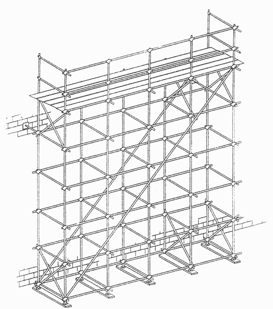
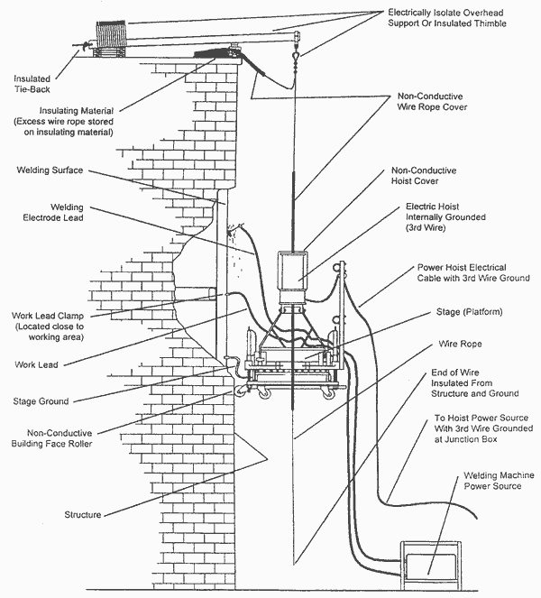
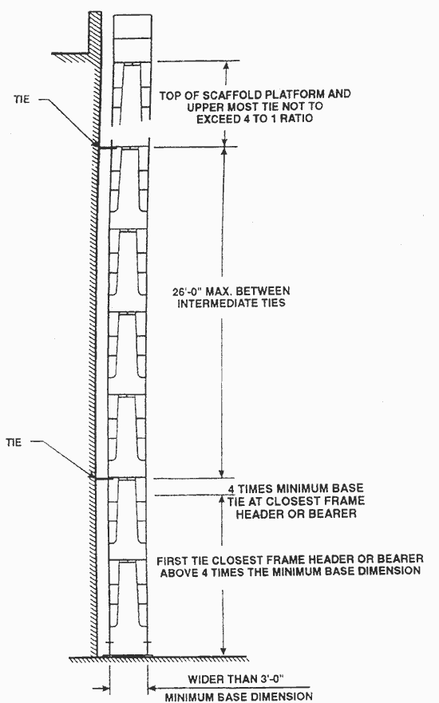

Federal RegisterSafety Standards for Scaffolds Used in the Construction Industry; Final RuleFederal Register - Table of Contents
DEPARTMENT OF LABOR Occupational Safety and Health Administration 29 CFR Part 1926 [Docket No. S-205] RIN 1218-AA40 Safety Standards for Scaffolds Used in the Construction Industry AGENCY: Occupational Safety and Health Administration, U.S. Department of Labor. ACTION: Final rule. SUMMARY: The Occupational Safety and Health Administration (OSHA) hereby revises the construction industry safety standards which regulate the design, construction, and use of scaffolds. The final rule updates the existing scaffold standards and sets performance-oriented criteria, where possible, to protect employees from scaffold-related hazards such as falls, falling objects, structural instability, electrocution and overloading. In particular, the final rule has been updated to address types of scaffolds--such as catenary scaffolds, step and trestle ladder scaffolds, and multi-level suspended scaffolds--not covered by OSHA's existing scaffold standards. In addition, the final rule allows employers greater flexibility in the use of fall protection systems to protect employees working on scaffolds and extends fall protection to erectors and dismantlers of scaffolds to the extent feasible. Another area that the final rule strengthens is training for workers using scaffolds; the conditions under which such employees must be retrained are also specified in the final rule. Finally, the language of the rule has been simplified, duplicative and outdated provisions have been eliminated, overlapping requirements have been consolidated, and the performance orientation of the rule has been enhanced to allow employers as much flexibility in compliance as is consistent with employee protection. DATES: Effective dates. This standard will become effective on November 29, 1996, except for § 1926.453(a)(2), which will not become effective until an Office of Management and Budget (OMB) Control number is received and displayed for this "collection of information" in accordance with the Paperwork Reduction Act of 1995 (44 U.S.C. 3501 et seq.). OSHA will publish a document in the Federal Register announcing the effective date of § 1926.453(a)(2). Incorporation by reference. The incorporations by reference of certain publications listed in this final rule are approved by the Director of the Federal Register as of November 29, 1996. Compliance date: Employers are required to comply with the provisions of paragraphs (e)(9) and (g)(2) of § 1926.451, which address safe access and fall protection, respectively, for employees erecting and dismantling supported scaffolds starting on September 2, 1997. Comments. Written comments on the paperwork requirements of this final rule must be submitted on or before October 29, 1996. ADDRESSES: In compliance with 28 U.S.C. 2112(a), the Agency designates for receipt of petitions for review of the standard, the Associate Solicitor for Occupational Safety and Health, Office of the Solicitor, Room S-4004, U.S. Department of Labor, 200 Constitution Avenue, N.W., Washington, D.C. 20210. Suggestions and information regarding the drafting of non-mandatory Appendix B, "Criteria for Determining the Feasibility of Providing Fall Protection and Safe Access for Workers Erecting or Dismantling Supported Scaffolds" should be submitted to the Docket Officer, Docket S-205, U.S. Department of Labor, Room N-2625, 200 Constitution Avenue, NW., Washington, D.C. 20210. FOR FURTHER INFORMATION CONTACT: Ms. Anne C. Cyr, Occupational Safety and Health Administration, Office of Information and Public Affairs, Room N-3647, U.S. Department of Labor, 200 Constitution Avenue, N.W., Washington, D.C. 20210, Telephone: (202) 219-8148. SUPPLEMENTARY INFORMATION: I. Background Congress amended the Contract Work Hours Standards Act (40 U.S.C. 327 et seq.) in 1969 by adding a new section 107 (40 U.S.C. 333) to provide employees in the construction industry with a safer work environment and to reduce the frequency and severity of construction accidents and injuries. The amendment, commonly known as the Construction Safety Act (CSA), significantly strengthened employee protection by authorizing the promulgation of construction safety and health standards for employees of the building trades and construction industry working on federal and federally-financed or federally-assisted construction projects. Accordingly, the Secretary of Labor issued Safety and Health Regulations for Construction in 29 CFR part 1518 (36 FR 7340, April 17, 1971). The Occupational Safety and Health Act of 1970 (the OSH Act) (29 U.S.C. 651 et seq.) authorized the Secretary of Labor to adopt established federal standards issued under other statutes, including the CSA, as occupational safety and health standards. Accordingly, the Secretary of Labor adopted the Construction Standards, which had been issued under the CSA, as OSHA standards (36 FR 10466, May 29, 1971). The Safety and Health Regulations for Construction were subsequently redesignated as 29 CFR part 1926 (36 FR 25232, December 30, 1971). Standards addressing scaffolds, §§ 1926.451 and 1926.452, were adopted in subpart L of part 1926 as OSHA standards as part of this process. Various amendments were made to subpart L during the first two years of the OSH Act. The amendments revised scaffold provisions that addressed planking grades, wood pole scaffold construction, overhead protection, bracket scaffold loading, and plank spans. Also, substantive provisions concerning pump jack scaffolds, height of catch platforms, and guardrails were added (37 FR 25712, December 2, 1972). Based on concerns regarding the effectiveness of the existing scaffold standards, OSHA began a complete review of subpart L in 1977. The Agency consulted the Advisory Committee on Construction Safety and Health (ACCSH) several times regarding draft revisions to subpart L. The transcripts of these meetings are part of the public record for this rulemaking (Ex. 3-4). OSHA addresses specific recommendations from the ACCSH, as well as those submitted by other rulemaking participants, in the Summary and Explanation section, below. On November 25, 1986, OSHA issued a notice of proposed rulemaking (NPRM) on scaffolds used in construction (51 FR 42680). The proposal set a period, ending February 23, 1987, during which interested parties could submit written comments or request a hearing. The Agency twice granted requests for more time to submit comments and hearing requests. OSHA first extended the comment and hearing request period to June 1, 1987 (52 FR 5790, February 26, 1987) and then extended that period to August 14, 1987 (52 FR 20616, June 2, 1987). OSHA received 602 comments on the proposal, along with several hearing requests. On January 26, 1988, OSHA announced that it would convene an informal public hearing on March 22, 1988 to elicit additional information on specific issues related to scaffolds, fall protection and stairways and ladders (53 FR 2048). The informal public hearing was held on March 22-23, 1988, with Administrative Law Judge Joel Williams presiding. At the close of the hearing, Judge Williams set a period, ending May 9, 1988, for the submission of additional comments and information. OSHA received 31 submissions, including testimony and documentary evidence, in response to the hearing notice. On August 11, 1988, Judge Williams certified the rulemaking record, including the hearing transcript and all written submissions to the docket, thereby closing the record for this proceeding. In 1988, the American National Standards Institute (ANSI), an organization which sets voluntary consensus standards, approved a revision of ANSI A10.8-1977, Scaffolding, updating its safety requirements for the use of scaffolds in construction and demolition operations. Section 6(b)(8) of the OSH Act requires that when an OSHA standard differs substantially from an existing national consensus standard, the Secretary must publish "a statement of the reasons why the rule as adopted will better effectuate the purposes of the Act than the national consensus standard." In compliance with that requirement, OSHA has reviewed the requirements of this final rule with reference to the corresponding provisions of ANSI A10.8-1988. The Agency discusses the relationship between the provisions of subpart L and corresponding provisions of ANSI A10.8-1988 in the Summary and Explanation, below. On March 29, 1993, OSHA reopened the rulemaking record for subpart L (58 FR 16509) to obtain additional comments and information regarding fall protection and safe means of access for employees erecting and dismantling scaffolds; the use of crossbraces in scaffold systems; and the use of repair bracket scaffolds. The comment period was scheduled to end on May 28, 1993. On May 26, 1993, the Agency extended the comment period (58 FR 30131) to June 29, 1993, in response to a request for additional time to submit comments. OSHA received 46 comments in response to the March 29 notice. Those comments are discussed below in relation to the pertinent provisions of the final rule. On February 1, 1994, OSHA again reopened the rulemaking record (59 FR 4615) to obtain comments and information regarding scaffold stairways; repair bracket scaffolds; tank builder scaffolds; a NIOSH study of workplace fatalities; and scaffold-related material incorporated from the proposed part 1910, subpart D rulemaking. The comment period, which ended on March 18, 1994, elicited 46 comments. Those comments are also discussed below in relation to the pertinent provisions of the final rule. A wide range of employers, businesses, labor unions, trade associations, state governments, and other interested parties contributed to the development of this record. OSHA appreciates these efforts to help develop a rulemaking record that provides a sound basis for the promulgation of revised subpart L. Based on its review of existing subpart L, OSHA believes that certain provisions in the existing standards are outdated, redundant, or ambiguous. In addition, some types of scaffolds used in construction (e.g., catenary scaffolds) are not clearly addressed by the existing standards, and some provisions cover only certain types of scaffolds when they should apply to all. The final rule eliminates those unnecessary, outdated and redundant provisions (e.g., revised subpart L states the requirement for guardrails once, rather than 19 separate times as in the existing standard). OSHA is coordinating the revision of part 1926, subpart L, with the ongoing rulemakings initiated to revise the General Industry (part 1910, subpart D) and Shipyard (part 1915, subpart N) scaffold standards, so that those standards will be consistent, where appropriate. II. Hazards Involved Scaffold-related incidents resulting in injuries and fatalities continue to occur despite the fact that OSHA has had a scaffold standard (existing subpart L) in place since 1971 (Exs. 1, 2, 3, 42, 43, 44 and 45). However, the Agency believes that compliance with the standard being published today will be better than it has been in the past because this standard has been simplified, brought up to date, and strengthened to provide additional protection. Although specific accident ratios cannot be projected for the estimated 3.6 million construction workers currently covered by subpart L, the Economic Analysis that accompanies this final rule estimates that, of the 510,500 injuries and illnesses that occur in the construction industry annually, 9,750 are related to scaffolds. In addition, of the estimated 924 occupational fatalities occurring annually, at least 79 are associated with work on scaffolds. OSHA prepared the following statistical estimates (based on 4.5 million construction workers then covered by subpart L) to support the 1986 proposal for subpart L, based on a review of accident data prepared by the Bureau of Labor Statistics (BLS) (Ex. 3-1). The revised scaffold standards contain a number of provisions designed specifically to address the findings of this analysis. a. Seventy-two percent of the workers injured in scaffold accidents covered by the BLS study attributed the accident either to the planking or support giving way, or to the employee slipping, or being struck by a falling object. Plank slippage was the most commonly cited cause. b. About 70 percent of the workers learned of the safety requirements for installing work platforms, assembling scaffolds, and inspecting scaffolds through on-the-job training. Approximately 25 percent had no training in these areas. c. Only 33 percent of scaffolds were equipped with a guardrail. The following are recent examples, from the OSHA Integrated Management Information System (IMIS) data, of the types of accidents that continue to injure and kill employees working on scaffolds.
Based on its analysis of the available data and its field experience in enforcing construction standards, the Agency has determined that employees using scaffolds are exposed to a significant risk of harm. Specifically, scaffold related fatalities still account for approximately 9% of all fatalities in the construction workplace. In addition, the above data indicate that the revised final standard would have prevented many of these accidents more effectively than compliance with the existing scaffold standards. Consequently, OSHA finds that the revision of its scaffold standards for construction is necessary to improve employee protection. OSHA has determined that, as revised, the standard clearly states employers' duties and the appropriate compliance measures. For additional discussion of incidence rates, significance of risk, and the protectiveness of the final rule, see Section IV, Summary of the Final Economic Analysis. III. Summary and Explanation of the Final Rule The following discussion explains how the final rule corresponds to or differs from the proposed scaffold standard and the existing standard, and how the comments and testimony presented on each provision influenced the drafting of the final rule. Except where otherwise indicated, proposed provisions which did not elicit comment have been promulgated as proposed, for reasons stated in the preamble to the proposed rule which is hereby incorporated by reference (51 FR 42680). Subpart L--Scaffolds. The title of subpart L of OSHA's Construction standards has been changed from "Scaffolding" to "Scaffolds", as proposed. The word "scaffold" is used in the title and throughout the final rule in lieu of the longer word "scaffolding." This change does not affect the scope of subpart L. OSHA did not receive any comments concerning the title of the subpart. Section 1926.450 Scope, application and definitions applicable to this subpart. Paragraph (a) of § 1926.450 states the scope and application of subpart L. The final rule will apply to all scaffolds used in construction, alteration, repair (including painting and decorating), and demolition operations covered under 29 CFR part 1926, except that crane or derrick suspended personnel platforms will continue to be regulated under § 1926.550(g). Language explicitly excluding these platforms has been added to the final rule. The relationship between § 1926.550(g), which covers these platforms, and subpart L is discussed further in relation to § 1926.451(c)(2) and NPRM Issue 3, below. In addition, aerial lifts are covered exclusively in § 1926.453, as noted in paragraph (a) of § 1926.450. Proposed paragraph (a) covered all scaffolds. A commenter (Ex. 2-38) recommended that OSHA explicitly exempt personnel platforms suspended by cranes or derricks from this final rule. The commenter stated "[t]his would avoid confusion, both for the Compliance Officer and the employer." As noted above, the Agency recognizes the need for an exemption and has revised paragraph (a) accordingly. Another commenter (Ex. 2-18), representing the elevator industry, suggested that OSHA revise the scope of proposed subpart L to exclude "False cars used in elevator construction that are equipped with independent safeties that operate on the guardrails * * *" The commenter supported the suggestion as follows: "An elevator false car operates on fixed guiderails * * * equipped with safeties that ride on the guiderails * * * and are operated automatically by the slackening of the hoisting rope. Past OSHRC (Occupational Safety and Health Review Commission) decisions have recognized that a false car is a unique tool and is not a scaffold." The commenter did not cite any specific OSHRC decisions to support its assertion. OSHA disagrees with this commenter on this point, because the findings in two enforcement cases involving the Otis Elevator Company (12 OSHRC 1470 and 12 OSHRC 1513 (1985)) clearly indicate that the scaffold standards of subpart L cover false cars. In Otis Elevator Company, 12 OSHRC 1513 (1985), the final order stated: The evidence in this case showed that the false cars were used as elevated working space from which employees installed permanent elevator rails. The ability to raise and lower the false cars by means of cables from overhead supports does not remove false cars from the applicability of the scaffold standard, and a false car is found to be a scaffold within the meaning of 29 CFR 1926.452(b)(27). The Agency notes that elevator false cars fit the definition of a "scaffold" in final rule § 1926.450(b) in that they are temporary elevated work platforms used for supporting employees. Accordingly, there are no apparent grounds for disputing that elevator false cars are properly regulated under part 1926, subpart L. Therefore, OSHA will continue to regulate temporary elevated work platforms, such as false cars and go-devils used in elevator shaft construction, as scaffolds. The Scaffolding, Shoring and Forming Institute (SSFI) (Ex. 2-367) recommended that OSHA include "Window cleaning" within the scope of subpart L, because "[w]indow cleaning is a common activity that, for the overwhelming majority of instances, uses transportable suspended scaffolds." In addition, the Scaffold Industry Association (SIA) (Ex. 2-368) suggested that OSHA add "scheduled and unscheduled maintenance (including but not limited to painting and decorating, tuck pointing, sand blasting, water proofing and window cleaning)" to the scope of subpart L, because maintenance is a type of work "regularly performed on scaffolds addressed in this subpart and, therefore, should be included in the scope." Another commenter (Ex. 2-462) stated that expanding the scope of subpart L to include maintenance would create confusion and "would greatly reduce the safety standard already in place for Powered platforms for exterior building maintenance" (29 CFR 1910.66). The Agency is not expanding the scope to include building maintenance because building maintenance (such as window cleaning) is a general industry activity, addressed under the appropriate scaffold and powered platform standards of 29 CFR part 1910. OSHA received a general comment (Ex. 2-29) which noted that 1910.66 addressed powered platforms used for exterior building maintenance in general industry and urged OSHA to ensure that the corresponding regulatory language in the construction standard for scaffolds was consistent. As discussed above, the Agency agrees, and is coordinating its General Industry, Shipyard and Construction rulemaking activity so that employers in those industries have consistent regulation, to the extent that workplace conditions permit. Paragraph (b) of § 1926.450 lists and defines all major terms used in subpart L. Proposed terms and definitions which elicited no comments and which have been promulgated unchanged or with only minor editorial revisions are not addressed below. Those terms include "adjustable suspension scaffold", "boatswains' chair", "body belt", "body harness", " brace", "cleat", "coupler", "crawling board", "double pole scaffold", "exposed power lines", "fabricated decking and planking", "float (ship) scaffold", "form scaffold", "hoist", "interior hung scaffold", "ladder stand", "lean-to scaffold", "lower level", "mobile scaffold", "multi-level suspension scaffold", "multi-point adjustable scaffold", "open sides and edges", "overhand bricklaying", "platform", "pole scaffold", "pump jack scaffolds", "roof bracket scaffold", "runner", "self-contained adjustable scaffold", "shore scaffold", "single-point adjustable suspension scaffold", "single pole scaffold", "step platform and trestle ladder scaffold", "stone setter multi-point adjustable suspension scaffold", "supported scaffold", "suspension scaffold", "tube and coupler scaffolds", "tubular welded frame scaffold", "two-point suspension scaffold", "unstable objects", "vertical pickup", "walkway", and "window jack scaffold". As proposed, OSHA is revising its definitions for particular types of scaffolds by specifying whether a particular type of scaffold is a "supported" or a "suspension scaffold." OSHA believes that adding this information will make it easier for employers to identify the appropriate general requirements in final rule § 1926.451. In addition, the Agency has revised subpart L definitions by deleting language that limits the use of a particular type of scaffold. Such substantive limitations are more appropriately placed in regulatory text. Accordingly, for example, OSHA has revised the definition for "bricklayers' square scaffolds" (a scaffold composed of framed wood squares which support a platform, limited to light and medium duty) by deleting the words "limited to light and medium duty". Similarly, OSHA has revised the definition for "coupler" to be "a device for locking together the component tubes of a tube and coupler scaffold", deleting language addressing the material used for the coupler because such requirements are more properly located in §§ 1926.451 or 1926.452. The following discussion covers the terms for which definitions are being added or revised in this final rule and those proposed terms which elicited comments. "Bearer (Putlog)." This definition is the same as the definition proposed except that the word "Putlog," an industry-used term, has been added to the definition. A commenter (Ex. 2-29) suggested putlog should be included in the proposed definition "to show a close or synonymous relationship to the term `bearer' " and because "it is a widely used and understood term." The Agency agrees with the commenter and has revised the proposed definition accordingly. "Bricklayers' Square Scaffold" is defined in existing § 1926.452(b) and the proposed definition is substantively unchanged in the final rule. The definition deletes the existing § 1926.452(b) requirements that bricklayers' square scaffolds be constructed of "wood" and that the platform capacity be limited to "light and medium duty." The revised definition recognizes that bricklayers' square scaffolds can be constructed of materials other than "wood" and that their capacity is not limited to "light and medium duty" as long as they can meet the capacity requirements set forth in final rule § 1926.451(a)(1). A commenter (Ex. 2-23) suggested that OSHA adopt the ANSI A10.8-1977 definition for Bricklayers' Square Scaffold which specifies the use of "wood" and the ability to sustain light to medium loads. As stated above, OSHA believes it would be inappropriate to limit technological advances that would provide for the use of other materials with greater capacities. Therefore, the Agency has not made the suggested revision. "Carpenters' bracket scaffold." This term means a supported scaffold consisting of a platform supported by brackets attached to building or structural walls. The final rule is identical to the proposal. The SIA (Ex. 2-368) suggested that because different trades (i.e., cement finishers) use this type scaffold, the term be renamed "bracket scaffold" exclusively. OSHA recognizes that this type of scaffold is used by several trade groups. However, OSHA believes that it is widely recognized in the construction industry that "carpenters' bracket scaffolds" are not used only by carpenters. Therefore, the Agency is not making the suggested revision. "Catenary scaffold." This type of scaffold is not specifically addressed in OSHA's existing rule but is covered in final rule § 1926.452(r). This term refers to a suspension scaffold consisting of a platform supported by two essentially horizontal and parallel ropes which are secured to structural members and may be supported by vertical pickups. The proposed definition has been changed to replace the language "fastened to" with "supported by" and a phrase has been added explaining that horizontal ropes "may be supported by vertical pickups." One commenter (Ex. 2-23) suggested that OSHA insert the word "wire" between the words "parallel" and "rope." However, OSHA does not intend to restrict the type of material used for suspension scaffold rope as long as it is "capable of supporting without failure six times the maximum intended load" as set forth in final rule § 1926.451(a)(3). Two commenters (Exs. 2-23 and 2-368) suggested OSHA replace the words "fastened to" with "supported by" in this definition. OSHA agrees that the suggested words more accurately describe the function of the horizontal ropes with relation to the platform and is revising the proposed definition accordingly. In addition, the SIA (Ex. 2-368) suggested that OSHA add the phrase "and may be supported by vertical pickups". OSHA agrees with the commenter. Vertical pick-ups can act as supports for sagging horizontal ropes. Also, because final rule § 1926.452(r)(1) refers to vertical pickups, OSHA believes that it is appropriate to include this phrase in the definitions. "Chimney hoist." This term is being added to recognize a specific type of multi-point adjustable suspension scaffold used to gain access to worksites inside chimneys. "Competent person." This term is being added to the final rule as a matter of convenience for users. The definition is identical to that found in § 1926.32. "Continuous run scaffold (run scaffold)" means a two-point or multi-point adjustable suspension scaffold constructed using a series of interconnected braced scaffold members or supporting structures erected to form a continuous scaffold. This term is being added to recognize this type of system. The Agency notes that the key element here is that the scaffold members must be interconnected so that the erected scaffold acts as a single unit. This would preclude planking across two independent scaffolds without joining them so the resulting scaffold acts as one unit. This system allows erecting a lengthy scaffold without requiring a continuous planked platform, as long as the smaller platform is properly guarded. "Deceleration device." This term means any mechanism, such as a rope grab, rip stitch lanyard, specially-woven lanyard, tearing or deforming lanyard, automatic self-retracting lifelines/lanyard, which serves to dissipate a substantial amount of energy during a fall arrest, or otherwise limits the energy imposed on an employee during fall arrest. The proposed definition, which was effectively identical, has been editorially revised for the sake of clarity. Three commenters (Exs. 2-13, 2-368 and 2-516) suggested that rope grabs and some self-retracting lifelines are not "deceleration devices" but are actually fall arrest devices. OSHA notes, however, that it is difficult to differentiate clearly between system components, as suggested, because fall arrest (stopping) and energy absorption (braking) are closely related. The Agency also observes that the performance criteria for personal fall arrest equipment address the entire system, not just "fall arresters" or "energy absorbers". Accordingly, OSHA has not made the suggested change. "Equivalent." This term is used in the final rule to allow alternative means of complying with the standard. The definition provides that the employer must be able to demonstrate that the alternative means of compliance will provide an equal or greater degree of safety than that attained by using the method or item specified in the standard. The final definition is identical to the proposed definition, except that minor editorial changes have been made for the sake of clarity. The final rule definition is consistent with the corresponding definitions in 1910.66 and in part 1926, subparts M and X. The SIA (Ex. 2-368) suggested that OSHA not require the employer to "demonstrate whether or not the scaffold is of `equal or greater degree of safety' because the employer is too many steps removed from the manufacturer" and because requiring the employer to test for equivalency would create a significant danger that failure would occur. However, the proposed language reflects the Agency's longstanding position that employers who choose to deviate from criteria set in OSHA standards must be able to demonstrate that employee protection has not been adversely affected. The employer has the flexibility to establish equivalence by any effective means, including information available from equipment suppliers and taking into account the specific circumstances of the work to be done. "Eye" or "eye splice" means a loop with or without a thimble at the end of a wire rope. This term is being added to the final rule to clarify the Agency's intent that this type of connection is an acceptable way to connect wire ropes without significantly affecting their strength or capacities. The term is used in final rule §§ 1926.451(d)(8) and (9). "Fabricated frame scaffold" means a supported or suspended frame scaffold consisting of platform(s) supported on fabricated end frames with integral posts, horizontal bearers, and intermediate members. This is the term for the type of scaffold presently identified as "tubular welded frame scaffold." OSHA has determined that the current term is too restrictive because the words "tubular" means round and "welded" means that metal components are involved. The provisions of final rule § 1926.452(c), Fabricated frame scaffolds, are not subject to such limitations. They address fabricated frames and related scaffold components whether the component parts are square or round, or made of metal, plastic, wood, or some other material. The final rule definition is identical to that in the proposed rule. Two commenters (Exs. 2-13 and 2-320) suggested using the existing term "tubular welded frame" and one commenter (Ex. 2-23) suggested using the term "Fabricated tubular frame (Tubular welded frame scaffold)" instead of the proposed term. However, as explained above, OSHA does not intend to restrict this term to "tubular" or "welded" components. "Failure." This term is used in performance-oriented paragraphs such as §§ 1926.451 (a)(1) and (a)(3), which address scaffold capacity. Because the word might otherwise be interpreted to mean only breakage or a physical separation of scaffold components, the final rule definition clearly indicates that load refusal (the point where the ultimate strength of a component is exceeded) is also considered to be failure. This is the point where structural members lose their ability to carry loads although they have not broken or separated. The term is the same as the term defined in Subpart X of Part 1926, Ladders and Stairways. The definition for "failure" in the final rule is the same as proposed. One commenter (Ex. 2-40) suggested that the term "ultimate strength" was not clearly defined. Another commenter (Ex. 2-38) suggested deleting the last sentence of the proposed definition (Load refusal is the point where the ultimate strength is exceeded) to avoid confusion between "ultimate strength" and "overloading without breaking." As OSHA stated above, "ultimate strength" may be exceeded without component parts breaking or separating. Therefore, the Agency believes the suggested changes are unnecessary. "Guardrail system." This term refers to perimeter protection composed of vertical barriers which are erected to prevent employees from falling. The final rule definition is essentially identical to the proposed definition. This term replaces the definition of "guardrail" in the existing rule, which appeared at § 1926.452(b)(10). The old definition was rail secured to uprights and erected along the exposed sides and ends of platforms. OSHA believes that this definition did not adequately reflect the manner in which toprails, midrails and other intermediate members, and toeboards combine to provide effective fall protection. The final rule definition of guardrail clearly indicates that the entire system, including toprail, midrail (or other intermediate protection), and uprights, is covered when guardrails are addressed in final rule § 1926.451(e). The definition of guardrail system used in the proposed rule stated that a guardrail system was "a vertical barrier erected to prevent employees from falling from an open side or edge of a scaffold platform or walkway". The proposed definition also distinguished between "Type I guardrails", which were capable of providing fall protection without the use of personal fall arrest systems, and "Type II guardrails", which would need to be supplemented by personal fall arrest systems (as explained below, OSHA has not maintained this distinction in the final rule). The SIA (Ex. 2-368) suggested replacing the word "prevent" with the word "protect" in the proposed definition of "guardrail system". According to standard dictionary meanings of both words, "prevent" more accurately describes the function of the guardrail system, which is to keep the employee from going past the perimeter of the scaffold in the first place. Therefore, the Agency is not making the suggested change. Three commenters (Exs. 2-13, 2-53 and 2-370) recommended that OSHA retain the guardrail rules in the existing scaffold standard and eliminate the concept of "Type I" and "Type II" from the proposed definition of guardrail systems. The commenters suggested that the old rule's definition of guardrail protection would provide more fall protection than the definition used in the proposed rule. For reasons discussed further below, OSHA finds that the final rule's requirements for guardrail systems, which are essentially identical to those in the proposed rule, provide more protection than the requirements in the existing rule. However, OSHA has deleted the discussion of "Type I" and "Type II" guardrails from the final rule for the sake of clarity and has added specific criteria for guardrails to final rule § 1926.451(g). "Horse scaffold" means a supported scaffold consisting of a platform supported by construction horses. Horse scaffolds made of metal are sometimes known as trestle scaffolds. The proposed definition was similar except that it did not include the term "trestle scaffold." The SIA (Ex. 2-368) suggested revising the definition to specify that horse scaffolds "may be constructed of wood, metal, or a combination of both. The metal horses may be referred to as `trestle horses'." Under OSHA's performance-oriented approach to subpart L, an employer may use any construction materials (e.g., wood or metal) that enable the scaffold to comply with the capacity requirement set forth in § 1926.451(a)(1). However, the Agency agrees that it would be useful to indicate that some horse scaffolds constructed of metal are known as trestle scaffolds. OSHA has revised the definition accordingly. "Ladder jack scaffold." The final rule definition, which is identical to that in the proposed rule, states that this type of scaffold is a supported scaffold consisting of a platform supported by brackets attached to ladders. A commenter (Ex. 2-23) stated that the capacity of this type of scaffold should be limited to "light duty" and that the words "light duty" should be included in this definition. As discussed above, OSHA believes it is inappropriate for definitions to include substantive requirements. In any event, the Agency has determined that a ladder jack scaffold which complies with the capacity criteria of § 1926.451(a)(1) and the other pertinent subpart L requirements will be considered acceptable. Accordingly, OSHA has not made the suggested change. "Landing." This new term, which has been added to ensure that the requirements of final rule § 1926.451(e)(4) are clearly understood, refers to a platform at the end of a flight of stairs. "Large area scaffold" means a pole scaffold, tube and coupler scaffold, systems scaffold, or fabricated frame scaffold erected over substantially the entire work area, for example; A scaffold erected over the entire floor area of a room. The Agency has added this term and definition, along with final rule § 1926.452(d), to provide a reference point in the standard for this widely used type of scaffold. "Lifeline" means a component consisting of a flexible line for connection to an anchorage at one end to hang vertically (vertical lifeline) or for connection to anchorages at both ends to stretch horizontally (horizontal lifeline), and which serves as a means for connecting other components of a personal fall arrest system to the anchorage. A vertical lifeline is sometimes known as a dropline. A horizontal lifeline is sometimes known as a trolley line. This definition, which was not part of the proposed rule, has been added for the sake of clarity. The definition in part 1926, subpart M, Fall Protection, is consistent with the definition in final subpart L. The proposed terms "dropline" and "trolley line", along with their definitions, have been deleted as separate definitions and have been incorporated into this final rule definition. One commenter (Ex. 2-57) stated that a "trolley line" was a "horizontal lifeline" and suggested that OSHA set "strength requirements." While final rule subpart L does not set numerical load requirements for "horizontal lifelines", criteria for such equipment are provided in § 1926.502(d), subpart M, as referenced by a note to final rule § 1926.451(g)(3). "Masons' adjustable supported scaffold." OSHA proposed this term, which was not defined in existing subpart L, so employers who used "self-contained adjustable scaffolds" in masonry operations would have a clear reference point in revised subpart L. The final rule is identical to the proposed rule definition. One commenter (Ex. 2-23) suggested replacing the parenthetical reference to self contained adjustable scaffolds with the definition for such scaffolds in ANSI A10.8-1977. However, to limit redundancy and confusion, OSHA does not believe that this term should be defined by the format suggested by the commenter. "Masons' multi-point adjustable suspension scaffold." This term replaces the term "Masons' adjustable multiple-point suspension scaffold" in the existing standard. The term means a two-point or multi-point adjustable suspension scaffold designed and used for masonry operations. The final rule definition is the same as that proposed. One commenter (Ex. 2-23) suggested OSHA adopt the definition for this term from ANSI A10.8-1977, which contains the language "continuous platform." However, it is not OSHA's intent to limit this type of scaffold to a single "continuous platform." All types of multi-point suspension scaffolds covered by subpart L may consist of more than one platform. Multi-point scaffolds are not limited by the number of suspension wires, platforms, or the location of attachment of the suspension wires to the platform or platforms (Example: A multi-point scaffold may consist of one platform suspended by four wires or it may consist of two platforms suspended by four wires). Additionally the definition suggested by the commenter did not include the words "masonry operations." OSHA is including the words "masonry operations" in this definition so it applies specifically to such scaffolds used in the masonry trade. "Maximum intended load" means the total load of all persons, equipment, tools, materials, transmitted loads, and other loads reasonably anticipated to be applied to a scaffold or scaffold component at any one time. This term replaces the existing terms "maximum rated load" and "workload". The term addresses the types of loads which are to be included when determining the maximum load. OSHA has been concerned that the word "rated" in the existing term "maximum rated load" does not clearly express how the safety factor of four (existing rule paragraph 1926.451(a)(7)) or six (existing rule paragraph 1926.451(a)(2)) is to be incorporated into the determination of the maximum load. The final rule definition and final rule § 1926.451(a)(1) clearly indicate that the maximum intended load is determined without regard to safety factors. Once the maximum intended load is determined, the employer then applies the pertinent safety factor to determine the requisite strength for the system in question. The final rule definition is the same as in the proposed rule except the word "employees" has been replaced with the word "persons". The SIA (Ex. 2-368) suggested this change because "[p]ersons other than employees might be on a scaffold thus overloading it." OSHA agrees that the weight of all "persons" needs to be considered when calculating the maximum intended load. One commenter (Ex. 2-23) suggested that OSHA add the closely related term "scaffold load rating" which includes definitions for the words "heavy-duty loading," "medium-duty loading," "light-duty loading" and "special loading." The Agency provides examples of appropriate measures for "heavy-duty," "medium-duty" and "light-duty" scaffold in non-mandatory Appendix A of final rule subpart L. Accordingly, the Agency believes the appropriate information is available and no further changes are necessary. Two comments (Exs. 2-13 and 2-320) suggested replacing the proposed term and definition of maximum intended load with the term "Maximum Rated Load." The commenters suggested that the term "Maximum Rated Load" takes into account safety factors established by the designer or manufacturer. OSHA agrees that the term "Maximum Rated Load" does include built-in safety factors. As stated above, by not including the words "safety factor" in this definition or replacing the proposed term with "Maximum Rated Load," which implies built-in safety factors, OSHA clearly indicates that the minimum safety factor of 4:1 as set forth in final rule § 1926.451(a)(1) applies. The Agency believes it is appropriate to take into account the "expected" burden as well as the burden a scaffold "can" support without failure. "Needle beam scaffold" means a suspension scaffold supported by needle beams. The final rule definition is the same as the proposed definition. One commenter (Ex. 2-23) suggested that OSHA limit the use of this type of scaffold to "light-duty". However, as discussed earlier, the Agency does not intend to limit the capacity of a scaffold as long as it meets the pertinent requirements of § 1926.451(a). OSHA has provided examples of measures that would enable a scaffold to comply with these requirements in non-mandatory Appendix A. "Outrigger." This term means the structural member of a supported scaffold used to increase the base width of a scaffold in order to provide support and stability for the scaffold. The terms, "outrigger beam" and "outrigger scaffold" are new definitions provided to explain the difference between these three similar terms. The final rule differs from the proposal, which defined outrigger as "the structural member of a supported scaffold used to increase the base width of a scaffold in order to provide greater stability for the scaffold." The wording change was made in response to a comment from the SIA (Ex. 2-368), suggesting that OSHA replace the word "greater" with the words "support and increased." OSHA agrees that the suggested wording more accurately expresses the Agency's intent. "Personal fall arrest system." This term, which replaces the proposed term "body belt/harness system", refers to a system used to arrest the fall of an employee from a working level. It consists of an anchorage, connectors, and a body belt or body harness and may include a lanyard, deceleration device, lifeline, or suitable combinations of these. The final rules on fall protection (part 1926, subpart M) and powered platforms (1910.66) also define "personal fall arrest system" in this manner. The final rule definition is essentially the same as that proposed for "body belt/harness systems", and the phrase "personal fall arrest systems" appears in the final rule wherever the phase "body belt/harness systems" was used in the proposed rule. A commenter (Ex. 2-13) suggested that the definition be reworded to indicate clearly that lifelines and deceleration devices are not always included as a part of a body belt/harness system. OSHA agrees and has clarified this point in the revised definition. OSHA has deleted the proposed term "platform unit" and has incorporated the proposed definition language into final rule § 1926.451(b)(1)(i), which addresses the construction of scaffold platforms. "Power operated hoists." This new term refers to hoists which are powered by other than human energy. The final rule language differs from the proposed language, which used the term "mechanically-powered hoists". OSHA has revised the terms "mechanically powered" and "manually powered" hoists to read "power operated hoists and manually operated hoists", because the Agency has determined that the language should be consistent with ANSI A10.8-1988, paragraph 6. "Qualified." This term is being added to the final rule as a matter of convenience for users. The definition is identical to that found in § 1926.32. "Rated load." This new term addresses the maximum load that a hoist is allowed to lift. The discussion of final rule § 1926.451(a)(1), below, addresses the use of this term. "Repair bracket scaffold." This new term has been added to address the type of scaffold addressed by final rule § 1926.452(x). This term is discussed below in conjunction with the discussion of that paragraph. "Scaffold." This term refers to a temporary elevated platform (supported or suspended) and its supporting structure, including points of anchorage, used for supporting employees or materials or both. The definition also clearly indicates that crane or derrick suspended personnel platforms are not scaffolds. The Agency has added the phrase "including points of anchorage" to the definition of scaffold in the final rule to indicate clearly that points of anchorage are considered to be part of a scaffold. "Stair tower (Scaffold stairway/tower)." This new term has been added to describe the means of access addressed by final rule § 1926.451(e)(4). This term is addressed in relation to that provision below. "Stall load." This new term has been added to identify the maximum load that a hoist can lift without stalling or shutting down. The use of this term is discussed in relation to final rule § 1926.451(a)(2), below. "Stilts" mean a pair of poles or similar supports with raised footrests, used to permit walking above the ground or working surface. This term and definition has been added to recognize this type of scaffold, which is used by many trades in the construction industry to allow employees to walk elevated above the ground or working surface. Final rule paragraph § 1926.452(y) addresses the safe use of this type of scaffold both as a scaffold itself, and on other types of scaffolds (large area scaffolds). "System scaffold" means a scaffold consisting of posts with fixed connection points that accept runners, bearers, and diagonals that can be interconnected at predetermined levels. This new term has been added to the final rule to recognize the existence and acceptance of this type of scaffold. The definition is identical to the definition for the same term found in ANSI A10.8-1988. "Tank builders' scaffold" means a supported scaffold consisting of a platform supported by brackets that are either directly attached to a cylindrical tank or are attached to devices that are attached to such a tank. In the February 1, 1994 notice of record reopening (59 FR 4618), OSHA suggested a definition of "tank builders' scaffold" for consideration. That definition was very similar to the final rule definition except that the reopening notice definition did not specifically refer to cylindrical tanks and did specify that the platform was welded to the steel plates of the tank. The commenters (Exs. 43-19, 43-23, 43-33, 43-34, 43-35, 43-39, 43-40, 43-42, and 43-43) who responded to the proposed definition for tank builders' scaffold stated: A "tank" is not necessarily a cylinder. The scaffold is used on structures that can be cylindrical, rectangular, conical, spherical, spheroidal, or elliptical. Also, "tanks" are constructed of material other than metal; e.g., fiberglass, wood, etc. Some tanks have vertical walls that are so thin that a bracket could not be welded to it; rather, the bracket would have to be bolted. We would further comment that the bracket is often inserted into a device which is welded to the steel plate. So we would suggest not referencing the bracket being attached to the structure, but rather the bracket being attached to a device that is affixed to the structure. In addition, eleven commenters (Exs. 43-19, 43-21, 43-23, 43-27, 43-33, 43-34, 43-35, 43-39, 43-40, 43-42, and 43-43) stated that the criteria of an April 4, 1975 variance (40 FR 15139), which addressed tank builder scaffolds, would be adequately addressed by general provisions of the final rule and the definition of "tank builders' scaffold". The 1975 variance order stated: The applicants' business, which is part of the tank building industry, involves the erection of relatively large steel plate segments of circumferential rings. Due to the unique nature of the construction involved, special procedures, including special scaffolding, have been developed. For example, as opposed to more conventional scaffolds, tank scaffolds must be highly portable and have a relatively low density of occupancy by [workers]. These scaffolds are raised up the shell of the tank as new rings of steel are added and work is completed at the level below. Most plate structures are fabricated from standard length plates * * * each approximately 31.416 feet (9.42 m.) long, [with] brackets [normally] welded to them while they are on the ground prior to being placed into position on the tank wall. Scaffolding and guardrail supports are then attached to these brackets. If the applicants were to comply with [requirements] that [the maximum spacing for supports be no more than 8 feet (2.4 m.) for guardrails or 10 feet (3.0 m.) for planking], they assert it would be necessary to lay out each steel plate into sections with the brackets located approximately 7.854 feet (2.36 m.) apart. Instead, the applicants wish to lay out the plates into three equal sections with brackets located approximately 10' 6" (3.15 m.) apart. * * * Because the contour of the steel plates of the tank face is curved and the adjacent edge of the scaffold platform is straight, there is an open space between them. As a result, applicants have installed taut wire rope on the scaffold brackets that extends midway between the innermost edge of the scaffold platform and the curved plate structure of the tank face to serve as a safety line in lieu of an inner guardrail assembly. Since the information submitted to OSHA in relation to the variance addressed scaffolds used on cylindrical steel tanks, the Agency is applying the criteria of the variance only to structures that are approximately cylindrical. The Agency believes that non-cylindrical structures should be addressed on a case-by-case basis under the general provisions of the final rule. OSHA notes that 9 of the 11 commenters (Exs. 43-19, 43-23, 43-33, 43-34, 43-35, 43-39, 43-40, 43-42, and 43-43) mentioned above also stated "[t]ank builders place the scaffold inside of a cylinder, traditionally, to erect the tank." However, the Agency believes that the requirements of the variance, as modified in Appendix A of the final rule, can reasonably be applied to cylindrical tanks that are constructed of materials other than steel. The final rule definition for "tank builders' scaffold" has been worded accordingly. OSHA has not promulgated specific requirements for tank builders' scaffolds in the final rule because the Agency believes that the requirements for those scaffolds are adequately addressed in the general provisions of the final rule. The Agency notes that it has placed several provisions (some of which have been editorially modified) of the variance in Appendix A for the benefit of employers who use tank builders' scaffolds, and that the introductory text to the Appendix clearly indicates that following the Appendix will be considered to constitute compliance with the requirements of this standard with regard to scaffolds used in the construction of cylindrical tanks. However, employers choosing not to follow the Appendix must still comply with the applicable requirements of § 1926.451, particularly paragraphs (a) and (f). "Top plate bracket scaffold." This term is being added to the final rule to recognize a type of scaffold which is similar to carpenters' bracket scaffolds and form scaffolds. This type of scaffold consists of a platform supported by brackets that hook over or are attached to the top plate of a wall. Such scaffolds are used in residential construction when employees are setting roof trusses. OSHA has deleted the following terms, which are defined in the old scaffold standard, from the definition section of the final rule, because those terms are now defined in other subparts or because the final rule no longer uses the terms in question: "heavy duty scaffold," "light duty scaffold," "medium duty scaffold," "midrail," "toeboard," and "working load." In addition, the proposed definitions for "drop lines", and "trolley line" have been deleted from this final rule, since they have been incorporated into the definition of "lifeline". Under Issue L-12 in the preamble of the proposed rule, OSHA solicited testimony and related information on a suggestion by the ACCSH (Tr. 206, 6-9-87) that definitions for "ramp" and "runway" be added to the standard. The ACCSH indicated that the added definitions would facilitate clear understanding of the requirements in proposed § 1926.451(c)(4) (final rule § 1926.451(e)(4)). As noted under the discussion of the Issue, a member of the ACCSH recommended that the Agency use the definition of ramp developed by the National Safety Council. The one comment (Ex. 2-593) OSHA received addressing the Issue supported defining the two terms. The commenter did not provide any suggested wording but indicated that the definitions should be "clear and consistent with existing OSHA and ANSI definitions." In the final rule, OSHA has replaced the proposed term "runway" with the term "walkway", to indicate the Agency's regulatory intent clearly. However, the Agency believes that "ramp" is a commonly understood term and does not require a specific OSHA definition. Accordingly, OSHA has not added a definition for "ramp" to the final rule. Paragraph 1926.451(a) Capacity Final rule paragraph (a) sets the minimum strength criteria for all scaffold components and connections. The final rule sets scaffold capacity requirements that are substantively the same as those in existing subpart L, while eliminating ambiguities and apparent inconsistencies. The introductory text of the proposed paragraph, which stated that "the following requirements applied to all types of scaffolds except as indicated:", has been deleted in the final rule because the Agency has determined that it is too similar to the introductory text of paragraph (a)(1) and, therefore, is unnecessary. Paragraph (a)(1) requires that each scaffold and scaffold component be capable of supporting, without failure, its own weight and at least 4 times the maximum intended load applied or transmitted to it. Paragraphs (a)(2), (a)(3), (a)(4), (a)(5) and (g) of § 1926.451 provide exceptions to this general rule, and are discussed below. This provision is based on existing § 1926.451(a)(7), which requires that scaffolds and scaffold components "be capable of supporting without failure at least four times the maximum intended load". The final rule clearly provides that the 4 to 1 factor for a component applies only to the load which is actually applied or transmitted to that component, and not to the total load placed on the scaffold. Existing § 1926.451(a)(7), taken literally, could be read to require that each separate scaffold component be able to support four times the maximum intended load (MIL) of the entire scaffold. For example, the existing provision could be interpreted to require that a crossbrace on a supported scaffold be capable of supporting the same load as a scaffold leg, that is, be sized to support four times the entire MIL regardless of where the load is placed on the scaffold and regardless of the fact that the function of a brace is to prevent sway and not directly to support the MIL. Such an approach was not OSHA's intent. The Agency intended that each component be adequate to meet the 4 to 1 factor, but only for the portion of the MIL applied or transmitted to that component. The MIL for each component depends on the type and configuration of the scaffold system. Final rule paragraph (a)(1), which is effectively identical to the corresponding language in proposed paragraph (a)(1), clearly expresses the Agency's intent. The proposed provision has been editorially revised and reorganized for the sake of clarity. In particular, the exceptions to proposed paragraph (a)(1), which provide different coverage for suspension scaffolds, have been clearly delineated as separate paragraphs (a)(2) through (a)(6) in the final rule. Paragraph (a)(2) of the final rule requires that direct connections to roofs and floors and counterweights used to balance adjustable suspension scaffolds be capable of resisting at least 4 times the tipping moment imposed by the scaffold operating at either the rated load of the hoist or at 1.5 (minimum) times the tipping moment imposed by the scaffold operating at the stall load of the hoist, whichever is greater. Proposed paragraph (a)(2) simply required that direct connections to roofs and floors, and counterweights used to support suspension scaffolds, be capable of providing a resisting moment of at least four times the tipping moment. The proposed provision was intended to clarify that the safety factor of four to one also applies to direct connections to floors and roofs and to counterweight systems. These areas are as integral to the scaffold system as the scaffold platform itself. OSHA has revised the proposed provision to account for the need to base the factor of safety for adjustable suspension scaffolds on the rated load of the hoist and the stall load of the hoist. Several commenters (Exs. 2-8, 2-28, 2-64, 2-367, and 2-516) indicated that the factors of safety for adjustable suspension scaffolds should be based on the rated load of the hoist. Four of those commenters (Exs. 2-28, 2-64, 2-367 and 2-516) and the SIA (Ex. 2-368) recommended that the stall capacity of the hoist be considered in the factors of safety. One of these commenters (Ex. 2-28) stated that many suspended scaffolds are rigged by inexperienced persons who do not realize that if the scaffold catches on an obstruction, the maximum lifting power (stall load) of the hoist can be developed and transmitted to the counterweights and anchorages. This commenter suggested adding one of the following requirements to proposed § 1926.451(a)(2) as an alternative to four times the tipping moment: (1) or 4,000 pounds, whichever is greater; (2) or 150 % of the maximum pulling power of the hoist, whichever is greater; or 4 times the rated load of the hoist, whichever is greater. The SIA (Ex. 2-368) recommended changing the resisting moment of proposed § 1926.451(a)(2) to "at least 1.5 times the stall capacity of the hoist or four times the maximum intended load, whichever is greater." Three commenters (Exs. 2-8, 2-28, and 2-516) indicated that Underwriters Laboratories (U.L.) standard 1323 (Standard for Scaffold Hoists) limits the maximum output of a scaffold hoist to 3 times the rated working load of the hoist. One commenter (Ex. 2-64) recommended that OSHA limit the stall load of a hoist to no more than three times the rated load of the hoist. Another commenter (Ex. 2-8) stated that if the safety factor for suspended scaffolds is not based upon the highest rated working load of any component, normally the hoist, failure can occur. Two commenters (Exs. 2-8 and 2-516) presented examples of the relationship between the stall load of a hoist and the rated load of the same hoist. One commenter (Ex. 2-8) provided the following example: A typical hoist with a "rated working load" of 1000 lbs. can exert a pulling force of 3000 lbs. if an obstruction is encountered such as a window ledge or air conditioner while ascending. If one designs for a maximum intended load of only 500 lbs. because of a short light scaffold platform or a work cage and the counterweight or suspension system is designed for 4:1 MIL then the ultimate load that the suspension can support is 4 x 500 lbs. MIL or 2000 lbs. A 3000 lb. hoist pull can cause failure or even wire rope failure if 6 x MIL is used. No one intends to stall a hoist on an obstruction but it does occur. Therefore, a suspended scaffold should be designed for safety factors based upon MIL or rated working load of the hoist whichever is greater. OSHA agrees that the safety factors for the counterweights, riggings, direct connections to roofs and floors, and suspension ropes of adjustable suspension scaffolds should be related to the rated load of the hoist and the stall load of the hoist, and not be based on the maximum intended load. OSHA agrees with the commenters who stated that failure can result if the factors of safety are based on the maximum intended load. Furthermore, the Agency also agrees with the commenters (Exs. 2-28 and 2-368) who indicated that these factors of safety should be based on 1.5 times the stall load of the hoist. The Agency notes that the stall load of a hoist is equal to three times the rated load of that hoist. When one applies the 4 to 1 safety factor required (4 x rated load = 4/3 x stall load) the result would be 1.33 times the stall load. However, while using 1.33 times the stall load would provide the required safety factor, OSHA is using 1.5 times the stall load based on the above comments. The Agency believes that such a requirement reduces the possibility of failure due to improperly installed equipment as well as the dynamic loads that can be developed when an obstruction is encountered. Accordingly, the Agency has changed the final rule language so that it requires a factor of safety of four times the maximum rated load of the hoist or 1.5 times the stall load of the hoist, whichever is greater. Paragraph (a)(3) of the final rule provides that "[e]ach suspension rope, including its connecting hardware, used on non-adjustable suspension scaffolds shall be capable of supporting, without failure, at least 6 times the maximum intended load applied or transmitted to that rope." This is the same requirement as the proposed rule except that final rule paragraph (a)(3) applies only to non-adjustable suspension scaffolds, while the requirements for adjustable suspension scaffolds have been placed in final rule paragraph (a)(4), below. The proposed rule did not distinguish between these two types of scaffolds. Proposed paragraph (a)(4)(i) has been redesignated to § 1926.451(f)(11) of the final rule, to consolidate all requirements for wire rope used with suspension scaffolds. In addition, proposed paragraphs (a)(4)(ii) and (iii) have been moved to non-mandatory Appendix A, so that examples of measures that would comply with final paragraph (a) are consolidated in one place. Paragraph (a)(4) of the final rule provides that "[e]ach suspension rope, including connecting hardware, used on adjustable suspension scaffolds shall be capable of supporting, without failure, at least 6 times the maximum intended load applied or transmitted to that rope with the scaffold operating at either (a) The rated load of the hoist, or (b) 2 (minimum) times the stall load of the hoist, whichever is greater". This provision addresses adjustable suspended scaffolds and is similar to proposed paragraph (a)(3) except that the proposed paragraph contained the language "maximum intended load applied or transmitted to the rope" instead of "rated load of the hoist (or at least 2 times the stall load of the hoist, whichever is greater)". The proposed rule was based on existing § 1926.451(a)(19). Three commenters (Exs. 2-8, 2-64, and 2-516) recommended that OSHA use "rated capacity of the hoist" instead of "maximum intended load." This recommendation was based on the belief that the safety factor for adjustable suspended scaffolds should be based on the highest rated work load of any component, normally the hoist. The Agency agrees and has modified the proposed rule accordingly. In addition, the Agency has included language that accounts for the stall load of the hoist in the factor of safety for the same reasons that were discussed in regard to final rule § 1926.451(a)(2), except that the factor to be applied to the stall load has been increased from 1.5 to 2 in order to account for the 6:1 factor of safety applied to suspension ropes. This factor of safety does not include an added margin as does the factor of safety in paragraph (a)(2). One commenter (Ex. 2-516) recommended an 8:1 factor of safety for suspension ropes on adjustable suspension scaffolds. This recommendation was based on several factors that can reduce the effective strength of a rope: (1) A termination rating of 80% of the wire rope design strength; (2) time-use of the rope; (3) energy applied to the system when the overspeed brake is actuated; and (4) failure of the brake to set or the loss of one end of the platform rigging. The commenter concluded that these factors can reduce the factor of safety from 6:1 to 1.15:1, with failure occurring if anything else goes wrong such as the free end of the platform swinging through its arc. OSHA notes that this commenter addresses a worst case scenario which would involve violations of other provisions of the final rule. The Agency believes that each of the elements of the scenario will be prevented by compliance with the final rule. For example, final rule § 1926.451(d)(6) requires winding drum hoists to contain not less than four wraps of the suspension rope at the lowest point of scaffold travel, thereby reducing the force applied to the termination at the winding drum. In addition, final rule § 1926.451(d)(12)(v) prohibits the use of U-bolt clips at the point of suspension for any scaffold hoist. Also, final rule § 1926.451(a)(3) requires that suspension rope connections be considered part of the rope and that they be taken into account when determining whether a rope is capable of withstanding without failure at least six times the loads imposed upon it. Further, final rule § 1926.451(d)(10) requires that a competent person inspect suspension ropes prior to each workshift or after any occurrence which could affect a rope's structural integrity. Paragraph § 1926.451(d)(10) also requires that defective or damaged ropes be removed from service. For these reasons, OSHA believes that the final rule adequately addresses the commenter's concerns. The third commenter (Ex. 2-29) recommended that OSHA include the weight of the scaffold and all its components in calculating maximum intended load. The Agency believes the above described changes made to proposed paragraph (a) resolve the concerns raised by this comment. Paragraph (a)(5) of the final rule, which was not part of the proposed rule, requires that the stall load of any scaffold hoist not exceed 3 times its rated load. OSHA finds that this requirement is reasonably necessary to prevent accidental overloading of suspension scaffold support systems. OSHA notes that U.L. standard 1323 limits the output force of a scaffold hoist to three times the rated load of the hoist. As far as OSHA has been able to determine, the other laboratories which test and list scaffold hoists adhere to the requirements of U.L. 1323. A commenter (Ex. 2-64) recommended that OSHA limit the stall load of scaffold hoists to three times the rated load of the hoist. The Agency agrees that it is appropriate to add the suggested provision, for the reasons described above. Final rule paragraph (a)(6) requires that scaffolds be designed by a qualified person and constructed and loaded in accordance with that design. The provision also indicates that non-mandatory Appendix A provides examples of criteria, including design specifications, that will enable the employer to comply with paragraph (a) of this section. Proposed paragraph (a)(1), which focused on supported scaffolds, also referenced Appendix A for acceptable criteria. Non-mandatory Appendix A provides examples of design and construction measures that employers can use to comply with final rule § 1926.451(a). This Appendix is based on the requirements set by existing § 1926.451(c)(1)-(4) and by Tables L-3 through L-19. OSHA has recognized that employers can design and construct scaffolds which satisfy the performance requirements of the final rule without following the specifications set by the existing rule, and drafted both the proposed and final rule § 1926.451(a) accordingly. The Agency believes that the above-cited specifications could assist an employer in complying with the capacity requirements of the final rule, so OSHA has relocated that language to non-mandatory Appendix A. In Issue 5 of the preamble to the NPRM, OSHA requested comment on whether or not all scaffold units (such as planks and decks) should have their capabilities or grades marked on them. Some commenters (Exs. 2-41, 2-46, 2-51, 2-54, 2-73, 2-367, 2-495, 2-512, 2-516, and 2-534) indicated they favored the requirements for such markings. Two commenters (Exs. 2-495 and 2-534) stated "very few people would know which grade for any species of wood qualifies that plank as scaffold grade." Those commenters recognized that there was a lack of consensus concerning the maximum safe loads on certain plank spans, stating that "[a]t the same time, we believe it may be premature to require that all planks be so marked since agreement on methodology of determining load displacement has not been reached by the engineering profession." Another commenter (Ex. 2-54) indicated that marks would not wear off platform units because "[i]n most instances, planks are placed and not moved [and are] generally not rubbed against each other constantly." Another commenter (Ex. 2-516) stated "[i]f it is so worn that the mark is lost, it probably needs retesting anyway." One commenter (Ex. 2-51) stated that while grade marks would wear off, it seems unlikely "that every plank on an entire job would simultaneously suffer such a fate. We believe that invariably, there would be some plank where grade stamping was legible if grade stamping ever existed." Another commenter (Ex. 2-41) stated "[k]nowledge of the capacity of each [piece of] equipment is basic to implementation of this proposal." In addition, the SSFI (Ex. 2-367) pointed out that fabricated plank stages and platforms are currently marked as to their capacity. They stated that this "practice should be continued for fabricated planks, stages, and platforms, as these are designed for unique applications." The commenter also stated "there is no common practice within the industry to have solid sawn lumber marked as to their load capacity." The SSFI recommended "that the solid sawn lumber or laminated veneer be repeatedly and continuously grade[-]stamped along the side edge of the material at the time the plank is initially purchased." Another commenter (Ex. 2-51) stated that "[s]ince 1980, Timber Products Inspection has been involved in five cases where plank failure has resulted in injury and litigation. In all five cases the planks that failed were purchased as rough Canadian Spruce #1 and better or #2 and better. None of the planks were grade-stamped and one plank was identified as Lodge pole pine instead of spruce." Another commenter (Ex. 2-35) recommended that OSHA adopt the language of the ANSI A10.8 draft scaffold standard that requires "solid sawn scaffold plank to bear the grade stamp of a grading agency approved by the American Lumber Standards Committee." The commenter also stated "it is essential to assure use of scaffold members of adequate strength and stiffness." In addition, a commenter (Ex. 2-534) stated: We are strong advocates of requiring that all plank to be used as scaffold plank be required to be stamped or embossed as "SCAFFOLD PLANK". To most people, all planks look alike. Very few people would know which grade for any species of wood qualifies that plank as scaffold grade unless the grade stamp is explicit for flatwise use as "Scaffold Plank". * * * There is everything to gain, and nothing to lose, by requiring marks that communicate to answer the bottom line question, "Is this plank OK as a scaffold plank?" In addressing Issue 5, the ACCSH recommended (Tr. 6/9/87, pp. 64-65) that all planking and decks, etc., be properly marked as scaffold materials. The Advisory Committee indicated that a performance standard, which would allow employers to determine how they wanted to mark these materials, would be appropriate. Among the options envisioned by the ACCSH to distinguish the materials intended solely for scaffold system use were color-coding systems, stamping, and tagging. On the other hand, some commenters expressed the view that a marking requirement would be impractical (Exs. 2-15, 2-20, 2-22, 2-368, and 2-390). In addition, commenters (Exs. 2-20, 2-53, 2-55, and 2-390) stated that the requisite costs would be burdensome, and others (Exs. 2-13, 2-15, 2-69, and 2-368) stated that, while manufactured or fabricated planks or platforms were often or usually marked, carrying this over to wooden components was inadvisable, citing anticipated problems with the volume of planks to be marked and the marks wearing off. Several commenters (Exs. 2-20, 2-55, 2-70, and 2-390) pointed out the marks would lend a possibly false sense of security or safety, and some (Exs. 2-20, 2-55, 2-69, and 2-390) added that maintaining the marks would be neither feasible nor economical. One commenter (Ex. 2-70) stated "The user of platform units can calculate the maximum load that can be placed on a scaffold and it is up to management personnel to ensure that the scaffolding is not overloaded. I feel that the marking of platform units does not, in itself, insure a safe scaffolding." After careful evaluation of the above comments, the Agency has decided not to require marking of platform units. OSHA has determined that, while markings can increase confidence in and use of appropriate platform units, they do not add to the inherent safety of the scaffold. Furthermore, the absence of markings does not establish a lack of quality. In addition, materials quality is only one of several factors which must be considered when erecting a scaffold platform. Other significant elements include unit size, span, and load applied. A platform unit, whether wood or metal, solid sawn or prefabricated, which is marked as appropriate for use as a plank, may be appropriate for use in one set of conditions but not in another (i.e., longer span or higher load). Similarly, a platform unit which does not have the quality characteristics to allow its use in one situation may be acceptable for use in another (i.e., shorter span or lighter load) whether or not it is marked. The important consideration in all situations is that the platform be capable of supporting the load with a design factor of four. OSHA believes the grading rules of recognized independent inspection agencies, such as the American Lumber Standards Committee (ALSC), provide useful information about wood plank selection and use. Planks that are marked and used in accordance with pertinent grading rules of the ALSC or other recognized independent inspection agency will be deemed to meet the four-to-one requirement. Therefore, given the extent to which the private sector has voluntarily adopted plank grading and marking programs, the Agency has concluded that any benefit resulting from the addition of marking requirements would be minimal. Wood products such as Canadian spruce, which are alleged to be unacceptably inferior in some applications, could have standards developed for their use by a recognized grading agency. OSHA believes there are combinations of thickness, quality, span, loads, and other factors that can be established for all species of wood used for platforms. Issue 17 of the preamble to the NPRM asked whether the Agency should specify a minimum slippage capacity of 4,000 pounds and a minimum breakage capacity of 16,000 pounds for couplers used on tube and coupler type scaffolds. The SSFI and SIA (Exs. 2-367 and 2-368) opposed such a requirement, stating that "the entire scaffold structure should be required to withstand the specified design loads." They also noted that this special component requirement was unlike other OSHA requirements. The SIA (Ex. 2-368) also stated: It is redundant and unnecessary to specify a quantitative value for clamp strength since the required safety factors already in existence provide the proper strength for the intended load. There may be cases where the clamps should be of higher value or lower value, depending on usage. Consequently, requiring a numerical value may produce the catastrophe which the proposed rule is trying to avoid in the first place. Existing rules require design by competent individuals, which provides the proper safeguards against abuse and eliminates the need for the proposed rule. Also, a commenter (Ex. 2-15) indicated that a British standard (BS 1129) recognizing 2800 lb. has been in place for 20 years "with satisfactory results." The commenter stated that most American clamps are built to BS1129, and went on to indicate that the same 2800 lb. figure is generally sufficient, except for possible heavy-duty applications in a specific configuration. The commenter further felt that specifying a 4,000 lb. minimum slippage capacity would "outlaw" many clamps. One commenter (Ex. 2-22) stated that both slippage and minimum breakage capacities "should be equivalent to that required on the other parts of the scaffold." Another commenter (Ex. 2-128) stated "couplers for tube and clamp [scaffolds] should be rated by the manufacturer in accordance with a recognized testing standard [and] certified by an engineer." In addition, a commenter (Ex. 2-13) expounded on the relationship between the torque applied to tighten a coupler and the slippage capacity, and noted that proper torque values needed to be determined by tests or calculations. The ACCSH (Tr. 6/9/87, pp. 138-147) recommended that OSHA specify both minimum slippage and breakage capacities and should require employers to obtain manufacturer's specifications and/or certifications that a scaffold meets minimum standards. However, the ACCSH did not endorse the suggested 4000 and 16,000 pound limits and did not propose any other limits. After a careful review of the above comments, OSHA has determined that the capacity provisions set out in final rule § 1926.451(a) will appropriately address the concerns regarding scaffold strength and that additional specifications would be redundant. Issue 21 of the preamble to the NPRM requested public comment on appropriate field test procedures or certifications for determining the capacity of scaffolds and scaffold components such as planks and ropes. As noted above, existing § 1926.451(a)(7) and proposed § 1926.451(a)(1) require scaffolds to be capable of supporting, without failure, at least four times the maximum intended load. OSHA has recognized, however, that field testing of scaffolds and scaffold components with loads four times greater than the maximum intended load could cause damage that would render the scaffold and scaffold components unusable. One commenter (Ex. 2-54) mentioned reliance on testing laboratories to ensure that rope and planks meet industry standards. Another commenter (Ex. 2-64) stated that scaffolds' and support systems' rated capacities should be marked when manufactured and that any field testing beyond that set forth in a manufacturer's instructions would be superfluous and could conflict with those instructions. The SSFI (Ex. 2-367) and the SIA (Ex. 2-368) both stated that field testing of supported scaffolds would permanently damage equipment or render it useless, and that a visual check of the scaffolding before use should ensure safety "as the manufacturer already warrants the appropriate safety factors." The SIA also stated that current testing methods "are not suitable for checking the ultimate capacity of scaffold components." The SIA further stated that for metal components, visual inspection is the only practical method available. For wooden components, the SIA stated that inherent material variables make obtaining repeatable results from a suitable bending test impossible. On the other hand, the SIA recommended that suspension scaffolds be field tested with the intended load. Two other commenters (Ex. 2-495 and 2-534) agreed with the SIA that it is impossible to obtain repeatable results from a bending test. However, they stated that a minimum threshold design value for flat-wise bending of planks could be derived from available information for flat-wise bending for any specie of plank. Those commenters also stated that field testing would not necessarily permanently damage or render a plank useless. They stated that strength testing of used planks could be accomplished by combining visual inspections with deflection testing using a safe load and deflection testing machines that are currently available. One commenter (Ex. 2-516) indicated that a reasonable level of load testing for scaffold machinery might be found "somewhere near 1.25 times [the] rated load" and that "any field tests should be a ratio of rated load, not failure load." The commenter assumed different safety factors for moving equipment, suspended scaffold hoists, and fixed structures. The commenter also questioned whether the safety factor referred to in Issue 21 was for static, dynamic, or shock loads, and noted that 4 to 1 is not an engineering safety factor but a gross factor. In addition, the commenter stated: Any device or mechanism designed for a structural safety factor of four-to-one certainly can be tested at some level less than four-to-one without structural failure. * * * It is difficult to comprehend the rationale of prohibiting testing of a structure using 1 1/2 times rated load for fear it will collapse, when the structure must not collapse at 4 times rated load. There would then be doubt in my mind as to its ability to meet that 4-to-1 criterion. Also, the commenter (Ex. 2-516) pointed out that any test of wood components should consider the effects of aging material, and he listed a number of variables for which some testing adjustments would be required. These variables included "fatigue, finish," and "material test scales." Two commenters (Exs. 2-13 and 2-69) indicated there would be no need for field testing since scaffolds should be designed for their intended load with an added safety factor. In particular, one of those commenters (Ex. 2-13) stated "[t]here are no appropriate field tests for such items as planks and ropes. A simple visual inspection is all that is required by a competent person." The ACCSH (Tr. pp. 163-174, 6-9-87) recommended that the manufacturer's design specifications be recognized as sufficient for manufactured scaffolds. The ACCSH also recommended that specifications or testing procedures be specified for job-made scaffolds. After carefully considering the above comments, OSHA has decided not to require field testing of scaffolds. Based on the comments received, the Agency has determined that such testing is not needed and that, given the inspection and capacity requirements, it would be difficult or impossible to implement effectively for the range of materials in question. Issue 23 of the preamble to the NPRM solicited comments on whether or not the Agency should revise paragraph 1.(b) of proposed non-mandatory Appendix A, which provides for selection of wood scaffold planks according to the grading rules established by a recognized independent inspection agency. In particular, OSHA asked if the language should be more specific and, if so, what that language should be. Four commenters (Exs. 2-13, 2-22, 2-29, and 2-53) responded that the proposed Appendix A language was adequate. One commenter (Ex. 2-13) added "it should be mandatory that the employer visually check all scaffold planks before they are used." Another commenter (Ex. 2-54) stated that scaffold planks "should have identification" to indicate that they are scaffold grade. However, a commenter (Ex. 2-534) noted that "it may be premature to require that all planks be so marked since agreement on methodology of determining load displacement has not been reached by the engineering profession." The SSFI (Ex. 2-367) recommended that scaffold planks be marked, and noted that the most plank failures are inspection related. The SIA (Ex. 2-368) recommended that OSHA revise paragraph (b) of proposed Appendix A to read, in part, as follows: All solid sawn planking shall be `SCAFFOLD GRADE' plank and grade stamped as appropriate per the published grading rules of the recognized independent inspection agency and as approved by the Board of Review of the American Lumber Standards Committee. The maximum permissible spans for 2 x 10 inch (nominal 1 1/2 " x 9 1/4" minimum dressed (S4S), 1 5/8" x 9 1/2" minimum rough or 2" x 10" minimum rough, solid sawn wood planks shall be as shown in the following table. Paragraph 1(b) of Appendix A should be expanded and clarified to eliminate the confusion that exists over the use of nominal thickness scaffold grade planks on 10 ft. spans for light trades. This could be achieved by defining a scaffold grade plank in the manner done in Cal-OSHA standards. Cal-OSHA Section 1637(e) requires what it calls a "structural plank" for scaffold platforms as follows: "Except as specified in certain other Orders, all planking shall be 2-inch (nominal) material selected for scaffold grade plank as defined in Section 1504 under the heading Lumber--`Structural Plank'." The ACCSH, in its June 9, 1987 (Tr. pp. 175-180), meeting, recommended that a competent person be responsible for the selection and use of scaffold materials, where scaffolding materials are not certified by the manufacturer. After carefully considering the above comments, OSHA has decided to modify paragraph 1.(b) of non-mandatory Appendix A to the final rule to provide for identification of scaffold planks by the grade stamp of the recognized lumber grading association or independent lumber grading inspection agency under whose grading rules the planks were selected. OSHA is also modifying proposed Appendix A to provide that the association or agency under which the wood is graded should be certified by the Board of Review, American Lumber Standard Committee as set forth in the American Softwood Lumber Standard of the U.S. Department of Commerce. This added language clearly indicates what constitutes a "recognized" inspection agency. As a separate matter, OSHA is modifying Appendix A to the final rule to provide that allowable spans of scaffold planks, other than 2 x 10 inch (nominal) or 2 x 9 inch (rough) solid sawn planks which are addressed in the table in paragraph 1 (b), shall be determined in accordance with the National Design Specification For Wood Construction published by the National Forest Products Association or with ANSI A10.8-1988, paragraph 5. OSHA notes that Appendix A is intended to help the employer comply with the scaffolding rules. The Agency believes that the above modifications will facilitate compliance with those rules. Paragraph (a)(6) of the final rule, which was not part of the proposed rule, requires that scaffolds be designed by a qualified person and must be constructed and loaded in accordance with that design. OSHA believes that a "qualified" person can design a scaffold which satisfies the criteria of § 1926.451(a). This provision also notes that non-mandatory Appendix A contains examples of criteria that will enable employers to comply with paragraph (a) of this section. Issue 24 of the preamble of the NPRM noted that existing §§ 1926.451(b)(16), (c)(4), (c)(5), (d)(9) and (g)(3) and proposed § 1926.451(b)(18)(i) and §§ 1926.452(a)(10), (b)(10), (c)(6) and (i)(8) require that an engineer design specified scaffold types and/or components that are not built or loaded in accordance with Tables L-4 through L-13 of existing § 1926.451 or proposed § 1926.451 Appendix A, respectively. OSHA asked for comments regarding the extent to which the services of an engineer or of a qualified person would be needed to design scaffolds in accordance with the provisions of Appendix A or to design scaffolds that, while not in accordance with Appendix A, would comply with § 1926.451(a). Two commenters (Exs. 2-69 and 2-437) responded that employers should be allowed to assess whether individual employees with several years of hands-on experience are capable of designing and modifying scaffolds or an engineer's services are required. Also, a commenter (Ex. 2-22) expressed the view that there was no need for further licensing and determinations because employers are responsible for ensuring that scaffolds meet regulations for capacity and that alterations of scaffold designs are made by qualified individuals. The AGC commenters (Exs. 2-20, 2-55, and 2-390) stated "there are many individuals in the construction industry with many years of experience who are quite capable of scaffold design and modification. Employers should be permitted the flexibility to determine if such individuals are capable or if they should seek the services of an engineer." Another commenter (Ex. 2-54) noted that not all engineers are capable of designing scaffolds and that a good many people who work with scaffolds do not know all the scaffold limits or strengths. The commenter acknowledged that complicated scaffold designs require the skills of an engineer familiar with the equipment available. However, the commenter added that a competent worker who has followed an engineer's drawings to erect a scaffold can at times recall and use that experience in another situation requiring a complicated scaffold structure. In addition, a commenter (Ex. 2-21) stated that no additional specification requiring the use of engineering services was warranted. The commenter explained that "[c]onditions on most construction jobs change daily and can best be handled by qualified foremen or supervisors on the job." Also, a commenter (Ex. 2-31), addressing pumpjack scaffolds specifically, responded that although he was not an engineer himself, he knew at least as much as anyone else about pumpjack scaffolds. He felt that an engineer could be supplanted by someone with recognized expertise but added that he did not believe a specific definition of someone qualified to design a scaffold system could be made. Both the SSFI (Ex. 2-367) and the SIA (Ex. 2-368) recommended that a "qualified person," as defined in proposed ANSI A10.8, be allowed to design those scaffolds that would not require the services of a registered engineer. They quoted the proposed ANSI definition as follows: A term describing one who, by possession of a recognized degree, certificate, or professional standing, or who by extensive knowledge, training, and experience, has successfully demonstrated the ability to solve or resolve problems relating to the subject matter, the work, or the project. The suggested definition is identical to the definition of "qualified" in § 1926.32(l). Two Saf-t-Green commenters (Exs. 2-14 and 2-15) stated that people other than engineers were capable of designing scaffolds. In particular, one commenter (Ex. 2-15) stated "There are many good, practical scaffold designers who are not engineers. They should not be excluded." On the other hand, some responses to Issue 24 stated that the services of a registered or professional engineer were needed (Exs. 2-3, 2-9, 2-13, 2-70, 2-128, and 2-516). One such commenter (Ex. 2-13) stated that he backed using registered professional engineers "with the knowledge and training required for [designing] a life support system" and queried where "an equivalent qualified responsible person could be found?" One commenter (Ex. 2-70) offered a brief response, "when in doubt, consult an engineer." Another commenter (Ex. 2-516) responded: I would rather take my chances with the engineer [-designed scaffold system]. At least he knows some limits. Any other definition lets anyone determine by themselves that they are eminently qualified. All it then takes to be qualified is a big ego, a little knowledge, and a pile of frame scaffold. A comment from Aluma-Systems, Incorporated (Ex. 2-128) expressed the belief that an engineer's services should be required for all but the simplest of scaffold structures. The commenter indicated that the Province of Ontario requires that a professional engineer design any scaffold which exceeds 15 meters in height (approximately 50 feet), any suspension scaffold where the scaffold consists of more than one platform, or any suspension scaffold where the weight of the platform and its components exceed 363 kg. In addition, two commenters (Exs. 2-12 and 2-53) responded that the existing regulations were sufficient or adequate. One of the two (Ex. 2-12) stated that there was already sufficient regulation and questioned whether rules could be made to cover all situations. In its June 9, 1987, meeting, the ACCSH (Tr. pp. 180-183) recommended that OSHA authorize a competent person, rather than a qualified person, to follow Appendix A for scaffold design, but that a registered professional engineer be required to design scaffolds where conditions are not covered by Appendix A. The Agency notes that a competent person, as defined in § 1926.32(f) and in the final rule for subpart L, is able to detect hazards and has the authority to have hazards corrected. On the other hand, "qualified", as defined in § 1926.32(m) and in the final rule for subpart L, refers to a person who has the ability to solve or resolve safety and health problems. After carefully considering the above comments, OSHA believes that the proposed rule adequately addressed the conditions under which a scaffold must be designed by an engineer. Accordingly, the above-listed proposed requirements (§ 1926.451(b)(18)(i) [now final rule §§ 1926.451(d)(3)(i)] and 1926.452(a)(10), (b)(10), (c)(6), and (i)(8)) have been promulgated in the final rule. As discussed below, proposed rules §§ 1926.452(a)(10) and (b)(10) have been revised to distinguish more clearly between those circumstances where the employer would need the services of a registered professional engineer and those situations where the services of a qualified person, who could refer to non-mandatory Appendix A, would be sufficient. The Agency believes that there are qualified persons who can properly design scaffolds without reference to Appendix A. The Agency also believes that there will be circumstances where the "qualified person" retained to comply with paragraph (a)(6) will need to be a registered professional engineer. Paragraph 1926.451(b) Scaffold Platform Construction Paragraph 1926.451(b) of this final rule provides criteria for the construction of scaffolds. Paragraph (b)(1) requires all platforms, except walkways and those platforms used by employees performing scaffold erection and dismantling operations, to be fully decked or planked. In addition, paragraph (b)(1)(i) requires that platform units be placed so that spaces between units do not exceed 1-inch, except where employers establish that more space is needed. For example, this would be necessary to fit around uprights when using side brackets to extend platform width. Paragraph (b)(1)(ii) provides that, where the exception created by paragraph (b)(1)(i) applies, employers shall place platform units as close together as possible, with the space between the platform and uprights not to exceed 9 1/2 inches. OSHA set 9 1/2 inches as the maximum space allowed, because the minimum width for scaffold units that could be expected to sustain a working load is just over 9 1/2 inches. This provision, which is effectively identical to the provision in the proposed rule, codifies the Agency's longstanding interpretation of existing § 1926.451(a)(4), which addresses guardrails on scaffolds, to require that guardrails be erected as close as possible to the platform planking. Because guardrails normally can be conveniently attached only at the scaffold uprights, OSHA has required the platforms to be sized such that there is no gap between the outermost plank edge and the guardrail. However, most prefabricated end frames do not have a lateral spacing between uprights which can accommodate an integral number of commercially-available planks. In order to comply with the existing rule, some employers have modified the last plank (notched, slanted, or cut it to size). This can lead to a significant reduction in plank strength, and possibly cause tipping of the plank (sideways) if eccentrically loaded. Therefore, to deal with this problem, proposed and final rule paragraph (b)(1) have modified the corresponding requirement of the existing standard by requiring the span between uprights to be planked or decked as fully as possible, but allowing up to 9 1/2 inches between the planking or decking and the guardrail supports. As explained above, 9 1/2 inches is the maximum allowable open space. One commenter (Ex. 2-29) stated that the 1-inch opening allowed by proposed paragraph (b)(1)(i) would be large enough to "allow many tools and small materials to fall through", and recommended a maximum space of 1/4 inch between units. OSHA, however, finds that such a small maximum space would pose unreasonable compliance burdens, and is retaining the 1-inch maximum. The SSFI and the SIA (Exs. 2-367 and 2-368) stated that compliance with proposed paragraph (b)(1) would be impossible when erecting or dismantling scaffolds. In particular, the SIA (Ex. 2-368) stated: For example: On a multi-level supported scaffold where construction work is to be performed only at the top level, lower levels would not be planked. Erectors would only use sufficient planks required to construct the scaffold. Load requirements limit the number of levels that can be planked on many installations. The additional cost in labor and material would be staggering. In addition, the fatigue factor created by installing full planking from one level to the next would create a greater hazard to the erectors. The Agency agrees with the SIA comments and acknowledges that a requirement to fully plank under these conditions would unreasonably interfere with the erection and dismantling process. The Agency also agrees that a requirement to fully plank every intermediate platform level, where no work other than scaffold erection or dismantling operations will occur, is overly burdensome. Therefore, OSHA has revised proposed paragraph (b)(1), which already excepted walkways from the requirement for full planking or decking, to add an exception to the final rule to the planking requirements for erection or dismantling operations. In a situation where no work, other than erecting or dismantling the scaffold, is being done at intermediate levels, the final rule requires only that the planking established by the employer as necessary to provide safe working conditions for employees erecting or dismantling the scaffold be used. On the other hand, if scaffold erection or dismantling is being performed from an intermediate level platform that is being or will be used as a work area, that platform must be fully planked in accordance with paragraph (b)(1). Paragraph (b)(2) of the final rule requires that all scaffold platforms and walkways be at least 18 inches (46 cm) wide, with lesser widths allowed for ladder jack scaffolds, top plate bracket scaffolds, pump jack scaffolds, roof bracket scaffolds, and boatswains' chairs, and for scaffolds in areas shown to be too narrow to accommodate an 18-inch wide surface. Proposed paragraph (b)(2) also required a minimum 18-inch width, with exceptions for ladder jack scaffolds (12 inches) and boatswains' chairs (any width). The rationale for setting a 12-inch minimum width for ladder jack scaffolds, as discussed in the preamble of the proposal (51 FR 42684-85), was the difficulty of handling one 18-inch wide plank or two 9-inch planks on a ladder, which the Agency considered more hazardous than working on a 12-inch wide plank. In the final rule, OSHA has also included pump jack scaffolds in the exception to paragraph (b)(2) for which a minimum platform width of 12 inches is permitted, based on a commenter's statement (Ex. 2-31) that OSHA's performance criteria for pump jack scaffolds enable employees to work safely on platforms that are 12 inches or 14 inches wide. The commenter also indicated that requiring pump jack scaffold platforms to be at least 18 inches, instead of 12 inches, wide would create "an economic hardship * * * for this very prevalent size aluminum platform." OSHA agrees that pump jack scaffolds with platforms as narrow as 12 inches can satisfy the performance criteria of the final rule and has revised paragraph (b)(2) accordingly. In addition, the Agency is recognizing top plate bracket scaffolds and adding them to the list of scaffolds which are permitted to have platforms not less than 12 inches in width. As discussed above in the definition section, these are supported scaffolds, similar to carpenters' bracket scaffolds and form scaffolds, which consist of a platform supported by brackets that hook over or are attached to the top plate of a wall. These scaffolds are used in residential construction for setting trusses, usually for high ceiling situations (e.g., cathedral ceilings, atria). The Agency has determined that use of this type of scaffold, even with a 12-inch wide platform, provides greater protection for employees setting trusses than the use of ladders, makeshift scaffolds or walking the top plate. OSHA concludes that it would be less safe to require wider platforms for top plate scaffolds because setting up this type of scaffold would then require handling and positioning an 18-inch wide platform or two nine-inch wide platforms, and handling and positioning larger, heavier brackets, which is usually done from ladders. OSHA finds that this would be more hazardous than working on one 12-inch wide platform equipped with fall protection. As proposed, OSHA is deleting the requirement that appeared in the existing scaffold rule at § 1926.451(l)(1), which sets the minimum dimensions of a boatswains' chair at 12 inches by 24 inches, because, with the advent of slings and molded seats, the Agency believes that setting minimum dimensions is overly restrictive. This performance-oriented approach is reflected by the inclusion of language in paragraph (b)(2)(i) which specifically exempts boatswains' chairs from any width requirements. The SIA (Ex. 2-368) suggested that platforms as narrow as 12 inches wide be allowed in areas where entryways are restricted. Another commenter (Ex. 2-64) suggested that suspension scaffolds designed for special applications (e.g., to fit through manholes) be permitted to be as narrow as 12 inches. OSHA realizes that there may be instances where the nature of the work being performed makes it impossible to make platforms and walkways at least 18 inches wide. Where the employer can establish that such a situation exists, the Agency will accept platforms and walkways that are less than 18 inches wide, provided both that such platforms and walkways are as wide as is feasible and that employees are adequately protected from fall hazards by the use of guardrails and/or personal fall arrest systems, as required by paragraph (g). Final rule paragraph (b)(3) (proposed as paragraph (b)(4)) sets the requirements for the space between the front edge of a platform and the face of the structure where the scaffold is being used. Paragraph (b)(3) requires that, except as provided in paragraphs (b)(3)(i) and (b)(3)(ii), the front edge of all platforms must be no more than 14 inches from the face of the structure, unless the employer implements guardrail systems or personal fall arrest systems that comply with paragraph (g) of the final rule to protect employees from falling between the platform and the structure. Final rule paragraph (b)(3)(i) requires that the front edges of outrigger scaffolds be no more than three inches from the face of the structure, as is required by § 1926.451(g)(4) of OSHA's existing standard. Final rule paragraph (b)(3)(ii) requires that the front edges of scaffolds used for plastering and lathing operations be no more than 18 inches from the face of the structure. The 18-inch dimension was developed from data collected by Wang Associates (Ex. 5) which show that a shorter distance between the scaffold platform and the wall is not feasible for the operators of plastering and lathing equipment because of interference with the tools used during such operations. However, these same operations cause the employee to stand back from the edge and the hazard of falling is correspondingly reduced. The SIA (Ex. 2-368) supported the 18-inch provision as being necessary for the types of work covered, while acknowledging that in some cases 14 inches would be adequate. Final rule paragraph (b)(3) is effectively identical to proposed paragraph (b)(4), except that the proposed provision specified "Type I" guardrails instead of requiring compliance with paragraph (g). OSHA has deleted the designations "Type I" and "Type II" from the final rule for subpart L, as discussed above in relation to the definition of "Guardrail system". Existing § 1926.451(a)(4) requires guardrails on all open sides and ends of a scaffold platform, but does not specify how far away a scaffold platform may be from a building before the side facing the building is considered to be an "open side." OSHA's existing scaffold rule has often been interpreted to mean that no open space is allowed. However, zero clearance during all phases of construction is not feasible. The 14-inch limit in proposed paragraph (b)(4) recognized that during construction the face of the wall being built often moves out toward the scaffolds. There must be sufficient space at the beginning of work to allow for the installation of insulation, lathing, plaster, masonry units, ledges, facings and other architectural or structural additions. The spacing must be allowed for from the start, because it is not practical to move large scaffolds away from the wall as wall construction progresses outward. When the initial set back distance must be more than 14 inches, the platform can often still be kept within 14 inches of the building by the use of side brackets or extensions on supported scaffolds, and by angulated roping, static lines, or equivalent means on suspension scaffolds. Two commenters (Exs. 2-41 and 2-465) questioned the use of 14 inches in this provision, suggesting that a maximum of 12 inches be allowed. While OSHA recognizes that the suggested 12-inch spacing could be marginally more protective, the Agency also recognizes that, as discussed above, in many cases an unobstructed working space of at least 14 inches is necessary. OSHA also notes that ANSI A10.8-1988, paragraph 4.5.9, allows up to a 16-inch space for supported scaffolds and a 12-inch space for suspended scaffolds. In support of OSHA's position, the SIA (Ex. 2-368) endorsed the proposed language as the proper solution to the problem, while noting that it would prefer 18 inches. The Agency believes that the 14-inch space appropriately addresses both the safety concerns and the need to allow necessary room for many of the jobs normally performed from scaffolds. Final rule paragraph (b)(4) requires each end of a platform unit, unless cleated or otherwise restrained by hooks or equivalent means, to extend over the center line of its support at least six inches (15 cm). This provision is virtually identical to proposed paragraph (b)(5), which was based on existing § 1926.451(a)(14). The use of cleats, hooks, and similar securing devices would also be allowed as alternatives to the six inch extension in the proposed and final rules, because of their ability to restrain movement of platform units. OSHA received one comment (Ex. 2-40) on this provision, which stressed the importance of securing platform units against movement. Final rule paragraph (b)(5) (proposed paragraph (b)(6)) addresses the maximum distance platform units may extend over their supports. In particular, paragraph (b)(5)(i) provides that each end of a platform unit 10 feet (3 m) or less in length shall not extend over its support more than 12 inches (30 cm) unless the unit is designed, and installed so that the cantilevered portion of the unit is able to support employees or material without tipping or has guardrails which prevent employee access to the cantilevered end. In addition, paragraph (b)(5)(ii) provides that each platform unit greater than 10 feet in length shall not extend over its support more than 18 inches (46 cm), unless the unit is designed and installed so that the cantilevered portion of the unit is able to support employees without tipping, or that the unit has guardrails which block employee access to the cantilevered end. OSHA proposed to change the maximum overhang allowed by existing § 1926.451(a)(14) from 12 inches to 18 inches because many planks in use are 10 feet long, and are used to span eight foot distances. OSHA also notes that ANSI A10.8-1988, paragraph 4.17, limits planks from extending more than 18 inches over their supports, without regard to the length of the plank. OSHA's thinking at the time of the proposal was that the existing requirement was unnecessarily restrictive, and that strict adherence to the existing maximum overhang limit would require platform units to be cut if they extended beyond the 12-inch limit. Although no comments were received on this provision, OSHA has included, upon further consideration of this matter, that the maximum overhang allowed, unless the above specified measures have been taken, should be limited to 12 inches for planks 10 feet or less in length, and 18 inches for planks greater than 10 feet in length. The Agency concludes that allowing an 18-inch overhang as a matter of course would be unsafe, because the weight of an employee on an 18-inch overhang could easily tip a 10-foot plank. However, an 18-inch overhang on a plank that is longer than 10 feet would be permissible because the additional weight of the longer platform would offset the weight of the employee on the overhang. In addition, an employer who seeks to use platform units that overhang the supports more than the prescribed distance would be required to satisfy the performance criteria of paragraph (b)(5) of the final rule. Under final rule paragraph (b)(6), where platform units are abutted to create a long platform, each abutted end shall rest on a separate support surface. Abutted platform units do not rest one on another, but instead are end-to-end. Consequently, one unit does not support the other, and proper support can only be provided by separate support surfaces. This provision is virtually identical to proposed paragraph (b)(7), except that the final rule has deleted the words "butt plate or equivalent means of support", because those words add nothing to the requirement for "separate support." This provision is based on existing § 1926.451(b)(12), which currently applies only to wood pole scaffolds. OSHA has determined that all scaffolds need proper platform support and, accordingly, has promulgated this provision. The Agency has also added a note to this provision stating that common support members such as "T" sections or hook-on platforms designed to rest on common supports are not prohibited by this provision. The Agency is doing this to prevent confusion since these commonly used support members might be considered not to meet the requirements of this provision. Final rule paragraph (b)(7) provides that where platforms are overlapped to create a long platform, the overlap shall occur only over supports, and shall not be less than 12 inches (30 cm) unless the platforms are nailed together or otherwise restrained to prevent movement. This provision is virtually identical to proposed paragraph (b)(8) which was based on existing § 1926.451(a)(12). Final rule paragraph (b)(8) requires that at all points of a scaffold where the platform changes direction, such as turning a corner, any platform that rests on a bearer at an angle other than a right angle shall be laid first and platforms which rest at right angles over the same bearer shall be laid second, on top of the first platform. This provision is virtually identical to proposed paragraph (b)(9), which was based on existing § 1926.451(b)(13). While this provision in OSHA's existing standard addresses only wood pole scaffolds, OSHA has determined, as with final rule paragraph (b)(6), that the existing requirement is appropriately applied to the construction of all scaffold platforms. Final rule paragraph (b)(9) provides that wood platforms shall not be covered with opaque finishes, except that platform edges may be covered or marked for purposes of identification. Platforms may be coated periodically with wood preservatives, fire-retardant finishes, and slip-resistant finishes, but the coating may not obscure the top or bottom wood surfaces. This paragraph is intended to ensure that structural defects in platforms are not covered from view by the use of an opaque coating or finish. Hairline cracks can significantly reduce the strength of a wood member, so early detection of structural defects is important. Opaque finishes can cover such cracks and make them difficult to discover. The edges of platform units are excepted from this rule to allow identification marks, grading marks, or other similar type of marks to be placed on the unit edges. This provision is virtually identical to proposed paragraph (b)(10). The proposal addressed the use of wood preservatives, fire retardant finishes and slip-resistant finishes in a "note", while the final rule has incorporated the pertinent language directly into the regulatory text. In short, those finishes may be used as long as they do not obscure the top or bottom wood surfaces. Final rule paragraph (b)(10) requires that scaffold components manufactured by different manufacturers not be intermixed unless the component parts fit together without force and the resulting scaffold's structural integrity is maintained by the user. Scaffold components manufactured by different manufacturers shall not be modified in order to intermix them unless the resulting scaffold is determined by a competent person to be structurally sound. OSHA expects that the competent person who evaluates the scaffold will have the appropriate knowledge, skill and experience regarding scaffold systems and components. This provision is identical to proposed paragraph (b)(11), except that the proposal did not contain the phrase "and the resulting scaffold's structural integrity is maintained by the user". The SIA (Ex. 2-368) suggested the added language, citing the "latest ANSI A10.8 draft." The Agency acknowledges that a scaffold may lack the requisite structural integrity even though the intermixed components "fit together without force." OSHA agrees that the requirement to maintain structural integrity should be clearly stated in this provision and has revised the final rule accordingly. One commenter (Ex. 2-29) stated "[m]any, if not all, scaffold manufacturers void any liability if their scaffold components are intermixed * * * A standard requirement should not result in a lesser degree of safety; neither should it encourage an employer to take a course of action that could increase his liability." The SSFI (Ex. 2-367) stated "[i]t would be the Institute's recommendation that scaffold components not be intermixed even though they may re[a]dily fit together without force. Many times the capacity or bracing alignment would not be the same as other types of scaffold, thus creating a hazardous situation." OSHA agrees that an unsafe condition could exist when parts are intermixed, unless adequate precautions are taken, and believes that paragraph (b)(10), as modified, in conjunction with § 1926.451(a), provides for adequate precautions to be taken by the employer to ensure against this eventuality. Paragraph (b)(11) of the final rule provides that scaffold components made of dissimilar metals shall not be used together unless a competent person has determined that galvanic action will not reduce the strength of any component to a level below that required by § 1926.451(a). This provision, while effectively identical to proposed paragraph (b)(12), differs from §§ 1926.451(c)(1), (2) and (3) of OSHA's existing rule, which prohibit the use together of any dissimilar metals on tube and coupler scaffolds. The proposed rule was intended to extend the prohibition to all scaffolds, because the problem of dissimilar metals causing galvanic action can occur on any scaffold, not just tube and coupler scaffolds. However, the proposed rule was not intended to prohibit all uses of dissimilar metals because there are many combinations which do not produce significant galvanic reactions. One commenter (Ex. 2-41) expressed skepticism as to the ability of a competent person to discern that galvanic action has not reduced the strength of any component. However, OSHA finds that any competent person, as defined by this subpart, would be able to identify the causes and significance of any deterioration in scaffold components. In particular, OSHA expects the competent person, who is on site and required to inspect the scaffold, to recognize deterioration due to galvanic reactions, and to take prompt corrective action. Paragraph 1926.451(c) Criteria for Supported Scaffolds Final rule § 1926.451(c) sets criteria for the use of supported scaffolds. Paragraph (c)(1) of the final rule requires that supported scaffolds with a height to base width ratio of more than four to one (including outrigger supports, if used) be restrained from tipping by guying, tying, bracing, or equivalent means. That provision is based on existing § 1926.451(e)(1), which covers manually-propelled mobile scaffolds. Any type of supported scaffold can topple if its center-of-gravity is too high, and OSHA has therefore expanded the coverage of this paragraph in the final rule. Final rule paragraph (c)(1)(i) provides that guys, ties, and braces shall be installed at locations where horizontal members support both inner and outer legs. In addition, paragraph (c)(1)(ii) requires, as follows: (1) Guys, ties, and braces shall be installed according to the scaffold manufacturer's recommendations or at the closest horizontal member to the 4:1 height and be repeated vertically at locations of horizontal members every 20 feet (6.1 m) or less thereafter for scaffolds 3 feet (0.91 m) wide or less and every 26 feet (7.9 m) or less thereafter for scaffolds greater than 3 feet (0.91 m) wide; (2) The top tie, guy or brace of a completed scaffold shall be placed no further than the 4:1 height from the top; and (3) Such guys, ties and braces be installed at each end of the scaffold and at horizontal intervals not to exceed 30 feet (9.1 m) (measured from one end [not both] towards the other). This provision of the final rule is essentially the same as proposed paragraph (b)(13), except that the maximum vertical spacing has been changed to allow for the scaffolds to be supported at their strongest points. Proposed paragraphs (b)(13)(i) and (b)(13)(ii), which specified the horizontal spacing for ties, guys, and braces, were intended to replace existing § 1926.451 (b)(4), (c)(12), and (d)(7). These paragraphs of the existing rule required pole scaffolds, tube and coupler scaffolds, and fabricated frame scaffolds to be tied and braced at intervals no greater than 26 feet vertically (25 feet for wood pole scaffolds) and 30 feet horizontally (25 feet for wood pole scaffolds). These paragraphs have been misinterpreted over the years to mean that scaffolds less than 26 feet high by 30 feet long (25 by 25 for wood pole scaffolds) do not need guys, ties, or braces. Proposed paragraph (b)(13)(ii) was intended to replace the 26- and 25-foot vertical rule and require all scaffolds required by the 4 to 1 rule to have guys, ties, or braces also to have such connections installed at each end of the scaffold and at horizontal intervals not to exceed 30 feet (measured from one end only). The following are examples of how this requirement is to be applied: (a) If a scaffold is five feet wide, 18 feet high and 50 feet long, no vertical or horizontal ties and braces are required because the height is less than four times the width and the four to one rule does not require connections; (b) if the scaffold is five feet wide, 50 feet high, and 25 feet long, ties and braces are required at least at the 20- and 40-foot levels at both ends of the scaffold (four ties and braces in all); (c) if the scaffold is five feet wide, 50 feet tall, and 70 feet long, ties and braces are required at least at the 20- and 40-foot levels. These would be installed starting from either end, at least at the zero, 30, 60, and 70-foot horizontal distances (eight ties and braces in all). The SSFI (Ex. 2-367) disagreed with the 20-foot limit for bracing intervals in proposed paragraph (b)(13)(i) and suggested a 20-foot limit for scaffolds 3 feet wide or less, and a 26 foot limit for scaffolds more than 3 feet wide. In addition, this commenter suggested that bracing be at bearing locations or as recommended by the manufacturer. OSHA agrees with this commenter's suggested bracing intervals, because the Agency believes that properly erected scaffolds more than 36 inches wide are more stable than those which are narrower, and has modified this provision of the final rule accordingly. The SIA (Ex. 2-368) stated: We are in agreement with the proposed wording used to define the location of guys and ties as a function of the scaffold base width dimension. This proposed wording adequately defines where scaffolds must be guyed or tied to achieve proper scaffold stability. To correctly transmit the stabilizing forces through the scaffold, however, the guys or ties must be placed at locations where horizontal members support both the inner and outer legs. Guying or tying a scaffold leg at mid span could buckle the leg and cause an unexpected scaffold failure. To avoid this danger, it is recommended that the tie be placed at the closest horizontal member above the 4:1 base to height ratio and repeated vertically at locations of horizontal members every 20 to 26 feet in height thereafter. The top tie shall be placed no further than a 4:1 base to height ratio from the top. OSHA agrees that guys, ties, and braces should be placed at points of scaffold structural strength, and has modified this provision of the final rule accordingly. Furthermore, the Agency agrees with the SIA's recommendation that the top tie, guy, or brace be placed no more than the 4:1 height to base ratio from the top of the scaffold, and has modified the provision accordingly. However, OSHA does not agree with the SIA suggestion that guys, ties and braces be installed at the closest horizontal member above the 4 to 1 base to height ratio, and has revised the language of this provision to reflect the Agency's finding that these components be installed at the closest horizontal member to the 4:1 height, whether above or below, to maximize stability. In addition, the SIA recommended that OSHA require employers to consider loads due to wind and weather when guying, tying, or bracing is installed, whenever scaffolds are partially or fully enclosed. The Agency notes that these matters are addressed in the general capacity requirements of final rule § 1926.451(a) and in § 1926.451(f)(13), which requires that wind screens not be used unless the scaffold has been secured against the forces imposed. Another commenter (Ex. 2-38) suggested using the same language as in existing § 1926.451(e)(1), which requires that the height of a manually propelled mobile scaffold not exceed four times the minimum base dimension, "because it is more understandable." Also, a commenter (Ex. 2-40) stated "since the standard does not address the issue of cantilevered work platforms (or their effect on stability), the allowable height to base width ratio of equal to four or less seems high." Another commenter (Ex. 2-23) recommended a ratio of 3 to 1, but provided no rationale to support its suggestion. OSHA notes that the final rule 4:1 ratio is consistent with the requirement in ANSI A10.8-1988, paragraph 4.31, that free-standing scaffolds with height to base ratios of more than 4:1 be restrained from tipping by guying or other means. Based on these concerns, in the final rule OSHA has added paragraph (c)(1)(iii), which requires that scaffolds with eccentric loads (such as cantilevered work platforms) be restrained from tipping through the use of ties, guys, braces or outriggers. Final rule paragraph (c)(2) requires that supported scaffold poles, legs, posts, frames, and uprights bear on base plates and mud sills or other adequate firm foundation. In particular, final rule paragraph (c)(2)(i) requires that such footings be level, sound, rigid, and capable of supporting the scaffold in a loaded condition without settling or displacement. In addition, final rule paragraphs (c)(2)(ii) and (iii) provide that unstable objects shall neither be used to support scaffolds or platform units, nor be used as working platforms, respectively. The reason for these requirements is almost self-explanatory: every scaffold must stand on a firm footing if it is to withstand the load that employees, equipment, and materials place on it. Final rule paragraph (c)(2)(iv) provides that front-end loaders and similar pieces of equipment shall not be used as scaffold supports unless they have been specifically designed by the manufacturer for such use. In addition, final rule paragraph (c)(2)(v) requires that fork-lifts not be used to support scaffold platforms unless the entire platform is attached to the fork and the fork-lift is not moved horizontally while the platform is occupied. Both these requirements relate to the need for solid support for scaffold platforms and reflect the fact that front-end loaders, fork-lifts and other such equipment are not generally designed for this purpose. Paragraph (c)(2) of the final rule is identical to proposed paragraph (b)(14), except for two provisions, final rule paragraphs (c)(2)(iv) and (v), which have been added based on input generated by responses to Issue 3 of the preamble of the NPRM. Proposed paragraph (b)(14) consolidated existing requirements that scaffold uprights rest upon a stable, firm, level footing. Issue 3 asked if OSHA should prohibit the use of cranes, derricks, forklifts, front-end loaders, and similar pieces of equipment for the support of scaffold platforms. In addition, OSHA asked what pieces of equipment should be prohibited and what other related provisions would be necessary to ensure employee safety. Several commenters from the Associated General Contractors of America (AGC) (Exs. 2-20, 2-55, and 2-390) and the ACCSH (Tr. 6/9/87, pp. 40-41) noted that OSHA had undertaken rulemaking regarding the use of cranes and derricks to hoist personnel platforms (NPRM published February 17, 1984, 49 FR 6280). The AGC commenters stated that the proposed regulations for crane suspended work platforms already addressed the concerns raised in Issue 3. Another commenter (Ex. 2-53) called for the development and issuance of specific crane suspended platform regulations, and one respondent (Ex. 2-29) commented that the current regulations on crane suspended work platforms were acceptable. On August 2, 1988 (53 FR 29116), OSHA issued a final rule (§ 1926.550(g)) which regulates the use of cranes and derricks to hoist personnel platforms. Therefore, there is no longer a need for subpart L to address that subject. Regarding the use of front-end loaders, one commenter (Ex. 2-33) responded, in part, that "front-end loaders should not be used to hoist worker-loaded scaffold platforms" and added that the "[u]se of forklifts for this purpose should be limited in accordance with * * * OSHA's General Industry Standards for powered industrial trucks, 29 CFR 1910.178(m)(12)." The same commenter also stated "If large platforms are used in this manner, consideration should be given to requiring bracing of forks to safeguard against tipping or slipping of the truck or its forks." Another commenter (Ex. 2-70) stated simply "[w]e do not utilize forms of equipment to support platforms." Two other commenters (Exs. 2-367 and 2-368) stated "the practice of using cranes, derricks, fork-lifts, etc., [to support scaffold platforms] is unsafe and should be prohibited." One commenter (Ex. 2-5), a manufacturer of heavy-duty materials-handling equipment, including forklifts and cranes, stated that "[f]or years, we have made the users of our equipment aware that these are intended solely for the handling of materials and not for personnel." The commenter went on to say their company recommends that "OSHA develop rules prohibiting the use of forklifts, front-end loaders and similar pieces of equipment for the support of scaffold platforms," and provided the following rationale: This class of equipment depends on a hydraulic cylinder(s) to lift and hold the load[-]engaging means. When new, the cylinder has little leakage past the sealing means, usually packings, but it does have leakage. After use, the leakage increases. This allows the load[-]engaging means to 'drift' downward, possibly endangering personnel on the scaffold platform. Additionally, the load[-]engaging means of a forklift are usually supported on bearings or sliding members and chains. With use, wear occurs at these points. If excellent maintenance is not performed, and worn parts [are not] promptly replaced, sufficient wear can occur which is not evident when handling heavy loads, since their gravitational mass overcomes the friction and keeps the chain tight; however, when supporting a light load such as a scaffold platform, there is insufficient mass to overcome the friction with the load[-]engaging means left suspended when the mechanism is lowered, with a sudden drop of the load[-] engaging means when dislodged. We have knowledge of this happening at least two times at Cape Kennedy when a work platform was raised by a 15,000 pound[-]capacity forklift of our manufacture. Each time serious injury to the man on the platform occurred. The ACCSH has recommended (Tr. 6/9/87, pp. 32-48) that OSHA prohibit the use of front-end loaders and other similar earth-moving equipment for scaffold support. ACCSH also recommended that OSHA develop rules allowing the use of forklifts as scaffold platforms only while the equipment is stationary and while proper fall protection is provided. Several commenters (Exs. 2-13, 2-20, 2-22, 2-24, 2-54, 2-55, and 2-390) favored allowing the use of cranes, derricks, front-end loaders, and forklifts to support scaffold platforms, in general terms. Three other commenters (Exs. 2-29, 2-33, and 2-176) favored allowing the use of forklifts, under specified conditions, to support scaffolds. Three commenters from the AGC (Exs. 2-20, 2-55, and 2-390) stated that, in certain instances, where access to a work area was difficult and the work assignment was of short duration, using scaffold framing might be more hazardous than using equipment for work platform support. They added that appropriate personal protective equipment could be used for employee safety in these situations. Another commenter (Ex. 2-22) opposed the contemplated prohibition, stating "[t]here are a variety of field situations in which the use of such devices is the only safe way to handle a particular problem. Not only is there no diminution in the safety level afforded to employees in such situations, but the level of safety may actually be improved." Also, a commenter (Ex. 2-24) termed the "suggestion that cranes, forklifts, and other equipment could not be used as platform supports" as "totally unrealistic." The commenter provided some alternatives and examples (e.g., long ladders) describing them as involving the use of generally dangerous equipment. The commenter also noted that when using this equipment as scaffold support, additional protective measures would be necessary. These measures would include having the operator at the controls at all times, having railings on platforms used above 10 feet in height, and providing safety training. The Boston Cement Masons and Asphalt Layers Union (BCMALU) (Ex. 2-54) indicated that the use of this equipment to support scaffold platforms might be practical in certain circumstances. This commenter also added that employers "should note the use of this equipment in their Daily Report and explain why they used it." A carpentry contractor (Ex. 2-176) said that forklift scaffold(s) with properly constructed scaffold platforms should be permitted, provided they are equipped with proper railings, and added that "[i]f the workers working from the scaffold do not ride up and down, there is no danger of their falling off." One commenter (Ex. 2-29) stated that "[f]orklift[-]mounted work platforms might also be acceptable provided suitable requirements and restrictions are specified." Another commenter (Ex. 2-13), expressing guarded support of the possible prohibition, stated that since this "equipment is readily available at job sites * * * [it] will continue to be used to support workers at elevated working locations." The same commenter further suggested that a minimum requirement for the safe use of such equipment would be to have a competent engineer responsible for the design and safe use of the resulting scaffold. After a careful review of the above comments, OSHA finds there is insufficient reason to totally ban the use of forklifts, front-end loaders, and other similar equipment as scaffold supports. OSHA notes that the commenters are in general agreement that all equipment not specifically designed to support scaffold platforms must not be used. Accordingly, the Agency has promulgated new paragraphs (c)(2)(iv) and (v) in the final rule to provide guidance for the safe use of specific equipment as scaffold supports. In particular, the added provision requires that, in the case of fork-lifts, the entire scaffold platform be secured to the forklift. All supported scaffolds, including those supported by forklifts, front-end loaders and similar pieces of equipment, must comply with the applicable requirements of § 1926.451 for capacity, construction, access, use, and fall protection. Paragraph (c)(3) of the final rule requires that supported scaffold poles, legs, posts, frames, and uprights be plumb and braced to prevent swaying and displacement. This provision, which is identical to proposed paragraph (b)(15), consolidates existing §§ 1926.451 (a)(15), (b)(1), (c)(6) and (e)(8), all of which require that uprights be secure, plumb, and braced to prevent swaying and displacement of the scaffold. Paragraph 1926.451(d) Criteria for Suspension Scaffolds Final rule paragraph (d) sets criteria for the use of suspension scaffolds. Paragraph (d)(1) of the final rule requires that all suspension scaffold support devices, such as outrigger beams, cornice hooks, parapet clamps, and similar devices, rest on surfaces capable of supporting at least 4 times the loads imposed on them by the scaffold operating at the rated load of the hoist (or at least 1.5 times the loads imposed on them by the scaffold operating at the stall load of the hoist, whichever is greater). Proposed paragraph (b)(16) required all suspension scaffold support devices such as outrigger beams, cornice hooks, parapet clamps, and similar devices, to rest on surfaces capable of supporting the reaction forces imposed by the scaffold hoist operating at its maximum rated load. Both the proposed and final rule are based on existing § 1926.451(h)(9), which requires that outrigger beams rest on suitable wood bearing blocks. Final rule paragraph (d)(1) differs from the proposed provision regarding the way in which the load to be sustained is expressed. The proposed rule used the term "maximum rated load" instead of the final rule's terms "rated load of the hoist" and "stall load" of the hoist. Three commenters (Exs. 2-64, 2-367 and 2-516) recommended a 4 to 1 safety factor based on the rated load of the hoist. Another commenter (Ex. 2-41) stated that reaction force should include all forces, not just those from the hoist, and indicated that some safety factor was needed. The Agency agrees that a clarification is warranted here, and has modified the final rule to reflect this input. In addition, the text has been modified to be consistent with final rule §§ 1926.451 (a)(2) and (a)(4). The Agency concludes that this is necessary in order to adequately address the issue of the hoist reaching its stall load when the scaffold strikes an obstruction. OSHA has determined that the hoist stall capacity needs to be greater than the hoist rated capacity so that the rigging system will be able to support the loads imposed by obstructions as well as the load being lifted. This matter is addressed in greater detail above, in relation to final rule § 1926.451(a)(1). Final rule paragraphs (d)(2), (d)(3) and (d)(4) set requirements for outrigger beams used with suspension scaffolds. Paragraph (d)(2) of the final rule requires that suspension scaffold outrigger beams, when used, be made of structural metal, or equivalent strength material, and be restrained to prevent movement. This is identical to proposed paragraph (b)(17), except as discussed below. The proposal was based on existing §§ 1926.451(h)(4) and (k)(8). The SIA (Ex. 2-368) stated that if the intent of proposed paragraph (b)(17) was to prohibit the use of wood outrigger beams, the Agency should simply say so. The proposed language clearly indicated that outrigger beams must be made of structural metal. However, upon further consideration of this provision, OSHA believes that other materials should be allowed if their strength and other pertinent characteristics are equivalent to those of structural metal. The Agency has therefore revised the proposed rule accordingly. This revision is in line with the Agency's policy to permit alternative materials or practices which provide equivalent protection to employees. Also, OSHA has added the words "when used" to indicate clearly that the provision does not require outrigger beams to be used but only applies when outrigger beams are used. Final rule paragraph (d)(3) sets requirements for the stabilization of outrigger beams. The introductory language of the paragraph requires that outrigger beams be secured directly to the supporting surface or be stabilized using counterweights, except that masons' multi-point adjustable suspension scaffolds shall not be stabilized by counterweights. The rule does not allow counterweights for stabilizing such masons' suspension scaffolds because, with the large loads often placed on masons' multi-point adjustable suspension scaffolds and the large counterweights that would be necessary to anchor such systems, OSHA is concerned that the supporting roof or floor would become dangerously overloaded. Final rule paragraph (d)(3) is identical to proposed paragraph (b)(18), except for a few minor editorial changes as described below. The final rule clarifies existing §§ 1926.451 (h)(4) and (j)(5), which require simply that outriggers be securely fastened or anchored. Counterweights are not addressed in the existing standard. OSHA has determined that it is necessary to set criteria for counterweights in the final rule, however, because counterweights are often the only way to anchor an outrigger beam without damaging the supporting surface. Paragraph (d)(3)(i) provides that direct connections shall be evaluated by a competent person who affirms, based on that evaluation, that supporting surfaces can support the anticipated loads. In addition, the paragraph requires masons' multi-point adjustable suspension scaffold connections to be designed by an engineer experienced in such scaffold design. OSHA anticipates that compliance with these provisions will ensure that roof or floor decks are capable of supporting the loads to be imposed. Final rule paragraphs (d)(3)(ii) through (d)(3)(v) require that counterweights be made of non-flowable material; be specifically designed for use as scaffold counterweights; be secured to outrigger beams to prevent accidental displacement; and not be removed from an outrigger beam until the scaffold is disassembled, respectively. These requirements are necessary to ensure that counterweights are used only for their intended purpose and are not displaced or removed prematurely. Final rule paragraphs (d)(3)(vi) through (d)(3)(x) set requirements for securing outrigger beams. In particular, outrigger beams not stabilized by direct connections to the supporting surface shall be secured by tiebacks (paragraph (d)(3)(vi)). Tiebacks must be as strong as the suspension ropes (paragraph (d)(3)(vii)), be secured to a structurally sound anchorage (paragraph (d)(3)(ix)), and be installed perpendicular to the structure unless opposing angle tiebacks are installed (paragraph (d)(3)(x)). In addition, paragraph (d)(3)(viii) requires that outrigger beams be placed perpendicular to their bearing support, with the exception described more fully below. With regard to proposed paragraph (b)(18)(i) (paragraph (d)(3)(i) in the final rule), a commenter (Ex. 2-40) stated "we believe that improper connections are almost always responsible for the failure of scaffolds. Therefore, criteria for torsion strength evaluation of bolted (direct) connections should be included in the standard." OSHA believes that the corresponding requirement in final rule paragraph (d)(3)(i) for evaluation of direct connections by a competent person will provide adequate assurance that those connections are designed and made appropriately, because the competent person must have the ability to identify any problems with the direct connections and the authority to have any problems corrected. Proposed paragraph (b)(18)(ii) (paragraph (d)(3)(ii) in the final rule) required that counterweights be made of non-flowable solid material. That, in effect, prohibited the practice of using sandbags or water-filled buckets as counterweights. The reason for the prohibition is that counterweights are easily displaced and may leak. Final rule paragraph (d)(3)(ii) is virtually identical, except that the word "solid" has been deleted, because that term is redundant with the term "non-flowable", and a sentence has been added that explicitly prohibits the use of sand, gravel and other similar material as counterweights. A commenter (Ex. 2-41) stated that the proposed paragraph would cause confusion, inquiring whether, if five 70 pound weights are considered "solid," 350 one pound weights also would be considered "solid"? The Agency would consider five 70 pound weights as meeting this requirement, because objects of this weight would be unwieldy and less prone to dislocation. However, 350 one pound weights would not meet this requirement because their light weight would make them more prone to being dislocated, thus possibly compromising their effectiveness as a counterweight. OSHA has added the sentence "Sand, gravel, and similar materials that can be easily dislocated shall not be used" to indicate more clearly what materials are not allowed for use as counterweights. Paragraph (d)(3)(iii) of the final rule requires that counterweights be specifically designed for use as counterweights. This provision, which was not part of the proposed rule, has been added in response to input received regarding Issue 26 in the preamble of the NPRM. That Issue asked if OSHA should require that counterweights be designed for no other purpose than to counterweight the system, thereby prohibiting the use of construction materials, such as concrete masonry units, rolls of felt, etc., as counterweights. One commenter (Ex. 2-22) opposed requiring that counterweights be designed for no other purpose than to counterweight the system. This commenter stated that such a requirement would be unnecessarily costly. This commenter also stated "So long as the material used meets the objective of the safety requirement, there is no need to cause the expenditure of money on specific materials that do not enhance the safety of the employee * * *" Several commenters (Exs. 2-13, 2-29, 2-43, 2-53, 2-54, 2-64, 2-367, 2-368 and 2-465) supported a requirement that counterweights be specifically designed for no other purpose than to counterweight the system. These commenters also supported a ban on the use of construction material as counterweights. The SIA (Ex. 2-368) added that such a requirement would be practical, feasible, of negligible cost and would prevent accidents which occur when construction materials used as counterweights are removed for other purposes. Another commenter (Ex. 2-13) stated: Counterweights should be designed for their specific use and permanently marked with their weight otherwise they are worthless. Construction material, of any kind, should be banned for use as counterweights. There is no assurance that proper counterweighting is being accomplished with construction materials. Also, the material could be removed for use by others, thus providing an unstable condition. Two commenters (Exs. 2-64 and 2-367) stated that there should be a requirement that counterweights be identified or marked. The SSFI (Ex. 2-367) recommended that "each counterweight be identified as to its weight" and should also "have the ability to be fastened directly to the outrigger system." Another commenter (Ex. 2-64) wanted counterweights to be "clearly marked with their actual weight (stamped, painted, etc.), so that workers will use the proper amount of weight." In addition, a commenter (Ex. 2-8) stated "[c]onstruction materials should not be use[d]. We have seen masons remove block used as counterweight." Also, the ACCSH (Tr. pp. 188-190, 6-9-87) recommended that counterweights be designed for no other purpose than to counterweight the system. One member stated "Certainly OSHA should require counterweights be designed for no other purpose. It seems to me that the same day I first read this question I received from OSHA a copy of `Fatal Facts' that involved this very issue." After carefully considering the above comments and the ACCSH recommendation, OSHA has determined that it is reasonably necessary to require that counterweights be designed for no other purpose than to counterweight the system, and to prohibit the use of construction materials as counterweights. In addition, OSHA has determined that it is appropriate to require the marking of counterweights with their weights because that information is needed for the proper design, selection and installation of counterweights. Proposed paragraph (b)(18)(iii), which required that counterweights be connected to outrigger beams by mechanical means, is identical to final rule paragraph (d)(3)(iv), except that the phrase "to prevent accidental displacement" has been added to the final rule to clarify the Agency's regulatory intent. The BCMALU (Ex. 2-54) recommended that the Agency clarify the reason for this provision. The Agency agrees and has revised the provision accordingly. Proposed paragraph (b)(18)(iv) required that counterweights not be removed from a scaffold until the scaffold is disassembled. Final rule paragraph (d)(3)(v) is identical to the proposed paragraph, except that the final rule specifies that the counterweights may not be removed from the "outrigger beam", rather than from the "scaffold." One commenter (Ex. 2-41) pointed out that counterweights used with suspension scaffold outrigger beams are not placed on the scaffold, as stated in the proposed rule, but are installed on the outrigger beam above. The Agency agrees, and has revised the provision accordingly. Proposed paragraph (b)(18)(v) required outrigger beams to be secured by tiebacks equivalent in strength to the suspension ropes. This provision was intended to provide a backup system in case the counterweights became displaced. Although tiebacks alone may not keep a scaffold from tipping, they will keep the system from falling to the ground and from causing a progressive failure of nearby scaffolds and scaffold sections. The intent of the proposed paragraph has been carried forward in final rule paragraphs (d)(3)(vi) and (vii), which require the use of tiebacks when direct connections are not used, and require tieback strength equivalent to that of the suspension ropes, respectively. The SSFI and the SIA (Ex. 2-367 and 2-368) noted that outrigger beams which are bolted to the structure become part of the structure and do not require tiebacks. The Agency agrees that only counterweighted outrigger beams need to be secured with tiebacks and has incorporated appropriate language into paragraphs (d)(3)(vi) and (d)(3)(vii) accordingly. In addition, final rule paragraph (d)(3)(viii) requires that outrigger beams be placed perpendicular to the face of the structure, except that, where the employer establishes that such placement is prevented by obstructions, the outrigger shall be placed as near to the perpendicular as possible and shall be secured using opposing angle tiebacks. This provision has been added as a partial response to a commenter (Ex. 2-41) who stated that requiring tiebacks to be installed parallel to the centerline of the beam, as required by proposed paragraph (b)(18)(vii), is only safe when the beam is perpendicular to the edge. OSHA agrees with this comment because a non-perpendicular beam/tieback arrangement creates a pendulum effect that could endanger employees. However, the SIA (Ex. 2-368) has pointed out that there may be circumstances where obstructions prevent the outrigger beam from being placed perpendicular to the edge. The SSFI and the SIA (Exs. 2-367 and 2-368) suggested that, in such cases, opposing angle tiebacks be required. OSHA agrees that opposing angle tiebacks are appropriate where obstructions prevent perpendicular placement of outriggers, and has revised the final rule language accordingly. Proposed paragraphs (b)(18)(vi) and (vii) required that tiebacks be secured to structurally sound anchorages and that they be parallel to the outrigger beam. Those provisions correspond to final rule paragraphs (d)(3)(ix) and (x). OSHA has revised this language, drawing on examples in the preamble of the NPRM, to provide more specific direction regarding what constitutes a structurally sound anchorage. Three AGC commenters (Exs. 2-20, 2-55 and 2-390) stated that the OSHA interpretation of what is considered an acceptable point of anchorage (51 FR 42686) was too strict and that the Agency should permit the use of any available roof structural anchor points since they are only accommodating a back-up or secondary support system. The Agency disagrees with this position because the secondary support system must be capable of providing adequate support in the event of rigging failure. The revised final rule paragraph specifically identifies structural members of the building or structure as appropriate anchor points, and identifies standpipes, vents, other piping systems, and electrical conduit, as structural elements that do not provide appropriate anchorages. Proposed paragraph (b)(18)(vii) required that tiebacks be installed parallel to the centerline of the beam. The proposed language has been revised in final rule paragraph (d)(3)(x) to recognize that opposing angle tiebacks are acceptable alternative means of installation. In addition, OSHA has replaced the proposed term "parallel", with the term "perpendicular" for the sake of clarity. A commenter (Ex. 2-29) stated "since tieback anchorages are not always available exactly where needed, perhaps the wording of these requirements should be revised to allow tiebacks to be at an angle, e.g., not to exceed 10 degrees from the centerline of the outrigger * * *." OSHA acknowledges that anchorages are not always conveniently located and that there may be circumstances where it is necessary to install the tieback at an angle. However, OSHA believes that when this is done, it is also necessary to require an opposing angle tieback to be used so that the pivot radius of the beam is minimized. Consequently, single tiebacks installed at an angle are not allowed by the final rule. Paragraph (d)(4) of the final rule specifies the construction requirements for outrigger beams used with suspension scaffolds. This provision requires that suspension scaffold outrigger beams be: provided with stop bolts or shackles at both ends; securely fastened together with the flanges turned out when channel iron beams are used in place of I-beams; installed with all bearing supports perpendicular to the beam center line; and set and maintained with the web in a vertical position. In addition, when an outrigger beam is used, the shackle or clevis with which the suspension rope is attached to the outrigger beam shall be placed directly over the hoisting machine, i.e., over the center line of the stirrup. (These requirements are found in paragraphs (d)(4)(i) through (d)(4)(v).) These requirements are effectively identical to those in proposed paragraph (b)(19). The SIA (Ex. 2-368) recommended that OSHA drop the word "single" from proposed paragraph (b)(19)(v) because this requirement applied to all outrigger beams, not just to "single outrigger beams". The Agency agrees, and has revised this provision of the final rule accordingly. Final rule paragraph (d)(5) sets requirements for suspension scaffold support devices other than outrigger beams. These devices include cornice hooks, roof irons, parapet clamps, or similar devices. Under this provision, those devices must be: made of steel, wrought iron, or materials of equivalent strength; supported by bearing blocks; secured against movement by tiebacks installed at right angles to the face of the building or structure unless opposing angle tiebacks are installed and secured to a structurally sound point of anchorage on the building or structure (sound points of anchorage include structural members, but do not include standpipes, vents, other piping systems, or electrical conduit); and tiebacks shall be equivalent in strength to the strength of the hoisting rope. Final rule paragraph (d)(5) is identical to proposed paragraph (b)(20), except that some minor editorial changes have been made for the sake of clarity. In particular, OSHA has revised proposed paragraph (b)(20)(i), which specified "mild steel, wrought iron, or equivalent materials," by deleting the word "mild" and changing "equivalent materials" to "materials of equivalent strength." These revisions are based, in part, on input from a commenter (Ex. 2-41), who indicated that the term "mild steel" is not defined in readily available sources. The other change was made to indicate clearly that the strength of the specified materials was the characteristic by which `equivalence' would be gauged. Proposed paragraph (b)(20)(iii) required the use of tiebacks, installed at right angles to the face of the structure wherever possible; secured to a structurally sound portion of the building; and equivalent in strength to the hoisting rope. As stated in the preamble to the NPRM (51 FR 42686), vents, standpipes, other piping systems, and electrical conduits are not acceptable points of anchorage because they are often made of materials that cannot support the loads that would be imposed on them if the support device were to fail. OSHA has revised the proposed provision so that final rule paragraph (d)(5)(iii) allows opposing angle tiebacks, as well as tiebacks at right angles, and has incorporated the NPRM preamble list of unacceptable anchorage points to facilitate compliance. In addition, the Agency has relocated the requirement for tieback strength equivalent to that of the hoisting rope to a separate provision (final rule paragraph (d)(5)(iv)). Two commenters (Exs. 2-64 and 2-368) suggested a requirement that devices covered by proposed paragraph (b)(20) be marked to indicate their capacity. OSHA has not done so because the Agency believes that such markings are not necessary given the capacity requirements set in final rule § 1926.451(a). Paragraph (d)(6) of the final rule specifies the minimum length of suspension rope to be used with different kinds of hoists. In particular, winding drum hoists are required to have at least four wraps of suspension rope at the lowest point of scaffold travel. All other types of hoists are required to have suspension rope long enough to lower scaffolds to the level below, without having the rope end pass through the hoist, or to have the rope end configured or provided with means so that the end does not pass through the hoist. This provision, which is identical to proposed paragraph (b)(21), elicited one comment. The BCMALU (Ex. 2-54) recommended that OSHA require that the rope be long enough to allow the scaffold to be lowered to the lowest point on the job-site without the rope passing through the hoist or that the scaffold be initially set up at the highest point at which it will be used on that job-site. OSHA believes that the proposed provision adequately addressed the issue of rope run-through and, accordingly, has not made the suggested revision in the final rule. Final rule paragraph (d)(7) states "The use of repaired wire rope as suspension rope is prohibited." This provision differs from proposed paragraph (b)(22), which stated "The repairing of wire suspension rope is prohibited." The proposed requirement was based on OSHA's view that there is no way to determine the strength capacity of a repaired wire rope without the danger of over-stressing the repair and thus rendering the rope unsafe for use on scaffolds. The Agency recognizes that the proposed rule did not clearly state OSHA's intent. The act of repairing wire suspension rope is not in itself hazardous. OSHA is, however, concerned that repaired rope not be used to suspend a scaffold. Accordingly, OSHA has revised this provision to prohibit the use of repaired wire rope as suspension rope. Paragraph (d)(8) of the final rule provides that wire suspension ropes shall not be joined together except through the use of eye splice thimbles connected with shackles or coverplates and bolts. This is virtually identical to proposed paragraph (b)(23). This provision, which was not in OSHA's existing scaffold standard, reflects OSHA's determination that the specified measures are the only acceptable ways to connect wire ropes without significantly affecting rope strength. The SSFI and the SIA (Exs. 2-367 and 2-368) suggested revision of the proposed text to read "wire suspension ropes shall not be joined together except through the use of eyesplice thimbles connected with shackles or cover plates and bolts." OSHA agrees that the suggested phrase "through the use of eye splice thimbles connected" expresses the Agency's intent more effectively than the proposed phrase "by eyesplicing" and has revised the language of the final rule accordingly. The SIA further indicated that this requirement should apply only to wire suspension ropes used with manual hoists. However, the Agency concludes that final rule paragraph (d)(8) is applicable to the joining of all wire suspension rope, not just that which is used with manual hoists, because compliance with that provision is necessary to ensure that the wire ropes on all suspended scaffolds are rigged properly. Therefore, OSHA is not making the suggested change. Paragraph (d)(9) of the final rule provides that the load end of wire suspension ropes shall be equipped with proper size thimbles and secured by eye splicing or equivalent means. This provision is identical to proposed paragraph (b)(24), which was based on existing § 1926.451(h)(10) and existing § 1926.451(j)(7). Final rule paragraph (d)(10) requires that ropes be inspected for defects by a competent person prior to each workshift and after every occurrence which could affect a rope's integrity. In addition, paragraph (d)(10) provides that wire rope shall be replaced if the rope has any physical damage which impairs its function and strength; any kinks that might impair the tracking or wrapping of rope around the drum(s) or sheave(s); six randomly distributed broken wires in one rope lay or three broken wires in one strand in one rope lay; abrasion, corrosion, scrubbing, flattening or peening causing loss of more than one-third of the original diameter of the outside wires; evidence of any heat damage resulting from a torch or any damage caused by contact with electrical wires; or evidence that a secondary brake has been activated during an overspeed condition and engages the suspension rope (paragraphs (d)(10)(i) through (vi)). Proposed paragraph (b)(25) provided simply that "Defective or damaged ropes shall not be used as suspension ropes or drop lines." The proposed language was based on existing § 1926.451(w)(5), which prohibits damaged ropes from being used on float or ship scaffolds. The danger of a broken line is a problem not confined to float or ship scaffolds, so OSHA has extended this provision in the final rule to cover all suspended scaffolds. The one comment (Ex. 2-38) on the proposed provision pointed out that guidelines indicating when rope would be considered to be defective should be provided. The Agency agrees that employers need to know what OSHA means by "defective or damaged rope". Accordingly, final rule paragraph (d)(10) incorporates the language of ANSI A10.8-1988, paragraph 6.7.10, because OSHA finds that those consensus provisions represent good industry practice. Paragraph (d)(11) of the final rule requires that swaged attachments or spliced eyes on wire suspension ropes not be used unless they are made by the wire rope manufacturer or a qualified person. This provision is essential to ensure the strength and integrity of such attachments as eyes and is identical to proposed paragraph (b)(26). Paragraph (d)(12) of the final rule requires that, when wire rope clips are used on suspension scaffolds, there shall be a minimum of 3 wire rope clips installed, with the clips a minimum of 6 rope diameters apart; employers shall follow the manufacturer's recommendations when installing clips, retightening clips after initial loading, and inspecting and retightening clips at the start of each workshift; U-bolt clips (a variety of wire rope clip) shall not be used at the point of suspension for any scaffold hoist; and when U-bolt clips are used, the U-bolt shall be placed over the dead end of the rope, and the saddle shall be placed over the live end of the rope. Proposed paragraph (b)(27) simply stated "When wire rope clips are used on suspension scaffolds, they shall be retightened after initial loading and shall be inspected and retightened periodically thereafter". OSHA believed at the time of the proposal that such performance language conveyed the requirements necessary to ensure that clips were installed and retightened properly. Two commenters (Exs. 2-23 and 2-54) recommended that OSHA specify the minimum number of clips required. In particular, one commenter (Ex. 2-23) recommended a minimum of 3 clips spaced at least 6 rope diameters apart, with the U-bolt over the dead end of the wire rope. This commenter added that the clips must not be staggered. The SIA (Ex. 2-368) recommended that the clips be tightened to the manufacturer's recommended torque. Another commenter (Ex. 2-64) suggested that only "J" type clamps be used on suspension scaffold lines and that the clips be inspected and retightened at the start of each workshift thereafter. The Agency agrees that more specific requirements are needed so that employers know how to install and retighten wire rope clips. OSHA believes that the requirements of ANSI A10.8-1988, paragraph 6.7.11.3, appropriately address the concerns raised by commenters, and has incorporated those provisions into paragraph (d)(12) of the final rule. In addition, the Agency agrees that a minimum of 3 clips spaced at least 6 rope diameters apart is necessary for safe rigging when wire rope clips are being used. OSHA notes that several drawings in ANSI A10.8-1988 which depict the proper rigging of suspension scaffolds show three wire rope clips on the suspension ropes. Final rule paragraph (d)(13) requires that suspension scaffold power-operated hoists and manually operated hoists be of a type tested and listed by a qualified testing laboratory. This is virtually identical to proposed paragraph (b)(28), except that OSHA has revised the proposed terms "mechanically powered" and "manually powered" hoists to read "power operated hoists and manually operated hoists" in the final rule. This revision brings paragraph (d)(13) into line with the language of ANSI A10.8-1988, paragraph 6. This provision consolidates existing provisions §§ 1926.451 (h)(2), (i)(3), (j)(2), and (k)(1). Paragraph (d)(14) of the final rule requires that gasoline-powered equipment and hoists not be used on suspension scaffolds. This provision is similar to proposed paragraph (b)(29), except that the final rule now prohibits all gasoline-powered equipment or hoists, not just gasoline powered hoists. The proposed provision was based on existing § 1926.451(k)(2) which allows units to be either electrically or air motor driven. OSHA has determined that gasoline hoists pose unacceptable fire hazards, given the confined area of a suspended scaffold and the difficulties employees would face trying to escape the scaffold if the hoist was incapacitated and on fire. The BCMALU (Ex. 2-54) strongly recommended that OSHA prohibit the use of all gasoline-powered equipment and hoists on suspension scaffolds because of the high potential for fire. The commenter cited an example of an accident in which two employees were severely burned using a gasoline-powered water blaster. The Agency agrees with this concern and has revised the provision in the final rule accordingly. Paragraph (d)(15) of the final rule requires that gears and brakes of power operated hoists used on suspension scaffolds be enclosed. This is virtually identical to proposed paragraph (b)(30), except a change in terminology has been made ("mechanically powered" to "power operated"), consistent with the changes made and discussed above under paragraph (d)(13). The proposed rule was based on existing § 1926.451(k)(3). Final rule paragraph (d)(16) provides that, in addition to the normal operating brake, suspension scaffold power operated hoists and manually operated hoists shall have a braking device or locking pawl which engages automatically when a hoist makes either of the following uncontrolled movements: an instantaneous change in momentum or an accelerated overspeed. This provision is different from proposed paragraph (b)(31), which required a brake or pawl to automatically engage "when the normal speed of descent of the hoist is exceeded." The proposed provision was based on existing § 1926.451(k)(4) but differed from the existing standard in that it applied to manual as well as to powered hoists. One commenter (Ex. 2-8) stated that OSHA should modify the proposed provision to specifically address an instantaneous change in momentum and an accelerated overspeed. OSHA agrees that the suggested revision is appropriate, noting that ANSI A10.8-1988, paragraph 6.3.4.1 addresses both instantaneous stopping type secondary brakes and deceleration type secondary brakes. The Agency has revised the final rule's language accordingly. The SSFI and the SIA (Exs. 2-367 and 2-368) recommended that OSHA apply this requirement only to powered hoists. OSHA disagrees with these commenters, noting that, as written, the provision requires a braking device (for powered hoists) or a locking pawl (for less sophisticated or manual hoists). The Agency concludes that these precautions are necessary on all suspension scaffold hoists and, accordingly, has not made the suggested revision. Paragraph (d)(17) of the final rule provides that "Manually operated hoists shall require a positive crank force to descend." This is the same requirement as proposed paragraph (b)(32), except the term "manually operated hoists" replaces the proposed term "manually-powered hoists" for the same reasons as discussed above in relation to final rule paragraphs (d)(13) and (d)(15). Issue 27 in the preamble to the NPRM sought comments regarding proposed § 1926.451 (b)(32) (paragraph (d)(17) of the final rule) which addresses means of preventing "free-running" of hoists during descent. OSHA's view was that compliance with the proposed paragraph would preclude this dangerous condition. One commenter (Ex. 2-31), whose remarks related solely to pumpjack scaffolds, stated that "[u]nder ordinary circumstances, free[-]running does not occur during descent of a pumpjack." The ACCSH recommended requiring a positive crank force to lower a scaffold (Tr. 190-191, 6/9/87). The SSFI (Ex. 2-367) and the SIA (Ex. 2-368) commented that the proposed provision would preclude the use of a "boat winch" type system. The SIA further noted that, to their knowledge, free-running hoists are "rare in the marketplace." They added that the requirement was feasible and practical and would involve negligible additional cost. NIOSH (Ex. 2-40) agreed with the proposed provision. The BCMALU (Ex. 2-54) stated that although a positive crank force might be slower than a free-running hoist, it would be safer which "is the name of the game, safety." One commenter (Ex. 2-29) stated that a positive crank force should be required for hoists used to lower manually-powered scaffolds. Another commenter (Ex. 2-53) stated that the proposed requirement is needed. In addition, a commenter (Ex. 2-64) stated that a positive crank force is essential unless the descent speed can be controlled by some other means. After carefully considering the above comments and the ACCSH's recommendation, OSHA has determined that this requirement is necessary to eliminate the dangerous condition of "free-running" hoists during descent and to ensure employee safety. Final rule paragraph (d)(18) provides that two-point and multi-point suspension scaffolds shall be tied or otherwise secured to prevent them from swaying, as determined necessary based on an evaluation by a competent person. This paragraph requires, in addition, that window cleaners' anchors not be used for the purpose of preventing swaying. This prohibition is based on the fact that window cleaners' anchors are not designed for the load that could be imposed. This provision was not part of the proposed rule. Issue 7 in the preamble of the NPRM asked if the existing § 1926.451(i)(9) and proposed § 1926.452(p)(5) requirement that employers secure two-point adjustable suspension scaffolds to prevent swaying should be extended to cover all suspended scaffolds. Six commenters (Exs. 2-13, 2-22, and 2-43, 2-471, 2-494, and 2-516) expressed some measure of support for the idea of extending this provision to cover all suspended scaffolds. One commenter (Ex. 2-13) stated as follows: All exterior scaffolds should be stabilized at each work location or provide a method of stabilization as described in OSHA 1910.66 [powered platform standard for General Industry] or by Intermittent Stabilization, as contained in OSHA STD 1-3.3. In addition, all new buildings over 35 feet in height should be provided with a permanent engineered methods or means of rigging. The vast majority of suspended scaffold accidents that do occur are due to deficient rigging. A later comment from the same individual (Ex. 2-494) stated "[w]ith prior planning, there are ways that all scaffolds can be stabilized * * * Unstabilized scaffolds are a hazard to the occupants, other workers, and pedestrians below." Another commenter (Ex. 2-471) stated as follows: Any shear wall, with the technology available since November 1982, as described in OSHA Instruction STD 1-3.3, can be made safe by the installation and the use of Intermittent Stabilization Building Anchors, to prevent a suspended scaffold from being displaced by wind forces. Merely providing perimeter protection and separate safety lines will not prevent the scaffold and its occupants from being blown about, being upset, or violently contacting the structure being serviced, all of which could cause death or injury. Two commenters (Exs. 2-64 and 2-368) stated that it is neither possible nor practical to tie in all suspended scaffolds. They stated that there are many job situations (e.g., sheer or glass walls, or no wall at all) where stabilization would not work because there are no points where tie-ins can be made. OSHA acknowledges that there are circumstances where suspension scaffolds used in construction have no structure against which to be secured. The present rulemaking takes into account the likelihood that "permanent engineered methods" or "intermittent stabilization building anchors" will not be in place during construction operations. The applicability of 1910.66 and OSHA STD. 1-3.3 is limited because they apply to post construction scaffold activities (such as window washing and light building maintenance). The BCMALU (Ex. 2-54) simply expressed support for the existing requirement that two-point suspension scaffolds be secured to prevent swaying. Three commenters from the AGC (Exs. 2-20, 2-55, and 2-390) said that single-point suspension scaffolds do not have a tendency to sway. They explained that "[s]waying generally occurs on two-point suspensions because of uncoordinated movements by two or three employees working on the platform as well as the fact that larger platforms permit movement by employees. This is not the case in single-point suspensions." Another commenter (Ex. 2-29) stated that "[s]ingle-point boatswains' platforms should not be included [under this provision] * * * since this would greatly restrict their use." OSHA agrees with the AGC commenters that single-point scaffolds should not be covered by this provision because, by their nature, they do not have a tendency to sway. Single-point scaffolds generally consist of a seat or a small cage which prevents employee movement and scaffold swaying, and therefore, do not pose the same hazard as multi-point scaffolds. One commenter (Ex. 2-41) stated "based on much research, it is my opinion that the primary purpose for suspended scaffold restraint on a platform which has no open sides is to prevent the walking-working surface from becoming unstable during normal work activities. The restraint also closes the open side during work activities * * *" In addition, the SIA (Ex. 2-368) noted that "[w]here the work platform is provided with guardrails on all sides and workers are protected by * * * safety lines, the protection should be adequate." Another commenter (Ex. 2-516) noted that "[t]here may be limited situations where suspended scaffolds for construction cannot be tied into the building or structure. However, this is not a reason for not having [fall] protection. Any suspended platform not tied in then definitely needs guardrails on all four sides." In response to Issue 7, the ACCSH recommended (Tr. 79-87, June 9, 1987) that, where determined necessary by a competent person, all suspended platforms be secured to prevent swaying. The Advisory Committee indicated that the expertise of the competent person would enable the employer to determine the situations where it was appropriate to secure suspended scaffolds against swaying. After careful consideration of the comments received, OSHA has decided not to require the use of tie-ins to protect single-point suspended scaffolds from swaying. As noted above, this type of scaffold generally consists of a seat or small cage which limits employee movement and swaying. However, the Agency does agrees with the ACCSH that the expertise of a competent person will enable the employer to determine when it is appropriate to secure two-point and multi-point suspended scaffolds and has worded the final rule accordingly. In addition, Issue 18 in the preamble of the NPRM asked if there should be a height limit above which single and two-point adjustable suspension scaffolds may not be used, and if so, what the height should be, and why. Four commenters (Exs. 2-20, 2-55, 2-69, and 2-390) responded by asking "what type of equipment could be used above the limit that would be safe, practical, feasible and economical?" One commenter (Ex. 2-69) added that the hoist lifting capacity is the only height limitation for this type of scaffold. Another commenter (Ex. 2-13) agreed with that point and stated that OSHA should not try to limit the working height of suspension scaffolds. Two other commenters (Exs. 2-22 and 2-64) simply agreed that there should not be a height limitation. One of those commenters (Ex. 2-22) added that following "the safety standards" eliminates unsafe conditions. Some Issue 18 commenters (Exs. 2-41, 2-54, 2-312) felt that the height of a suspended scaffold was not a problem. One commenter (Ex. 2-41) stated that a "height limit in construction should not be a factor in the safe use of equipment." As an example, he observed that "single-point scaffolds have been used in 950 foot elevator shafts for elevator installation * * *" The BCMALU (Ex. 2-54) indicated that a greater height would make workers more aware of hazards and thus more cautious. The commenter also stated "[i]t seems most employers and employees are more safety conscious in high places and careless at 5 to 10 feet from the ground." In addition, he commented that he did not see how OSHA could restrict use of this equipment because there are situations where these types of scaffolds are the only equipment that can be used. Also, a commenter (Ex. 2-312) stated that "[w]e have outfitted chimney workers for years so they could work on chimneys that stood 800 to 1000 feet in height. Never a single accident reported." The commenter explained that descent devices and the chair board systems use "one friction principle" and for these, more rope means more friction with which to slow descent. In addition, the commenter recommended that subpart L require that all rope [for these suspended scaffolds] be continuous length of line, without splices. The commenter further noted that this requirement would limit the height somewhat. The SSFI and the SIA (Exs. 2-367 and 2-368) expressed opposition to a height limitation for suspended scaffolds and recommended that "the equipment should be designed by competent persons who will take into consideration all the hazards involved, thereby providing safe equipment for the specific job function." In addition, the SIA (Ex. 2-368) stated that suspended scaffolds are practical and feasible at any height when properly installed and used, and that the height limitation "would be the ability of the hoist(s) to raise and lower the work platform." Another commenter (Ex. 2-465) stated that this equipment should be designed by a competent person "who is thoroughly familiar with the hazards involved." That commenter also stated that suspended scaffolds are the most feasible and safest methods to use for work on smoke stacks, towers, and water tanks. At its meeting of June 9, 1987, the ACCSH responded to Issue 18 by reiterating the position they previously adopted under Issue 7 regarding two-point suspended scaffolds. (Issue 7 is discussed above in reference to paragraph (d)(18) of the final rule.) While the ACCSH did not favor adopting a height limitation for single- and two-point adjustable suspended scaffolds, they did recommend that these types of scaffolds be secured to prevent swaying where necessary, as determined by a competent person (Tr. 6/9/87, pp. 148-150). One ACCSH member stated "I would move that if swaying is prohibited, as discussed in Question Number 7, that no height limit for suspended scaffolds need be included." Based on the input received, OSHA has determined that suspended scaffolds which comply with the pertinent requirements of subpart L will be safe regardless of the height at which they are used. Therefore, the Agency has not added a height limitation to the final rule. Final rule paragraph (d)(19) (proposed § 1926.451(b)(3)) requires that single function emergency escape and rescue devices not be used as working platforms. This paragraph also provides that the prohibition does not apply to systems which are designed to function both as working platforms and as emergency systems. Proposed paragraph (b)(3) simply prohibited the use of emergency descent devices as working platforms because such devices are not normally designed for repeated in-place use. However, as stated in the preamble to the NPRM (51 FR 42685), the proposed provision was not intended to preclude the use of scaffold systems which have as an additional feature the capacity to function as an emergency descent device. The proposed provision generated a number of comments (Exs. 2-8, 2-27, 2-29, 2-87 and 2-312) which recommended that OSHA define "emergency descent device." Most of these commenters interpreted the regulatory language as prohibiting all emergency descent devices from being used as work platforms despite the clarification provided in the preamble. Therefore, OSHA has revised the final rule to indicate clearly that only devices whose sole function is to provide emergency escape and rescue are not to be used as working platforms. Paragraph 1926.451(e) Access Final rule paragraph (e) sets the requirements for safe access to scaffolds. This paragraph clarifies the requirements of existing § 1926.451(a)(13), which requires only that "an access ladder or equivalent safe access shall be provided." The introductory text states that employers must provide scaffold access which complies with paragraph (e) for each affected employee. It also specifies that the access requirements for employees erecting or dismantling supported scaffolds are prescribed in paragraph (e)(9). Proposed paragraph (c) began with a note which stated that the proposed paragraph did not apply to employees erecting or dismantling scaffolds. In the preamble to the NPRM (51 FR 42687), OSHA stated that requirements for safe access "often are not feasible until a scaffold has been erected and properly braced." OSHA relied on the same rationale for the proposed exemption of erectors and dismantlers from the fall protection requirements of proposed paragraph (e). OSHA received no comments on this proposed exemption directly. However, many of the comments on Issue 8, which requested input regarding the need to exempt employees erecting and dismantling scaffolds from the fall protection requirements of proposed paragraph (e) (promulgated as paragraph (g) of this final rule) stated that employees erecting and dismantling scaffolds should not be exempted from protection. In particular, as discussed below in relation to final rule paragraph (g), commenters stated that it was often feasible to provide fall protection for employees erecting or dismantling scaffolds. Given the evidence that employers can often protect erectors and dismantlers from fall hazards, OSHA concluded that it was also appropriate to consider if there are circumstances where safe access can be provided for those employees. Accordingly, the Agency reopened the subpart L rulemaking record to solicit input regarding the proposed exemption (58 FR 16509, March 29, 1993). In particular, OSHA sought comments about employers' ability to provide safe access for erectors and dismantlers, the hazards that could be created by efforts to provide safe access, and the criteria to be satisfied by employers seeking to qualify for an exception from the proposed requirements for safe access. Three commenters (Exs. 34-8, 34-22, and 34-29) supported an access requirement for scaffold erectors and dismantlers. One commenter (Ex. 34-8) said that its support depended on adding the words "or equivalent means" to such a requirement. OSHA notes that both proposed § 1926.451(c)(1) and final rule § 1926.451(e) contain the words "or equivalent means." That commenter also stated that in utility boiler installations "ladders and/or stairways are incorporated into scaffolding. Planking and ladders, where feasible, are used to support erection or dismantling. New access can be provided by cutting out sections of the boiler wall, but the cost for it in some areas may be prohibitive." The commenter added that safe access can be provided on supported scaffolds 100% of the time in non-boiler installations. Another commenter (Ex. 34-22) stated that where safe access cannot be provided, fall protection can be used. In addition, a commenter (Ex. 34-29) responded that safe access is practically always feasible, and presented ladders, lifts, and crane personnel baskets as examples. OSHA agrees that safe access can be provided for erectors and dismantlers in most instances through the use of various types of equipment, including (but not limited to) ladders, scaffold stairs, manlifts, and fall protection equipment. However, the Agency notes that the use of a ladder or fall protection equipment would require a significant degree of scaffold stability, which may not be present in an incomplete scaffold. Additionally, the safe use of stair towers, manlifts or crane personnel platforms is dependent on site conditions and the availability of the equipment and additionally requires the employer to comply with the regulations covering that equipment. Scaffold Consultants (Ex. 34-5) described a hypothetical situation involving a scaffold 100 feet long by 50 feet high and planked on all levels. They raised the following points: 1. How many ladders are to be installed? If there is a ladder in the middle of the scaffold, certainly an erector will not walk 50 feet to a ladder and then back another 50 feet to relocate. 2. Ladders cannot be installed on the interior of the scaffold because of the continuous, fully planked decking. 3. If more than one ladder is to be installed, then it would of necessity be on the outside of the scaffold, forcing the erector to go outside the scaffold on each succeeding level, exposing the worker to a fall potential. Traditionally, each ladder section is installed after that level of scaffold has been completed, and the worker no longer has need to return to a lower level. You cannot install a ladder section for the next level up until the scaffold frames, bracing and planking have been erected. The code already states (§ 1926.451(a)(13)) that an access ladder or equivalent safe access shall be provided. OSHA notes that providing safe access for erectors and dismantlers does not necessarily mean that all levels of a scaffold must be fully planked. In addition, the Agency cannot specify the number of ladders or other means of access that must be provided in all cases, because of the wide range of situations being addressed by this standard. Regarding access for employees erecting or dismantling suspended scaffolds, two commenters (Exs. 34-32 and 34-39) stated that access is not required because suspended scaffolds are usually erected at ground level and the rigging is performed at the roof level. Another commenter (Ex. 34-8) stated that OSHA should consider deleting the proposed exemption as it relates to suspended scaffolds. OSHA agrees that if a scaffold is erected at ground level and rigging is performed at the roof level, employees are deemed to have safe access to and from the scaffold. However, erection and rigging not performed in this manner require safe access to be provided, in accordance with final rule paragraph (e). Five commenters (Exs. 34-31, 34-32, 34-37, 34-39, and 34-43) opposed, in general, an access requirement for erectors and dismantlers. One commenter (Ex. 34-43) stated that the means of access would have to be removed from a scaffold before dismantling can proceed. In addition, four commenters (Exs. 34-9, 34-10, 34-12, and 34-17) stated that, while sectional ladders attached at the ends of the scaffold can be used for access once adequate support is available, portable ladders on the work platform may create a greater hazard. Furthermore, three commenters (Exs. 34-32, 34-37, and 34-39) stated that providing such access is not practicable on supported scaffolds on the grounds that not all scaffolds require an attached access and when one is required "it is installed after the lift is installed," and "it is not available for the erectors." In particular, the SIA (Ex. 34-37) stated that supported scaffold erectors access the scaffold as the erection/dismantling process progresses in either direction. Although acknowledging that erectors also access the scaffold from structures or ladders when convenient, the SIA added that access systems cannot be installed until the scaffold is structurally sound, which they stated does not occur in most cases until the scaffold is complete. OSHA finds, however, that there are many circumstances where outriggers, braces, ties, guys, and similar equipment can be used as the erection or dismantling processes proceed in order to secure, stabilize, or reinforce the lower levels of the scaffold so that safe access can be provided to these completed levels. OSHA realizes that there may be instances where safe access cannot be provided to the actual level where employees are erecting or dismantling supported scaffolds. However, the Agency has determined that it is necessary and appropriate to provide these employees with safe access to and egress from the levels that have been completed. Another commenter (Ex. 34-11) wrote that most jobs would not meet the requirements of proposed § 1926.451(c) without an exemption for erectors and dismantlers. This commenter called for a study to determine what procedures are needed to provide safe access. OSHA finds, however, that the rulemaking record provides the necessary support for promulgation of access requirements for these employees and, accordingly, has not adopted this commenter's suggestion. OSHA intends to monitor the effectiveness and compatibility of final rule paragraphs (e) and (g) carefully for the next several years, to make sure they are providing the necessary protection for construction workers. Based on the results of that monitoring, the Agency will determine if any further action is warranted. Several commenters responded to OSHA's request for information about any hazards that would be created through efforts to comply with proposed paragraph (c). One commenter (Ex. 34-8) stated "[i]n utility boiler installations hazards may outweigh benefits. Employees may attempt to use a ladder that is not properly secured. Would have to install more access doors and this is not always feasible. In other applications of supported scaffold problems are not anticipated." Four commenters (Exs. 34-9, 34-10, 34-12 and 34-17) stated: Use of ladders, etc. to provide access to levels that are in the process of being dismantled would increase the potential to falls. This is [due] to the fact that the scaffold would no longer be stable enough to support the access equipment properly. The levels of scaffold [that] have been completely erected or not yet dismantled should retain the permanent access equipment intended to provide access throughout the length of intended service. The risks involved during the erection and dismantling process can be lessened by strict adherence to all procedures. As discussed above, OSHA has determined that safe access can be provided to levels that have been completely erected or to levels that remain intact during dismantling operations. Three commenters (Exs. 34-32, 34-37 and 34-39) stated "[t]hese hazards cannot be eliminated during scaffold erection." In addition, two of the commenters (Exs. 34-32 and 34-39) stated "[t]he erector travels both horizontally and vertically and may not be in the vicinity of an access system when descent is necessary. He may not be able to get safely to the access area if, for instance, planks have been moved. Most scaffolds are not fully planked and planks are moved as erection progresses." On the other hand, two commenters (Exs. 34-11 and 34-29) said that providing safe access for erectors and dismantlers would not create hazards. One commenter (Ex. 34-8) stated that employers should have their scaffolds evaluated by a competent person and that OSHA should consider erection and dismantling processes and procedures, accident statistics, and the type of work to be done on the scaffold before determining in a given situation that safe access is feasible. Four commenters (Exs. 34-9, 34-10, 34-12 and 34-17) stated "[c]ertainly the potential for greater risk should be the greater consideration. The circumstance that bears the most consideration is `at what point is the scaffold capable of supporting a ladder or other access device'. At the point that this occurs permanent access ladders will be able to be attached to provide access." Those commenters also stated that an employer seeking exemption should be able to demonstrate that compliance with proposed paragraph (c) would create a greater hazard, be technologically infeasible, or be economically infeasible. Three commenters (Exs. 34-32, 34-37, and 34-39) stated that providing a means of access to a scaffold under construction should not be required because scaffold erectors are trained to safely climb scaffolds and because worker access to a completed scaffold may be directly from the structure itself. The commenters further stated this would make adding an access system expensive and unnecessary. Those commenters also contended that a requirement to prove infeasibility would be expensive and time consuming, and is not supported by accident data. In response to comments asserting a lack of accident data to support imposing burdens on employers whose employees erect or dismantle scaffolds, NIOSH (Ex. 34-40) stated "[t]he lack of `accident statistics' to scaffold erectors is likely to be due to insufficient detail in injury surveillance data, and not necessarily to a lack of injuries." In addition, NIOSH reviewed the accident data (Ex. 21) and concluded that "[t]he fatality rate for scaffold erectors during scaffold erection and dismantling exceeds that for the entire U.S. construction industry." A review of construction accident reports shows that 10-20% of scaffold deaths and injuries occur during erection and dismantling; OSHA finds that many of these will be prevented by the final rule's fall protection requirements for these operations (see the Benefits Chapter of the Economics Analysis for this rule). The Agency notes that the Occupational Safety and Health Review Commission has held (Hoffman Construction Company, 6 OSHRC 1274, January 4, 1978) that the safe access requirement of the existing standard (29 CFR 1926.451(a)(13) does not become operative until the scaffold is completed or use is imminent, and, therefore, does not apply to scaffold erection and dismantling operations. OSHA has determined that although scaffold erectors and dismantlers are exposed to significant access-related hazards, requiring employers to provide safe access for erectors and dismantlers in all cases would often create a greater hazard or be infeasible. For example, commenters have described factors (e.g., instability of scaffold and lack of adjacent support) which can preclude the provision of safe access. The Agency agrees that there are some situations where an exemption from final rule paragraph (e) would be appropriate. However, other commenters have indicated that employers who carefully evaluate their scaffold operations can provide safe access or at least minimize employee exposure to hazards during these operations. Therefore, OSHA finds that it is appropriate for employers to be able to obtain relief from the access requirements when such relief has been determined, on a case by case basis, to be necessary. Accordingly, the Agency has added final rule paragraph (e)(9), discussed below, which requires (paragraph (e)(9)(i)) that employers have a competent person assess pertinent workplace conditions and decide what means of access is appropriate to use to protect the safety of erectors and dismantlers on any particular job. Final rule paragraph (e)(1) provides that access to and between scaffold platforms more than two feet (0.6 m) above or below the point of access shall be by portable ladders, hook-on ladders, attachable ladders, scaffold stairways, stairway-type ladders (such as ladder stand), ramps, walkways, integral prefabricated scaffold access, or equivalent means, or by direct access from another scaffold, structure, personnel hoist, or similar surface. In addition, the final rule requires that crossbraces not be used as a means of access. This provision is identical to proposed paragraph (c)(1), except for some minor changes in terminology made in order to be consistent with existing industry terms, and the inclusion of scaffold stairways as another acceptable means of access. The final rule consolidates and updates existing § 1926.451(e)(5), which requires that ladders or stairways be provided and used on mobile scaffolds; existing § 1926.451(q)(3), which requires that connecting runways with substantial guardrails be used for access to plasterers', decorators', and large area scaffolds; and existing § 1926.451(y)(9), which requires that ladders be used for pumpjack scaffold access. The SSFI and the SIA (Exs. 2-367 and 2-368) recommended the inclusion of scaffold stair/towers (scaffold stairways) as a recognized acceptable means of access. The Agency acknowledges that scaffold stairways are used regularly for scaffold access and agrees that those stairways should be addressed by subpart L. Accordingly, OSHA has incorporated regulatory text addressing scaffold stairways into final rule paragraph (e)(4), discussed below. Paragraph (e)(2) of the final rule sets requirements for portable, hook-on and attachable ladders. A note to this paragraph indicates that additional requirements for the proper construction and use of portable ladders are contained in subpart X of this part--Stairways and Ladders--of the construction standards. In particular, final rule paragraph (e)(2)(i) provides that portable, hook-on, and attachable ladders shall be positioned so as not to tip the scaffold. In addition, final rule paragraphs (e)(2)(ii)-(vi) provide that hook-on and attachable ladders shall have bottom rungs positioned not more than 24 inches (61 cm) above the scaffold supporting level; have rest platforms at 35 foot (10.7 m) maximum vertical intervals on all supported scaffolds more than 35 feet (10.7 m) high; be specifically designed for use with the manufactured type of scaffold to be used; have a minimum rung length of 11 1/2 inches (29 cm); and have uniformly spaced rungs with a maximum spacing between rungs of 16 3/4 inches, respectively. Proposed paragraph (c)(2) was effectively identical, except that the maximum interval between rest platforms has been increased in the final rule from 20 feet to 35 feet and the maximum rung spacing has been increased from 12 inches to 16 3/4 inches, as discussed below. Issue 28 in the preamble of the NPRM requested public comment on whether landing platforms should be required at 35-foot maximum intervals as required by existing § 1926.451(e)(5), or at 20-foot maximum intervals as required by proposed § 1926.451(c)(2)(iii). Three commenters (Exs. 2-13, 2-38, and 2-54) responded in support of the proposed rule's 20-foot maximum. One commenter (Ex. 2-13) favored the 20-foot interval because it would "allow a person to catch one's breath." He added that he could personally appreciate this requirement as he has climbed ladders for years. In addition, a commenter (Ex. 2-38) stated that "[l]adders should be offset with landings every 20 feet to prevent falling more that 20 feet." Another commenter (Ex. 2-54) responded that the interval in the proposed rule "would make it so workers were not always huffing and puffing and place less strain on ladders and how many workers might be on it at the same time." On the other hand, a commenter (Ex. 2-22) responded that the 35-foot height was "an acceptable level for the safety of employees and * * * a practical field requirement." Another commenter (Ex. 2-53) stated "[l]anding platforms should be required at 35 foot intervals. No need to change regulations." The SSFI and SIA (Exs. 2-367 and 2-368) stated that the proposed change to the 20-foot height was too restrictive and unnecessary. In particular, the SIA (Ex. 2-368) stated that, since most of the scaffolds which require access from the base have work platforms less than 28 feet from their base, "the 20 foot interval requirement would place a rest platform too close to the work platform and would be unnecess[a]ry." This commenter added that there are no accident statistics to justify changing the height requirement from 35 ft. to 20 ft. The ACCSH (Tr. 191-195, 6-9-87) discussed Issue 28 and recommended that OSHA adopt the proposed 20-foot requirement. One member stated "[b]ecause employees are often carrying tools or equipment, the 20-foot requirement is reasonable." OSHA proposed to require landing platforms at 20-foot maximum intervals in an attempt to be consistent with existing §§ 1910.27 (d)(1)(ii), (d)(2) and (d)(5) of the general industry standards. After a careful review of the evidence in the record as a whole, OSHA finds that requiring landing platforms at 20-foot intervals is not supported by evidence that such a change is needed for employee safety. In addition, evidence was submitted to show that many scaffolds already have work platforms only a few feet higher than the 20-foot level and further that establishing a new height, i.e., 20 feet, would interfere with widely accepted field practice. Accordingly, the final rule retains the 35-foot maximum intervals for landing platforms, because it adequately protects the safety of employees who are accessing scaffolds. The SSFI (Ex. 2-367) took "strong objection" to proposed paragraph (c)(2)(vi), which required that there be a maximum spacing between rungs of 12 inches, because portable, hook-on, and attachable ladders have been produced for many years with uniformly spaced rungs that do not meet this requirement. The commenter recommended that OSHA replace this requirement with a requirement that rungs be uniformly spaced within each section. The proposed paragraph was based on existing 1910.26(a)(1)(iii), which prescribes maximum rung spacing for portable metal ladders used in general industry. The Agency notes that prior to the proposal there were no existing OSHA construction regulations addressing hook-on or attachable ladders, and the proposal was intended to recognize that these types of ladders are acceptable means of access. OSHA agrees with the commenter that the rungs should be uniformly spaced to prevent misstepping. In addition, OSHA believes that the 16 3/4 rung spacing allowed on integral prefabricated scaffold access frames (end frames) (final rule § 1926.451(e)(6)(v)) should be applied to hook-on and attachable ladders as well, since these ladders are commonly used with end frames and this will provide uniform rung spacing for this application. OSHA has revised the language of the final rule paragraph (c)(2)(vi) accordingly. Paragraph (e)(3) of the final rule sets requirements for stairway-type ladders. In particular, paragraphs (e)(3)(i) through (v) require that stairway-type ladders be positioned so that the bottom step is not more than 24 inches (61 cm) above the scaffold supporting level; be provided with rest platforms at 12 foot (3.7 m) maximum vertical intervals; have a minimum step width of 16 inches (41 cm) (except for mobile scaffold stairway-type ladders, which are permitted to have a minimum step width of 11 1/2 inches); and have slip-resistant treads on all steps and landings. These provisions are identical to the corresponding provisions in proposed paragraph (c)(3), except that an exception has been added in a new final paragraph (e)(3)(iii) to the minimum rung width in proposed paragraph (c)(3)(iii). This change has been made to recognize that a minimum step width of 11 1/2 inches is acceptable for mobile scaffold stairway-type ladders, as discussed below. Proposed paragraph (c)(3)(iii), which was based on 1910.29(a)(3)(ii), required a minimum step width of 16 inches. The SIA (Ex. 2-368) stated that it is necessary to distinguish between stairway-type ladders and mobile scaffold stairway-type ladders where the stairway-type ladder is a secondary feature of the platform. The commenter noted that reduced step width is necessary on this type of equipment due to space constraints, and pointed out that the reduced step width is consistent with normal ladder minimum widths. OSHA agrees, noting that this type of equipment has been demonstrated to be safe over decades of use, and has revised the final rule accordingly. Final rule paragraph (e)(3)(iv) requires slip-resistant treads on all stairs and landings. This rule is based on general industry rule 1910.29(a)(3)(iv), which requires the steps to be fabricated from slip-resistant treads. Final rule paragraph (e)(4), which has been added based on the response to the NPRM and the February 1, 1994 notice of reopening (59 FR 4615), sets requirements for scaffold stairway towers used for access to scaffolds and other elevated work surfaces. OSHA has determined that compliance with the provisions described below will enable employees to use scaffold stairways safely. The SSFI and the SIA (Exs. 2-367 and 2-368) suggested that OSHA recognize scaffold stairway/towers as acceptable means of access. They noted that reference to these types of access units had been omitted from the proposal even though they are in common use and are a safe method of obtaining access to scaffold units. Both commenters recommended that OSHA revise the rule to add requirements for inside and outside handrails; 19-inch minimum length landing platforms; 19-inch minimum width for stair units; and slip-resistant surfaces for treads and landings. In addition, a commenter (Docket S-041, Ex. 3-414) to the Notice of Proposed Rulemaking for part 1910 subpart D (Walking and Working Surfaces) stated: As in the case of guardrails, the stair rails section is based on the use of this product in permanently installed locations in buildings or industrial structures. It does not consider stair rails used in conjunction with scaffold applications. Scaffold suppliers utilize step units which have been fabricated specifically to be used as access to scaffold platforms. These step units are manufactured with hand rails which are sold as a component of these step units. The OSHA standard should state that these fabricated step units are acceptable for scaffold access. This will eliminate the confusion of the compliance officers in attempting to enforce permanent stair rail standards for scaffold access components. On February 1, 1994, OSHA reopened the subpart L rulemaking record (59 FR 4615) to solicit comments and suggestions regarding the regulation of scaffold stairways, chimney bracket scaffolds and tank builders' scaffolds. In particular, the Agency requested input on the provisions suggested by commenters. In addition, although OSHA did not intend subpart X to apply to stair towers, the Agency was interested in determining if, in fact, any of the provisions from part 1926, subpart X or from proposed part 1910, subpart D, would be appropriate requirements for scaffold stair towers. The Agency was interested in receiving more input on the need for specific regulations for scaffold stairways, chimney bracket scaffolds and tank builders' scaffolds, with special emphasis on fall protection requirements, including requirements for handrails and guardrail systems for the unprotected sides and edges of stairway landings. The provisions of final paragraph (e)(4) are the product of specific questions raised in the February 1 notice and OSHA's review of the responses to those questions. Two commenters (Exs. 43-24 and 43-32) recommended that the Agency adopt the suggested provisions, although the first of these two commenters suggested that existing products that do not comply be accepted. Several other commenters (Exs. 43-6, 43-11, 43-13, 43-14, 43-22, 43-26, and 43-37) supported the adoption of various modified versions of the suggested provisions. For example, suggested minimum heights above the tread nose for handrails (or stairrails) ranged from 27 inches (68.6 cm) to 36 inches (91 cm). A number of commenters (e.g., Exs. 43-4, 43-6, 43-9, 43-10) contended that for many years scaffold stairways have been designed and used in the same manner as they currently are, and have always provided a safe and effective means of access. These commenters opposed the promulgation of any provisions that would alter the criteria under which scaffold stairways are currently designed and used. Most of these commenters also reported that they know of no accidents that have occurred due to the use of scaffold stairways. In addition, many commenters (Exs. 43-13, 43-14, 43-24, 43-26, 43-37, and 43-44) specifically opposed applying either the requirements of subpart X or the general industry standards (1910.25 and 1910.28) to scaffold stairways. These and other commenters mentioned above indicated that such an application would, in effect, "outlaw" scaffold stairways since they cannot meet the requirements of subpart X due to the fact that scaffold stairways must be designed and constructed to fit within the confines of 5 foot (4.5 m) by 7 foot (6.3 m) or 5 foot (4.5 m) by 10 foot (9.1 m) scaffold bays. As a result, according to these commenters, many employers would simply stop using most scaffold stairways, and would rely instead on other means of access that are not as safe as scaffold stairways. However, one commenter (Ex. 43-8) recommended that scaffold stairways covered by subpart L be consistent with subpart X and the general industry standards. Another commenter (Ex. 42-33) supported standardizing the existing stairway standard's requirements, including hand clearances, end rail projections, type of surface, and guarding of the open sides of landings. Scaffold stairways can provide a safe and effective means of access, and the Agency has no intention of prohibiting the use of all existing scaffold stairways. However, the Agency does believe that some provisions governing the construction and use of scaffold stairways must be included in final subpart L, and that the provisions should be as consistent as possible with subpart X and the general industry standards, in order to ensure the safety of the employees who use scaffold stairways. Accordingly, OSHA has promulgated the provisions discussed below. The introductory language of final rule paragraph (e)(4) requires that these units be positioned so that the bottom step is not more than 24 inches (61 cm.) above the scaffold supporting level. Final rule paragraph (e)(4)(i) requires that a stairrail consisting of a toprail and a midrail be provided on each side of each scaffold stairway. Furthermore, final paragraph (e)(4)(ii) requires that the toprail of each stairrail system shall be capable of serving as a handrail, unless a separate handrail is provided. Six commenters (Exs. 43-6, 43-11, 43-14, 43-26, 43-37, and 43-44) indicated that inside and outside handrails should incorporate midrails. Several commenters (Exs. 43-8, 43-13, 43-14, 43-24, 43-26, and 43-37) stated that scaffold stairways should incorporate handrails, stairrails and midrails. One commenter (Ex. 43-45) stated that scaffold stairways should have stairrail systems with midrails. Another commenter (Ex. 43-22) stated that inside and outside handrails should be constructed so that they function as both stairrails and handrails. OSHA agrees that handrails, stairrails, and midrails are necessary for adequate employee protection. However, the Agency also believes that adequate protection can be provided when toprails of stairrail systems are capable of serving as adequate handrails. Paragraph (e)(4)(ii) of the final rule recognizes the capability of toprails to serve as handrails, but also requires that a separate handrail be provided when toprails are not capable of serving as a handrail. Final rule paragraph (e)(4)(iii) requires that handrails, and toprails that serve as handrails, provide a handhold for employees grasping them to avoid falling. This provision is identical to § 1926.1052(c)(9), except for the explicit inclusion of toprails. Monsanto (Ex. 43-45) stated that handrails should have the shape and dimension necessary to provide a firm handhold, but provided no specific shapes or dimensions that would meet that suggested requirement. OSHA agrees that handrails must be shaped and sized in such a manner that a proper handhold is provided. Final rule paragraph (e)(4)(iv) requires that stairrail systems and handrails be surfaced in a manner that prevents injury to employees from punctures or lacerations, and to prevent snagging of clothing. This provision is essentially the same as § 1926.1052(c)(8). Monsanto (Ex. 43-45) suggested that stairrail systems "be free of projection and/or puncture/abrasion hazards." OSHA agrees that handrails should not present such hazards, and the final rule's language reflects this concern. Final rule paragraph (e)(4)(v) requires that the ends of stairrail systems and handrails be constructed in a manner that does not constitute a projection hazard. This provision is essentially identical to § 1926.1052(c)(10). Final rule paragraph (e)(4)(vi) requires that scaffold stairway handrails, and toprails that are used as handrails, have a minimum clearance of 3 inches (7.6 cm) between the handrail or toprail and other objects. This provision is essentially the same as § 1926.1052(c)(11). As mentioned above, one commenter (Ex. 42-33) stated that hand clearances for scaffold stairways should be the same as those for stairways covered by subpart X. OSHA agrees with this commenter and notes that inadequate hand clearances can render handrails essentially useless. Final rule paragraph (e)(4)(vii) requires that stairrails be no less than 28 inches (71 cm) or more than 37 inches (94 cm) from the upper surface of the stairrail to the surface of the tread, in line with the face of the riser at the forward edge of the tread. This provision differs from the stairrail height requirements of subpart X, which was never intended to apply to scaffold stairways. Paragraph (e)(4)(vii) of the final rule is based on the following comments. One commenter (Ex. 43-11) suggested stairrail height ranging from 27 inches (68.6 cm) to 37 inches (94 cm) vertically above the nose of each step. Another commenter (Ex. 43-20) recommended a range of 22 inches (56 cm) to 41 inches (104 cm). One other commenter (Ex. 43-45) recommended stairrail systems "no less than 36 inches (91 cm) high." However, several other commenters (Exs. 43-6, 43-13, 43-14, 43-26, and 43-37) recommended that stairrails be no less than 28 inches (71 cm) and no more than 37 inches (94 cm) above the nose of each step. OSHA notes that § 1926.1052(c)(3) requires that stairrail systems installed before March 15, 1991, be no less than 30 inches (76.2 cm) high, and that those installed after March 15, 1991, be no less than 36 inches (91.4 cm) high. The Agency recognizes that this subpart X requirement may not have been appropriate for stairrails on some scaffold stairtowers, because the construction of stairtowers differs significantly from that of stairtowers addressed by subpart X. In particular, stairtowers are fashioned from scaffold components, must fit within the framing of scaffold units, and rise more steeply than other stairways. As a practical matter, the steeper the stairway, the closer the stairrail will be to the stair surface. Therefore, OSHA has concluded that it is appropriate and adequately protective for stairtower stairrails to be at least 28 inches, rather than 30 inches, high. Accordingly, a requirement that employers retrofit scaffold stairtowers with 30-inch high stairrails, or that employers phase in 30-inch high stairrails at some future time, would be unreasonable. OSHA believes that existing equipment and designs can comply with the 28-inch height requirement and should continue to be allowed in use. In addition, OSHA observes that stairtowers with 28-inch high stairrails are safer than ladders and that requirements to retrofit or redesign stairtowers could lead cost-averse employers to use ladders instead of stairtowers. Final rule paragraph (e)(4)(viii) requires that scaffold stairways be provided with landing platforms that are at least 18 inches wide and at least 18 inches (45.7 cm) long at each level. This provision provides adequate protection for employees without impeding the use of most scaffold stairways now in use. Several commenters (Exs. 43-6, 43-13, 43-20, 43-22, 43-24, and 43-33) who addressed the issue of landing platforms supported requiring landing platforms at least 19 inches (48.3 cm) wide at every level. Three other commenters (Exs. 43-14, 43-26, and 43-37) recommended that landing platforms at least 18 inches (45.7 cm) wide be required at each level. Four of those commenters (Exs. 43-6, 43-14, 43-26, and 43-37) also suggested adding to such a provision the alternative of providing a platform at least 30 inches long (76.2 cm) in the direction of travel at "every 14 feet (4.5 m) maximum of stair elevation." Those commenters stated that this would "allow the continued use of frame scaffolds spaced 6 1/2 feet (2.1 m) vertically and system scaffolds which are based upon 7 foot (2.25 m) maximum vertical bearer spacing." In addition, two commenters (Exs. 43-11 and 43-45) recommended a minimum landing width of 24 inches (61 cm). Another commenter (Ex. 43-22) recommended that "landing platforms extend the entire width of the scaffold instead of only one-half the width as they do now." OSHA believes that employee safety mandates that a landing meeting the requirements and specifications of this provision must be provided on stairtowers. The Agency also believes that landings must be as wide as the stairway itself (at least 18 inches (45.8 cm)) in the direction in which the stairway is measured and at least 18 inches long in the other direction as well. Final rule paragraph (e)(4)(ix) requires that each scaffold stairway be at least 18 inches (45.8 cm) wide between stairrails. Several commenters (Exs. 43-6, 43-8, 43-11, 43-13, 43-14, 43-20, 43-22, 43-24, 43-26, 43-32, and 43-37) supported a minimum stair width of 19 inches (48.2 cm). However, the record provides no basis for OSHA to require that stairs be wider than their landings. In addition, 18 inches is the minimum width allowed for normal scaffolds. Final rule paragraph (e)(4)(x) requires that treads and landings have slip-resistant surfaces. This provision is consistent with existing § 1926.1052(a)(7), which requires that slippery conditions on stairways be eliminated before the stairways are used to reach other levels. Several commenters (Exs. 43-6, 43-8, 43-11, 43-13, 43-14, 43-20, 43-22, 43-24, 43-26, 43-32, 43-37, and 43-44) supported a requirement that treads and landings have slip-resistant surfaces. The Agency agrees with those commenters, and notes that scaffolds are often used in conditions that can create slippery surfaces. Final rule paragraph (e)(4)(xi) requires that scaffold stairways be installed between 40 degrees and 60 degrees from the horizontal. Existing § 1926.1052(a)(2) requires that stairs be installed at between 30 degrees and 50 degrees from horizontal. OSHA believes that a minimum and a maximum angle must be specified in order to adequately protect employees from fall hazards. However, the Agency believes that compliance with existing § 1926.1052(a)(2) will not be feasible for stairways regulated under subpart L, because scaffold stairways must fit into the confines of scaffold framing. Six commenters (Exs. 43-6, 43-13, 43-14, 43-24, 43-37, and 43-44) opposed the specification of a minimum and a maximum angle from the horizontal for scaffold stairways. However, five of these commenters (Exs. 43-6, 43-13, 43-14, 43-37, and 43-44) provided suggested values in case OSHA should decide to specify a minimum and a maximum angle anyway. Four (Exs. 43-6, 43-13, 43-14, and 43-37) of those commenters suggested a minimum angle of 40 degrees and a maximum angle of 55 degrees since the stairs must fit into 7-foot (2.25 m) or 10-foot (3.2 m) bays with landing platforms. The fifth commenter (Ex. 43-44) recommended angles of 35 degrees and 55 degrees. Three (Exs. 43-6, 43-14, and 43-37) of those commenters stated that once the angle approaches 80 degrees, the stairway becomes a ship's ladder. Another commenter (Ex. 43-11) agreed with that concept but placed the angle at 60 degrees. One commenter (Ex. 43-11) recommended that the limits be set at 40 degrees and 80 degrees, while another commenter (Ex. 43-22) recommended a maximum angle of 50 degrees but provided no minimum value. Another commenter (Ex. 43-32) recommended a minimum angle of 30 degrees and a maximum angle of 50 degrees in order to make subpart L consistent with subpart X. OSHA has determined that scaffold stairways installed in the range of 40 degrees to 60 degrees from the horizontal will provide safe employee access and will still be capable of fitting into the confines of the scaffold frames. Paragraph (e)(4)(xi) of the final rule reflects this determination. Final rule paragraph (e)(4)(xii) requires that guardrails meeting the requirements of § 1926.451(g)(4) be provided on the open sides and ends of each landing. OSHA asked in the February 1, 1994 reopening notice if guardrails installed on scaffold stairways should comply with both subpart M (fall protection) and this subpart L. One commenter (Ex. 43-8) recommended that such guardrails meet the requirements of subpart M for the sake of consistency. Another commenter (Ex. 43-13) suggested that only the provisions of subpart L should apply. Two other commenters (Exs. 43-14 and 43-37) opposed any requirement for guardrails on landing platforms, unless work was to be performed from them, on the grounds that "(n)o hazard or accident data supports this requirement." OSHA believes that employees on landing platforms must be adequately protected from fall hazards while on a landing whether they are working from the landing or not. However, the Agency recognizes that providing guardrails that meet the requirements of subpart M would be inappropriate for use on scaffolds and scaffold stair towers because they are built to other requirements. Instead, OSHA has determined that scaffold guardrails, as required in subpart L, are appropriate because employers build scaffold stairways using scaffold components, which are designed for 36 to 45-inch high guardrails. In addition, the Agency notes that scaffold stairways have been in use for many years and that guardrail systems that comply with subpart L have provided adequate safety for employees using these stairways. Accordingly, final rule paragraph (a)(4)(xii) requires guardrails between 36 and 45 inches in height be used on the open sides and ends of each landing. Final paragraph (e)(4)(xiii) requires riser heights within each flight of scaffold stairs to be uniform within 1/4 inch. Four commenters (Exs. 43-8, 43-32, 43-44, and 43-45) recommended that OSHA require uniform riser height for all steps within each flight of stairs. Six commenters (Exs. 43-6, 43-11, 43-13, 43-14, 43-24, and 43-37) responded that a uniform riser height within 1/4 inch (0.6 cm) is possible to achieve, except for the first step and the last step where variations in decking thickness and the use of screw jacks at ground level make achieving this degree of uniformity difficult. OSHA believes that a uniform riser height within 1/4 inch (0.6 cm) for all steps in each flight of stairs is necessary in order to minimize the possibility that employees will slip, trip, and fall while they are on the stairs. OSHA recognizes that there are situations where the level of the ground or of the structure to which the stair tower is connected will cause the spacing of the top or bottom step of the stairway system to deviate from uniformity with the other steps by more than 1/4 inch. The Agency has determined that such deviation will not compromise employee safety, so long as the stair tower otherwise complies with the requirements of paragraph (e)(4). Final paragraph (e)(4)(xiv) requires that tread depth be uniform, within 1/4 inch, for each flight of stairs. This provision is consistent with existing § 1926.1052(a)(3), which requires tread depth uniformity in other types of stairs used in construction. Monsanto (Ex. 43-45) supported requirements providing for uniformity of riser height and tread depth within each flight of stairs. OSHA believes that tread depth uniformity, within 1/4 inch, as required in existing subpart X, is also appropriate for scaffold stairways. Uniform tread depth reduces the possibility that employees will slip and fall due to uneven footing. Final rule paragraph (e)(5) sets requirements for ramps and walkways used to access scaffolds. Final rule paragraph (e)(5)(i) provides that ramps and walkways six (6) feet (1.8 m) or more above lower levels shall be provided with guardrail systems in accordance with the provisions of part 1926, subpart M--Fall Protection. In addition, final rule paragraph (e)(5)(ii) provides that ramps and walkways shall not exceed a slope of one (1) vertical to three (3) horizontal (20 degrees above the horizontal). Finally, final rule paragraph (e)(5)(iii) also requires that if the slope of a ramp or walkway is steeper than one (1) vertical in eight (8) horizontal, the ramp or walkway must have cleats not more than fourteen (14) inches (35 cm) apart which are securely fastened to the planking to provide secure footing. The corresponding proposed paragraph simply required that ramps and runways be provided with guardrails in accordance with the provisions of proposed §§ 1926.501 and 1926.502 (Subpart M). As discussed above in relation to the final rule term "ramps", OSHA has replaced the term "runways" with the term "walkways", since the term "walkway", unlike the term "runways", is defined in this final rule. A commenter (Exs. 2-37 and 2-103) stated "[r]amps and walkways are used extensively * * * as a means of egress to an elevated surface. Ramps are also used for material handling equipment. Since no standard angle of elevation is addressed, an extreme angle of elevation and slippery surfaces would result in fall-type accidents and muscle strains." The commenter also stated that inadequately guarded walkways pose fall hazards. The commenter recommended language that would address the angle of elevation of ramps and would require cleats on ramps with slopes steeper than one (1) vertical in eight (8) horizontal to provide a safe foothold. OSHA recognizes the need to indicate clearly what would be an appropriate slope for ramps used as access to scaffolds and has incorporated this language into the final rule as paragraphs §§ 1926.451(e)(5)(ii) and (iii). The Agency notes that final rule § 1926.451(f)(8) requires that employees be prohibited from working on scaffolds covered with snow, ice, or other slippery material except as necessary for removal of such material. OSHA considers scaffold access ramps and walkways to be part of the scaffold and will also apply § 1926.451(f)(8) to those ramps and walkways. Final rule paragraph (e)(6) sets requirements for integral prefabricated scaffold access frames. Final rule paragraph (e)(6)(i) provides that such frames shall be specifically designed and constructed for use as ladder rungs. Also, final rule paragraph (e)(6)(ii) requires that the frames have a rung length of at least 8 inches (20 cm). Final rule paragraph (e)(6)(iii) prescribes that rungs less than 11 1/2 inches in length shall be used for access only and not as work platforms unless fall protection, or a positioning device, is used. In addition, final rule paragraphs (e)(6)(iv) through (vi) require that integral prefabricated scaffold access frames be uniformly spaced within each frame section; provided with rest platforms at 35 foot (10.7 m) maximum vertical intervals on all supported scaffolds more than 35 feet (10.7 m) high; and have a maximum spacing between rungs of 16 3/4 inches (43 cm), respectively. In addition, final rule paragraph (e)(6)(vi) provides that non-uniform rung spacing caused by joining end frames together is allowed, provided the resulting spacing does not exceed 16 3/4 inches (43 cm). These provisions are similar to those in proposed paragraph (c)(5). Regarding the proposed introductory text, the SSFI (Ex. 2-367) recommended using the words "access frames" instead of the word "rung." OSHA agrees that the suggested language more clearly states the Agency's regulatory intent and has revised this paragraph in the final rule accordingly. Paragraph (e)(6)(i) of the final rule is identical to proposed paragraph (c)(5)(i) except that the Agency has editorially revised the provision to express OSHA's intent more clearly. OSHA recognizes that the proposed language could have been misinterpreted to require only that the access frames be designed as scaffold rungs, with no requirement for them to be constructed in accordance with that design. OSHA anticipates that these rungs will be designed and constructed through consultation between the manufacturer and the end user in order to satisfy the pertinent requirements of the final rule. Final rule paragraph (e)(6)(ii) requires a minimum rung length of eight inches. In addition, final rule paragraph (e)(6)(iii) prohibits the use of rungs less than 11 1/2 inches long as work platforms, unless affected employees are using personal fall arrest systems or positioning devices that comply with § 1926.502 (paragraphs (d) and (e), respectively). These two provisions evolved from proposed (c)(5)(ii), which required a minimum rung length of 11 1/2 inches (29 cm). Morgen Manufacturing Company (Ex. 2-303) commented that scaffolds with integral prefabricated scaffold rungs which are only eight inches long also "provide safe access [to a work platform] equivalent to that of a ladder." Further, the commenter stated that the 8-inch rungs "provide surer footing and a better climb than does or can a ladder." Another commenter (Ex. 2-23) stated that all ladders should have a minimum rung length of 12 inches in order to avoid confusion. To evaluate this point, Issue L-6 of the hearing notice asked if OSHA should revise proposed § 1926.451(c)(5)(ii) to allow rung lengths less than 11 1/2 inches where the rungs were used for access only. The SIA (Ex. 10; Tr. 3/22/88, p. 159) supported the 11 1/2-inch width requirement explaining "[i]t's our understanding that the 11 1/2-inch width was required * * * to allow the workman to stand on a rung with both feet * * * [A]n 8-inch rung would not be wide enough." Similarly, the SSFI (Ex. 5a-19) commented that its members would not support reducing "the minimum rung width from 11 1/2 inches to * * * eight inches." They added that practical usage indicates that 11 1/2 - inch ladder rungs are appropriate. Bristol Steel and Iron Works, Inc. (Ex. 13) stated that scaffold rungs that were less than 11 1/2 inches long were acceptable "if they provide safe access equivalent to that of a ladder." Morgen Scaffold's notice of intention to appear at the hearing (Ex. 5a-10), testimony at the hearing (Tr. 20-32, 3-22-88), and post-hearing comments (Ex. 15), stated that OSHA should either revise the proposed rule as provided in Issue L-6 or grandfather the existing Morgen scaffolds to permit continued use of the 8-inch integral rung system. Morgen contended (Ex. 5a-10, p. 2) that its scaffold tower's integral rungs provide a safe and stable footing and handhold for workers using the towers for access to connection points for installation and removal of bracing and accessories. Morgen's post-hearing comments (Ex. 15, p. 3) further contended that the Morgen integral-rung system was safer than those requiring the use of a ladder and offered the following rationale: Morgen feels that the tower provides a more secure area from which to install and remove the bracing and accessories than would a ladder. When using a ladder with any type of scaffolding, the worker is generally further from the connection point and must shift his weight off the ladder to install bracing. At the hearings, Morgen acknowledged that at no time are workers able to put both feet on the same eight-inch rung (Tr. 3/22/88, p. 25). However, Morgen also stated that "the size of the Morgen tower allows the worker to hug the tower, which is more secure than merely standing with both feet on one rung" (Ex. 15, p. 3). Morgen also asserted that worker activities, rather than an arbitrary dimension, should be the main consideration (Ex. 15, p. 7). OSHA believes that the 11 1/2-inch dimension is not an "arbitrary dimension", because this rung size is generally recognized as necessary to provide workers with level footing of sufficient size to enable them to stand on both feet, thus avoiding the need to balance on one foot. Morgen recognized (Tr. 28) that it is appropriate for employees to use personal fall arrest or positioning devices while transporting or installing scaffold components. Morgen recommends that personal fall arrest systems be used to protect employees when tower inserts are being added "because the worker must keep both hands free to guide the inserts into position" (Ex. 15, p. 6). These same systems can be easily used during other scaffold erection and disassembly procedures. Morgen also stated (Ex. 15, p. 8) as follows: Morgen has no objection to the institution of an industry wide requirement for the use of body belts while installing bracing, stiff arms, accessories and planking from integral ladder rungs. Morgen's objection to the language currently proposed is that it singles out Morgen and implies that the Morgen design is not safe. Morgen objects to that characterization and feels that its scaffold is among the safest in the industry. The characteristics which OSHA wants to address, concerning the safe installation of scaffold elements while in the air, are not unique to the Morgen scaffold and do not depend upon a specified rung length. OSHA agrees that the concerns addressed are not unique to Morgen scaffolds. However, OSHA disagrees with the position that there is no practical difference between an eight-inch rung where an employee can stand only on one foot and must hug the tower to maintain balance and an 11 1/2-inch rung where both feet may be placed on a single rung. OSHA also notes that § 1926.1053(a)(4)(ii) specifies 11 1/2 inches as the appropriate minimum rung length on portable ladders. After a careful evaluation of all the comments received, OSHA has determined that rungs which are at least 8 inches long but less than 11 1/2 inches long can be used safely for scaffold access, because while climbing or descending the employee will normally have only one foot on a rung at any given time and the 8 inch rungs will accommodate this. However, employees who are assigned to use such rungs as work platforms must be provided additional protection by the use of personal fall arrest systems, or by positioning device systems, which comply with § 1926.502. This additional safeguard will ensure that employees required to work from rungs less than 11 1/2 inches in width will be adequately protected from falling. This provision of the final rule has been revised accordingly. Final rule paragraph (e)(6)(iv) is identical to proposed paragraph (c)(5)(iii), except that the term "frame" has been revised in the final rule to read "each frame section," so that the provision clearly addresses situations where end frames are joined together, producing non-uniform spacing in the area where the frames are joined. OSHA was concerned that the proposal could have been misinterpreted to require absolutely uniform spacing for the entire height of the scaffold. That was not OSHA's intent, as evidenced by proposed (c)(5)(v) (final rule paragraph (e)(6)(vi)) which prescribed maximum spacing of rungs, but allowed for non-uniform spacing caused by the joining of end frames. Proposed paragraph (c)(5)(iv) differed from final rule paragraph (e)(6)(v) in that the proposal required rest platforms at 20-foot intervals instead of 35-foot intervals. This revision is based on the response to Issue 28, as discussed above in relation to final rule paragraph (e)(2)(iii). Proposed paragraph (c)(5)(v) differed from final rule paragraph (e)(6)(vi) in that the proposal required 16 1/2-inch instead of 16 3/4-inch maximum spacing of rungs. This change reflects input from the SSFI (Ex. 2-367), which informed OSHA that 16 3/4 inches is the current industry guideline for rung spacing. In proposing 16 1/2 inches OSHA intended to recognize the large number of frames already in existence without requiring a significant program of frame modification. Therefore, based on the comment indicating that 16 3/4 inches, not 16 1/2 inches, is the prevalent spacing, and because the additional one-fourth-inch spacing is not believed to be significant, OSHA has modified the final rule to recognize the 16 3/4 inch spacing limit. Final rule paragraph (e)(7) provides that all steps and rungs of all ladder and stairway type access shall line up vertically with each other between rest platforms. Proposed paragraph (c)(6) was identical except that the final rule has added the phrase "of all ladder and stairway type access" so that the final rule more clearly expresses the Agency's intent. Final rule paragraph (e)(8) provides that direct access to or from another surface shall be allowed only when the pertinent surfaces are not more than 14 inches (36 cm) apart horizontally and not more than 24 inches (61 cm) apart vertically. It is identical to proposed paragraph (c)(7) except for the addition of the phrase "to or from another surface" and some other minor editorial changes. The 14-inch dimension was chosen to be consistent with proposed § 1926.451(b)(4) (promulgated as final rule § 1926.451(b)(3)). The 24-inch dimension is consistent with final rule paragraphs (e)(1), (e)(2)(ii) and (e)(3)(i), as discussed above. Paragraph (e)(9) of the final rule sets access requirements for employees erecting or dismantling supported scaffolds. The introductory language of paragraph (e)(9) requires employers to comply with final paragraphs (e)(9)(i)-(iv) starting on September 2, 1997. OSHA has delayed implementation of this paragraph (as well as paragraph (g)(2)) so that affected employers have sufficient time to develop and implement the necessary measures. In addition, the delayed implementation allows time for OSHA to complete work on non-mandatory Appendix B, discussed below, which will provide examples of considerations that employers complying with paragraphs (e)(9) and (g)(2) would take into account. Paragraph (e)(9)(i) provides that the means of access for erectors or dismantlers shall be determined by a competent person, based on specific site conditions and the type of scaffold being erected. As discussed in relation to the introductory text of final rule paragraph (e), while the Agency originally proposed to exempt erectors and dismantlers working on supported scaffolds from requirements for safe access, careful review of the record has led OSHA to the conclusion that a competent person is the appropriate individual to decide what the appropriate means of access for scaffold erectors and dismantlers is on any particular job, based on specific site conditions. As discussed below in relation to final rule § 1926.451(f)(7) (effectively identical to existing rule § 1926.451(a)(3) and proposed rule paragraph (d)(7)), employers are required to have the erection, dismantling or alteration of a scaffold conducted under the supervision and direction of a competent person who is qualified in the pertinent subject matter. OSHA is developing non-mandatory Appendix B, which will be added at a later date, to provide examples of criteria for the competent person to consider when evaluating the feasibility and safety of the options for providing safe access. This final rule reserves Appendix B to enable OSHA to provide guidance on the feasibility of providing safe access and fall protection during erection and dismantling. Once that language has been added, access provided in accordance with non-mandatory Appendix B will be considered to meet the requirements of this provision. Paragraph (e)(9)(ii) of the final rule requires that hook-on or attachable ladders be installed as soon as practical after the scaffold erection has progressed to the point permitting their installation and use. OSHA has included this provision because the rulemaking record (Exs. 34-9, 34-10, 34-12, and 34-17) indicates that sectional ladders can be used for access once adequate support is available. Paragraph (e)(9)(iii) of the final rule recognizes that the end frames of tubular welded frame scaffolds that meet certain requirements can be safely used as a means of access for scaffold erectors and dismantlers. These requirements are based on section 1637(n)(2)(C) of the California code, as suggested by one of the commenters (Ex. 2-23). Paragraph (e)(9)(iv) of the final rule provides that crossbracing is not an acceptable means of access on tubular welded frame scaffolds, because crossbraces are designed to provide diagonal stability to the scaffold and are not designed to withstand the forces that could be applied by employees climbing up and down on them. This provision is consistent with ANSI A10.8, section 4.18, and with the general prohibition in final rule paragraph (e)(1), discussed above. This requirement is being repeated here to ensure that the users are aware that the prohibition applies to scaffold erectors and dismantlers as well as to scaffold users. The Agency invites interested parties to provide OSHA with suggestions and information regarding appropriate guidance for the competent person. Paragraph 1926.451(f) Use Paragraph (f) of the final rule addresses safe work practices for the use of scaffolds and the activities which take place on scaffolds. Paragraph (f)(1) of the final rule provides that scaffolds and scaffold components shall not be loaded in excess of their maximum intended loads or rated capacities, whichever is less. This is identical to proposed paragraph (d)(1), except for the clarifying phrase "whichever is less." This provision clarifies and consolidates existing §§ 1926.451(h)(1), (i)(8), (j)(1), (s)(6), (t)(4), (w)(1), (x)(3) and (y)(1)(iii). This final rule also complements § 1926.451(a)(1), which requires that scaffolds be capable of supporting four times the maximum intended load without failure. Compliance with this rule ensures that the scaffold's capacity is not exceeded. A commenter (Ex. 2-64) suggested deleting the term "maximum intended load." OSHA has not done so because, as discussed above in relation to the definition of this term, the Agency believes it is appropriate to take into account the "expected" burden as well as the burden a scaffold "can" support without failure. Paragraph (f)(2) of the final rule prohibits the use of shore or lean-to scaffolds. The final rule is identical to proposed paragraph (d)(2), which was based on existing § 1926.451(a)(20). Such scaffolds are not properly designed nor properly constructed, and pose a serious threat to anyone working on them. The two commenters (Exs. 2-23 and 2-308) who addressed this provision simply agreed with the continued prohibition of shore and lean-to scaffolds. Paragraph (f)(3) of the final rule requires that scaffolds and scaffold components be inspected for visible defects by a competent person prior to each work shift and after any occurrence which could affect a scaffold's structural integrity. Final rule paragraph (f)(3) is identical to proposed paragraph (d)(3), which was based on existing §§ 1926.45(i)(7) and (k)(5). Those existing provisions require inspections of certain types of suspension scaffolds. Given the importance of detecting defects in scaffolds and scaffold components, OSHA concludes that all scaffolds need to be inspected at the times specified in the final rule. Issue 16 requested comment on the proposed frequency of scaffold inspections for visible defects "prior to each workshift." Two commenters (Exs. 2-13 and 2-69) stated that only certain types of scaffolds can be fully or partially inspected prior to each workshift. Those commenters agreed that two-point suspension scaffolds can be fully inspected, but they indicated that such an inspection could not be done for "tubular welded frame scaffold covering a multi-story building." One of them (Ex. 2-13) added that proposed § 1926.451(d)(3) should specify the types of scaffolds to be completely inspected prior to each workshift and offered suspension and small supported scaffolds as examples. The other (Ex. 2-69) stated that inspecting a multi-story scaffold system could take the majority of the work shift. OSHA acknowledges that the amount of time needed to perform visual inspection may depend on the type and size of the scaffold being inspected. However, OSHA believes that it is appropriate for the proposed inspection requirement to cover all types of scaffolds, because any scaffold (or scaffold component) can have or develop defects which would pose hazards for employees if allowed to remain in service without being inspected. In addition, OSHA believes that the time to conduct a careful inspection for "visible defects" will involve a reasonable amount of time when considered in relation to the scale of the work in question. Another commenter (Ex. 2-64) stated that suspended scaffolds ("and associated equipment") should be inspected according to the manufacturer's recommendations. In addition, this commenter provided a copy of the company's recommended inspection schedule for particular suspension scaffold components. This commenter also stated that "improper maintenance was the most frequent cause of product incidents." One commenter (Ex. 2-43) stated that the "[i]nspection procedures for swing stages are adequate" but that "[w]eekly or monthly inspections on rolling or stationary scaffolds should be mandated." Another commenter (Ex. 2-31) responded that the daily inspections (prior to each workshift) were "appropriate for the pumpjack scaffolding user." Eight commenters (Exs. 2-15, 2-22, 2-53, 2-70, 2-367, 2-368, 2-407, and 2-465) supported specifying scaffold inspection frequency, without regard to the type or size scaffold inspected. In particular, a commenter (Ex. 2-22) stated that the inspection frequency should be no more "than once per day or after an occurrence." Another commenter (Ex. 2-53) was of the opinion that scaffolds and scaffold components should be inspected for visible defects prior to each use. The ACCSH recommended that scaffold inspection should take place prior to use, and added that a competent person should handle the inspection (Tr. 6/9/87, 136-138). The SIA (Ex. 2-368) also supported having a competent person perform the inspection but stated that a full inspection was not "feasible every time a worker gets on a scaffold." The commenter stated that "[i]nspection is a critical factor in accident prevention" and agreed that the daily inspection, prior to each workshift, was appropriate. The SIA also discussed specific occurrences that might alter the condition of a scaffold, explaining that these "would include unexplained shifting, movement, or malfunction of equipment where [the] scaffold is a mechanical device." In addition, the SSFI (Ex. 2-367) indicated that the recommendation for daily inspection coincided with the proposed ANSI A10.8 requirements for inspection. They added that a scaffold should be inspected when it "has been altered, either by accident or design." The BCMALU (Ex. 2-54) supported the inspection of scaffolds and their components but did not indicate a preferred interval for such inspections. After a careful review of these comments, OSHA has determined that inspections conducted by a competent person before each shift and after any occurrence that would affect the scaffold's integrity will adequately protect employees working on scaffolds and ensure that defects are detected in a timely fashion. Given the variety of scaffolds and situations that arise regarding their use, the Agency believes that specifying the inspection frequency would unnecessarily limit employers' flexibility. One commenter (Ex. 2-308) stated that all inspection results should be in writing and be signed by a "competent person." This commenter pointed out that the duration of a "workshift" needed to be defined if inspection was required before each shift. OSHA believes that such documentation is unnecessarily burdensome, especially in light of § 1926.451(f)(4) of this final rule, which requires immediate repair, replacement, bracing, or removal from service of any scaffold part that does not meet the strength requirements of § 1926.451 (a) or (g). In addition, the Agency recognizes that the length of workshifts varies and has determined that the protection afforded by this provision is needed whatever the length of the workshift. Accordingly, OSHA has not added the suggested revisions. Several commenters (Exs. 2-37, 2-38, and 2-103) stated that there was a need to define "competent person." OSHA notes that a general definition of this individual that applies to all construction work already exists in § 1926.32. Although the definition of competent person in that section applies to all construction work, OSHA believes that it is reasonable to repeat this definition of "competent person" in the final rule, as a matter of convenience for the user. However, the Agency notes that the criteria for a "competent person" depend on the situation in which the competent person is working. For example, a "competent person" for the purposes of this provision must have had specific training in and be knowledgeable about the structural integrity of scaffolds and the degree of maintenance needed to maintain them. The competent person must also be able to evaluate the effects of occurrences such as a dropped load, or a truck backing into a support leg that could damage a scaffold. In addition, the competent person must be knowledgeable about the requirements of this standard. A competent person must have training or knowledge in these areas in order to identify and correct hazards encountered in scaffold work. Final rule paragraph (f)(4) requires that any part of a scaffold whose strength has been reduced to less than that required by § 1926.451(a) shall be immediately repaired or replaced, braced to meet those provisions, where appropriate, or be removed from service until repaired. This paragraph applies whenever a scaffold component, for any reason, lacks the required strength. In particular, under this provision employers must follow through to address problems identified pursuant to paragraph (f)(3) of this section. Proposed paragraph (d)(4) was effectively identical to final rule paragraph (f)(4), except that the proposal required action only when a competent person determined that the strength of a part had been compromised, and provided only for bracing of a part or its removal from service. This provision of the final rule thus clarifies and consolidates existing §§ 1926.451 (a)(8) and (o)(6). The proposed paragraph also recognized bracing as an acceptable means of compliance because OSHA foresaw circumstances where the removal of a damaged component could be extremely difficult or hazardous due to its location. However, provision for replacement of a damaged component was inadvertently left out of the proposal. OSHA has included it in the final rule so that the text clearly expresses the Agency's intent. Final rule paragraph (f)(5) provides that scaffolds shall not be moved horizontally while employees are on them, except that mobile scaffolds may be moved if the provisions of § 1926.452(w) for mobile scaffolds are followed, and then only if they have been designed by a registered professional engineer specifically for such movement. Final rule paragraph (f)(5) is very similar to the proposed paragraph (d)(5) except that "laterally" has been changed to "horizontally" for the sake of clarity. In addition, the proposed exception did not include scaffolds designed by registered professional engineers specifically for such movement. The proposed rule was intended to consolidate and reconcile existing § 1926.451(a)(3) (any scaffold movement must be conducted under the supervision of a competent person), (e)(6)-(8) (criteria for moving mobile scaffolds) and (p)(1) (needle beam scaffolds shall not be moved while in use). Two commenters (Exs. 2-13 and 2-367) suggested that the Agency prohibit, in all instances, the moving of mobile scaffolds when employees are on them, but gave no specific rationale for their comments. The Agency is not acting on these suggestions because it has determined that the provisions of final rule paragraph § 1926.451(f)(7) requiring a competent person to supervise and direct any movement of a scaffold, and the requirements of § 1926.452(w), which specifically address the movement of mobile scaffolds, will provide adequate protection for employees. In addition, the Agency believes that making employees climb up and down the scaffold every time it is moved could actually expose them to greater risk of falling than remaining on a scaffold that is being moved under the direction of a competent person in accordance with the requirements of § 1926.452(w). The SIA (Ex. 2-368) recommended that OSHA add another exception for some suspension scaffolds which are designed to be moved horizontally while occupied. The commenter cited as an example scaffolds used for the construction of bridges and other similar steel structures where it is impossible to move the scaffold at the ground level. The final rule allows this type of scaffold to be moved horizontally if the scaffold has been designed for such movement by a registered professional engineer. Paragraph (f)(6) of the final rule addresses the use of scaffolds near exposed and energized power lines. In particular, this paragraph requires employers to maintain clearance between power lines and scaffolds, including any conductive materials on the scaffold. The minimum clearance for all uninsulated lines and for insulated lines of more than 300 volts is 10 feet. The minimum clearance for insulated lines of less than 300 volts is 3 feet. In addition, final rule paragraph (f)(6)(i) provides that scaffolds and materials may be closer to power lines than specified above only where necessary to do the work, and only after the utility company or electrical system operator has been notified of the need to work closer and the utility company or electrical system operator has deenergized the lines, relocated the lines, or installed protective coverings to prevent accidental contact with the lines. The final rule provisions in paragraph (f)(6) are very similar to those in proposed paragraph (d)(6), except that the final rule addresses materials used on scaffolds; provides an exception for situations where the employer has contacted the utility company to have power lines de-energized, relocated or covered to prevent accidental contact; and sets three feet, rather than two feet, as the minimum clearance between scaffolds and insulated lines of less than 300 volts. OSHA has also editorially revised this provision for the sake of clarity. The first two changes noted above were made based on input received in response to Issue L-5 of the hearing notice (53 FR 2051). First, the ACCSH (Tr. 6/9/87, p. 204) suggested that OSHA revise proposed § 1926.451(d)(6) to reflect concern that conductive material handled on a scaffold might contact exposed and energized lines even if the scaffold itself did not. To this end, the ACCSH recommended that the introductory language of proposed § 1926.451(d)(6) read as follows: Scaffolds shall not be erected, used or moved in such a way that they or any conductive material handled on them can come closer to exposed and energized power lines than as follows: * * * . The Edison Electric Institute (EEI) testified (Tr. 190, 3-22-88) in favor of the suggested language, stating "[w]e also support your contention that any conductive extension or persons moving on that scaffold, the platform, should also comply [with] 10 feet." Second, a commenter (Ex. 2-103) suggested that the Agency require employers to notify the power company when scaffolds are to be erected near energized power lines and request that the power company de-energize the line or provide protective covering to prevent accidental contact. In Hearing Notice Issue L-5, OSHA indicated its expectation that adding the suggested language would provide primary employee protection from electrical shock hazards. The Agency further indicated that proposed paragraph (d)(6) would apply if the affected employer could not obtain assurances from the utility company that the lines had been de-energized or adequately protected from contact. The SIA testified (Tr. 158, 3-22-88) that the suggested Issue L-5 wording was too vague and recommended that specification-type language, rather than performance-oriented terminology, "may be more practical and enforceable when you are dealing with exposure of this type." The SIA further stated: We certainly do have the hazard there, particularly in people erecting the scaffolds and people working on them. There's a great problem when people go out to erect a scaffold around a building, there is high voltage wire close by. The question has always been, well how close can we get to it? Based on California in their table in some instances they say 6 feet. Some people say that is too close and I don't know but I think that is really something you need to address to get input from people who are experts in that area (Tr. 169). EEI testified (Ex. 11; Tr. 180, 3/22/88) that OSHA should promulgate the proposed ten-foot minimum clearance between a scaffold and energized and exposed power lines; that the installation of protective devices on the power lines be done by "trained utility line technicians"; that the ten foot proximity rule should apply to "any conductive extension or persons" on a scaffold (Tr. 190-191); and that the Hearing Notice Issue L-5 language regarding protective coverings for energized lines was "not a safe standard * * *" In addition, EEI supported requiring employers to notify utilities before erecting scaffolds in proximity to energized lines, so that the utilities could determine how to protect scaffold workers. EEI also stated (Tr. 181): Any final standard must make it clear that the 10 foot or more clearances are to be observed unless the line is deenergized or unless the utility plainly advises the employer that it is safe for the particular condition involved to erect a scaffold in closer proximity to the lines than the 10 feet allowed. It must also be made clear in the final standard that the utility will have no obligation to be [de]energized or to take steps to protect lines and that, if the utility deems it appropriate to do neither, that the 10-foot clearance distance as a minimum * * * must be observed. The EEI described the procedures by which employers contact utilities when employees need to work in proximity to energized lines, as follows: In Wisconsin as part of a one-call system that originated for digging in the ground to avoid contact with buried facilities. We have incorporated notification for all electric facilities. So contractors in Wisconsin who are approaching a job where they detect the presence of overhead conductors can use the one-call system to notify the utility of their intent to work. And within 72 hours the utility comes out and inspects and tells them what they are proposing is reasonable or not. I am sure there are other states with similar provisions (Tr. 187). In response to a question about how work could proceed when a scaffold must be erected within ten feet of an energized line and the utility refuses to de-energize the line, EEI testified (Tr. 198) that the architects and planners for the structure should consider the line when planning the project. Otherwise, he added, there "* * * would have to be a delay until some appropriate protection or alternate feed for that facility was established." Bristol Steel (Exs. 5a-3 and 13) supported focusing attention on the safeguards necessary to address problems associated with power lines, stating that the proposed language to require maintaining a safe distance from power lines or de-energizing the lines to protect employees from the lines was warranted. The SSFI (Ex. 5a-19) expressed support for the proposed requirement that an appropriate distance be maintained between scaffolds and energized power lines. The third substantive change made in the final rule to proposed paragraph (d)(6) was the revision of proposed paragraph (d)(6)(iii) to increase the minimum clearance between scaffolds and lines to 3 feet instead of 2 feet. This change was based on the 1990 editions of two national consensus standards, the National Electrical Safety Code (NESC) and the National Electrical Code (NEC). NESC Rule 234C specifies clearances from the nearest conductive surface to the nearest surface of a building or its projections or its attachments (scaffolds). The required horizontal clearance to buildings is intended to provide adequate working space between the conductors or cables and the building surface to permit workers with small hand tools to conduct maintenance on a building or other structure. Trained workers using specialized maintenance tools would also be provided with adequate clearance. Specifically, NESC Rule 24C3c(2) states the following: Service-drop conductors shall not be readily accessible, and when not in excess of 750 volts, they shall have a clearance of not less than 3 feet in any direction from windows, doors, porches, fire escapes, or similar locations. Section 24C3c(2) was added in the 1984 edition of the NESC to be consistent with Article 230-24(c) of the NEC. Article 230 of the NEC covers service conductors. In the NEC, Article 230-24(c) covers clearances of all overhead service-drop conductors, and simply refers to Article 230-9, "Clearances from Building Openings." Article 230-9, based on no wind loading, states the following: "Service conductors installed as open conductors or multiconductor cable without an overall outer jacket shall have a clearance of not less than 3 feet from windows, doors, porches, fire escapes, or similar locations." With no wind loading, the horizontal clearance from the scaffold to the service conductors must be at least 3 feet. Where wind loading might cause the conductor to be displaced, the original clearance distance must be expanded to assure that at least 3 feet of clearance is maintained between the scaffold and the displaced conductor. Paragraph (f)(7) of the final rule provides that scaffolds shall only be erected, moved, dismantled, or altered under the supervision and direction of a competent person. That paragraph further provides that the listed activities shall be performed only by experienced and trained employees selected for such work by the competent person. This provision is similar to proposed paragraph (d)(7), which was effectively identical to existing § 1926.451(a)(3). OSHA received one comment (Ex. 2-23) which recommended the addition of "and direction" between the words "supervision" and "of" because it would otherwise infer that the supervision need not be at the scene directing the work. OSHA believes such direct supervision is necessary, and has revised the final rule to clarify this point. This commenter also suggested that a qualified person rather than a competent person be required by this provision. The commenter defined a qualified person as "a person designated by the employer who by reason of experience or instruction is familiar with the operation to be performed and the hazards involved." OSHA acknowledges that the proposed language does not clearly address the qualifications of a competent person charged with directing scaffold work. Therefore, the Agency has revised the language to indicate clearly that the competent person must be "qualified" (as defined in § 1926.32(m)) in the subject matters for which that person has responsibility. The Agency has also clarified that the actual work be performed by experienced and trained employees, selected by the competent person. This change is based on an ACCSH recommendation (Tr. 88-92, 6-9-87). In particular, a member of the Advisory Committee stated "it needs to be employees that are properly trained and experienced being the only ones allowed to do this kind of work." OSHA agrees with this recommendation because, unlike other individuals on a finished scaffold, erectors and disassemblers are exposed to the hazards of working on a partially completed structure, and a competent person is needed to select the proper individuals to do this work. Paragraph (f)(8) of the final rule provides that employees are prohibited from working on scaffolds covered with snow, ice, or other slippery material except as necessary for removal of such materials. This provision is identical to proposed paragraph (d)(8), which was intended to clarify existing § 1926.451(a)(17). The existing standard simply required that "slippery conditions on scaffolds shall be eliminated as soon as possible after they occur." The Agency recognizes that the situation addressed by this provision differs from situations where workers could be required to work on scaffolds during storms or high winds, which is addressed by § 1926.451(f)(12) (discussed below). OSHA notes that snow and ice removal can be done from ground level on one level built-up scaffolds (approximately 6 feet) and on suspended scaffolds, since they are usually accessed at ground level. When dealing with a two or more level built-up scaffold, removal of slippery material would be conducted above the 10-foot trigger height requiring normal fall protection precautions. On the other hand, work on scaffolds during storms or high winds poses a much greater risk of falling for workers, especially on tall scaffolds where wind velocity can be much greater than at ground level. In these situations, materials handling, or even normal activities such as walking, are adversely affected to the point where guardrails alone might not be sufficiently protective. Under these circumstances, the Agency intends the competent person to determine if the work can be done safely, and the employer to ensure that those employees are provided extra protection through the use of personal fall arrest systems or wind screens. This provision is discussed further below. Paragraph (f)(9) of the final rule requires that, where swinging loads are being hoisted on, to, or near scaffolds such that the loads could contact the scaffold, tag lines or equivalent measures shall be utilized to stabilize the loads. This provision is effectively identical to proposed paragraph (d)(9). The proposed rule was based on 1910.28(a)(15), which requires tag lines only when loads are being hoisted onto the scaffold. The provision covers all hoisting operations in proximity to scaffolds, because a swinging load can pose a hazard regardless of its destination. OSHA has made a minor editorial revision to the proposed rule for the sake of clarity. Final rule paragraph (f)(10) requires that support ropes used with adjustable suspension scaffolds have sufficient diameter for functioning of the brakes and the hoist mechanism. As discussed above in relation to final rule § 1926.451(a), OSHA has relocated this provision, which is effectively identical to proposed paragraph (a)(4)(i), to consolidate the requirements for rope used with suspension scaffolds. Paragraph (f)(11) of the final rule requires that suspension ropes be shielded when a heat-producing process is performed. When acids or other corrosive substances are used on a scaffold, the ropes shall be shielded, treated to protect against the corrosive substances, or shall be of a material which is not adversely affected by the substance being used. This provision is identical to proposed paragraph (d)(10). The proposal was essentially the same as existing § 1926.451(a)(18), which prohibits the use of any heat producing process on scaffolds supported by fiber or synthetic rope and requires that only treated or protected fiber or synthetic ropes be used near corrosive substances. Unlike the existing rule, the revised standard allows the use of heat producing processes, as long as the ropes are shielded. The provisions for protection of scaffolds and their components from corrosive substances and from heat-producing processes are consistent with ANSI A10.8-1988, Sections 4.27 and 4.28, respectively. Final rule paragraph (f)(12) prohibits work on or from scaffolds during storms or high winds unless a competent person has determined that it is safe for employees to be on the scaffold and these employees are protected by a personal fall arrest system or wind screens. Wind screens shall not be used unless the scaffold is secured against the forces imposed. The proposed rule (paragraph (d)(11)) was based on general industry regulation 1910.28(a)(18), which provides that employees shall not work on scaffolds during storms or high winds. Proposed paragraph (d)(11) prohibited work on scaffolds during storms or when wind speeds exceeded 40-mph, unless body belt or harness systems were used or wind screens were erected. The proposed rule, like the final rule, provided that wind screens could only be used if the scaffold was secured against the forces imposed. Issue 6 of the NPRM requested comments on whether the proposed 40-mph limit was appropriate and on how to measure the wind speed. Two commenters (Exs. 2-22 and 2-53) supported the proposed 40-mph limit. Two other commenters (Exs. 2-13 and 2-41) stated that 25 mph would be a more appropriate limit. Other commenters (Exs. 2-54 and 2-64) stated that 40 mph is too high a limit, because of the dangers high winds present, but did not suggest an alternative limit. Two commenters (Exs. 2-64 and 2-368) stated that no specific limit should be set because of the variations in wind speed from ground level to higher elevations, and from building side to building side. Several commenters from the AGC (Exs. 2-20, 2-55, 2-70, 2-390, and 2-516) stated that contractors are presently using "good judgement" in determining when work should cease and that there are no statistics to show otherwise. The SSFI and the SIA (Exs. 2-367 and 2-368) stated that the most recent draft language used in the ANSI A10.8 standard should be used. As adopted, ANSI A10.8-1988, Section 4.22, provides "[w]orkers shall not work on scaffolds during storms or high winds." In particular, the SSFI (Ex. 2-367) stated "[t]here are too many variables for a specific wind speed to be determined by a governmental agency." That commenter also recommended that OSHA use the term "high wind" without specifying a wind speed, and that the Agency let individual workers determine if the work should be performed under those conditions. The SIA (Ex. 2-368) stated "a set limit of mph can be misleading and dangerous in that the wind velocity can be 15 mph or lower, yet the side of the building the men are working on can have gusts in excess of 40 mph. * * * Wind will vary on each side of a building." The ACCSH (Tr. 65-79, 6/9/87) recommended that the determination of wind hazard should be made by a "competent person." OSHA agrees that designating a competent person to evaluate wind conditions is the appropriate way to ensure that all the relevant information and the unique aspects of work locations are considered. OSHA believes this is a more appropriate way to address the problem than simply specifying a speed limit without regard to other factors. Accordingly, the Agency has revised the final rule to reflect the ACCSH suggestion to use a competent person and the suggestions to use the ANSI language. Final rule paragraph (f)(13) provides that debris shall not be allowed to accumulate on platforms, where it could pose a slip, trip, or fall hazard to employees on or below the platform. This provision is identical to proposed paragraph (d)(12), which was based on existing 1910.28(a)(20). This provision is consistent with ANSI A10.8-1988, Section 4.24. Final rule paragraph (f)(14) provides that makeshift devices, such as but not limited to boxes and barrels, shall not be used on top of scaffold platforms to increase the working level height of employees. The Agency has concluded that these makeshift devices will not meet the pertinent criteria of this final rule, in terms of strength and stability. Final rule paragraph (f)(15) prohibits the use of ladders on scaffolds to increase the employee's working level except when the employees are on large area scaffolds and the ladder is used in accordance with the applicable provisions of final rule paragraph (f)(15)(i)-(iv), discussed below. The corresponding paragraph in the proposal provided simply that ladders and makeshift devices not be used to increase scaffold working heights. This provision was intended to ensure that workers were provided with a secure work platform, and to eliminate the hazard of tipping caused by portable ladders exerting a sideways thrust on scaffold systems. The pertinent provisions are consistent with the corresponding language in ANSI A10.8-1988, Section 4.29. NPRM Issue 29 requested public comment on the need for the proposed prohibition against the use of ladders on scaffolds. Three commenters (Exs. 2-40, 2-53, and 2-69) favored the use of body/safety belts in such situations. Of these three, both NIOSH (Ex. 2-40) and another commenter (Ex. 2-69) noted that there would be no need to prevent the tipping of a scaffold from sideways thrust exerted by a ladder if the scaffold were secured laterally. Those commenters added that employees working above the guardrail system could be guarded from falls by using a body belt. In addition, NIOSH (Ex. 2-40) provided examples, noting that tiebacks, guys, or braces would be used to secure a scaffold. NIOSH also suggested that OSHA consider requiring "form scaffolds" to be near the top of concrete forms. The commenter indicated that this would "eliminate the need for workers to be above the scaffold fall protection system." However, NIOSH stated that no data exist to support this recommendation concerning form scaffolds. The other commenter (Ex. 2-53) who supported the use of personal fall arrest systems stated "safety belts must be used" when ladders or other devises are used on top of scaffolds to increase the working level heights of employees. One commenter (Ex. 2-15) favored the proposed prohibition of the use of ladders or makeshift devices to raise the working level of employees, provided that the prohibition pertains only to scaffolds subject to tipping that do not completely cover an enclosed area. In particular, this commenter stated that the proposed prohibition should not apply to scaffolds built from wall to wall with the entire floor area covered and with a completely decked top (in effect, a large area scaffold) from which several trades could use ladders or small scaffolds to do their work. In addition, two commenters (Exs. 2-1 and 2-54) who addressed proposed paragraph (d)(13), rather than Issue 29, indicated that ladders can be used on large area scaffolds when additional precautions are taken. One commenter (Ex. 2-64) supported applying the proposed prohibition to suspended scaffolds but did not address other scaffolds. Another commenter (Ex. 2-13) stated that no ladder or makeshift device "should be used to increase the height of a scaffold." In addition, four commenters (Exs. 2-29, 2-43, 2-367 and 2-368) explicitly and unconditionally supported the proposed prohibition. Two commenters (Exs. 2-29 and 2-43) very briefly stated that the use of ladders and makeshift devices on top of scaffolds to raise working levels should be prohibited. The SSFI (Ex. 2-367) supported the proposed prohibition and stated that the use of ladders and makeshift devices on top of scaffolds makes scaffold systems unstable. The SIA (Ex. 2-368) supported the proposed prohibition and stated that accident statistics "reveal a number of injuries and fatalities due to workers improvising ladders and makeshift devices to obtain greater working heights from scaffolds." After carefully considering the above comments and the recommendation from the ACCSH, OSHA has determined that the proposed prohibition of the use of ladders and makeshift devices on top of scaffolds is necessary to ensure employee safety. However, the Agency has also determined that the use of ladders on large area scaffolds is consistent with efforts to ensure employee safety. As noted above in the discussion of the definition for "Large area scaffold", these scaffolds cover substantially the entire work area, and are basically equivalent to working on a floor or large deck of a structure, where ladders can be used safely. Therefore, the final rule prohibits the use of makeshift devices on all scaffolds and prohibits the use of ladders on scaffolds other than large area scaffolds. Furthermore, the OSHA has determined that the requirements in proposed § 1926.451(d)(13), which addressed the use of both ladders and makeshift devices in one provision, should be separated into two paragraphs so that the final rule clearly expresses the Agency's regulatory intent. The proposed rule has been revised accordingly. Final rule paragraph (f)(15)(i) provides that when a ladder is placed against a structure which is not a part of the scaffold, the scaffold must be secured against the sideways thrust exerted by the ladder. This provision was suggested by NIOSH and other commenters on Issue 29. In addition, paragraphs (f)(15)(ii) through (iv) require that the platform units be secured to the scaffold to prevent them from moving; that the ladder legs are all on the same platform unit unless other means have been provided to stabilize the ladder against platform unit deflection; and that the ladder legs be secured to prevent them from slipping and being pushed off the platform unit. These provisions are based on suggestions made by commenters on Issue 29, as discussed above. The Agency believes that compliance with these provisions will prevent the tipping and instability hazards that led OSHA to propose a prohibition against the use of ladders on all scaffolds, and has revised the final rule accordingly. Final rule paragraph (f)(16) provides that platform units shall not deflect more than 1/60 of the span when loaded. This provision is identical to proposed paragraph (d)(14), and is intended to limit the amount platform units can deflect under load without becoming overstressed and without their ends being pulled from their supports. Final rule paragraph (f)(17) requires employers to reduce the possibility of welding current arcing through suspension wire rope while employees are performing welding from suspended scaffolds by insulating the suspended platform and its rigging. OSHA is adding this new provision to protect employees from the electrocution and platform collapse hazards posed by arcing welding current. In particular, the Agency requires that employers rig affected scaffolds with insulated thimbles (paragraph (f)(17)(i)), insulated wire rope (paragraph (f)(17)(ii)), and insulated hoist mechanisms (paragraph (f)(17)(iii)). This paragraph also specifies precautions for grounding the scaffold to the structure on which welding is being performed (paragraphs (f)(17)(iv-vi)). These provisions are consistent with ANSI A10.8-1988, Section 6.2.9. Issue 2 of the NPRM requested comment on the need to regulate welding equipment used on suspended scaffolds and solicited input regarding regulatory text then being considered by the ANSI A10.8 Committee. That text, divided into six items, was effectively identical to the language OSHA has promulgated in paragraph (f)(17). Four commenters (Exs. 2-20, 2-55, 2-69, and 2-390) stated that this subject should be covered by the welding standards for construction (part 1926, subpart J), since the hazards involved in these operations related directly to welding. The National Constructors Association (NCA) (Ex. 2-53) went further, saying "[t]here is no need to regulate electric welding equipment on scaffolds. NCA member companies do not have any experience that would indicate additional regulations." One respondent (Ex. 2-8) stated that OSHA needed to define the term "suitable" as used in describing an insulated thimble (Item (a) of Issue 2, promulgated as paragraph (f)(17)(i)), because "[s]omeone might think that putting electric tape on a metal thimble is "suitable" insulation." OSHA agrees that the term "suitable" could be interpreted in a way that would result in inadequate insulation and has adopted regulatory text requiring an "insulated thimble" that provides appropriate protection for the equipment in use. Another commenter (Ex. 2-13) stated "[t]he only rule that could possibly help prevent accidents from welding on suspended scaffolds is to ground the scaffold. All the scaffold components are conductors and all could possibly be grounded through the suspension ropes. A secondary path, of lesser resistance, could possibly help." In addition, a commenter (Ex. 2-22) stated that requiring employers to cover each hoist with protective covers made from insulating material (Item (c) of Issue 2, promulgated as paragraph (f)(17)(iii)) would have a prohibitive cost without having an impact on safety, noting that a "great number" of hoists are used on scaffolds. The commenter added that the provision requiring a grounding conductor to be connected from the unit to the structure (Item (d) of Issue 2, promulgated as paragraph (f)(17)(iv)) may not be practicable "because in actual field situations the machines are constantly and frequently moved." In addition, the commenter stated that the requirement to turn off the welding machine if the unit grounding lead is disconnected at any time (Item (e) of Issue 2, promulgated as paragraph (f)(17)(v)) may be impractical, because "in actual field situations the machine may be 50 or more feet from the scaffold." Another commenter (Ex. 2-29) suggested that "[r]equirements should be more performance-oriented to allow alternative methods to protect the employees working with electric welding equipment on suspended scaffolds." Several commenters (Exs. 2-43, 2-54, 2-64, 2-367, and 2-368) expressed concern over the hazards of using electric welding equipment on suspended scaffolds and indicated that they favored promulgation of the measures raised in Issue 2. One commenter (Ex. 2-64) noted that OSHA had used the term "unit" instead of the terms "scaffold" or "platform" in Items (d) and (e) of Issue 2 and stated that one of those other terms should be used instead of "unit", for the sake of clarity. OSHA agrees that the term "scaffold" more clearly expresses the Agency's intent. In addition, the SSFI (Ex. 2-367) and the SIA (Ex. 2-368) stated "the specific recommendations developed by OSHA regarding electric welding equipment are felt to be practical and feasible as several manufacturers are already using or specifying many of the methods outlined within the suggested rules." Also, on June 9, 1987 (Tr. 26-30), the ACCSH recommended that OSHA regulate electric welding equipment on suspended scaffolds under subpart L. In particular, a member of the Advisory Committee stated "[t]here's a very distinct possibility that you can arc within the suspended cables, burn the cable and drop the scaffold. That's exactly why it needs to be addressed." Another commenter (Ex. 2-516) expressed concern regarding the protection provided by insulated thimbles, because "[a]n insulated thimble does not prevent the wire rope from hitting the conducting aluminum skin on the structure and closing the loop. It doesn't stop the huge current from burning out the power cord and melting the insulation on the `hot' power leads." The commenter also stated that using more than one ground lead can allow current to "get loose", blowing out adjacent electrical systems and damaging platforms and their rigging. In particular, the commenter stated "[p]art of our problem is that the current from welding machines is high enough to cause heat damage in metal. The damage manifests itself as melted metal at the material surface or interface between materials. This damage seriously reduces strength. Strength is needed to keep the platform from falling." The Agency acknowledges that insulated thimbles, alone, do not prevent arcing, and that grounding must be undertaken with great care to minimize stray currents. OSHA has determined that compliance with the provisions of paragraph (f)(17), taken together, will minimize the hazards of electric arcing during welding operations on suspended scaffolds. The Agency has concluded that it is appropriate to address the hazard of arcing welding current during welding operations on suspended scaffolds in the final rule for scaffolds, rather than in the welding standards, because the precautions in question relate to the scaffold rigging, not to welding procedures, and because placing the pertinent regulatory text in the rule will facilitate compliance. Paragraph 1926.451(g) Fall Protection. Paragraph (g) of the final rule sets fall protection requirements for employees working on scaffolds, including criteria for guardrail systems. As discussed above, fall hazards account for a high percentage of the injuries and fatalities experienced by scaffold workers. OSHA has determined that compliance with this paragraph will effectively protect employees from those hazards. Final rule paragraph (g)(1) sets 10 feet as the threshold height above which fall protection is required and indicates (paragraphs (g)(1)(i)--(vii)) what fall protection measures are required for particular types of scaffolds. In addition, the introductory text references paragraph (g)(2), which addresses the fall protection requirements for employees erecting and dismantling supported scaffolds. Finally, a note has been added at the end of paragraph (g)(1), to indicate clearly that the fall protection requirements for employees installing suspension scaffold support systems on floors, roofs, and other elevated surfaces are set forth in subpart M (Fall protection) of the construction standards. Proposed paragraph (e)(1), dealing with fall protection, was similar, except that it explicitly excluded erectors and dismantlers from coverage. As with the proposed access provision (proposed paragraph (c)), OSHA believed at that time that fall protection requirements would only be feasible when a scaffold was fully erected and properly braced. The following paragraphs first discuss the issue of height requirements for fall protection on scaffolds and then describe the issues surrounding fall protection for erectors and dismantlers. The issue of the appropriate height at which to require fall protection for employees working on scaffolds is complex, involving analyses of accident statistics, economic issues, strongly held opinions, and most importantly, concern for employee protection. OSHA has been involved with this issue since its inception in 1971, when the Agency adopted, under Section 6(a) of the Act, a requirement that scaffolds used in construction require fall protection for employees working at heights greater than 6 feet. By 1972, however, it had become apparent that this height requirement was proving onerous and causing disruption for scaffold users in the construction industry, and the Agency accordingly revised the height requirement to 10 feet (37 FR 25712, December 2, 1972). This change recognized the fact that the relevant consensus standard, ANSI A10.8-1969, Section 3.3 had set the threshold height for scaffold fall protection at 10 feet, and that this had become the industry standard of practice. OSHA's action also underscored the need for consistency in height requirements for general industry and construction unless there are compelling reasons for a different height requirement (the general industry standard's height threshold had already been set at 10 feet, in accordance with the ANSI standard). An example of a situation where a different height requirement is appropriate is the fall protection height requirement for scaffolds used in shipyards (29 CFR 1915). This height threshold differs from that in general industry and construction because shipyard work is less transient and less dynamic than construction work. For example, it is not uncommon for a scaffold to be erected in the shipyard environment and to remain in place for several years as employees work on various vessels that are brought to the scaffold "work station" to be repaired. In addition, shipyard facilities are completed, finished structures, unlike construction sites, where activities and crews change daily. Finally, the 5-foot threshold for fall protection on scaffolds has a long history in this industry: it has been standard industry practice since well before OSHA was established. The fall protection height requirement in the final rule continues the height requirement that has been in place in OSHA's construction standards since 1972; this height threshold is also the current recommendation of the relevant ANSI standard, A10.8-1988. OSHA's decision on this issue is based on the Agency's professional judgment and its experience in enforcing this fall protection requirement in the existing scaffold standards, a review of the available accident statistics and studies, and an analysis of the record on this issue. The following paragraphs discuss this information in greater detail. First, OSHA has been enforcing this limit for almost a quarter of a century and has found that employers working in all areas of construction, from commercial building to the specialty trades, recognize and comply with this limit. In addition, construction workers are familiar with and have been trained to use fall protection on scaffolds at heights of 10 feet and above. Thus, this height requirement reflects current industry practice and is widely observed by employers and employees alike. Second, the accident data on falls among construction workers suggest that several other areas of construction safety--such as scaffold stability, protection from electrocution hazards, and protection from falling objects while working on scaffolds--may have a greater impact on injuries and fatalities than fall protection height. An unpublished BLS study, entitled Work Injury Report on Scaffolds, analyzed work injury reports related to scaffolds submitted from May to November 1978. The study showed that many causes contribute to scaffold-related injuries and fatalities (Ex. 3-1). For example, one-quarter of the accidents related to scaffolds occurred while workers were ascending or descending a scaffold or stepping onto or off a scaffold, and 72 percent of these accidents occurred when the planking or support collapsed or slipped (Ex. 3-1). A recent OSHA review of the Agency's Integrated Management Information System (IMIS) records of falls in the construction industry in the period from April 1984 to June 1994 provided information regarding 32 fatalities and 60 injuries related to work on scaffolds that occurred during this interval. Of these, only three fatalities and six injuries involved heights in the 6 to 10-foot range. OSHA received many comments on the height threshold for fall protection for work conducted on scaffolds (Exs. 2-3, 2-9, 2-13, 2-14, 2-15, 2-21, 2-22, 2-29, 2-31, 2-40, 2-41, 2-43, 2-45, 2-54, 2-57, 2-69, 2-70, 2-367, 2-368, 2-407, 2-465, 2-595, 5a-3, 5a-5, 5a-17, and, 5a-19). These commenters argued either for changing the existing rule's height threshold or for retaining it. Those in favor of a different limit argued for fall protection at all heights (Tr. 115-116, 6-8-87, ACCSH transcript), 4 feet (Exs. 2-14, 2-40, 2-45, 2-54, and 2-465), 5 feet (Ex. 2-29), and 6 feet (Exs. 2-15, 2-57). OSHA's Advisory Committee for Construction Safety and Health (ACCSH) urged the Agency to require fall protection on all scaffolds, regardless of elevation (Tr. 115-116, 6-8-87); however, at least one other rulemaking participant (Ex. 2-594) argued that such a requirement would be unrealistic. OSHA solicited other comments and data on this ACCSH recommendation in Issue L-2 of the hearing notice (53 FR 2050), and received several comments that such a requirement would not be appropriate (Exs. 5a-3, 5a-5, 5a-17, 5a-19). This group of commenters urged OSHA to retain the 10-foot requirement. Those commenters favoring fall protection heights in the 4- to 6-foot range gave many reasons for their views. For example, one commenter (Ex. 2-14) stated that falls from heights of four to five feet could cause serious injuries "especially if the fall occurs on a hard surface with debris scattered about." According to the Research & Trading Corporation (Ex. 2-45): [f]our feet is consistent with current [general industry] standards for scaffold guarding [1910.23(c))]. Four feet according to the NBS study on nets (NBSIR 85-3271) is the height beyond which a worker is most likely to hit his head when an accidental fall occurs, which is to be prevented if possible. Six feet is useful as a universal compromise for OSHA from its current slew of height requirements. However, it should be no more than six (6) feet. Another commenter (Ex. 2-29) argued for five feet on the grounds that guarding any height above one section of scaffold, which is about five feet, would be protective. Both the ANSI Z359 committee and Saf-T-Green (Exs. 2-57 and 2-15) favored a 6-foot fall protection threshold. Saf-T-Green reasoned that an even lower limit might be preferable but acknowledged that there is "some validity to the claim that one can jump clear of a small, low rolling tower as it tips if there is no guardrail. However, if the tower does not tip, a guardrail would protect against the employee falling over the edge." Another commenter (Ex. 5a-3) argued that consistency with the fall protection requirements of subpart M (Fall Protection) would suggest that a 6-foot threshold was appropriate for scaffolds. Many commenters urged the Agency to retain the 10-foot fall protection threshold for scaffolds (Exs. 2-3, 2-9, 2-13, 2-21, 2-22, 2-39, 2-43, 2-69, 2-70, 2-367, 2-368, 2-407, 2-595, 5a-3, 5a-5, 5a-17, 5a-19). According to these commenters, it is important to establish the height at which fall protection is and is not required (Ex. 2-595) and the 10-foot threshold has proved both protective and cost-effective. For example, one commenter (Ex. 2-41) stated: . . . My investigations led me to believe that work at over ten foot elevated surfaces was at the very least four times as hazardous as work at grade, and the injuries were far more serious. I did not feel that any data I saw warranted a conclusion that the increased injury was due to anything but [a] higher population working at the [higher] level. PPG Industries (Ex. 2-43) commented: PPG has no problem with the 10 foot height as it stands. The problem lies in the design of the equipment and the failure of workers to follow safe practices. OSHA has carefully analyzed all of the comments and data available in the record and has determined that it is appropriate to maintain the 10-foot fall protection threshold in the final scaffold standard, as proposed. This is also the height requirement recommended by the current national consensus standard, ANSI A10.8-1988. This level differs from the 6-foot threshold for fall protection set in subpart M (Fall Protection) for other walking/working surfaces in construction because scaffolds, unlike these other surfaces, are temporary structures erected to provide a work platform for employees who are constructing or demolishing other structures. The same features that make scaffolds appropriate for short-term use in construction, such as ease of erection and dismantling also make them less amenable to the use of fall protection at the time the first level is being erected. For example, there may be no secure place on the first level for the installation of guardrails or personal fall arrest systems. Also there is often no structure adjacent to a scaffold when the first level has been erected that can be used to anchor a personal fall arrest system, because the adjacent structure is in the process of being built or demolished. This scaffold standard contains many updated and strengthened requirements for safe erection and maintenance of scaffolds. In particular, the final rule sets clear, performance-oriented requirements for scaffold capacity (§ 1926.451(a)); erection (§§ 1926.451 (b), (c) and (d)); access (§ 1926.451(e); and use (§ 1926.451(f)). The Agency has determined that compliance with the above-noted requirements will prevent many of the fall-related injuries and fatalities that would otherwise result from structural collapse or instability, including those occurring on scaffolds less than 10 feet in height, because properly erected scaffolds will not collapse during use. In addition, OSHA intends to monitor the extent to which compliance with these revised subpart L requirements for structural integrity effectively protects employees on scaffolds from fall hazards when they are working between six and 10 feet above lower levels. At this time, the data are insufficient to persuade the Agency that the existing 10-foot threshold needs to be changed. OSHA will carefully review and examine its enforcement data over the next several years, together with any investigative reports and other information on incidents that involve fall hazards. The Agency also intends to work closely with NIOSH in performing such data collection and analysis. Should it appear that compliance with this final rule is not providing adequate fall protection for employees working on scaffolds between six and 10 feet above lower levels, the Agency will reevaluate the standards and determine what changes, if any, are warranted. Paragraphs (g)(1)(i) through (vii) of the final rule specify the types of fall protection to be used on particular types of scaffolds. These provisions are essentially the same as the corresponding proposed provisions, except as discussed below. The proposed and final rule provisions effectively clarify and consolidate the fall protection requirements in existing § 1926.451(a)-(y), § 1926.500(c)(2), and § 1926.1910.29(a)(3)(vii). Paragraph (g)(1)(i) of the final rule, like proposed paragraph (e)(1)(i), recognizes that personal fall arrest systems, not guardrails, are appropriate for use on boatswains' chairs, catenary scaffolds, float scaffolds, needle beam scaffolds, and ladder jack scaffolds. This provision consolidates the following paragraphs of the existing rule § 1926.451(1)(4)--boatswains' chairs; (p)(9)--needle beam scaffolds; (w)(6)--float scaffolds; and § 1926.752(k)--float scaffolds for steel erection. This requirement is being applied to catenary scaffolds and ladder jack scaffolds for the first time. Paragraph (g)(1)(ii) of the final rule, like proposed paragraph (e)(1)(ii), requires personal fall arrest systems and guardrail systems for all single-point adjustable suspension scaffolds (except boatswains' chairs), and for all two-point adjustable suspension scaffolds. The requirement to have guardrails and personal fall arrest systems on two-point scaffolds, which carries forward language in § 1926.451(i)(8) of the existing rule, is based on the fact that a guardrail system alone does not provide adequate fall protection when a suspension rope fails and causes the scaffold to tip or hang from only one end. Personal fall arrest system protection is also necessary for single-point systems, because the fall hazard related to suspension rope failure is as serious as it is with the two-point scaffold. However, because personal fall arrest systems would be the primary means of fall protection on single-point and two-point systems, the provision allows a lower minimum strength guardrail system to be used. This approach is consistent with that taken in the proposed rule. Paragraph (g)(1)(iii) of the final rule provides that "Each employee on a crawling board (chicken ladder) shall be protected by a personal fall arrest system, a guardrail system (with minimum 200 pound toprail capacity), or by a three-fourth inch (1.9 cm) diameter grabline or equivalent handhold securely fastened beside each crawling board." This provision, like proposed paragraph (e)(1)(iii), is essentially the same as paragraph § 1926.451(v)(2) of the existing rule, except that the existing rule permits grablines (lifelines) or equivalent handholds if they are securely fastened alongside crawling boards. Paragraph (g)(1)(iv) of the final rule, like proposed paragraph (e)(1)(iv), provides that employees on self-contained scaffolds be protected by both personal fall arrest systems and guardrail systems when the platform is supported by ropes (as when the scaffold is being raised or lowered on some systems) and by guardrail systems when the platform is supported directly by the scaffold frame. Paragraph (g)(1)(v) of the final rule, similar to proposed paragraph (e)(1)(v), requires guardrails to be used along scaffold walkways and to be located within 9 1/2 inches horizontally of at least one side of the walkway. OSHA originally proposed that the walkways be located within 8 inches horizontally of the side of the walkway. However, for consistency with final rule § 1926.451(b)(1)(ii), the provision has been revised to allow an open space of up to 9 1/2 inches. The provision that guardrails need only to be provided along one side applies only when the platform is used solely as a means of access to get from one point on the scaffold to another. If work activities other than access are performed on or from the walkway, then the platform is not considered to be a walkway (see definition of "walkway"), and other provisions of paragraphs (g)(1), as appropriate, would apply. Paragraph (g)(1)(vi) of the final rule provides that fall protection (i.e., a personal fall arrest system or guardrail) be provided on all open sides and ends of scaffolds from which employees are performing overhand bricklaying operations and/or related work, except those sides and ends next to the wall being laid. This requirement replaces a note that followed proposed paragraph (e)(1)(v), which stated that the fall protection requirements for employees performing overhand bricklaying from supported scaffolds are provided in § 1926.501, Fall protection (subpart M). OSHA has deleted the note from the final rule because the Agency has determined that, except for some system criteria which are referenced from subpart M, it is appropriate to cover all scaffold fall protection in this final rule for scaffolds in construction (subpart L). Paragraph (g)(1)(vi) of the final rule is consistent with § 1926.501(b)(9), which addresses fall protection for employees performing overhand bricklaying while on elevated surfaces other than scaffolds. Final paragraph (g)(1)(vii) requires that employees on scaffolds not addressed elsewhere in paragraph (g)(1) be protected either by guardrails or personal fall arrest systems. This provision is essentially the same as the fall protection requirement of proposed paragraph (e)(1), except that the term "body belt/harness systems or Type 1 guardrail systems" has been replaced by "personal fall arrest systems or guardrail systems" for the reasons discussed above. Paragraph (g)(1) does not apply where there are no "open sides or ends" on the scaffold (see definition in § 1926.451(b)). For the scaffold to be considered completely enclosed, no perimeter face of the scaffold may be more than 14 inches from a wall. The requirements for fall protection will apply at openings such as hoistways, elevator shafts, stairwells, or similar openings in the scaffold platform, or openings in the walls of the structure surrounding the platform. Proposed paragraph (e)(2) stated that each employee on a platform (except for a self-contained adjustable scaffold or a scaffold type covered by § 1926.452), less than 45 inches (1.1 m) wide, and 4 feet (1.2 m) or more above lower levels, shall be protected from falling to those lower levels by the use of a personal fall arrest system or guardrail system (with minimum 200 pound toprail capacity). Proposed paragraph (e)(2) also provided a blanket exemption for erecting/dismantling activities and referred to the use of a "Type I guardrail system." This provision, based on existing § 1926.451(a)(4), has been dropped in the final rule because further analysis of the requirement showed that there was no real definable target for the requirement and that 99% of scaffolds would be excluded by the proposed provision. Paragraph (g)(2) of the final rule addresses fall protection for employees erecting or dismantling supported scaffolds. Based on the rulemaking record, developed through NPRM Issue 8 discussed below, OSHA has determined that it is appropriate to delay the implementation of paragraph (g)(2) until September 2, 1997. The delay will allow affected employers sufficient time to implement the appropriate procedures for addressing the fall protection needs of employees erecting or dismantling scaffolds. In addition, deferring compliance will allow time for the Agency to complete non-mandatory Appendix B, which will provide examples of considerations that a competent person would take into account when evaluating fall protection options for scaffold erectors and dismantlers. As discussed above in relation to final rule paragraph (e)(9), the Agency has also deferred requirements for safe access for scaffold erectors and dismantlers until September 2, 1997. Final paragraph (g)(2) requires that employers whose employees erect or dismantle supported scaffolds after September 2, 1997 ensure that a competent person determines the feasibility and safety of providing fall protection for such employees. This paragraph further requires that affected employers provide fall protection for employees erecting or dismantling supported scaffolds where the installation and use of such protection is feasible and does not create a greater hazard. NPRM Issue 8 solicited comments concerning the proposed exemption of employers whose employees perform scaffold erection and dismantling operations from the fall protection requirements of proposed § 1926.451(e)(1). The Agency noted that, while supported scaffolds often do not have a place to which personal fall arrest systems can be properly attached, suspended scaffolds are often located such that personal fall arrest systems can be used. On March 29, 1993, based on the response to Issue 8, OSHA reopened the public record for proposed subpart L (58 FR 16509) to obtain more information. The Agency stated that the rulemaking record supported deleting the proposed exemption of suspended scaffolds and indicated that a blanket exemption for supported scaffolds might be inappropriate. In particular, OSHA asked if employers should be required to provide fall protection for employees erecting or dismantling supported scaffolds, except where an employer can demonstrate that providing fall protection was either "impracticable" or "would create a greater hazard." The Agency also sought information about current efforts and the ability to provide fall protection for employees erecting or dismantling scaffolds. In addition, OSHA asked if it was appropriate to require fall protection for those portions of a supported scaffold that have been, or remain, fully assembled, while exempting those areas where erecting or dismantling is underway. The responses to NPRM Issue 8, and the March 29, 1993, reopening of the record on this Issue fell into two broad groupings. The first group either supported an across-the-board exemption from fall protection requirements for all erectors and dismantlers (Exs. 2-3, 2-9, 2-12, and 2-21); or supported an exemption for erectors and dismantlers of supported scaffolds only (Exs. 2-13, 2-15, 2-30, 2-69, 2-367 and 2-368); or specifically opposed a fall protection requirement for erectors and dismantlers, even with an exception for impracticability or greater hazard, favoring instead trained erectors and dismantlers, a hazard awareness program, controlled access zones, or a standardized procedure for erecting and dismantling scaffolds (Exs. 34-5, 34-9, 34-10, 34-12, 34-17, 34-17, 34-20, 34-31, 34-32, 34-37, and 34-43). The second group either supported a requirement for fall protection at all times, including during erecting and dismantling (Exs. 2-22, 2-43, 2-45, 2-53, 2-497, 34-4, 34-11, and 34-35) or supported a requirement for fall protection except where the employer demonstrates that it is infeasible, unsafe, or creates a greater hazard during erecting and dismantling operations (Exs. 2-29, 2-54, 2-57, 2-70, 34-2, 34-18, 34-19, 34-22, 34-26, 34-29, 34-34, and 34-46). Each of these arguments is discussed below, along with OSHA's response to the points raised by the commenters. Commenters that supported the proposed total exemption of erecting and dismantling operations from the fall protection requirements argued (Ex. 2-3) "[t]his is a situation where someone must be exposed in order to do the job * * *"; or felt that fall protection would be detrimental to employee safety (Exs. 2-12 and 2-21). OSHA disagrees with these commenters and notes that the record describes many situations where it is feasible to provide fall protection for erectors and dismantlers. Commenters that supported a fall protection requirement for erectors and dismantlers of suspended scaffolds, but not supported scaffolds (Exs. 2-13, 2-15, 2-30, 2-69, 2-367, and 2-368) argued that it is feasible and practical to require such protection for suspended scaffolds, but not for supported scaffolds, due to the lack of an appropriate tie-off area, and the possibility of drop lines becoming entangled during climbing and moving procedures which could pull the erector off the supported scaffold. The Agency agrees with these commenters that it is virtually always feasible to provide fall protection for workers erecting or dismantling suspended scaffolds because structures that are capable of supporting a suspended scaffold are also capable of providing a safe anchor point for personal fall protection equipment. On the other hand, OSHA finds that the record does not support an across-the-board exception from the requirements for fall protection for erectors and dismantlers of supported scaffolds. Another group of commenters opposed a fall protection requirement but emphasized the importance of training in maintaining safety during erecting and dismantling operations. For example, some commenters (Exs. 34-9, 34-10, 34-12, and 34-17) recommended the following: 1. A formal hazard awareness program shall be implemented. 2. Enforce "controlled access zones" allowing only those people trained in the erection and dismantling of scaffolds to be present. 3. Develop and strictly enforce standard procedures for the erection and dismantling of scaffolding. These procedures may include but not be limited to the following: a. Fully planking each level before moving on to the next highest level. b. Fully securing each level with the proper guardrails prior to moving to the next higher level. c. Providing proper access to all completed levels. d. Develop methods for placing components on upper levels without placing unnecessary risks on employees. e. Only those employees actually involved in the erection or dismantling shall be allowed on the scaffolding. The Agency recognizes the importance of training and hazard awareness programs to employee safety, but finds that these precautions alone are not adequately protective because site conditions change and mistakes are made. The Agency finds that providing appropriate fall protection, whenever it is feasible or will not create a greater hazard, is the best way to ensure that erectors and dismantlers are appropriately protected from fall hazards. The second group consisted of commenters that supported fall protection for erectors and dismantlers under some (Exs. 2-29, 2-54, 2-57, 2-70, 34-2, 34-19, 34-22, 34-26, 34-29, and 34-46) or all conditions (Exs. 2-22, 2-43, 2-45, 2-53, and 2-497). For example, some commenters argued that if a fall hazard exists, lifelines or some other fall arresting system should be in place. R&TC (Ex. 2-45) stated: The use of lightweight outrigger scaffold sections with guard rails, which can be pushed up the vertical scaffold poles prior to the new upper level height exposure during erection, seems to be promising as a fall protection means * * * Furthermore, many structures can provide overhead anchorage points for workers during scaffold erection and dismantling without such special scaffold platforms. For these situations, regular lifelines can easily be used for vertical and horizontal movement. R&TC later added (Ex. 2-497) "[w]hen an overhead anchorage is available, a bucket truck, manlift or other elevating platform can be used to install lifelines without a fall hazard." Commenters to the Reopening Notice (Exs. 34-4, 34-11, 34-18, and 34-35) also supported a fall protection requirement for erectors and dismantlers. Some, such as Dynamic Scientific Controls (DSC) (Ex. 34-18) provided input on ways to provide fall protection for erectors and dismantlers. In particular, DSC provided a video showing a scaffold being erected by an employee who uses a retractable lanyard attached to the scaffold for fall protection. DSC stated that this method has been improved by crossbracing the first frame, tying-in to the structure, using the pulley bracket more often for attaching lifelines in order to reduce the lifeline angle to less than 45 degrees, and pinning legs before attaching the lifeline to a higher level. DSC added that using horizontal lifelines within each frame and extending the length of the scaffold can provide protection to workers as well. This commenter noted, however, that any fall arrest system attached to a scaffold should be an engineered system modelled for that type of scaffold, or should be designed by a skilled professional engineer. In addition, the United Brotherhood of Carpenters and Joiners (Ex. 34-11) stated that the ability to provide fall protection can be greatly increased through modified erection, engineered attachment points designed into structures, additional scaffold bracing, guying, and outrigging. Finally, DBI/SALA (Ex. 34-4) offered the following choices for fall protection: "(1) Provide for or suggest a means for a feasible anchor; (2) If the current state of the art doesn't allow scaffolds to be used as anchors, maybe a redesign incorporating outriggers or whatever is required is appropriate." The Agency agrees that, if fall protection can be provided, it is the employer's responsibility to take the actions necessary to protect employees. However, OSHA has determined, based on the information in the record, that in some situations, it is not possible to provide fall protection for erectors and dismantlers of supported scaffolds. Two commenters, Dynamic Scientific Controls (DSC) (Ex. 34-18) and the State of Hawaii (Ex. 34-34) commented that the employer should be required to show that fall protection is infeasible or creates a greater hazard for the scaffold erector in order to avoid providing fall protection. Another commenter (Ex. 2-54) added that employers "should note in their Daily reports why they can't take [the] necessary precaution[s]." OSHA agrees that employers must have valid reasons for not providing fall protection to scaffold erectors and dismantlers, but does not agree that the employer must put these reasons in writing. Compliance officers can substantiate employer claims of infeasibility or greater hazard through on-site observations and discussion with the competent person and other workers. Many commenters (Exs. 2-29, 2-54, 2-57, 2-70, 34-2, 34-19, 34-22, 34-26, 34-29, and 34-46) supported a fall protection requirement for scaffold erectors and dismantlers, if feasible, or unless it would create a greater hazard. These commenters also provided insight into the potential problems of providing fall protection for erectors and dismantlers, and into the factors that must be considered when determining if fall protection is feasible in a particular situation or if the use of fall protection would create a greater hazard. For example, the ANSI Z359 Committee (Ex. 2-57) stated: It is recognized that fall protection may, in general, be difficult or impractical to provide in erection and dismantling of supported scaffolds. This may be due to absence of suitable anchorages whether independent or integral to the scaffold. However, there are notable exceptions when independent overhead anchorages exist which may be used for vertical or horizontal lifelines. Further, some supported scaffolds can be rigged to provide integral fall protection without undue encumbrance of the work. There is concern that granting a broad exemption from fall protection requirements for supported scaffold erection/dismantling would reduce the protection even where it is today feasible. Such exemptions could also discourage future development of fall protection means to address this subject. Miller & Long (Ex. 2-70) commented "If there is an area where employees can tie off they should do so." The Boeing Company (Ex. 34-19) stated that fall protection for erectors and dismantlers could be provided through the use of boom supported elevated work platforms, scissors lifts, forklift platforms, temporary guardrails, fall arrest/restraint systems or other scaffolds. The Scaffold Training Institute (STI) (Ex. 34-20) indicated that 100% fall protection for erectors is not achievable from a practical standpoint due to a lack of suitable anchorages. The Institute also stated that lifelines would become entangled in pipes, lines, platforms tubes, braces or other obstructions. STI was particularly concerned that snagged lifelines would restrict the motion of employees and could lead to falls for erectors whose work requires that they have freedom of motion in order to carry and to maneuver into place large, bulky components. The commenter added that the use of lanyards and lifelines can lead to increased fall hazards, and that a pendulum effect is created if an erector falls while attached to a lifeline that is anchored several feet away. Duke Power (Ex. 34-29) stated "[f]all protection harnesses tend to snag on things, butt straps hinder climbing . . . Fall protection also slows people down." SINCO (Ex. 34-22) stated that the effect on the mobility of employees varies with conditions and the type of fall protection equipment used, but stated that the effect can be limited by proper pre-planning and project management. In addition, both SINCO and Professor Ralph E. Bennett of Purdue University (Ex. 34-26) suggested that the scaffold must be properly tied or braced, with all components pinned together, and, that intermediate plank levels be provided to limit fall height during erection of the uppermost levels. In addition, SINCO recommended that OSHA require affected employers to satisfy the following criteria for exemption:
SINCO observed that a greater hazard may exist if a falling person could pull a scaffold over. However, the commenter added that this hazard would involve more danger to employees on the ground than to employees on the scaffold. They contended that other employees on the scaffold may provide "counter-balance" that would prevent the scaffold from overturning. In addition, SINCO stated that this hazard can be prevented by reinforcing the scaffold's base through the use of outriggers, counterweights, or tie-downs. The commenter added that this hazard can be greatly reduced by requiring erectors to remain inside the frames to decrease any eccentric loading and through the use of shock absorbers. Dow Chemical Co. (Ex. 34-46) commented that since each worksite is unique, fall hazards must be addressed through preplanning of the work with the aim of eliminating fall hazards and preventing falls. However, the commenter added, where fall hazards cannot be eliminated, a fall protection system should be used if it "provides a more appropriately safe solution". Dow also stated that a lanyard long enough to allow mobility can create tripping hazards and the potential for one worker to "pull another worker from their task." The commenter added that "people on-site must have the latitude to address [these hazards]." OSHA notes that the Agency's own compliance experience concerning the potential problems of providing 100% fall protection for erectors and dismantlers is consistent with the positions put forth by the commenters. OSHA has determined that it would be useful to provide examples of the factors to be considered by a competent person when deciding what fall protection is appropriate for employees erecting or dismantling supported scaffolds. Accordingly, the Agency has reserved non-mandatory Appendix B, and will be developing informational text that can be added to subpart L at a later date to serve as a guide to assist employers in evaluating their worksite conditions. Several commenters (Exs. 34-8, 34-9, 34-10, 34-12, 34-17, 34-22, and 34-26) addressing the topic of fall protection for erectors and dismantlers took no position as to an exception for these workers. However, they indicated that fully planking sections could reduce exposure to fall hazards. One of these commenters (Ex. 34-8) stated that, although full planking and stairway-type ladders would reduce exposure, their use is not always practical. In addition, four of these commenters (Exs. 34-9, 34-10, 34-12, and 34-17) stated that ladders attached at the end of the scaffold would be better because stairway-type ladders greatly reduce employee movement along the length of the scaffold. Four other commenters (Exs. 34-32, 34-35, 34-37, and 34-39) indicated that such practices would be either infeasible or would create other hazards. The SIA and SSFI (Exs. 34-37 and 34-32) added that planking every level would overload tall scaffolds and that stairways are not needed because erectors do not continually climb up and down. The SIA also said that fully planking every level would require that all equipment be hoisted outside the scaffold, creating additional hazards. Another commenter (Ex. 34-46) stated that a requirement for fully planking sections "would unnecessarily restrict local decisions for safety." The Agency has determined that, due to the large variety of supported scaffolds and an infinite number of unique site conditions that could affect the feasibility or safety of providing fall protection, neither a blanket exception nor a requirement for 100% fall protection is appropriate for erectors and dismantlers. OSHA agrees with commenters (Exs. 34-8, 34-22, 34-36, and 34-46) that the people on site (competent person) must have the flexibility to address fall hazards for erectors and dismantlers on a site-specific basis. Therefore, OSHA finds that the determination of what fall protection is feasible and can be used safely at a given worksite should be made by a competent person at the worksite. The competent person will need to have the ability and knowledge to decide whether fall protection can be provided for erectors and dismantlers under the specific site conditions, and, if so, what measures are appropriate. Therefore, the Agency has revised the final rule to reflect this finding, while deferring compliance for one year to allow time for employers to develop and implement the appropriate procedures. In addition, as noted above, the Agency will be adding non-mandatory Appendix B at a later date, to provide examples of situations where it is feasible to provide fall protection during the erection and dismantling of supported scaffolds and the criteria the competent person would consider when deciding the appropriateness of fall protection during erection and dismantling. Interested parties are invited to provide OSHA with suggestions and information regarding the appropriate guidance for the competent person. Paragraph (g)(3) of the final rule provides that personal fall arrest systems must comply with the pertinent provisions of § 1926.502(d) and, in addition, must be attached by lanyard to a vertical lifeline, horizontal lifeline, or scaffold structural member. However, when overhead obstructions such as overhead protection or additional platform levels are part of a single-point or two-point adjustable suspension scaffold, then vertical lifelines must not be used, because, in the event of a scaffold collapse, the overhead components would injure an employee who was tied off to a vertical lifeline. This provision is essentially the same as proposed paragraph (e)(3), except that the terms "dropline" and "trolley line" have been replaced by the terms "vertical lifeline" and "horizontal lifeline" to be consistent with the terms used in subpart M of this part--Fall Protection. Paragraph (g)(3)(i) of the final rule requires that vertical lifelines, when used, be fastened to a fixed safe point of anchorage, be independent of the scaffold, and be protected from sharp edges and abrasion. Based on concern that inadequate anchor points may be used, this paragraph also incorporates the language of the note to proposed § 1926.451(e)(3), which stated that safe points of anchorage include structural members of buildings, but do not include standpipes, vents, other piping systems, electrical conduit, outrigger beams, or counterweights. This is the same requirement as was proposed in paragraph (e)(3)(i) of the NPRM and is consistent with the corresponding language in § 1926.451(i)(8) of the existing rule. Paragraph (g)(3)(ii) of the final rule states that horizontal lifelines, when used, shall be secured to two or more structural members of the scaffold, and shall not be attached only to the suspension ropes. This is the same requirement as was proposed in paragraph (e)(3)(ii). It is designed to provide protection to the employee in the event of a suspension line failure. Paragraph (g)(3)(iii) of the final rule provides that, when lanyards are connected to horizontal lifelines or structural members on a single-point or two-point adjustable suspension scaffold, the scaffold must be equipped with additional independent support lines and automatic locking devices capable of stopping the fall of the scaffold in the event one or more of the suspension ropes fail. The independent support lines must be equal in number and strength to the suspension ropes. This is the same requirement as proposed paragraph (e)(3)(iii). OSHA believes that in the event of a suspension rope failure, the additional support lines will keep the scaffold from falling. Paragraph (g)(3)(iv) of the final rule provides that vertical lifelines, independent support lines, and suspension ropes must not be attached to each other, or be attached to or use the same point of anchorage, or be attached to the same point on the scaffold or body belt/harness system. This is essentially the same provision as proposed paragraph (e)(3)(iv), except that the requirements in the final rule also prohibit the attachment of lines and ropes "to the same point on the scaffold or personal fall arrest system." This language reflects the incorporation of the note that accompanied proposed paragraph (e)(3) into paragraph (g)(3)(i) of the final rule, as discussed above. Issue 19 in the preamble to the proposed rule noted that some single-point adjustable suspension scaffolds which are currently in use have two separate lines (one serves as an independent support line) attached to two separate anchor points; however, both lines are connected to a single point on the body support system. A failure of this single body support mechanism, or body support system, could result in an uncontrolled fall for the employee. OSHA sought comments on the question of whether the final rule should permit the use of such a system. The Agency also asked what criteria would need to be set to ensure that a single mechanism or body support system prevented failures. In addition, OSHA inquired about industry experience with this type of system. Several commenters (Exs. 2-29, 2-312, 2-367, and 2-368) and the ACCSH (Tr. 6/9/89, pp. 150-151) were in agreement that OSHA should not permit the use of systems of the type described in Issue 19. One commenter (Ex. 2-29) stated simply that "the standard should not allow single-point suspension scaffolds with two separate support lines to be connected to a single point on the body support system." The SSFI (Ex. 2-367) recommended "that OSHA not permit the use of a lifeline and support line being tied to a single mechanism or body support system. It is our opinion that the lifeline should be an independent anchorage with independent support." Also, the SIA (Ex. 2-368) stated: We are opposed to the use of systems in which the lifeline and support line connect to a single mechanism or body support system. The primary suspension line and an independent fall arrest system should each be anchored to separate body support devices, so that in the event one line fails, the other will provide protection. The cost would be equal to the cost of the original suspension, but could be negligible in many instances. After a careful review of the comments, OSHA has determined that the purpose of having separate lines would be defeated if lines were attached to a single point at either end and that point of attachment failed, and the final rule (paragraph (g)(3)(iv)) reflects this determination. Final rule paragraph (g)(4) sets criteria for guardrail systems used to provide fall protection for employees working on scaffolds. These provisions are consistent with the corresponding language of recently revised subpart M of this part, Fall protection, except as necessary to address the particular circumstances of construction work performed from scaffolds. Paragraph (g)(4)(i) of the final rule provides that guardrail systems be installed along all open sides and ends of platforms. This requirement is effectively the same as proposed paragraph (e)(4)(i) and existing § 1926.451(a)(4). OSHA has added language which clarifies when guardrails would need to be in place. In the case of suspended scaffolds, guardrails must be installed before any employee is allowed on a hoisted scaffold. In the case of supported scaffolds, installation must occur before employees are permitted to work from the scaffold. When an employee is on a supported scaffold during the scaffold erection process, fall protection is covered by final rule paragraph (g)(2). This clarification is based on language in the State of California Code, Title 8, paragraph 1637(i)(6) which was submitted to the docket by the California Department of Industrial Relations (Ex. 2-23). Paragraph (g)(4)(ii) of the final rule provides that the top edge height of toprails or equivalent members on supported scaffolds manufactured or placed into service after January 1, 2000 must be between 38 inches (0.97 m) and 45 inches (1.2 m) above the platform surface. Furthermore, the top edge height of guardrails on supported scaffolds manufactured and placed into service before January 1, 2000 and on all suspended scaffolds where both a guardrail and a personal fall arrest system are required must be between 36 inches (0.9 m) and 45 inches (1.2 m). The final rule also provides that toprail height may exceed 45 inches if the other criteria of paragraph (g)(4) have been satisfied. In the proposal, paragraph (e)(4)(ii) proposed a toprail height between 38 and 45 inches above the platform surface when the guardrail is the sole means of providing fall protection, and a toprail height between 36 and 45 inches when the guardrail is used in conjunction with a personal fall arrest system. The proposed minimum 36-inch toprail height reflected OSHA's belief that the minimum height requirement for a guardrail used with personal fall arrest systems should be less than that for a guardrail on which employees rely for fall protection. As discussed in the proposed rule (51 FR 42690), the 38-inch lower limit on guardrail height was proposed in lieu of the 39-inch lower limit on guardrail height allowed by subpart M (Fall protection) to allow for guardrail height differentials caused by scaffold platform unit arrangements. In particular, a frame constructed to hold a toprail 42 inches above a flush-mounted prefabricated deck would be only 40 inches above a scaffold platform made with two-inch solid sawn planks. If the scaffold planks are overlapped to form a long platform, the guardrail height would drop to 38 inches. In addition, the Agency has determined that employers should have the flexibility, when conditions warrant, to use toprails with heights higher than 45 inches, so long as the other protective criteria of paragraph (g)(4) are satisfied. The language of the proposed rule has been revised to reflect this flexibility. The language of paragraph (g)(4)(ii) of the final rule is consistent with the corresponding language in § 1926.502(b)(1), Fall protection (subpart M). Issue 12 of the preamble to the proposed rule sought comments on whether OSHA should adopt the language in the 1977 edition of ANSI A10.8-1977, paragraph 3.3, which sets 36 inches above the work platform as the minimum guardrail height and on the effectiveness, feasibility and cost savings of requiring guardrails to be at least 36 inches high. Issue 12 noted that existing § 1926.451(a)(5), which requires that guardrails be "approximately" 42 inches high, has been interpreted over the years by OSHA to allow a range of 36 inches to 45 inches above the work platform. These interpretations, dating from 1979, are based on OSHA Program Directive #200-67 (Revision 1), issued on October 24, 1978, and later renumbered as OSHA Instruction CPL 2.11A. OSHA notes that the 1988 edition of the pertinent ANSI standard, A10.8-1988, paragraph 4.5.1, accepts toprails that are installed between 36 and 45 inches above lower levels. OSHA received many comments on the issue of guardrail heights (Exs. 2-9, 2-12, 2-13, 2-20, 2-21, 2-29, 2-41, 2-50, 2-53, 2-54, 2-55, 2-64, 2-69, 2-367, 2-368, 2-390, 2-476, and Tr. 6/9/87, pp 116-121). The comments received ranged from those stating that 36 inches was too low for the bottom of the range, that 36 inches was appropriate, that 45 inches was too high for the top of the allowable range of guardrail heights, and that no change should be made to the range allowed by existing OSHA interpretations (i.e., that allowable heights be between 36 and 45 inches above the work platform). The arguments presented by the commenters are summarized below, along with OSHA's response to these comments and the Agency's reasoning in reaching a final determination on the matter. Several commenters (Exs. 2-9, 2-20, 2-21, 2-50, 2-53, 2-55, 2-64, 2-69, 2-367, 2-368, 2-390, and 2-476) argued for retention of 36 inches as the minimum guardrail height. The reasons given by these commenters were that "no accident statistics justify changing the current range existing in OSHA standards" (Ex. 2-368), that 36 inches is adequate or reasonable (Exs. 2-21, 2-53 and 2-69), that the height is practical, feasible, and would not incur unmeasurable costs (Ex. 2-64), and that 36 inches is current industry practice (Exs. 2-367 and 2-476). Typical of these comments was the comment of the SIA (Ex. 2-368): Guardrails on scaffolds are designed as a perimeter warning for workers confined to small working areas. Workers do not attain body motion speeds and momentum that require the drastic changes proposed. Doctoral papers and NBS studies used as a basis for the proposals do not deal with the "real" world. Dummies propelled against a guardrail do not represent a true comparison of a human being with sense and reflex ability. Guardrails for scaffolds, whether they be horizontal systems or crossbrace systems have historically been considered a perimeter indication. Work is performed in localized areas where movement is generally restricted from section to section. Workmen are not subjected to the hazard of "momentum" created by body movement over longer distances as in the case in peripheral railings or balconies and other crowded or congested areas where body weight and force may be accelerated * * * It is apparent that guardrails of most manufacturers will fall within the proposed 38-inches to 45-inches range. However, there are many in the stream of commerce, and widely used throughout industry, which will not. As an example, the GKN Kwikform scaffold system utilizes a post with guardrail attachment points every 37 1/2". This distance is based on the European standard spacing of one meter [approximately 39 inches]. There is no justification for outlawing the equipment which has been used safely for decades. It is more practical to retain the 36-inches to 45-inches range permitted in the various industry and ANSI standards. The SSFI (Ex. 2-367) agreed with the SIA, stating as follows: The majority of scaffold guardrail posts, manufactured in this country since 1950, has been designed and manufactured to ANSI A10.8 Standard of 36" to 42" guardrail heights. The elimination of the lower 36-inch limit would result in the requirement to scrap all these posts and remanufacture new posts. The cost to replace guardrail units would be very expensive to the user. In 1983, we estimated that there were at least one million guardrail units being used. Retrofit changes at that time were estimated at $4 per unit or a total of $4,000,000. Replacement costs at $10 per unit would equal $10 million. In response to this group of commenters, OSHA notes that the absence of accident statistics substantiating the need for higher guardrails reflects on the general inadequacy of occupational injury and illness recording and reporting systems but may well have little or nothing to do with guardrail heights and their relationship with fall hazards. It is OSHA's experience that few accident reports contain the detail that would be necessary to differentiate between the relative protectiveness of guardrail heights of 36 as opposed to 38 or 39 inches. In addition, although guardrails do function as perimeter indicators, they also provide fall protection, and it is this aspect of scaffold guardrails that is of concern in final rule paragraph (g)(4)(ii). Further, although "[d]ummies propelled against a guardrail" (Ex. 2-368) cannot precisely mimic the responses and movement of real workers in the actual work environment, the experiments dismissed by the SIA provide valuable information that cannot be disregarded by OSHA or other safety professionals. OSHA recognizes the merit of the SIA and SSFI arguments about industry's use of scaffold components (e.g., posts) suitable for 36-inch guardrails (Exs. 2-367 and 2-368), although the Agency also notes that the $4 to $10 per scaffold unit cost for retrofit or replacement, respectively, would not be prohibitive even for the smallest scaffold-using business. Nevertheless, to respond to these concerns, the final rule grandfathers those guardrails manufactured to meet the 36-inch minimum height allowed by OSHA for many years and still accepted by ANSI A10.8-1988. The Agency concludes that allowing the continued use of these guardrails until they are replaced will eliminate any potentially adverse impact of the final rule's determination as regards minimum guardrail heights. Many commenters (Exs. 2-12, 2-13, 2-29, 2-41, 2-54, 2-407, and Tr. 6/9/87, pp 116-121) share OSHA's concern, as stated in the preamble, that a minimum guardrail height of 36 inches is insufficiently protective. For example, one commenter (Ex. 2-407) stated: [T]he guardrail height requirement should be set from 38-inches to 45-inches with a midrail. Our experienced opinion has taught us that 36-inches would be very unsafe. Especially for taller person[s]. * * * As the industry has been set at 42" for so many years we feel that the 38" to 45" all inclusive would be satisfactory to cover the 42" which so many people would now have, thus creating no additional expense. Two other commenters (Exs. 2-29 and 2-41) also expressed concerns about the adequacy of 36 inch high guardrails for tall employees, as did Lawrence Stafford, a member of both the ANSI A10.8 Committee and the SIA, who commented (Ex. 2-13) I and many other members of S.I.A. do not consider 36-inches as safe for all scaffold uses. Due to the narrow width of the platforms on suspended scaffolds, the outboard sides should be protected by a 42-inch high guardrail. Arguing in the same vein, a representative of OSHA's Advisory Committee on Construction Safety and Health (June 9, 1987 meeting) stated: "I think, if anything, people are getting bigger, not smaller. To leave something down at 36 inches only increases the hazard to the fellow working on a suspended scaffold where he needs a much as he can get * * *" Another representative said that a 36-inch high guardrail "strikes you in the wrong place * * * He goes over the rail or he backs up to it while he's doing some work, it hits him at the wrong point and he's gone." (Tr. 6/9/87, pp. 116-121). Based on a review of the comments submitted on this issue, the Agency's experience in enforcing this requirement over the years, and OSHA's professional judgment, the final rule allows employers to position scaffold guardrails in the range of 38 to 45-inches on supported scaffolds, as proposed. This range is also consistent with the guardrail criteria set in the revised standard (subpart M) for Fall protection. However, OSHA recognizes that plank overlap is a legitimate reason to accept a somewhat lower guardrail height on some scaffolds. Thus, although the record indicates that most scaffolds on the market fall within the 38- to 45-inch range (Ex. 2-368), some scaffolds have been manufactured to meet the 36-inch lower guardrail height limit accepted by ANSI. To allow the manufacturers of these scaffolds the necessary time to redesign their systems, the Agency is grandfathering 36-inch guardrail heights on all scaffolds manufactured and installed before January 1, 2000. These scaffolds may continue to be used throughout their normal service life, as long as they continue to meet the other requirements of subpart L. Final rule paragraph (g)(4)(iii), which is effectively identical to proposed paragraph (e)(4)(iii), states that, when midrails, screens, mesh, intermediate vertical members (such as balusters), solid panels, or equivalent structural members are used, they are to be installed between the top edge of the guardrail system and the scaffold platform. This is essentially the same requirement as existing § 1926.451(a)(5), except that the existing language mentioned only midrails and provided for the use of midrails "when required." In the final rule OSHA has revised the existing language to reflect the variety of options available and to express the Agency's intent clearly. Final rule paragraphs (g)(4)(iv) through (vi) (proposed as paragraphs (e)(4)(iv)-(vi)) specify the criteria necessary to ensure that the midrails, screens, mesh, and baluster type protection required by paragraph (g)(4)(iii) will be properly placed and effective. Paragraph (g)(4)(iv) requires that midrails, when used, be installed at a height midway between the top edge of the guardrail system and the platform surface. Paragraph (g)(4)(v) requires that screens and mesh, when used, extend from the top edge of the guardrail system to the scaffold platform, and along the entire opening between the supports. Paragraph (g)(4)(vi) requires that intermediate vertical members (such as balusters or additional rails), when used, be not more than 19 inches (48 cm) apart. The SSFI and SIA (Exs. 2-367 and 2-368) recommended the addition of the word "approximately" to the midrail height required in paragraph (iv). These commenters argued that, without the flexibility provided by this word, the provision was unnecessarily restrictive and did not properly address varying platform heights (such as where adjoining platforms overlap) or the height variations allowed for toprails. OSHA agrees that it is appropriate to allow for such variation, and the final provision reflects this suggestion. Paragraph (g)(4)(vii) of the final rule provides that toprails or equivalent members be capable of withstanding, without failure, a force applied in any downward or horizontal direction at any point along their top edge of at least 100 pounds (445 n) for guardrail systems installed on single-point adjustable suspension scaffolds and on two-point adjustable suspension scaffolds, and at least 200 pounds (890 n) for guardrail systems installed on all other scaffolds. The strength criteria for guardrail systems on single-point adjustable and two-point adjustable suspension scaffolds differ from the criteria set for guardrails used on other types of scaffolds because of the functions guardrails serve on these types of suspension scaffolds. Fall protection on these suspension scaffolds is provided by a combination of personal fall arrest systems (PFAS) and guardrails, rather than by either guardrails or PFAS alone. Guardrails on single-point adjustable and two-point adjustable suspension scaffolds delineate the scaffold edge, restrain movement, provide handholds, and prevent misstepping. A guardrail system can serve these functions without having the strength that would be needed if the guardrails were the primary means of providing fall protection. Therefore, OSHA has set the minimum capacity for guardrail systems used on single-point and two-point scaffolds at 100 pounds rather than at 200 pounds. This is the same substantive requirement as was proposed in paragraph (e)(4)(vii); however, the language has been modified as discussed above to replace the proposed terms "Type I" and "Type II" guardrails with the pertinent performance criteria. One commenter (Ex. 2-44) recommended that the force requirements be changed to 100 pounds for Type I toprails and 80 pounds for Type II toprails. OSHA has maintained the proposed strength requirements, i.e., 100 pounds, for all toprails because the Agency believes that they are necessary to prevent employees from breaking through toprails if they fall against them. Final rule paragraph (g)(4)(viii) provides that when the loads specified in paragraph (g)(4)(vii) are applied in a downward direction, the top edge may not drop below the height above the platform surface prescribed in paragraph (g)(4)(ii). Proposed paragraph (e)(4)(viii) was identical to the corresponding requirement in the final rule except that the proposal limited deflection to 38 inches on supported scaffolds (Type I guardrails) and 36 inches on suspended scaffolds (Type II guardrails). The parallel final rule provision does not contain the proposed guardrail designations, for the reasons discussed above, and the provision also reflects minor editorial changes. Paragraph (g)(4)(ix) of the final rule states that midrails, screens, mesh, intermediate vertical members, solid panels, and equivalent structural members must be capable of withstanding, without failure, a force applied in any downward or horizontal direction at any point along the midrail or other member of at least 75 pounds (333 n) for guardrail systems with a minimum 100 pound toprail capacity, and at least 150 pounds (666 n) for guardrail systems with a minimum 200 pound toprail capacity. Except for the changes in guardrail system terminology discussed above, this provision is the same as proposed paragraph (e)(4)(ix). The 150 pound force requirement is not specified in the existing standard. However, the existing requirements (e.g., § 1926.451(b)(15) et al.) require midrails to be made of 1 x 6-inch lumber (or other material providing equivalent protection). The existing standard also requires midrails to be not more than 8 feet long (§ 1926.451(a)(5)), and to be made of a minimum 1,500 fiber stress construction grade lumber (see § 1926.451(a)(9)). On the average, such wooden midrails can support loads up to approximately 160 pounds before breaking. Therefore, OSHA is replacing the specific reference to 1 x 6-inch lumber with the performance criterion of 150 pounds force. Similarly, OSHA has adopted a performance criterion of 50 pounds for toeboards in final rule paragraph § 1926.451(f)(3). The only commenter (Ex. 2-44) on this issue recommended that the proposed force requirements be changed to 75 pounds for Type I and 40 pounds for Type II midrails. OSHA has not made this change because the Agency believes that the final rule's strength requirements for midrails are necessary to prevent employees from breaking through midrails or other intermediate members of the guardrail system. In addition, OSHA has not maintained the distinction between Type I and Type II midrails made in the proposal. Final rule paragraph (g)(4)(x) (proposed paragraph (e)(4)(x)) provides that a separate guardrail section is not required on the ends of suspension scaffolds when the scaffold's support system (stirrup) or hoist prevents passage of employees. One commenter (Ex. 2-8) suggested that OSHA specify a maximum space of 10 inches between the hoist or stirrup and the side guardrail or structure. Another commenter (Ex. 2-28) suggested that the language of this paragraph be changed from "does not allow passage" to "does not allow normal passage without climbing over the stirrup." OSHA has not made the suggested changes because this requirement is clear as written. Paragraph (g)(4)(xi) (proposed paragraph (e)(4)(xi)) of the final rule requires that guardrail systems be so surfaced as to prevent injury to an employee from punctures or lacerations, and to prevent the snagging of clothing. This provision is consistent with § 1926.502(b)(6), which sets criteria for guardrails used in construction, other than on scaffolds. The language of the final rule is effectively identical to that in the proposed rule, except that the proposed rule contained the words "which could cause an employee to fall." OSHA used those words to explain that one reason that guardrail systems should have smooth surfaces is to prevent snagging of clothing. OSHA did not intend by this language to limit protection to those situations where snagging would actually result in a fall. OSHA realizes that other hazards, such as exposure to falling objects, could arise if an employee's clothing snagged on a guardrail surface. In the final rule, OSHA has revised the proposed language accordingly. The SSFI and SIA (Exs. 2-367 and 2-368) objected to the inclusion of this provision in the final rule. Both commenters stated that the provision would be "impractical in the construction industry because of the different types of equipment used," and would be "unquestionably over-restrictive for the construction industry." The SIA (Ex. 2-368) added "As worded, even the standard guardrail posts could be considered hazardous." OSHA believes that this existing requirement is still needed and is promulgating the proposed provision as editorially revised. The Agency does not intend this provision to be interpreted to mean that guardrail system components have sanded or finished surfaces. Instead, OSHA intends that such surfaces be free of breaks and jagged edges that could cause cuts or lacerations, or snag employee's clothes. Paragraph (g)(4)(xii) of the final rule, which is effectively identical to proposed paragraph (e)(4)(xii), requires that toprails and midrails not be so long as to constitute a hazard. This is identical to the corresponding provision in subpart M, (Fall protection) § 1926.502(b)(7), and is intended to protect employees from projection hazards. Paragraph (g)(4)(xiii) of the final rule, which is identical to proposed paragraph (e)(4)(xiii), prohibits the use of steel banding and plastic banding as toprails or midrails. Although such banding can often withstand a 200 pound load, it can tear easily if twisted. In addition, such banding often has sharp edges which can cut a hand if seized. This is identical to the corresponding provision in subpart M (Fall protection), § 1926.502(b)(8). Paragraph (g)(4)(xiv) of the final rule requires that guardrail systems using manila, plastic or synthetic rope as rails be inspected by a competent person as frequently as necessary to ensure that the guardrails comply with the performance criteria in final rule § 1926.451(g). This provision has been added based on the response to Hearing Notice Issue L-10. Issue L-10 sought testimony and related information on an ACCSH recommendation (Tr. 212-214, 6/9/87) that the Agency bar the use of manila rope and plastic rope as toprails and midrails of guardrail systems used on scaffolds. This recommendation reflected ACCSH's concern that manila rope and plastic rope can lose strength quickly when exposed to water and sun. The SIA (Exs. 5a-16 and 10, Tr. 3/22/99, pp. 160-161) disagreed with this view on the grounds that it should not be necessary to restrict the type of material that can be used because other provisions of the standard spell out system strength requirements for guardrails. Another commenter (Exs. 5a-3 and 13) agreed, noting that, particularly for short-term use, "a rope is handy, adequate, and perfectly safe." This commenter stated that these ropes "should not be barred from use on scaffolds providing they are capable of supporting a 100-pound load (Type II) or a 200-pound load (Type I) applied in any direction without excessive deflection." Zurn Industries (Ex. 2-81) commented that "plastic rope" should be defined, but did not provide such a definition. Zurn also stated "[t]here are synthetic ropes made of plastic materials that do not sag or lose strength when exposed to water or sun." This commenter also suggested applying performance language to all materials used for guardrails since future technology might provide more advanced types of plastic rope. After carefully considering the above comments and testimony, OSHA believes that it is not necessary to prohibit the use of manila, plastic or synthetic rope as guardrails on scaffolds. The Agency realizes that these types of ropes can deteriorate over time from environmental exposure. However, the Agency also realizes that such ropes can have a useful lifespan before significant deterioration occurs. Consequently, OSHA is promulgating final rule § 1926.451(g)(4)(xiv), which allows the use of plastic, manila or synthetic rope only on condition that such ropes be inspected as often as necessary to ensure their integrity. This provision is consistent with the approach taken in § 1926.502(b)(16), which sets generic performance criteria for guardrails used in construction. Paragraph (g)(4)(xv) of the final rule permits the use of crossbracing in lieu of either a midrail or a toprail when certain criteria are met. This provision is based on responses to NPRM Issue 13 and the March 29, 1993, reopening of the record. In particular, crossbracing would be accepted in lieu of a toprail when the crossing point is between 38 and 48 inches above the work surface. Also, crossbracing would be accepted in lieu of a midrail when the crossing point is between 20 and 30 inches above the work surface. In addition, the end points of each upright must be no more than 48 inches apart, which will reduce the slope of the crossbracing and result in a surface that is similar to that of a standard guardrail. The Agency received over 30 comments in response to Issue 13 and the March, 1993 reopening of the record on the issue of the use of crossbracing in lieu of guardrails (Exs. 2-13, 2-14, 2-20, 2-22, 2-26, 2-29, 2-30, 2-37, 2-43, 2-54, 2-55, 2-128, 2-330, 2-367, 2-368, 2-390, 2-476, 34-1, 34-9, 34-10, 34-11, 34-12, 34-15, 34-17, 34-19, 34-22, 34- 29, 34-32, 34-34, 34-35, 34-37, 34-39, 34-43, 34-46, and Tr. 6/9/87, pp. 121-126). These comments are discussed below, Issue 13 of the NPRM sought comments concerning whether OSHA should accept crossbracing on intermediate levels of supported scaffolds as an alternative to the existing and proposed rules requiring guardrail systems on such levels. The Issue raised the question of whether crossbraces are as effective as guardrail-type systems in preventing falls, and asked for comments on two sets of provisions that had been developed by the SIA and other interested industry groups. Issue 13 presented the first three alternatives as a group (hereafter Items 1(a)-(c)). Item 1(a) would have allowed crossbracing in lieu of a midrail if the crossing point was at or between 20 and 32 inches above the work surface. Item 1(b) provided that crossbracing would be allowed in lieu of both midrail and toprail if the crossing point was at or between 30 and 48 inches above the work surface and the end points of the uprights were 54 inches, or less, apart. Item 1(c) would have prohibited the use of crossbracing in lieu of a toprail or midrail on the top level of a scaffold (Issue 13 repeated this suggested provision as Item 2(c)). Issue 13 also presented a second set of alternatives for crossbracing (hereafter Items 2(a)-(d)). Item 2(a) provided that crossbracing would be allowed in lieu of a toprail if the crossing point was at or between 39 and 49 inches above the work surface and the endpoints of the uprights were 54 inches, or less, apart. Item 2(b) provided that crossbracing would be allowed in lieu of a midrail if the crossing point was at or between 20 inches and 30 inches above the working surface. Item 2(d) would prohibit the use of crossbracing in lieu of both the toprail and midrail on the same scaffold level at the same time. Commenters to Issue 13 were split into two groups: those supporting (Exs. 2-14, 2-20, 2-22, 2-26, 2-30, 2-53, 2-55, 2-367, 2-368, 2-390, and 2-476) and those rejecting (Exs. 2-13, 2-29, 2-37, 2-43, 2-54, 2-128, and ACCSH) the use of crossbracing in lieu of guardrails. The ACCSH (Tr. 6/9/87, pp. 121-129) and six commenters (Exs. 2-13, 2-29, 2-37, 2-43, 2-54 and 2-128) opposed OSHA recognizing crossbracing as a substitute for a standard guardrail. One commenter (Ex.2-13 ) stated "that there is no substitute for the protection afforded by a constant-height guardrail". The same commenter added that "there is no industry standard to allow a substitution in that the OSHA standards have required guardrail systems since 1971". On the other hand, those commenters favoring crossbracing argued that crossbracing should be allowed in lieu of the entire guardrail system (Exs. 2-14, 2-20, 2-26, 2-30, 2-55, 2-367, 2-368, 2-390, and 2-476), or that crossbracing should be permitted on intermediate levels (Ex. 2-53), or that it should be permitted as a midrail only if the midpoint of the "X" was 20 to 32 inches from the platform (Ex. 2-22). Specifically, commenters in the group favoring crossbracing argued that requiring guardrails in all situations could result in structural instability (Ex. 2-14), was impractical, increased the likelihood of accidents, could cause problems when attempting to attach guardrails to the scaffold frame, and might raise issues of economic feasibility (Ex. 2-368). Some of these commenters also argued that available statistics did not support retention of the existing rule's prohibition against the use of crossbracing in lieu of guardrails (Exs. 2-20, 2-55, 2-367, 2-368, and 2-390). For example, one commenter (Ex. 2-14) stated: If cross braces and guardrail cannot be placed on the same studs, and only toprails and midrails are used to connect a run of scaffold frames other than the top run, a very hazardous structural situation is created. This is due to the lack of triangulation which crossbraces provide. The SIA (Ex. 2-368) argued that: Each time workers completed one level they would have to remove the guardrail posts and rails, install frames and cross braces, plank the next level, install guardrail posts and rails and repeat the procedure at each level. The increased work would create a greater possibility of accident than that which it proposes to prevent. The SIA also commented, argued that: It is impractical and economically unfeasible to require manufacturers to call in all their scaffolds for refurbishing. There is no way the owners of scaffolds would comply nor any way the manufacturer could force them to do so. The result would be a far greater hazard due to alteration of the scaffold frames by persons not qualified to perform the delicate welding required on steel scaffold. It is further impossible when you consider the fact that there are hundreds of thousands of separate owners of scaffold frames manufactured by numerous manufacturers, many of which are no longer in business. The AGC (Exs. 2-20, 2-55, and 2-390) stated that crossbracing can be used as an effective guardrail, because "studies do not reflect actual field conditions and accident statistics do not reflect the need for the existing standard." OSHA notes, however, that inadequate accident statistics and that lack of detailed annotation about the details of accidents that are reported should not be taken as evidence that no relationship exists. Based on its review of the above-discussed comments, OSHA decided that more information was needed in order to determine if the Agency should allow the use of crossbracing in lieu of guardrail top rails or midrails. Accordingly, on March 29, 1993, OSHA reopened the public record on subpart L (58 FR 16509) for additional input. In particular, the Agency requested comments regarding the extent to which supplemental rail systems could be used with crossbraces to meet the guardrail requirements of subpart L. The commenters to the Reopening of the record either agreed with or opposed the use of crossbracing in lieu of a guardrail in about the same proportions as the earlier commenters. Their comments, which are closely related to those addressed by the earlier commenters on this issue, are only briefly summarized below: --Those opposed to the use of crossbracing (Exs. 34-1, 34-11, 34-19, 34-22, 34-29, 34-34, and 34-35) argued that crossbraces would not provide protection equivalent to that provided by standard guardrails, because crossbracing lacks the uniform height and consistent spacing between toprails and midrails that are found in guardrail systems and are necessary for adequate protection (Ex. 34-11); because there are variations in attachment heights, distances between crossmembers, and the strength of the attachment points where crossbracing is used (Ex. 34-34); and because the use of crossbraces may promote shortcuts in scaffold erection since employers might fail to measure the points of the crossbracing or to add toeboards (Ex. 34-19). In addition, one commenter stated that crossbraces should be supplemented by midrails and toprails because employees may fall through the triangular void on either side of the intersection of the braces, and added that crossbraces may give a false sense of security (Ex. 34-35), and another (Ex. 34-22) stated that commercial scaffolds are all capable of being fitted with conventional guardrails, and that crossbraces can, at best, only be used to replace either the toprail or midrail, not both. --Those supporting the use of crossbracing in lieu of guardrails (midrail or toprail) urged OSHA to adopt certain height requirements for the crossing points of the crossbracing. For example, five commenters (Exs. 34-9, 34-10, 34-12, 34-17, 34-37) stated that crossbracing could be substituted for a midrail as the crossing point of the brace is between 20 and 31 inches above the work surface, while others argued that crossbracing could be used in lieu of a toprail or midrail if the crossing point fell in the range of 30 to 48 inches above the working surface. Another group of participants (Exs. 34-9, 34-10, 34-12, and 34-17) were of the opinion that crossbracing substituting for a midrail should have a crossing point in the 20-to 30-inch range. A large number of commenters (Exs. 34-9, 34-10, 34-12, 34-17, 34-32, 34-37, and 34-39) stated that end points of the crossbraces must be no more than 54 inches apart. Another group of commenters (Exs. 34-5, 34-9, 34-10, 34-12, 34-17, 34-22, and 34-29) provided information on supplemental rail systems, such as those produced by Waco, Safway or Nail. These commenters stated that such systems are feasible and would provide protection equivalent to guardrails that comply with proposed subpart L in certain situations. Donald Nail (Ex. 34-15) commented as follows: * * * I have devised a way to enhance scaffold safety. The safety rail which I invented can be conveniently attached to scaffold crossbraces, thus eliminating the excuses of those employers and employees who simply do not want to put them up. This invention is not currently on the market due to resistance from the scaffold and construction industries. If OSHA regulations were changed to require a guardrail with scaffolding, employer compliance would follow without undue economic hardship. The average cost would be about $5 (plus the rail) per frame as opposed to current systems averaging $30. The basic concept for my automatic guard rail is that you cannot erect a welded-frame scaffold without crossbraces. The automatic guardrail would be permanently attached to the crossbraces with a slide ring on each end of the rail . . . The guard rail will fold up with the crossbraces when they are taken down for shipping or storage. The crossbraces are easier and quicker to install with the guard rail attached than without, not to mention safer. If the guard rail is permanently attached to the crossbraces the workmen will have installed the guard rails automatically, thereby helping to reduce numerous fatalities and thousands of scaffold injuries each year. However, commenters opposed to the use of supplemental rail systems (Exs. 34-32, 34-37, and 34-39) argued that the Safway panel can only be installed on walk-through frames that have attachment members on both sides. They added that these systems were designed to be used in cases where crossbracing is not required in every bay. SIA (Ex. 34-37) commented that the Waco system has not been accepted by industry because: (a) It can only be used on a specific type scaffold frame; (b) It increases the number of pieces three-fold because it also requires two additional rails; (c) It significantly increases the dead load on the scaffold; (d) It has not proved to be economically feasible. The commenter added that Patent Scaffolding Co. has had a similar device consisting of four pieces for 10 years, but that it has not been widely used for the same reasons. In addition, the SIA contended that the Nails Safety Rails system is not feasible because: (a) It is a proprietary system which cannot be used universally. (b) It cannot be used with angle braces which account for 60% of most inventory. (c) When attached to the crossbrace it becomes permanent (since it is riveted on) and therefore, by its very nature must be used (with the crossbrace) where it would not be required--thus adding considerable more dead load to the scaffold. (d) It requires another inventory item not usually included in stock. (e) It requires extra attachments to the scaffold frame. (f) It creates costly maintenance problems when plaster and cement hinder sliding the rail. (g) It is not cost effective. The Agency finds that the supplemental railings discussed above can be used as guardrails in some situations. However, these supplemental systems are not compatible with all scaffolds, and will thus not address the guardrail vs. crossbracing issue. In addition, based on the determination, discussed above, that crossbracing can be used safely in lieu of either a midrail or a toprail, but not both, the Agency finds no reason to mandate the use of these supplemental railings. Employers may still use these railing in situations where they are appropriate to protect employees working on scaffolds from fall hazards. After carefully reviewing the extensive record on this issue, the Agency has determined that it is appropriate to allow crossbracing in lieu of a midrail or a toprail (but not both). The crossing point heights and crossbrace endpoint distance spelled out in the final rule are based on a combination of those raised in Issue 13 of the NPRM and those specified in the California code and reflect OSHA's evaluation of the record as a whole. OSHA disagrees that crossbracing can be used in lieu of both the midrail and the toprail of a standard guardrail system. The principal reasons for this determination are that the voids on each side of the intersection of the crossbraces present a serious fall hazard to employees working on scaffolds, and that the uneven height and spacing of crossbraces also contribute to the fall hazard. For example, if OSHA permitted crossbracing in lieu of both a toprail and a midrail, the voids below the crossing point of the crossbrace could be as high as 48 inches. This would be inconsistent with good safety practice and with subpart M of this part (Fall protection), which requires that openings in walls or other vertical surfaces not exceed 30 inches in height unless a guardrail is installed. In addition, Review Commission decisions (see, for example, 10 OSHRC 1937 and 7 OSHRC 1951) have consistently upheld OSHA's position that crossbracing is not equivalent to a guardrail in the degree of protection provided. Support for the position taken in the final rule also comes from California, where the State Code initially allowed the use of crossbracing in lieu of a guardrail system but was changed in 1976 to limit the use of crossbracing as only a midrail or a toprail, but not both. A review of California's experience shows that permitting the use of crossbracing in lieu of either a midrail or a toprail has not compromised employee safety. Washington State and Arizona both allow such use of crossbracing; OSHA notes that these three states together account for well over 10 percent of all U.S. construction work. In addition, specifics of the California code agree with those in the final rule. For example, California accepts crossbracing as a toprail if the intersection of the "X" occurs at 45 inches (+/-3 inches). Issue 13 suggested a range of 39 to 49 inches for the height of the crossing point, and the final rule accepts a range of 38 to 48 inches to reflect the lower limit of guardrail height permitted by this final subpart L, and the upper limit permitted by the California code. In addition, the final rule specifies that the end points of each upright be no more than 48 inches apart, not 54 inches as suggested by many commenters and raised in NPRM Issue 13. This spacing (48 inches) is consistent with the California code and will reduce the slope of the crossbracing and result in a flatter surface that is more consistent with that of a standard guardrail, and will provide equivalent protection. The Agency has concluded that crossbracing where the crossing point is between 20 and 30 inches can serve safely as a midrail since the use of a standard top rail will provide the uniform height that the Agency has determined is necessary, while the use of a toe board will limit the size of any openings (voids) on either side of the crossing point. Similarly, OSHA believes that where the crossing point occurs in the 38- to 48-inch range the crossbracing must be supplemented by a midrail. Otherwise, an opening as high as 48 inches could occur, allowing an employee to fall. These conditions would also occur if crossbracing were permitted to be used in lieu of a complete standard guardrail. Accordingly, the final rule contains provisions allowing use of crossbraces as a substitute for either the midrail or toprail, but not both, providing that the crossing point and end point distances specified in the final rule are observed. Paragraph 1926.451(h). Falling object protection. This paragraph addresses the protection of employees from scaffold-related falling object hazards. Paragraph (h)(1) of the final rule provides that employees working on scaffolds wear hardhats and be protected from falling hand tools, debris, and other small objects through the installation of toeboards, screens, or guardrail systems or through the erection of debris nets, catch platforms, or canopy structures that deflect falling objects. In addition, when the falling objects to which employees on scaffolds may be exposed are too large, heavy or massive to be contained or deflected by any of the above-listed measures, the employer must protect affected employees by placing any such potential falling objects away from the edge of a surface from which they might fall and must secure those materials as necessary to prevent their falling. This provision is similar to proposed paragraph (f)(1), which was based on existing §§ 1926.451(a)(16) and (h)(13). OSHA has added the phrase "hand tools, debris, and other small" to describe the type and size of objects that OSHA expects would be handled by toeboards, screens, guardrails, canopies, debris nets and catch platforms. In addition, the Agency has added language which requires that employers place materials away from an edge over which they might fall and secure those objects as necessary to prevent their falling, if those materials are so large, heavy or massive that the above-listed measures would not contain or deflect them. The changes that have been made to this requirement since the proposal are based on comments received from the SSFI and the SIA (Exs. 2-367 and 2-368) indicating that "compressors, marble, pipe, large bolts, etc. could be potentially falling objects" and that it is unreasonable to require guarding against such large objects. OSHA agrees that the protective measures required by the proposed paragraph would not be adequate to withstand large objects. For example, a slab of marble facing would smash through screens or guardrails if it had not been properly stored and retained. In fact, an object of this mass would probably crash through a debris net or even a catch platform or protective canopy. As provided by the final rule, the appropriate way to protect affected employees from such large items is to locate those items away from the edge and to secure them to keep them from falling. Because objects falling from scaffolds may injure employees working below, final rule paragraph (h)(2) requires employers to protect affected employees from that hazard and sets forth several alternative means by which employers can provide the required protection. The provisions of proposed paragraph (f)(2) were identical, except that debris nets and catch platforms have been added to the final rule, because, based on review of the rulemaking record, OSHA considers such measures to be acceptable alternatives. Paragraph (h)(2)(i) provides for the use of barricades on lower levels to exclude employees from areas where falling objects might land. Compliance with this new provision will enable employers to eliminate employee exposure to the hazard. Under paragraph (h)(2)(ii), employers would be required to provide toeboards along the edge of platforms more than ten feet above lower levels for a distance sufficient to protect workers below, except that on float (ship) scaffolds, an edging of 3/4 inch x 1 1/2 inch wood, or a material with equivalent strength, may be used in lieu of a toeboard. This provision differs from existing § 1926.451(a)(4), which requires toeboards to be erected along the entire length of all open sides and ends of all scaffolds more than 10 feet high. The final rule, like proposed paragraph (f)(2)(ii), requires toeboards only where needed to protect employees below from falling object hazards. For example, on a long scaffold where employees are working on the ground near one end of the scaffold, compliance with this provision would require the scaffold to have a toeboard at the end over the employees below, but not at the other end. This would be the case regardless of the height of the scaffold work platform. This change recognizes that toeboards and equivalent members are for the protection of employees below. Accordingly, if no employees are exposed, no protective measures are necessary. Paragraph (h)(2)(iii) of the final rule provides, as an alternative, for erection of paneling or screening in cases where tools or other materials are piled to a height higher than the top edge of a toeboard. The panel or screen must extend from the toeboard (or platform) to the top of the guardrail and be erected for a distance sufficient to protect employees below. In addition, the panel or screen would need to be capable of withstanding, without failure, a force of at least 150 pounds, applied in any downward or outward direction at any point along the screen (to comply with paragraph (g)(4)(ix)). This provision is effectively identical to proposed paragraph (f)(2)(iii). The proposed rule referenced the proposed § 1926.502 criteria for screens, while the final rule directly incorporates the applicable strength requirement from § 1926.502(b)(5), Fall protection (subpart M). OSHA believes that this revision will facilitate compliance by eliminating the need for employers to look up a cross reference. Paragraph (h)(2)(iv) of the final rule allows employers to protect employees from falling objects through the installation of a guardrail system which complies with § 1926.451(g)(4) and which has openings small enough to reject passage of potential falling objects. This provision is identical to proposed paragraph (f)(2)(iv). Paragraph (h)(2)(v) of the final rule provides that employers can protect employees working below scaffolds from falling objects through the installation of debris nets, catch platforms, or canopies that have sufficient strength to withstand the impact forces of potential falling objects. In contrast to final rule paragraph (h)(2)(v), proposed paragraph (f)(2)(v) provided only for the use of a canopy structure. OSHA has added debris nets and catch platforms to this provision in response to the statement by Bristol Steel (Ex. 5a-3) that debris nets or catch platforms immediately below a scaffold could be more protective than a canopy many feet below. The Agency agrees that properly installed debris nets and catch platforms in place immediately below a scaffold will stop objects from falling closer to the source, and will lessen the possibility that these falling objects will pick up momentum and bounce off the canopy, injuring workers some distance from the area below the scaffold. Hearing Notice Issue L-13 sought testimony and comments on a suggestion by the ACCSH (Tr. 6/9/87, 214-15) that proposed § 1926.451(f)(2)(v) specify nine feet as the proper height for the placement of a canopy. The ACCSH noted that the proposed requirement did not specify a height for canopy placement. According to the ACCSH, a canopy set at 15 or 20 feet would not protect employees below. However, the Advisory Committee did not provide a supporting rationale for its position. Both the SIA (Exs. 10 and 5a-16, and Tr. 3/22/88, pp. 162-163) and SSFI (Ex. 5a-19) supported the placement of the canopy at a height of 10 feet. The SIA pointed out that standard scaffold frames are six-feet high and adding a three-foot frame would raise the canopy top, including the plank, to a height of almost 10 feet. The SIA suggested that OSHA specify a "maximum" distance of 10 feet, noting that the proposed standard would not have allowed for any variation to accommodate these standard frames. The SSFI's comment stated that canopies "should be erected no greater than 10 feet above the work surface" and that because the intent of this requirement was to provide employee protection from small falling objects and/or light debris, "the term `reasonable' should be included within the definition." In addition, the SSFI asked what anticipated impact forces such canopies would be required to withstand. The National Chimney & Cooling Tower Association (Ex. 2-593) indicated that no height restriction was appropriate for canopies. The commenter stated that restricting the height would severely hamper equipment access. Bristol Steel (Ex. 5a-3) supported allowing maximum flexibility for designing various types of falling object protection for varying situations. This commenter stated that there should be no limitation on canopy height as long as the canopy functions as intended. After carefully considering the comments and testimony received in response to this issue, OSHA believes that specifying a maximum height for canopy placement could unnecessarily restrict the use of equipment. In addition, the Agency believes that the use of performance-oriented language, requiring that canopies be strong enough to withstand the impact forces of potential falling objects, will ensure employee safety and at the same time provide the flexibility necessary to respond adequately to advances in technology as well as unusual or changing work-site conditions. The employer is responsible for determining the maximum size of potential falling objects and providing the appropriate protection. Final rule paragraph (h)(3) sets criteria for the use of canopies. Paragraph (h)(3)(i) of the final rule, which is identical to proposed paragraph (f)(1)(i), requires that canopies be installed between the falling object hazard and the employees. Paragraph (h)(3)(ii) of the final rule, which is identical to proposed paragraph (f)(1)(ii), requires the use of additional independent support lines to support the scaffold in the event of suspension support rope failure, in cases where canopies are used for falling object protection on suspended scaffolds. The reason for this requirement, as stated in the discussion of final rule paragraph (g)(3), is that in the event of a suspension rope failure, the additional lines would keep the scaffold from falling. Paragraph (h)(3)(iii) of the final rule, which is identical to proposed paragraph (f)(1)(iii), requires that independent support lines and suspension ropes not be attached to the same point of anchorage. This new provision will prevent the loss of the backup safety systems in the event of suspension rope anchorage failure. Final rule paragraph (h)(4) sets strength criteria for toeboards. Paragraph (h)(4)(i), which is a new requirement, requires that toeboards be capable of withstanding, without failure, a force of at least 50 pounds applied in any downward or horizontal direction at any point along the toeboard. This provision contains a note which indicates that toeboards built in accordance with Appendix A of subpart L will be deemed to comply with the standard. This provision, which is consistent with the corresponding requirement in OSHA's Fall Protection standard, § 1926.502(j)(2) (subpart M), is identical to proposed paragraph (f)(3)(i). Final rule paragraph (h)(4)(ii) sets forth the construction requirements for toeboards. This provision requires that toeboards be at least three and one-half inches high, fastened securely in place, and have not more than 1/4-inch clearance above the walking/working surface. In addition, toeboards must be solid or have openings no greater than one inch in the greatest dimension. This provision, which is consistent with the corresponding requirement of the Fall Protection standard, § 1926.502(j)(3) (subpart M), is identical to proposed paragraph (f)(3)(ii), except as discussed below. OSHA received one comment on proposed paragraph (f)(3)(ii). That commenter (Ex. 2-29) recommended a maximum space of 1/4-inch between the lower edge of the toeboard and the platform instead of the proposed 1/2-inch on the grounds that "many small tools and fastener materials can pass through a 1/2-inch opening." OSHA agrees that reducing this opening will enhance employee protection and has changed the language of the final rule accordingly. Other Issues Related to 1926.451 Issue L-7 of the hearing notice solicited testimony and related information on the extent to which proposed § 1926.451 ("General requirements") adequately covers smokestack hoist scaffolds. The Agency also requested testimony and information on stack hoist hazards not addressed by the general requirements, and explained that the issue was being raised in light of ongoing efforts to update ANSI standard A10.22, Safety Requirements for Rope Guided and Non-Guided Workmen's Hoists. OSHA noted that the final rule might need to include provisions to address the hazards unique to stack hoist scaffolds. However, because stack hoist scaffolds are included in the definitions of "scaffold" and "suspension scaffold" used in the scaffold rules, OSHA concludes that the final rule does not need to include specific coverage for stack hoist scaffolds. OSHA notes that, since the proposal, the ANSI A10.22-1977 standard for stack hoist scaffolds has been rescinded and has not been replaced. 1926.452 Additional Requirements Applicable to Specific Types of Scaffolds Section 1926.452 of the final rule contains requirements that supplement the requirements of § 1926.451 with regard to particular types of scaffolds. The identified scaffolds have unique features which require specific attention. This approach is consistent with that taken in existing § 1926.451 (b) through (y), which set out additional provisions for specific types of scaffolds. OSHA received comments (Exs. 2-13 and 2-23) which suggested that specific scaffold design criteria and fall protection requirements be added to proposed § 1926.452 (particularly to proposed paragraphs (i), (l), (m), (q), (r), (s), (t), (u) and (v)). OSHA has determined that compliance with the performance-oriented provisions of final rule §§ 1926.451 and 1926.452, taken together, will provide adequate protection for employees working on scaffolds. Further, the Agency believes that the specification language suggested by the commenters would limit innovation and impose unreasonable burdens on employers. As discussed in the preamble to the proposed rule (51 FR 42691-6), many existing § 1926.451 requirements are not being carried forward in final rule 1925.452 because the topics they address (capacity, construction, access, fall protection and falling object protection) are covered by provisions in final rule § 1926.451. The provisions being reordered are presented in Table 1, which shows the requirement in OSHA's existing rule and the corresponding provision in the final rule being published today. Table 1.--Provisions Being Reordered in the Final Rule
Paragraph (a) Pole Scaffolds Final rule paragraph (a) sets requirements for the proper use of bearers, braces and runners on pole scaffolds. The corresponding provision in existing § 1926.451(b) is titled "Wood pole scaffolds." The final rule has deleted the word "wood" from the title of the paragraph, since pole scaffolds can be constructed of other materials. In addition, the final rule provides that pole scaffolds over 60 feet in height be designed by a registered professional engineer, and must be constructed and loaded in accordance with that design. The provision also notes that non-mandatory Appendix A contains examples of criteria that will enable an employer to comply with design and loading requirements for pole scaffolds under 60 feet in height. These provisions are virtually identical to those in the proposal, except for minor editorial revisions for the sake of clarity, as discussed below. In addition, as illustrated by Table 2, many existing § 1926.451(b) requirements are being carried forward in paragraph (a) of § 1926.452 of the final rule. Table 2.--Provisions Being Renumbered in the Final Rule
OSHA received three comments (Exs. 2-13, 2-367 and 2-368) on proposed § 1926.452(a). The SSFI (Ex. 2-367) recommended that OSHA change the term "Ledger" to "Runners" because "Runners" is the correct terminology. OSHA agrees and has incorporated that change into paragraph (a) of the final rule. The other commenters (Exs. 2-13 and 2-368) objected to the proposed deletion of the word "wood" from the title of this paragraph, stating that this section refers only to wood pole scaffolds. OSHA believes that all pole scaffolds, whatever their composition, need to be covered by the criteria of proposed paragraph (a) and, accordingly, has not made the suggested change. Finally, the Agency has editorially revised the text of final rule 1296.452(a)(10) to clarify that non-mandatory Appendix A contains examples of criteria that will enable an employer to comply with design and loading requirements for pole scaffolds under 60 feet in height, and that pole scaffolds over 60 feet in height must be designed by a registered professional engineer. This revision highlights the fact that the proposed criteria and now the final rule criteria in non-mandatory Appendix A are limited to heights of less than 60 feet. Paragraph (b) Tube and Coupler Scaffolds Paragraph (b) sets requirements for the use of bearers, bracing, runners and couplers on tube and coupler scaffolds. In addition, the final rule provides that tube and coupler scaffolds over 125 feet in height be designed by a registered professional engineer, and be constructed and loaded in accordance with such design. The provision also notes that non-mandatory Appendix A contains examples of criteria that will enable an employer to comply with design and loading requirements for tube and coupler scaffolds under 125 feet in height. These provisions are virtually identical to the proposed provisions, except as discussed below. Final rule paragraph (b)(1), which is identical to the corresponding provision of the proposed rule, is a new requirement for tube and coupler scaffolds. This provision requires that platforms not be moved until the next location has been properly prepared to support the platform being moved. This is the same requirement as existing § 1926.451(b)(14) (final rule § 1926.452(a)(1)) for wood pole (pole) scaffolds. This rule was added to this section because it addressed the problem of platform stability during construction, a problem which exists for tube and coupler scaffolds as well as pole scaffolds. Paragraph (b)(2) of the final rule requires the installation of transverse bracing at the scaffold ends and, at least, at every third set of posts horizontally and every fourth post vertically. This paragraph provides for diagonal bracing from the outer or inner posts or runners upward to the next outer or inner posts or runners. In addition, building ties must be installed at the bearer levels between the diagonal braces in conformance with § 1926.451(c)(1). This provision is consistent with existing § 1926.451(c)(10). This requirement differs from the proposed paragraph (b)(2), which required transverse bracing to be installed for each section of six levels between the fourth and sixth level. The SSFI and the SIA (Exs. 2-367 and 2-368) recommended that transverse bracing be installed at the base and be repeated every third and fourth level vertically, and that building ties be installed "at bearer levels adjacent to the bracing" (Ex. 2-367), or at "the bearer levels between the diagonal brace[s]" (Ex. 2-368). In support of the suggested change, the SIA (Ex. 2-368) stated "[t]his revision would correct the inaccuracy which has existed for years in the current standard and will conform to proper engineering criteria." Another commenter (Ex. 2-15) pointed out that the proposal did not require transverse bracing at the base of the scaffold. In addition, a commenter (Ex. 2-42) recommended that transverse bracing be installed at the scaffold ends and at least at every third set of posts, that such bracing be installed on every level and that it extend diagonally from the inner or outer posts or runners. OSHA has determined that the proposed bracing specifications would not provide adequate structural stability for tube and coupler scaffolds. In particular, OSHA has concluded that bracing at the third and fourth levels, as suggested by the SSFI and the SIA and as provided in ANSI A10.8-1988, paragraph 8.11, will provide appropriate stability. On the other hand, the Agency believes that bracing at every level would be unnecessarily burdensome, perhaps even affecting the capacity of the scaffold. Therefore, OSHA is returning to the approach taken by existing § 1926.451(c)(10). The Agency has concluded that compliance with the suggested provisions will increase scaffold stability appropriately and has revised the final rule to reflect this finding. In addition, OSHA has drafted the final provision to indicate clearly that the placement of building ties must comply with final rule § 1926.451(c)(1) (proposed as § 1926.451(b)(13)). Paragraph (b)(3) of the final rule, which is basically the same as the proposed paragraph, is based on existing § 1926.451(c)(11). This provision sets requirements for the installation of longitudinal bracing across the inner and outer rows of posts for straight run scaffolds. In particular, such bracing must be installed diagonally in both directions and shall extend from the base of the end posts upward to the top of the scaffold at a 45 degree angle. Where scaffold length is greater than height, bracing shall be repeated at least at every fifth post. Where scaffold length is less than height, such bracing shall be installed from the base of the end posts upward to the opposite end posts and then in alternating directions until reaching the top of the scaffold. In addition, bracing shall be installed as close as possible to the intersection of the bearer and post or of the runner and post. The proposed provision was identical, except that it did not specify that only straight run scaffolds were covered or that the bracing had to be installed as close as possible to a post's intersection with bearers or runners. The SSFI and the SIA (Exs. 2-367 and 2-368) suggested that OSHA limit application of the proposed provision to straight run scaffolds and that the Agency specify the proximity of bracing to the intersection of posts with bearers or runners. The Agency believes that limiting the provision to straight run scaffolds is appropriate, since when a tube and coupler scaffold is installed around circular structures or at corners, the inside leg is braced in the direction perpendicular to the walkway (platform) because the runners come in at less than 180 degrees. In addition, OSHA agrees that it is appropriate to include requirements regarding where to position bracing, and the final provision has been written accordingly. (Bracing requirements for those tube and coupler scaffolds that are not straight run scaffolds are found in final rule § 1926.451(c).) Paragraph (b)(4) of the final rule requires that bracing be attached to the runners as close to the post as possible, where conditions preclude attachment of bracing to posts. This provision is basically the same as the proposed provision, which was based on existing § 1926.451(c)(11). OSHA has modified this provision based on comments from the SSFI and the SIA (Exs. 2-367 and 2-368) which suggested that "as close to the post as possible" be added to the end of this paragraph. The Agency recognizes that attachment to the post, while the most desirable option, is not always possible. In circumstances where such attachment is not possible, OSHA has determined that attachment to the runner, as close as possible to the post, will still maximize directional stability and provide the strength necessary to properly brace the scaffold. Paragraphs (b)(5) through (b)(10) of the final rule are identical to corresponding provisions of the proposed rule, except for some minor editorial revision to paragraph (b)(10). As explained in the preamble to the proposed rule (51 FR 42691), these provisions are based on existing §§ 1926.451 (b) and (c). Paragraph (c) Fabricated Frame Scaffolds Paragraph (c) of the final rule provides additional requirements for fabricated frame scaffolds (tubular welded frame scaffolds). Two commenters (Exs. 2-13 and 2-320) recommended that OSHA retain the title, "Tubular Welded Frame Scaffolds" used in the existing rule. As discussed above in reference to the definitions in § 1926.450(b), however, OSHA has not followed this suggestion but has retained the existing title in parentheses after the new title. Paragraph (c) of the final rule is virtually identical to the corresponding provision in the proposal except as discussed below. Paragraph (c)(1) of the final rule is a new requirement for fabricated frame scaffolds. It requires that platforms not be moved until the next location is properly prepared and ready to support the platform being moved. This provision is necessary to ensure that the scaffold is positioned on a level and stable surface, as discussed for final rule § 1926.451(b)(1), above. Final rule paragraphs (c)(2), (c)(3) and (c)(6), which are identical to the corresponding proposed paragraphs, are effectively identical to existing §§ 1926.451(d)(3), (5) and (9), respectively. Final rule paragraph (c)(4), which is identical to the parallel provision of the proposed rule, requires the locking together of end frames, and is essentially the same as existing § 1926.451(d)(6). This requirement only applies where uplift forces are strong enough to displace the end frames or panels, such as when a hoist is being used that could snag the scaffold during a hoist operation. Final rule paragraph (c)(5) specifies the proper placement of platform support brackets. Improper placement of such cantilever supports can significantly reduce their support capacity and thus endanger employees working on top of the platform. Proposed paragraph (c)(5) set seating requirements for brackets and required that brackets not be bent or twisted from those positions. This provision of the final rule is identical except that it also allows the use of bracket systems to support loads other than employees only where the system has been designed and built to withstand the tipping forces imposed by those other loads. OSHA received comments from the SSFI and the SIA (Exs. 2-367 and 2-368) suggesting that such brackets be allowed for the support of personnel but not for the storage or support of materials. Based on those comments, Issue L-8 of the hearing notice solicited testimony and supporting information regarding the revision of proposed § 1926.452(c)(5) to require that side brackets on fabricated frame scaffolds "* * * be used to support personnel only and shall not be used for storage or support of materials." OSHA also indicated that, in the Agency's opinion, this area would be adequately covered by proposed § 1926.451(a)(1), which sets capacity requirements, and proposed § 1926.451(d)(1), which prohibits overloading. The SIA (Exs. 5a-16 and 10) stated that, since users may not know the load capacities of their side brackets without consulting a loading table, they may unintentionally overload the units. The SIA explained that "employees tend not to respect the dangers involved" with side bracket loads, which "induce an eccentric load and overturning propensity on the scaffold system." They further noted that the "aisle" provided by a series of side brackets is typically 20 inches wide, which provides insufficient room for employees to step around stored material. The SIA testimony (Tr. 3/22/88, p. 160) repeated these concerns but added that bracket systems properly designed to take loads other than workers should not be prohibited by the final rule. Bristol Steel (Exs. 5a-3 and 13) stated that proposed § 1926.451(a)(1) and (d)(1) would adequately address the SIA and SSFI concerns, and therefore did not support the suggested additional language. After carefully considering the above-described comments, OSHA has determined that fabricated frame scaffolds which utilize bracket systems must be used only to support personnel, unless the scaffold has been designed for other loads by a qualified engineer and been built to withstand the tipping forces caused by the loads being placed on the bracket supported section of the scaffold. The final rule reflects this determination (paragraph (c)(5)(iii)). OSHA believes that compliance with this requirement will provide employees working on fabricated frame scaffolds with the protection they need while working on this type of scaffold. Paragraph (d) Plasterers', Decorators' and Large Area Scaffolds (d) of the final rule requires that plasterers', decorators' and large area scaffolds be constructed in accordance with § 1926.452(a), (b), or (c) of this section. This requirement is identical to that in the proposed rule. Paragraph (d) references the provisions of paragraphs (a), (b), and (c) because plasters', decorators' and large area scaffolds are almost always constructed using pole scaffolds, tube and coupler scaffolds, or fabricated frame scaffolds. The existing rule, § 1926.451(q)(1), required that the scaffolds in question be built only according to the existing rules for pole scaffolds. OSHA believes that compliance with the provisions of § 1926.452(a), (b) or (c) will provide appropriate protection for employees covered by paragraph (d). Paragraph (e) Bricklayers' Square Scaffolds (Squares) Paragraph (e) provides additional requirements for bricklayers' square scaffolds (squares). This paragraph requires that scaffolds made of wood be reinforced with gussets on both sides of each corner (paragraph (e)(1)); that diagonal braces be installed on all sides of each square (paragraph (e)(2)); that diagonal braces be installed between squares on the rear and front sides of the scaffold, and extend from the bottom of each square to the top of the next square (paragraph (e)(3)); and that scaffolds of this type not exceed three tiers in height, that they be constructed and arranged so that one square rests directly above the other, and that the upper tiers stand on a continuous row of planks laid across the next lower tier and be nailed down or otherwise secured to prevent displacement (paragraph (e)(4)). These requirements are identical to those in the proposed rule. Final rule paragraphs (e)(1), (2), and (3) contain essentially the same requirements as existing §§ 1926.451(n)(3) and (4), except that the specific requirements for the size of the member are being replaced by the capacity requirements of § 1926.451(a)(1). OSHA notes that non-mandatory Appendix A of this final rule provides examples of component dimensions for bricklayers' square scaffolds that would be deemed to comply with § 1926.451(a)(1). Final rule paragraph (e)(4) contains the same requirement as existing § 1926.451(n)(6). Paragraph (f) Horse Scaffolds Paragraph (f) provides additional requirements for horse scaffolds. This paragraph requires that horse scaffolds not be constructed or arranged more than two tiers or 10 feet (3.0 m) in height, whichever is less (paragraph (f)(1)); when arranged in tiers, that each horse be placed directly over the horse in the tier below (paragraph (f)(2)); when arranged in tiers, the legs of each horse shall be nailed down or otherwise secured to prevent displacement (paragraph (f)(3)); and that, when arranged in tiers, each tier shall be crossbraced (paragraph (f)(4)). These requirements, which are identical to the parallel provisions of the proposed rule, correspond to existing §§ 1926.451(o)(1), (o)(4) and (o)(5), respectively. Paragraph (g) Form Scaffolds and Carpenters' Bracket Scaffolds Paragraph (g) of the final rule, which is effectively unchanged since the proposal, provides additional rules for form scaffolds and carpenters' bracket scaffolds. Under the existing standard, carpenters' bracket scaffolds and form scaffolds are addressed separately (existing §§ 1926.451(m) and (x), respectively). However, OSHA has determined that the two types are so similar that it is appropriate to address them in a single paragraph. Final rule paragraph (g)(1) carries forward the requirements for attachment of a scaffold to a supporting framework or structure set by existing § 1926.451(m)(2), (x)(4)(ii), and (x)(5). Paragraph (g)(2), in turn, maintains the existing § 1926.451(x)(6)(i) requirement that wooden bracket form scaffolds be an integral part of the form panel. Paragraph (g)(3), like existing § 1926.451(x)(5)(i), requires that folding type metal brackets, when extended for use, shall be either bolted or secured with a locking-type pin. Paragraph (h) Roof Bracket Scaffolds Paragraph (h) of the final rule provides additional requirements for roof bracket scaffolds. This paragraph requires that scaffold brackets be constructed to fit the pitch of the roof and provide a level support for the platform (paragraph (h)(1)); and that brackets be anchored in place by nails unless it is impractical to use nails (paragraph (h)(2)). Paragraph (h)(2) further provides that brackets shall be held in place with first-grade manila rope of at least three-fourth inch diameter, or a rope with equivalent strength, when nails are not used. These provisions are essentially identical to the corresponding proposed provisions and to existing § 1926.451(u)(1) and (u)(2), respectively. Existing § 1926.451(u)(3) requires the installation of catch platforms below the working area of roofs more than 16 feet from the ground and having a slope greater than 4 inches in 12 inches without a parapet. This provision also requires that the platform extend at least 2 feet from the eaves and that employees be protected from falls by a guardrail system unless employees are using personal fall arrest systems. The existing provision is being replaced by the general fall protection requirements of § 1926.451(g). The final rule, like the proposal, allows guardrails on roof bracket scaffolds to be mounted on a catch platform or be attached to the eaves. Therefore, the Agency has concluded that there is no need to mention catch platforms in this provision. OSHA has determined that it is appropriate to allow employers flexibility in choosing where to attach guardrails. The Agency notes that a catch platform is an elevated work platform that meets the definition of a scaffold and therefore must comply with the pertinent provisions of this final rule. Paragraph (i) Outrigger Scaffolds Paragraph § 1926.452(i) of the final rule provides additional requirements for outrigger scaffolds. Except for editorial changes, as noted below, the requirements of the final rule are identical to those of the proposed rule. Paragraphs (i)(1) through (i)(4), which set requirements for the proper positioning and securing of outrigger beams, are consistent with existing § 1926.451(g)(1). Some editorial changes have been made to proposed paragraph (i)(2), as suggested by a commenter (Ex. 2-64), in order to clarify OSHA's regulatory intent that the supporting beam be used in its strongest orientation. Paragraphs (i)(5) and (i)(6), which require that the inboard ends of outrigger beams be securely anchored and that the entire supporting structure be securely braced, respectively, are effectively identical to existing § 1926.451(g)(2). Proposed paragraph (i)(5) has undergone minor editorial changes since the proposal: the existing provisions have been broken down into their component parts to facilitate compliance. Final rule paragraph (i)(7), which is identical to the corresponding requirement in the proposed rule, requires that platform units be nailed, bolted or otherwise secured to outriggers, to prevent displacement. The corresponding language in existing § 1926.451(g)(4) required simply that planking be secured to the beams. OSHA believes that the revised language better expresses the Agency's intention that employers use effective means when securing platform units to outrigger beams. Paragraph (i)(8) requires that scaffolds and scaffold components be designed by a registered professional engineer and constructed and loaded in accordance with such design. This provision has been revised to reflect OSHA's determination that the design of this type of scaffold involves calculations that required the skills of a registered professional engineer, and that the criteria in the proposed rule had such limited applicability as to be of virtually no help to employers in almost all situations. The proposed rule was based on existing § 1926.451(g)(3). Paragraph (j) Pump Jack Scaffolds Paragraph § 1926.452(j) of the final rule provides additional rules for pump jack scaffolds. Paragraph (j)(1) requires that pump jack brackets, braces, and accessories be fabricated from metal plates and angles. In addition, each pump jack bracket shall have two positive gripping mechanisms to prevent any failure or slippage. This provision is identical to the proposed paragraph and to existing § 1926.451(y)(2). Paragraph (j)(2) requires that poles be secured to the structure by rigid triangular bracing or equivalent, at the bottom, top, and other points as necessary. In addition, that provision further requires that when the pump jack has to pass bracing that is already installed, an additional brace must be installed approximately four feet (1.2 m) above the brace to be passed. That additional brace must be left in place until the pump jack has been moved and the original brace reinstalled. These requirements, which are identical to the proposed paragraph except for an editorial revision, are essentially the same as existing §§ 1926.451(y)(4)(iii) and (iv). NPRM Issues 9 and 22 asked for comments about whether OSHA should remove the requirement for bottom braces on pump jack scaffolds. One commenter (Ex. 2-13) stated that from his experience, * * * "no one uses any but the top pole brace." Another commenter (Ex. 2-31) agreed with this assessment, saying, in part, "[i]n terms of common practice, the bottom brace is virtually nonexistent. In terms of practicality, homeowners do not permit holes made in their foundation." This same commenter continued that "[i]n terms of functions, the bottom brace does not relieve the pole from breaking," and added as follows: There exists the misconception that a pumpjack pole will shoot out when a load is applied to it. Fact is, the greater the load, the greater the anchorage. Our in plant testing is done with no brace securement. This, along with my 10 years plus of field inspections, substantiates the unreality of a bottom brace. More accidents would be experienced from tripping over bottom braces; and eye accidents from securement to concrete. Overwhelmingly, the bottom brace simply does not belong. When a wooden pumpjack pole is used, § 1926.451(a)(1) can better be achieved with mid-bracing. The location of a pumpjack on a pole is not a true fulcrum point. That is an erroneous assumption that precedes the pole pulling away from the wall at the bottom assumption. NIOSH recommended (Ex. 2-40) bracing or securing the bottom of pump scaffold columns "in some manner at all times." NIOSH stated that if "the employer chooses to brace in a different manner than suggested by the [existing] regulations, then the method used must be shown to be equivalent to that required by the regulations." Another commenter (Ex. 2-54) stated the "bottom brace should remain for poles, [because that part of the scaffold] is the one part that is easiest to hit and move." The commenter added that the "bottom brace seems like the one that is needed the most * * *" After reviewing this issue, the ACCSH also recommended that the requirement for a bottom brace be retained (Tr. 6/9/87, pp. 95-96). Based on its review of the comments, OSHA has determined that employers do need to brace the bottom of the support pole to keep it in place, but that it is not necessary to specify the use of a rigid triangular bottom brace. Other methods, such as anchoring the pole to the ground, would provide equivalent support. Therefore, the final rule requires, as did the proposal, that pumpjack poles be braced at the bottom by triangular bracing or equivalent means. A commenter (Ex. 2-52) stated that "[a] requirement for braces every ten vertical feet has been eliminated. Insofar as the same applies to wooden poles, we believe this requirement should be maintained in the Regulations." OSHA is aware that existing § 1926.451(y)(4)(i) provides for 10 foot spacing of poles (center to center) when wood scaffold planks are used as platforms for pump jack scaffolds. That paragraph further provides that pole spacing may exceed 10 feet center to center when fabricated platforms are used that fully comply with all other provisions of existing paragraph (y). The Agency proposed to delete existing paragraph (y)(4)(i) because OSHA believed that compliance with the capacity requirements of proposed § 1926.451 (a)(1) would provide adequate assurance that a pump jack scaffold was structurally sound and able to hold the anticipated loads. As indicated above, the Agency believes that it is appropriate to focus on the capacity of the scaffold, not on the exact spacing of the braces, when evaluating the adequacy of a particular pump jack scaffold. Accordingly, OSHA has not made the suggested change. That commenter also stated "The explanation for additional bracing is confusing. We believe the phrase `on the side opposite the brace from the pump jack' should read: `above the brace to be passed'." OSHA agrees that the suggested language, which appears in existing § 1926.451(y)(4)(iv), more clearly expresses the Agency's intent, and this is reflected in the final rule at paragraph (j)(2). Paragraph (j)(3) provides, when guardrails are used for fall protection, that a workbench may be used as the toprail only if the workbench complies with the requirements of §§ 1926.451(g)(4)(ii), (vii), (viii) and (xiii). This provision is effectively identical both to the proposed provision and to existing § 1926.451(y)(12). Paragraph (j)(4) provides that work benches shall not be used as scaffold platforms. This provision, which is identical to the corresponding provision of the proposed rule, is effectively identical to existing § 1926.451(y)(13). Paragraph (j)(5) provides, when poles are made of wood, that the pole lumber shall be straight-grained, free of shakes, large loose or dead knots, and other defects which might impair strength. This provision, which is unchanged from that in the proposed rule, is based on existing § 1926.451(y)(6). OSHA has deleted existing specification language which addressed the dimensions and type of wood to be used, because OSHA believes that wood poles which comply with the performance requirements of final rule § 1926.451(a)(1) will provide adequate protection for affected employees. Paragraph (j)(6) provides, when wood poles are constructed of two continuous lengths, that the lengths shall be joined together with the seam parallel to the bracket. This provision, which is unchanged from the corresponding provision of the proposed rule, is based on existing § 1926.451(y)(7). The Agency has deleted the existing specification language, which addressed the dimensions of the wood to be used and the means of joining, because OSHA believes, again, that compliance with § 1926.451(a)(1) will provide adequate protection for affected employees. The Agency notes that the language in question has been included in non-mandatory Appendix A to provide an example of how an employer could comply with § 1926.451(a). Final rule paragraph (j)(7) requires, when two by fours are spliced to make a pole, that mending plates be installed at all splices to develop the full strength of the member. This provision differs from the proposed requirement because it requires mending plates at splices. Proposed paragraph (j)(7) required that splices be constructed to develop the full strength of the member, but did not require mending plates. NPRM Issue 9 asked whether proposed paragraph (j)(7) should require mending plates on all spliced wooden poles. One commenter (Ex. 2-13) wanted the Agency to prohibit the splicing of wood poles used for pump jack scaffolds. His explanation was that: [t]here is no splice that can equal the strength of the total pole cross section. Wood pole lengths should be limited to commercially available lengths. From my experience, at work sites across this nation, no one uses any but the top pole brace. All the more reason to eliminate splicing to gain added pole lengths. The same commenter added "[t]he vast majority of the accidents involving pump jack scaffolds are caused by pole failure at a splice". Another commenter (Ex. 2-31) said that a mending plate addresses the typical way a wooden pole breaks, i.e., laterally. He added that in-house tests conducted by his firm showed that poles with the plates are three times stronger than those without them, and went on to say that the cost factor for plate use is negligible. The ACCSH also recommended that mending plates be used on all splices (Tr. 6/9/87, pp. 95-96). Based on its review of the comments and its knowledge of pumpjack scaffolds, OSHA has determined that mending plates provide an appropriate increase in the strength of spliced poles, and final rule paragraph (j)(7) reflects this determination. OSHA also believes that requiring wood poles to be made entirely of one piece of wood (i.e., no splices) would not be realistic because many contractors use this type of scaffold and splices with mending plates are at least as strong as unspliced wood. Although OSHA is aware that splices are potential weak points in a pole, the Agency finds that mending plates provide assurance that the spliced pole has adequate strength. Several commenters (Exs. 2-23, 2-31 and 2-52) suggested that the final rule include the general requirements applicable to pump jack scaffolds found in this section of OSHA's existing scaffold standard. However, the final rule sets out general requirements for all scaffolds, including pump jack scaffolds, in § 1926.451, and OSHA has therefore not made the suggested change. Paragraph (k) Ladder Jack Scaffolds Paragraph § 1926.452(k) of the final rule provides additional requirements for ladder jack scaffolds. Paragraph (k)(1) provides that platforms shall not exceed a height of 20 feet (6.1 m). This provision, which is identical to that in the proposed rule, is based on existing § 1926.451(s)(1) and current safe industry practice. Paragraph (k)(2) requires that all ladders used to support ladder jack scaffolds meet the requirements of subpart X of 29 CFR part 1926--Stairways and Ladders, except that job-made ladders, which are permitted by subpart X, are not permitted to be used to support ladder jack scaffolds. This provision, which is identical to the parallel requirement in the proposed rule, is consistent with existing § 1926.451(s)(2). The existing standard referenced two national consensus standards which, as subsequently updated, have been incorporated into the pertinent provisions of subpart X. In particular, existing § 1926.451(s)(2) implicitly prohibited the use of job-built ladders. Two commenters (Exs. 2-20 and 2-55) opposed the proposed prohibition on the use of job-made ladders as ladder jack scaffold support, and stated that job-made ladders constructed according to proposed § 1926.1053 (subpart X) could serve as adequate supports for ladder jack scaffolds. However, OSHA concludes, based on the record and the Agency's experience in the construction industry, that job-made ladders that comply with the requirements of § 1926.1053 may not be able to support the heavy point loading imposed by ladder jack scaffold brackets. OSHA has therefore determined that the use of a job-made ladder to support a ladder jack scaffold could lead to scaffold collapse, and the final rule reflects this finding. OSHA's final rule is thus consistent on this point with the position taken by the corresponding ANSI standard, A10.8-1988, paragraph 17.2.2, which provides that only manufactured ladders may be used to support ladder-type scaffolds or platforms. Paragraph (k)(3) provides that the ladder jack be so designed and constructed that it will bear either on the side rails and ladder rungs or on the ladder rungs alone. This paragraph further requires that the bearing area for a ladder jack that bears only on the rungs shall be at least 10 inches (25.4 cm) on each rung to ensure adequate support. This provision, which is identical to that in the proposed rule, is effectively identical to existing § 1926.451(s)(3). Paragraph (k)(4) requires that ladders used to support ladder jacks be placed, fastened, or equipped with devices to prevent slipping. This provision, which is identical to that in the proposed rule, is effectively identical to existing § 1926.451(s)(4) and is intended to prevent employee falls caused by displacement of the ladder. Paragraph (k)(5) provides that scaffold platforms shall not be bridged one to another. This paragraph, which is identical to the proposed requirement, is a new requirement that is intended to ensure the stability of the system and to prevent accidental overloading. The provision would prohibit situations where, for example, four ladders are used to support three platforms. OSHA is prohibiting bridging because this practice often leads to overloading of the two ladders in the middle. This provision does not prohibit passage from one scaffold to another if the scaffolds are close enough for employees to walk (but not to jump or swing) from one scaffold to the other. Three commenters [Exs. 2-23, 2-367, and 2-368] urged OSHA to include specific language in the final rule addressing acceptable dimensions and loading of ladder jack scaffolds. OSHA has not made the suggested revisions because the Agency believes that the capacity requirements found in final rule § 1926.451(a) adequately address these matters. Another commenter (Ex. 2-308) recommended that ladder jack scaffolds be prohibited because they "cannot be secured at the top," safe access is not possible, and an anchorage for attaching a lifeline or lanyard is not available. Although the Agency agrees that the conditions described by this commenter may occur in some construction situations, they are not characteristic of ladder jack scaffolds per se. Employers using ladder jack scaffolds must still comply with the applicable general requirements of § 1926.451, such as those addressing capacity, access and fall protection, i.e., the three situations mentioned by the commenter. In particular, employees working on ladder jack scaffolds must be protected from fall hazards by personal fall arrest systems which comply with the criteria set in subpart M, § 1926.502(d) (Fall protection) (final rule § 1926.451(g)(1)(ii)). Ladder jack scaffolds which do not comply with those requirements must not be used. Based on the rulemaking record and the Agency's own experience, OSHA has determined that ladder jack scaffolds used in compliance with the requirements of the final rule provide acceptable and safe working surfaces for employees. Accordingly, the final rule does not prohibit the use of ladder jack scaffolds. Paragraph (l) Window Jack Scaffolds Paragraph (l) of the final rule provides additional requirements for window jack scaffolds. This paragraph provides that window jack scaffolds shall be securely attached to the window opening (paragraph (l)(1)), shall be used only for the purpose of working at the window opening through which the jack is placed (paragraph (l)(2)) and shall not be used to support planks placed between one window jack and another, or to support other elements of scaffolding. These requirements are necessary to ensure the safety of employees working from these platforms. These provisions of the final rule are identical to the corresponding proposed provisions. Paragraph (l)(1) is a new requirement, and is intended to ensure that the scaffold is not accidentally displaced. Final rule paragraphs (l)(2) and (l)(3) are identical to existing §§ 1926.451(t)(1) and (t)(2), respectively. Paragraph (m) Crawling Boards Paragraph (m) of the final rule provides additional requirements for crawling boards (chicken ladders). The final rule requires that crawling boards extend from the roof peak to the eaves when used in connection with roof construction, repair, or maintenance (paragraph (m)(1)), and that crawling boards be secured to the roof by ridge hooks or by means which satisfy equivalent criteria (e.g., strength and durability) (paragraph (m)(2)). These requirements are designed to ensure that crawling boards used by employees performing roof work are as secure as possible. The provisions of the final rule, which are effectively identical to those of the proposed paragraph, are based on requirements in existing §§ 1926.451(v)(1) and (3), respectively. The other provisions of existing § 1926.451(v)(1) are being relocated to non-mandatory Appendix A since they have been replaced by the capacity requirements of revised § 1926.451(a)(1). The existing rule's requirement to clinch nails has been deleted because the inaccessibility of many nail points makes clinching impossible. Existing § 1926.451(v)(2) is being replaced by the fall protection requirements of revised § 1926.451(e)(1). Paragraph (n) Step, Platform, and Trestle Ladder Scaffolds Paragraph (n) of the final rule provides additional requirements for step, platform, and trestle ladder scaffolds. The provisions of final rule paragraph (n) are virtually identical to the provisions of the proposed paragraph. Paragraph (n)(1) provides that scaffold platforms not be placed any higher than the second highest rung or step of the ladder supporting the platform. This provision is consistent with paragraphs 17.4 and 17.5 of ANSI A10.8-1988, and is intended to ensure the stability of this type of scaffold. Paragraph (n)(2) requires that all ladders used in conjunction with step, platform and trestle ladder scaffolds meet the requirements of subpart X of 29 CFR part 1926--Stairways and Ladders, except that job-made ladders must not be used to support such scaffolds. A commenter (Ex. 2-23) suggested that ladders used in conjunction with step, platform and trestle ladder scaffolds be required to comply with subpart X or with the pertinent ANSI standards. The commenter also suggested that OSHA prohibit the use of job-made ladders to support such scaffolds. Final rule paragraph (n)(2), which is identical to the proposed paragraph, addresses both of these concerns. Paragraph (n)(3) provides that ladders used to support step, platform, and trestle ladder scaffolds shall be placed, fastened, or equipped with devices to prevent slipping. Paragraph (n)(4) requires that scaffolds not be bridged one to another. Bridging, as discussed above under paragraph (k)(5), occurs when four ladders are used to support three platforms. OSHA is prohibiting bridging because this practice often leads to overloading of the two ladders in the middle. Although step, platform and trestle ladder scaffolds were not specifically addressed in OSHA's existing scaffold rule, they are covered by the general requirements in existing rule § 1926.451(a). Final rule paragraphs (n)(2), (3), and (4) correspond to the ladder jack scaffold provisions in final rule §§ 1926.451(k)(2), (4) and (5), respectively. The "ladder-type" scaffolds covered by paragraph (n) differ from ladder jack scaffolds in that the platform rests directly on the ladder step or rung, whereas ladder jack scaffold platforms rest on brackets. Paragraph (o) Single-point Adjustable Scaffolds Paragraph (o) provides additional requirements for single-point adjustable scaffolds. This paragraph combines existing § 1926.451(k), single-point adjustable suspension scaffolds, and § 1926.451(l), boatswains' chairs, because boatswains' chairs are a form of single-point adjustable suspension scaffold. One commenter (Ex. 2-23) opposed the combining of these paragraphs from the existing rule because they [boatswains' chairs and other single-point adjustable scaffolds] "have different requirements because of the different positions in which the rider rides." OSHA has determined, however, that the characteristics of single-point adjustable suspension scaffolds and boatswains' chairs are sufficiently similar so that the requirements of final rule paragraph (o), along with the general requirements in § 1926.451, appropriately address both types of scaffolds. Paragraph (o)(1) provides, when two single-point adjustable suspension scaffolds are combined to form a two-point adjustable suspension scaffold, that the resulting scaffold meet the requirements for two-point adjustable suspension scaffolds in final rule paragraph (p). This provision, which is identical to the proposed paragraph, is based on existing § 1926.451(k)(6). Paragraph (o)(2) addresses the circumstances under which the supporting rope between a scaffold and a suspension device is permitted to deviate from a vertical position (i.e., at a 90 degree angle from level grade). This paragraph requires that the supporting rope between the scaffold and the suspension device be kept vertical unless the following four conditions are met: the rigging must have been designed by a qualified person; the scaffold must be accessible to rescuers; the supporting rope must be protected to ensure that it will not chafe at any point where a change in direction occurs; and the scaffold must not be able to sway into another surface. Whenever swaying of the scaffold could bring the scaffold into contact with another surface, the supporting rope must be vertical, with no exceptions. Proposed paragraph § 1926.452(o)(2) required that supporting ropes be vertical and be kept from swaying, except where the scaffold is on the outside of a dome-like or slanted structure and the appropriate supports have been designed and installed. NPRM Issue 10 noted that existing § 1926.451(k)(7) requires the support rope for single-point adjustable suspension scaffolds to be vertical. OSHA asked if the exception provided by proposed paragraph (o)(2) was appropriate. The Agency further requested suggestions regarding a maximum permissible angle and any other conditions that needed to be specified. The AGC (Exs. 2-20, 2-55, and 2-390) stated that "[a]ngles that are too severe would impair work operation and thus preclude the use of suspensions." Another commenter (Ex. 2-69) echoed that view, and added that "[f]lexibility is needed for certain operations when using suspended scaffolds." A manufacturer (Ex. 2-43) mentioned skylight and barrel-vault work as examples of situations which preclude the use of vertical lines. The commenter also stated "* * * when suspended, the worker must be accessible to rescuers. One can envision a worker dangling in space below a dome with no way to get to him." Another commenter (Ex. 2-64) stated "[t]he supporting rope for single-point adjustable suspension scaffolds should be allowed to deviate from vertical without defining any maximum limits. Each situation under these conditions is a special case and has its own limiting circumstances. It would not be feasible to establish standard limits for all possible special situations." (emphasis in original) Another commenter (Ex. 2-22) stated that deviation from vertical should be permitted. The commenter further stated "[t]he same practical field problems arise in the case of a curved surface of any type as does in the case of the dome-type or slanted structure. There is no safety difference in the three special situations and they require an exception because of their unique character." One commenter (Ex. 2-13) stated as follows: There never was a reason for the suspension rope for a single point suspension scaffold to be vertical. In fact, most are used with the rope other than vertical. The same applies for two point suspension scaffolds. There is no maximum or minimum angle of deviation from the vertical. The load reaction to the rope does not change; but the rope(s) must be protected from sharp edges at the change in direction. In addition, the SSFI and the SIA (Exs. 2-367 and 2-368) addressed this issue in their comments on proposed § 1926.452(o)(2). They recommended that, when a scaffold is on the outside of a dome-type, slanted or set-in structure, the use of intermediate supports to change the direction of the rope from the vertical be allowed provided that such supports have been designed by a competent person and have been installed in a manner that prevents chafing of the rope. The SIA (Ex. 2-368) commented that "[m]any work operations require non-vertical lines due to set-backs, curved surfaces, areas under soffits, following a bowser line, spherical water tanks, etc." In addition, the SSFI responded to Issue 10 as follows "[t]he SSFI agrees that some deviation from vertical support should be allowed. Cases in which this would occur are special in nature and should only be allowed when designed by a competent person." The ACCSH (Tr. 96-97, 6-9-87) recommended that deviation from vertical should be allowed only under the supervision of a "qualified person." A member of the ACCSH stated that the qualified person would be "a competent design engineer that has experience in this discipline." OSHA agrees that there are circumstances where the support lines of single-point adjustable suspension scaffolds need to deviate from vertical, and that under controlled circumstances, the swaying of support lines should be allowed. The Agency concludes that the requirements for design by a qualified person, accessibility to rescuers, protection of supporting rope from chafing, and prohibition of swaying where the scaffold could contact another surface are appropriate measures, and final rule paragraph (o)(2) reflects this determination. Paragraph (o)(3) requires that the tackle used with boatswains' chairs be ball bearing or bushed blocks containing safety hooks and properly "eye" spliced minimum five-eight (5/8) inch (1.6 cm) diameter first grade manila rope, or other rope that meets the performance criteria of the above-specified manila rope. The proposed provision, based on existing § 1926.451(l)(5), was effectively identical, except that it did not specifically address the hook used to suspend the boatswains' chair. OSHA recognizes that the use of an open hook could allow a chair to be dislodged if the rigging hung up on an obstruction. The corresponding ANSI standard, A10.8-1988, paragraph 6.14.5, provides for the use of a hook with a safety latch over the opening (safety hook) to prevent dislodging of the chair. The Agency agrees that it is appropriate to explicitly require that employers who have their employees use boatswains' chair rig their scaffolds with safety hooks and has revised the proposed rule accordingly. In addition, OSHA believes that locking safety hooks, such as are required for use with crane and derrick suspended personnel platforms (§ 1926.550(g)(4)(iv)(B)), would provide the most effective protection for affected employees. A minor editorial revision to the proposed paragraph replaces the phrase "or equivalent" with language which states clearly that any rope used in lieu of 5/8 inch diameter first grade manila rope must, at least, satisfy the final rule's criteria (e.g., strength and durability) for manila rope. Paragraph (o)(4) provides that boatswains' chair seat slings be reeved through four corner holes in the seat; shall cross each other on the underside of the seat; and shall be rigged so as to prevent slippage which could cause an out-of-level condition. This paragraph, which is identical to the proposed provision and is based on existing § 1926.451(l)(2), is intended to prevent tipping of the chair. Paragraph (o)(5) requires, except as provided in paragraph (o)(6), that boatswains' chair seat slings be a minimum of five-eight (5/8) inch (1.6 cm) diameter fiber or synthetic rope or other rope which satisfies equivalent performance criteria. This provision, which is substantively identical to the proposed provision, is based on existing § 1926.451(l)(2). A minor editorial revision to the proposed paragraph replaces the phrase "or equivalent" with language which states clearly that any rope used in lieu of 5/8 inch diameter fiber or synthetic rope must, at least, satisfy the final rule's criteria (e.g., strength, slip resistance, and durability) for fiber or synthetic rope. In addition, the final rule has deleted the proposed language "when employees are not using a heat-producing process such as gas or arc welding" as being unnecessary since final rule paragraph (o)(6) specifically addresses the issue of rope use when heat producing processes are in operation. Paragraph (o)(6) requires that boatswains' chair seat slings be a minimum of three-eight (3/8) inch (1.0 cm) wire rope, when a heat-producing process such as gas or arc welding is being conducted. This provision, which is substantively identical to the proposed provision and is based on existing § 1926.451(l)(3), is necessary to ensure that the chair's sling is made of fire-resistant materials. Paragraph (o)(7) requires that non-cross-laminated wood boatswains's chairs be reinforced on their underside by cleats securely fastened to prevent the board from splitting. This provision is identical to the proposed provision. Existing § 1926.451(l)(1) requires all boatswains' chairs to be cleated. As noted in the preamble to the proposed rule (51 FR 42694), this paragraph recognizes that plywood-type wood seats which comply with § 1926.451(a)(1) are strong enough to use as boatswains' chairs without being reinforced with cleats. Paragraph (p) Two-point Adjustable Suspension Scaffolds (Swing Stages) Paragraph (p) provides additional requirements for two-point adjustable suspension scaffolds (swing stages). The introduction to this paragraph states that paragraph (q) addresses stonesetters' multi-point adjustable suspension scaffolds, masons' multi-point adjustable suspension scaffolds or other multi-point suspension scaffolds. Paragraph (p)(1) provides that platforms not be more than 36 inches (0.9 m) wide unless designed by a qualified person to prevent unstable conditions. This provision, which is identical to proposed paragraph (p)(1), is essentially the same as existing § 1926.451(i)(1), which limits platform width to 36 inches. A commenter (Ex. 2-23) recommended that such platforms "* * * not be less than 20 inches nor more than 36 (0.9 m) inches wide unless designed by a registered civil or mechanical engineer to prevent unstable conditions." OSHA has not adopted the commenter's recommendation for a 20-inch minimum width, because the Agency considers the 18-inch minimum platform width set in final rule § 1926.451(b)(2) to be adequate. In addition, OSHA has not adopted a requirement for a platform wider than 36 inches to be designed by a registered engineer, because the Agency believes that a person who is "qualified" as defined in both §§ 1926.450(b) and 1926.32(m) will have the skills and expertise needed to design such a platform. Paragraph (p)(2) requires that the platform be securely fastened to hangers (stirrups) by U-bolts or other means which satisfy § 1926.451(a). This provision is based on existing § 1926.451(i)(1). Proposed paragraph (p)(2) has been editorially revised to replace the term "equivalent means" with language which indicates clearly that "other" means of fastening the platform to hangers must satisfy the criteria of § 1926.451(a). Paragraph (p)(3) provides that the blocks for fiber or synthetic ropes consist of at least one double and one single block, and that the sheaves of all blocks fit the size of the rope used. This provision, which is identical to the proposed provision and is based on existing § 1926.451(i)(6), is intended to ensure that these types of rope are maintained under proper tension and do not slip out of their sheaves. Paragraph (p)(4) requires that platforms be of the ladder-type, plank-type, beam-type, or light-metal type. Light metal-type platforms having a rated capacity of 750 pounds or less and platforms 40 feet (12.2 m) or less in length shall be tested and listed by a nationally-recognized testing laboratory. This provision is based on existing § 1926.451(i)(10). Proposed paragraph (p)(4) was similar to this provision of the final rule, except that the final rule excludes platforms rated over 750 pounds or platforms longer than 40 feet. This revision has been made based on a comment (Ex. 2-539) which stated: Underwriters' Laboratories has issued a standard for safety called UL 1322 covering fabricated scaffold stages. This standard covers stage platforms with loads up to 750 pounds and lengths up to 40 feet. They do not have standards covering heavier loads or longer lengths. It is not practical to have a requirement for UL testing and approval on products that UL arbitrarily refuses to test or approve. The Agency notes that the 1994 edition of UL 1322 has the same limits cited by the commenter, and agrees with the commenter that it is not realistic to require testing and approval of a product that nationally-recognized testing laboratories do not test or approve. Proposed paragraph (p)(5) provided that two-point suspension scaffolds be securely lashed to the building or structure to prevent them from swaying. The paragraph further required that window cleaners' anchors not be used for this purpose. The requirement now appears in final rule § 1926.451(d)(18) and is applicable to all multi-point suspended scaffolds. The provision is based on existing § 1926.451(i)(9). Final paragraph (p)(5), proposed as paragraph (p)(6), requires that two-point scaffolds not be bridged or otherwise connected one to another during raising and lowering operations unless the bridge connections are articulated and the hoists properly sized. This paragraph is similar to the proposed paragraph, except for editorial revisions made for clarity. No comments were received on this provision. OSHA notes that paragraph (p)(5) is not intended to prohibit passage from one scaffold to another, but to prevent significant overloading of the hoist nearest the bridging device during operation of the hoist, or displacement of the bridge if the hoist is used to raise or lower one of the scaffolds. Many hoists are only sized to support one end of a two-point system. If one of two bridged scaffolds were to be raised by a hoist, a bridge laid between the scaffolds could be displaced unless the bridge is articulated (connected). This could also significantly increase the load on the hoist if it is not properly sized. The final rule addresses these two hazards by requiring bridge connections to be articulated and requiring that hoists be properly sized. These requirements thus allow for properly engineered solutions. Final rule paragraph (p)(6), identical to proposed paragraph (p)(7), is a new requirement. It allows passage from one platform to another only when the platforms are at the same height, when the platforms abut each other, and when walk-through stirrups specifically designed for this purpose are used. Paragraph (q) Multi-point Suspension Scaffolds, Stonesetters' Multi-point Adjustable Suspension Scaffolds, and Masons' Multi-point Adjustable Suspension Scaffolds Paragraph 1926.452(q) of the final rule provides additional requirements for multi-point suspension scaffolds, stonesetters' multi-point adjustable suspension scaffolds, and masons' multi-point adjustable suspension scaffolds. This paragraph combines and clarifies the provisions of existing § 1926.451(h), stonesetters' adjustable multi-point suspension scaffolds, and existing § 1926.451(j), masons' adjustable multi-point suspension scaffolds, and indicates clearly that paragraph (q) applies to other multi-point adjustable suspension scaffolds as well. Paragraph (q)(1) provides that, when two or more scaffolds are used, they shall not be bridged one to another unless they are designed to be bridged, the bridge connections are articulated (connected), and the hoists are properly sized. This paragraph of the final rule, which is identical to proposed paragraph (q)(1), is based on the same concerns about displacement of the bridge and hoist overloading that resulted in final rule § 1926.452(p)(5). Paragraph (q)(2) provides that, if bridges are not used, passage may be made from one platform to another only when the platforms are at the same height and are abutting. This provision, which is essentially identical to that in the proposed rule, is based on the same concerns that resulted in final rule § 1926.452(p)(6). OSHA has editorially revised proposed paragraph (q)(2) to delete the word "closely" because that word is redundant with the word "abutting." Paragraph (q)(3) requires that scaffolds be suspended from metal outriggers, brackets, wire rope slings, hooks, or equivalent means. This provision, which is essentially identical to the corresponding requirement in the proposed rule, is virtually the same as existing § 1926.451(j)(4), which addresses stonesetters' adjustable multi-point suspension scaffolds. OSHA has deleted the word "iron" from the proposed language, based on comments from the SSFI and the SIA (Exs. 2-367 and 2-368) stating that it is appropriate to have brackets or hooks fabricated from material other than iron. OSHA agrees with this point and concludes that employees on these scaffolds will be adequately protected by brackets or hooks made of other materials, as long as those components satisfy the strength criteria set in final rule § 1926.451(a)(1). The final rule reflects this conclusion. Paragraph (r) Catenary Scaffolds Paragraph 1926.452(r) of the final rule provides additional requirements for catenary scaffolds. In OSHA's existing scaffold standard, catenary scaffolds were addressed only by the general provisions applicable to all scaffolds. The new provisions in paragraph (r) thus address specific concerns not directly addressed by the existing standard. These provisions are identical to proposed § 1926.452(r). Paragraph (r)(1) allows no more than one platform to be placed between consecutive vertical pickups, and no more than two platforms to be used on a catenary scaffold. These requirements are intended to prevent overloading of this type of scaffold. This paragraph is consistent with the corresponding provision of ANSI A10.8-1988, paragraph 20.4. Paragraph (r)(2) requires that platforms supported by wire ropes have hook-shaped stops on each end of the platforms to prevent the platforms from slipping off the wire ropes. These hooks shall be so placed that they will prevent the platforms from falling if one of the horizontal wire ropes breaks. This language is consistent with the corresponding provision of ANSI A10.8-1988, paragraph 20.1. Paragraph (r)(3) of the final rule provides that wire ropes shall not be tightened to the extent that the application of a scaffold load will overstress them. This provision is consistent with the corresponding language of ANSI A10.8-1988, paragraph 20.2. Paragraph (r)(4) requires that wire ropes be continuous and without splices between anchors. This language is consistent with the corresponding language in ANSI A10.8-1988, paragraph 20.2, and is necessary to ensure that the rope has sufficient integrity to handle the load. Paragraph (s) Float (Ship) Scaffolds Paragraph (s) provides additional requirements for float (ship) scaffolds. These provisions are identical to those in proposed § 1926.452(s), which were based on existing §§ 1926.451(w)(3) and (5). Paragraph (s)(1) requires that the platform be supported by a minimum of two bearers, each of which shall project a minimum of six inches (15.2 cm) beyond the platform on both sides. This will ensure that the platform will be fully supported. In addition, each bearer shall be securely fastened to the platform to prevent slippage. Paragraph (s)(2) provides that rope connections shall be such that the platform cannot shift or slip. Platform slippage is a significant factor in scaffold accidents. Paragraph (s)(3) provides that, when only two ropes are used with each float, those ropes shall be arranged so as to provide four ends which are securely fastened to overhead supports, and each supporting rope shall be hitched around one end of the bearer and pass under the platform to the other end of the bearer where it is hitched again, leaving sufficient rope at each end for the supporting ties. This requirement is necessary to ensure that the supporting ropes are properly attached to both the platform and to the overhead support to prevent the scaffold from falling. These requirements are designed to ensure safe use of these commonly used job-built scaffolds. Paragraph (t) Interior Hung Scaffolds Paragraph (t) provides additional requirements for interior hung scaffolds. These provisions are identical to those of the proposed paragraph. Paragraph (t)(1) requires that scaffolds be suspended only from the roof structure or other structural members such as ceiling beams. This requirement is necessary to ensure that these suspended scaffolds are supported by structural members with adequate capacity for safe use. This is the same requirement as existing § 1926.451(r)(1). Paragraph (t)(2), which is a new provision, requires that the supporting members be inspected and checked for strength before the scaffold is erected. This requirement is necessary because such points of support cannot be assumed to be strong enough to support a scaffold since they may already be loaded to their capacity or they may have deteriorated over time. This provision is consistent with ANSI A10.8-1988, paragraph 16.7. Paragraph (t)(3) provides that suspension ropes and cables be connected to the overhead supporting members by shackles, clips, thimbles, or by other means which provide equivalent strength, security and durability. This paragraph of the final rule (identical to the proposed paragraph) deletes the specific connection requirements of existing § 1926.451(r)(2), which OSHA determined were obsolete, and specifies criteria that OSHA has found to be current safe practice. The strength requirement of existing § 1926.451(r)(2) is now covered by final rule paragraph § 1926.451(a)(3), which specifies strength criteria for suspension ropes on all types of scaffolds. Paragraph (u) Needle Beam Scaffolds Paragraph (u) of the final rule provides additional requirements for needle beam scaffolds. These provisions are identical to proposed paragraph § 1926.452(u) except for minor editorial revisions. Paragraph (u)(1) requires that scaffold support beams be installed on edge. This provision is based on existing § 1926.451(p)(1), and is necessary to ensure that support beams are installed in a way that maximizes their strength. Paragraph (u)(2) provides that ropes or hangers be used for supports, except that one end of a needle beam scaffold may be supported by a permanent structural member. This provision is based on existing § 1926.451(p)(2) and (8), and is necessary to ensure that these scaffolds are properly supported by rope or hangers that meet the strength criteria of § 1926.451(a). Paragraph (u)(3) requires that the ropes be securely attached to the needle beams. This is a change from existing § 1926.451(p)(3), which specified that all rope attachments must be either a scaffold hitch or properly made eye splices. OSHA determined that the existing rule is too restrictive, because other knots and means of attachment, such as wire rope clips, can adequately support the scaffold without decreasing employee safety. Paragraph (u)(4) provides that the support connection be arranged so as to prevent the needle beam from rolling or becoming displaced, which could result in tipping of the platform. This provision is based on existing § 1926.451(p)(4). Paragraph (u)(5) provides that platform units shall be securely attached to the needle beams by bolts or equivalent means. In addition, cleats and overhang are not considered to be adequate means of attachment. Final rule paragraph (u)(5) clarifies the requirements of existing § 1926.451(p)(6), which only required that planks be secured against slipping. Also, under the existing rule, cleats and overhang could be used to secure the units. As stated in the preamble to the NPRM (51 FR 42695), OSHA has concluded that cleats or overhang do not adequately secure platform units to needle beam scaffolds, because needle beam scaffolds have a tendency to twist, and cleats and overhangs used to secure platforms will not provide sufficient means of holding the platforms. This could result in platforms coming loose and falling. Paragraph (v) Multi-level Suspended Scaffolds Paragraph § 1926.452(v) of the final rule provides additional requirements for multi-level suspended scaffolds. These scaffolds are suspended scaffolds with more than one working level. The provisions of paragraph (v) are identical to those in the proposed paragraph, except for minor editorial changes. Although these types of scaffolds are not specifically addressed in the existing standard, they are covered by the general requirements in existing § 1926.451. The new provisions address concerns not covered by the existing standard or by final rule § 1926.451. Paragraph (v)(1) requires that multi-level suspended platform scaffolds be equipped with additional independent support lines, equal in number to the number of points supported and of equivalent strength to the suspension ropes, and be rigged to support the scaffold in the event the suspension rope(s) fail. These additional lines would support the scaffold, and prevent collapse in the event of primary support line failure. Paragraph (v)(2) provides that the independent support lines and suspension ropes shall not be attached to the same points of anchorage. This provision reflects OSHA concern that the independent support lines would not protect workers from scaffold collapse if the independent lines and the suspension ropes were attached to the same anchorage point when the anchorage failed. Paragraph (v)(3) requires that supports for platforms be attached directly to the support stirrup and not to any other platform. This provision is intended to protect against platform overloading. Paragraph (w) Mobile Scaffolds Paragraph (w) provides additional rules for mobile scaffolds. This paragraph consolidates and clarifies the provisions of existing § 1926.451(e) and existing § 1926.453. This paragraph applies to all mobile scaffolds, not just to those which are manually propelled. This paragraph of the final rule is effectively identical to that in the proposed rule, except as discussed below. Paragraph (w)(1) provides that scaffolds shall be braced by cross, horizontal, or diagonal braces, or combination thereof, to prevent racking or collapse of the scaffold and to secure vertical members together laterally so as to automatically square and align the vertical members. In addition, scaffolds shall be plumb, level, and squared. All brace connections shall be secured. This paragraph also provides that scaffolds constructed of tube and coupler components shall conform to the requirements of § 1926.452(b) (paragraph (w)(1)(i)), and that scaffolds constructed of fabricated frame components shall conform to the requirements of § 1926.452(c) (paragraph (w)(1)(ii)). The provisions of paragraph (w)(1) are substantively identical to the corresponding provisions in existing §§ 1926.451(e)(3) and (e)(9). Paragraph (w)(2) requires that scaffold casters and wheels be locked with positive wheel and/or wheel and swivel locks, or equivalent means, to prevent movement of the scaffold while the scaffold is used in a stationary manner. This provision is effectively identical to existing § 1926.451(e)(8). Paragraph (w)(3) provides that manual force used to move the scaffold shall be applied as close to the base as practicable, but not more than five feet (1.5 m) above the supporting surface. This paragraph is essentially the same as existing § 1926.451(e)(6), which required that propelling forces be applied as close to the base as possible. However, the final rule limits the height at which the force can be applied to 5 feet above the supporting surface, to minimize overturning forces. One commenter (Ex. 2-23) recommended that scaffolds not be moved manually unless the propelling force is applied to the wheels only. Although such a requirement may be appropriate for powered scaffolds, the Agency sees no rationale for applying this provision to scaffolds being moved manually. OSHA has not adopted the suggested change because compliance would be unwieldy and would expose employees to hazards from the rolling wheels. The proposed language has been modified in the final rule to indicate clearly that final paragraph (w)(3) applies only when mobile scaffolds are being moved manually. This provision is consistent with ANSI A10.8-1988, paragraph 11.3.1. Paragraph (w)(4), which is a new provision, requires that power systems used to propel mobile scaffolds be designed for such use. In addition, forklifts, trucks, similar motor vehicles, or add-on motors shall not be used to propel scaffolds unless the scaffold is designed for such propulsion systems. Paragraph (w)(5) requires that scaffolds be stabilized to prevent tipping during movement. This provision is effectively identical to the corresponding provision in existing § 1926.451(e)(6). Paragraph (w)(6) provides that employees shall not be allowed to ride on scaffolds unless the following conditions exist: 1. The surface on which the scaffold is being moved shall be within three degrees of level, and free of pits, holes, and obstructions (paragraph (w)(6)(i)); 2. The height-to-base width ratio of the scaffold during movement shall be two to one or less, unless the scaffold is designed and constructed to meet or exceed nationally-recognized stability test requirements (paragraph (w)(6)(ii)); 3. Outrigger frames, when used, shall be installed on both sides of the scaffold (paragraph (w)(6)(iii)); 4. When power systems are used, the propelling force shall be applied directly to the wheels, and shall not produce a speed in excess of one foot per second (0.3 mps) (paragraph (w)(6)(iv)); and 5. No employee is on any part of the scaffold which extends outward beyond the wheels, casters, or other supports (paragraph (w)(6)(v)). These provisions are based in part on the provisions of existing § 1926.451(e)(7). Proposed paragraph (w)(6)(ii) set the maximum height-to-base width ratio at two to one or less. OSHA has revised the proposed provision to allow a higher ratio when the scaffold is designed and constructed in accordance with nationally-recognized stability test requirements. This change is discussed in relation to Issue 4, below. Proposed paragraph (x)(6)(iv) required that the propelling force be applied directly to the wheels (not to the frame) when power systems are used to propel scaffolds, and limited the speed of the scaffold to 2 feet per second. The proposed provision was intended to protect against a scaffold toppling over should it strike an object. One commenter (Ex. 2-423) stated as follows: In our initial testing we tested several speeds including 2'/Sec and found these to be far too fast for an operator to drive through narrow areas and through debris that would be encountered on a construction site. With all the units sold by our company, I have never had anyone say the Motorized Scaffold (r) was too slow. I cannot speak for other means of propelling scaffold but we would not allow our Motorized Scaffold (r) to drive faster than one foot per second. OSHA agrees that allowing motor-propelled scaffolds to drive faster than one foot per second could create problems for operators and has revised the rule accordingly. Issue 4 raised a question regarding existing § 1926.451(e)(7)(ii), which required manually propelled mobile scaffolds to be not more than twice as high as they are wide when employees ride on them. The proposed rule, § 1926.452(w), extended this requirement to cover both manually propelled and motor-propelled mobile scaffolds. OSHA asked whether the final rule should raise the current ratio, 2:1, to 3:1 or higher on those systems which are built with a lower center of gravity, and, if so, what would be appropriate limitations. The ACCSH discussed Issue 4 at length (Tr. 48-61, June 9, 1987). Several members expressed concern about employees riding mobile scaffolds while the scaffolds were being moved, regardless of the height-to-base ratio mandated. As OSHA explained to the Committee, scaffold equipment manufacturers had informed the Agency that a motor propelled mobile scaffold which exceeded the existing and proposed 2:1 ratio would be safe for use because the attachment of motor units would lower the center of gravity, thereby increasing the scaffold's stability (Tr. 52-53). Members of the Advisory Committee questioned the extent to which the weight of the motor unit would provide sufficient stability, citing concerns about the manner in which employers would calculate the height-to-base ratio using the weight of the motor unit and the extent to which wind or overhead power lines would pose hazards. Ultimately, the ACCSH voted to recommend simply that OSHA prohibit riding on mobile scaffolds (Tr. 61). One commenter (Ex. 2-53) stated that the "existing rule on manually propelled mobile scaffolds" should not be extended to motor-propelled mobile scaffolds but did not explain why. The AGC commented (Exs. 2-20, 2-55, and 2-390) that "[i]n maintaining a performance-oriented standard, OSHA should provide for manufacturer's recommendations when movement of a rolling scaffold is required." These three comments further stated that OSHA should allow the use of those mobile scaffolds that have a lower center of gravity and thus have the capability "of being moved at a higher ratio." Another participant (Ex. 2-69) commented that "[W]hen movement of a rolling scaffold is required, OSHA should provide for use of manufacturers' recommendations in keeping with a performance-oriented approach." One commenter (Ex. 2-70) stated that 3:1 ratio would be acceptable if the scaffold had a low center of gravity. Another commenter (Ex. 2-516) added a number of details and factors involved in calculating or arriving at a safe "gross ratio" for mobile scaffolds, and indicated that "higher ratios may be permitted in specific instances when operated under constant and continuous supervision, and when designed by qualified engineers." In particular, the commenter explained that the 2:1 ratio "is a minimum standard, established for uniformity, simplicity, and safety. Higher ratios can easily be achieved in given instances, but allowing those ratios to be in general use is unwise" (emphasis in the original). To illustrate the rationale behind this assertion, the commenter stated, in part, that: There is a moment in each vertical rolling scaffold leg due to caster offset. This moment is increased when the wheel is stopped by a stone or curb, because the tower inertia then acts on the caster support as a force acting from the center of gravity of the tower, to the wheel. The force from the `pushing' and the inertia change depends on the weight of the scaffold, its velocity, how fast it stops, and how hard it is being pushed or driven. The moment felt at the scaffold leg depends on the force, the height of the center of gravity, the flatness of the rolling surface, whether only one wheel carries the load, and where on the scaffold it is being pushed. The height of the center of gravity depends on how much load is put on top of the scaffold, and the height of the scaffold. [emphasis in original] Another commenter (Ex. 2-50) stated that an extension of the ratio for some scaffolds should not be limited to 3:1. As an example, the commenter explained that "some motorized scaffolding, and batteries, hydraulics, and motors mounted low on the frame are capable of reaching 20-30 feet high with their bases only 6 feet wide." The commenter, a representative from a building contractor's association, added that "the manufacturers test the machines extensively for upset." One commenter (Ex. 2-15) stated "[e]ven the 2:1 is too permissive for small, light towers which are usually the most top[-]heavy, especially with a man on top. This provision is not enforceable. [It would be] better to forbid riding at all." Another commenter (Ex. 2-29) commented that "[i]ncreasing the height-to-base ratio of mobile scaffolds ridden by employees would expose employees to an unacceptable fall hazard." In addition, a commenter (Ex. 2-54) stated that "2 to 1 is a good ratio, as there is less chance of tipping over and a better chance for worker[s] to jump off [the] scaffold, and not get hurt, if [the] scaffold began to tip." The SSFI (Ex. 2-367) recommended that "under no circumstances should the 2:1 height-to-width ratio be raised to 3:1 for systems built with a `lower center of gravity.' Tipping of rolling towers is one of the primary causes of accidents and no changes should be made." The SSFI further stated that they have "always and will continue to recommend prohibiting riding rolling scaffolds." The commenter noted that "riding of motor[-]propelled scaffolds is especially hazardous as the scaffold is normally not designed for such loads. Motors should not be added to scaffold towers unless the towers are specially designed to accommodate those forces." Another commenter (Ex. 2-476), also holding the view that riding rolling scaffolds should not be allowed, recommended that: Motorized means should not be attached to frame scaffold towers to promote riding. The 2 to 1 base-to-height ratio, which allows riding, is not being used by workers riding rolling towers, and workers are riding rolling towers with any base-to-height ratio. The scaffold frame rolling towers were not designed to be ridden, and were not designed for special add-on motors for propulsion. Another commenter (Ex. 2-13) stated "[m]obile scaffolds should never be moved when occupied. The only time they are involved in accidents is when they are moved while occupied. To allow any but specifically designed scaffolds to be moved while occupied is totally unacceptable." The SIA (Ex. 2-368) indicated that: [M]any of our members advocate prohibiting riding of mobile scaffolds at any time. Others oppose such drastic action, since this would place undue hardship on those trades which perform a high percentage of their work on mobile scaffolds. The alternative is to develop provisions for their safe use* * * Motors should not be added to scaffold towers unless the towers are specifically designed to accommodate the increased forces exerted on the legs of the scaffold frames. The SIA (Ex. 2-368) also stated that statistics they had developed over the past 10 years "indicate a high incidence of accidents on rolling scaffolds," and that "[i]t is our position that any raising of the 2:1 ratio would result in increased accidents." A commenter (Ex. 2-476) stated that scaffold frames are not designed for the forces imposed on them by motors that are added on for propulsion. OSHA agrees with the commenters who raised concerns about the ability of scaffold frames to accommodate motors and has modified proposed § 1926.452(x)(6) accordingly. OSHA agrees with the commenters who indicated that the riding of some mobile scaffolds can be hazardous. However, OSHA believes that the rulemaking record supports modification of the current regulations to allow greater use of mobile scaffolds for this purpose, provided additional appropriate precautions are taken. The key concern in specifying the existing 2:1 ratio is stability of the scaffold. OSHA believes, based on the evidence submitted, that the existing 2:1 ratio is still the appropriate limit for all manually-propelled mobile scaffolds and has promulgated final rule paragraph (w)(6)(ii) accordingly. OSHA also believes that, given appropriate engineering design, there are higher ratios which can be used safely on some power-propelled mobile scaffolds. As recommended by one commenter (Ex. 2-423), such designs must be proven to be safe, however, by subjecting the scaffold to stability tests such as the nationally recognized ANSI A92 tests used by the manufacturers of elevating and rotating work platforms. Where such tests have not been made, employees are not allowed to ride the scaffold. This, OSHA notes, does not preclude manufacturers or others from conducting or establishing such tests to demonstrate that a product meets appropriate stability criteria. The Agency believes that equipment meeting such tests and criteria should be permissible and has promulgated final rule paragraph (w)(6)(iii) accordingly. OSHA also believes that compliance with the requirements of § 1926.451 and final rule paragraph (w)(6)(iv) (that the power be applied directly to the wheels and that the speed be limited to no more than 1 foot per second, as recommended by a commenter (Ex. 2-423)) adequately addresses cases where a mobile scaffold is equipped with a motor. Paragraph (w)(7), which is identical to the proposed paragraph, requires that platforms not extend outward beyond the base supports of the scaffold unless outrigger frames or equivalent devices are used to ensure stability. Compliance with this provision will prevent eccentric loading of the scaffold frame that could cause the scaffold to tip over. Paragraph (w)(8) provides that, where leveling of the scaffold is necessary, screw jacks or equivalent means be used. This is a specific way of complying with § 1926.451(c)(2) of the final rule, which requires firm, level foundations. This provision is consistent with the corresponding provision in ANSI A10.8-1988, paragraph 11.1.4. Paragraph (w)(9) requires that caster stems and wheel stems be pinned or otherwise secured to scaffold legs or adjustment screws. Proposed paragraph (w)(9) was identical, except that it did not specifically provide for the securing of stems to adjustment screws. This revision is based on input received on this provision from the SSFI and SIA (Exs. 2-367 and 2-368). OSHA agrees that adjustment screws provide appropriate attachment points for caster stems and wheel stems, so that specifically mentioning them in the final rule will clearly express the Agency's intent and facilitate compliance. Paragraph (w)(10) provides that, before a scaffold is moved, employees on the scaffold shall be made aware of the move. This requirement, which was not part of the proposal, is based on input received from a commenter (Ex. 2-23) on this section. OSHA agrees with this input, and has revised the proposed paragraph accordingly. In addition, OSHA notes that this requirement is consistent with ANSI A10.8-1988, paragraph 11.2.3.5. Issue 14 asked whether OSHA should allow mobile scaffolds to move only along their longitudinal axes while employees are riding on them. OSHA noted that compliance with this provision, which was suggested by ACCSH (Ex. 4), would maximize scaffold stability during movement, because tipping is more likely to occur when a scaffold is moved along its transverse axis. Two commenters (Exs. 2-50 and 2-368) stated that such a provision would be difficult to enforce. Three commenters (Exs. 2-22, 2-53, and 2-368) also stated that this provision would be impractical. The SIA (Ex. 2-368) went on to explain that: [S]uch a provision would make it difficult for workers to perform their duties without violating standards. Sometimes it is necessary to make even slight adjusting movement of the scaffold in order to reach the area of work. If workers were prohibited from moving the scaffold even the slightest amount along the narrow axis, they would tend to extend their reach over the side of the scaffold, thus creating an even greater hazard. Some mobile scaffolds are almost square, which would require a tape measure to determine when there would be a violation. The fatigue created by the worker climbing up and down each time he wished to move the scaffold would tend to increase the likelihood of an accident. Another commenter (Ex. 2-50) reasoned that it had never had a scaffold accident under the existing standards, so it expected that the proposed requirement would be unreasonably restrictive and difficult to monitor. Another commenter (Ex. 2-22) foresaw no increase in employee safety to balance against possible problems encountered by those required to implement the provisions. On the other hand, one commenter (Ex. 2-29) simply favored adopting the suggested provision. Another commenter (Ex. 2-43) agreed that "rolling scaffolds should be moved in a safe manner" but added that "[e]nforcing this requirement will continue to provide special challenges." Five commenters (Exs. 2-13, 2-15, 2-37, 2-54, and 2-367) found the provision unacceptable, because they felt employees should not be permitted to ride mobile scaffolds at all. Another commenter (Ex. 2-308), responding to proposed § 1926.452(w), also said that employees should never be allowed to ride scaffolds. One other commenter (Ex. 2-13) agreed but added an exception for scaffolds "that have been specifically designed for such movement." OSHA agrees with the SIA (Ex. 2-368), which indicated that such a requirement would make it difficult for workers to perform their duties without violating the standard because it would sometimes be necessary to make slight adjustments of a scaffold to safely reach the work area. OSHA is concerned that if workers were prohibited from moving the scaffold along its transverse axis, even slightly, they would find themselves in circumstances where they would extend their bodies over the side of the scaffold to reach a place where they need to perform work, instead of climbing down the scaffold to reposition it. This would create a greater hazard because the employee would be at risk of falling or of tipping the scaffold. Accordingly, the Agency has not adopted the suggested language in the final rule. OSHA believes the proposed provisions set forth in § 1926.452(w), Mobile Scaffolds, appropriately address the concerns of employees riding scaffolds. (x) Repair Bracket Scaffolds The March 29, 1993, Federal Register notice reopening the rulemaking record (58 FR 16509) sought information regarding "chimney bracket scaffolds." The Agency described such scaffolds as consisting of platforms supported by brackets which are secured in place by one or more wire ropes placed in an approximately horizontal plane around the circumference of the structure and tensioned by a turnbuckle. The Agency noted that it had recently received information (Exs. 31 and 32) which suggested that proposed § 1926.451 might not adequately protect employees on these scaffolds from falls and other hazards. OSHA noted that it was considering whether specific fall protection requirements were needed in subpart L for protection of employees on chimney bracket scaffolds. The Agency also noted that it was considering the appropriateness of promulgating technical requirements for chimney bracket scaffolds that are more detailed than those proposed for scaffolds in general. Accordingly, the March 29, 1993, Federal Register notice presented a series of questions aimed at developing criteria for safe use of chimney bracket scaffolds. One commenter (Ex. 34-35) stated "[u]nless it can be determined by a competent person beforehand that the chimney can support a bracket and an independent safety line and fall protection is used, other means such as balling, explosives or remote crane suspended hydraulic attachments should be used." OSHA also received substantive input on chimney bracket scaffolds [repair bracket scaffolds] from one commenter, the National Advisory Committee for Health & Safety in the Chimney, Stack, Silo and Natural Draft Cooling Tower Industry (NACHS) (Ex. 34-33). Those comments are discussed below in relation to the pertinent provisions of the final rule. The NACHS, a trade association presenting the experience and views of companies which use the scaffolds in question, referred to these scaffolds as "repair bracket work platforms" in its comment. Based on that input, the Agency has determined that the term "repair bracket scaffold" should be used in place of the term "chimney bracket scaffold." The NACHS (Ex. 34-33) indicated that a "repair bracket scaffold" is a type of supported scaffold that has been used safely for over 80 years for tuckpointing on brick chimneys; crack repairs; the installation of bands on brick or concrete chimneys; painting; access to caps, hoods, and lightning protection systems; installation of permanent platforms; piece-meal demolition of brick, concrete, and steel chimneys; waterproofing brick and concrete chimneys; 360 degree access at any given elevation for any activity; and steeple access. According to the commenter, these scaffolds are installed by encircling a structure with a minimum one-half-inch diameter wire, tensioned by a minimum one-inch turnbuckle. Brackets are then placed over the wire rope, and scaffold planking (12-inch minimum width), guardrail posts and handrails are installed on the brackets. Based on the information received, OSHA again reopened the rulemaking record (59 FR 4615, February 1, 1994) to solicit comment on draft regulatory text that the Agency was considering for inclusion in the final rule. In addition, the Agency noted that it was considering whether employees working on chimney bracket scaffolds needed to be protected from fall hazards by both a "Type I" guardrail, as would have been required by proposed § 1926.451(e)(4), and a personal fall arrest system. Also, OSHA noted that it was considering what provisions must be made for rescue of employees from chimney bracket scaffolds in the event of scaffold collapse or a medical emergency. The Agency indicated that it was developing criteria for employers who would need to comply with these provisions. As is discussed below in relation to the provisions of final rule paragraph (x), the Agency also raised Items (a) through (l) for consideration as prospective provisions of the final rule. (All references to Items and Issues in this paragraph of the preamble relate to the February 1, 1994 reopening notice.) The one commenter, Monsanto, (Ex. 43-45) who responded to those Items stated that they should be adopted in the final rule. Based on the rulemaking record, OSHA has determined that it is appropriate to add a new paragraph (x) to § 1926.452 to address the use of `repair bracket scaffolds'. In addition, a definition of that term, based on the NACHS comment, is being added to § 1926.450(b), Definitions. Paragraph (x)(1) requires employers to secure brackets in place with 1/2 inch diameter wire rope that extends around the circumference of the chimney. This provision, which incorporates the language from Items (a) and (b) of the February 1, 1994 notice (59 FR 4617), codifies established good industry practice as described by the NACHS (Ex. 34-33). Final rule paragraph (x)(2) requires that each bracket be attached to the securing wire rope (or ropes) by a positive locking device capable of preventing the unintentional detachment of the bracket from the rope, or by some other means which prevents unintentional detachment. The NACHS (Ex. 34-33) indicated that brackets are positioned on the cable in the course of erecting the scaffold. Issue 6 asked if OSHA should require a positive locking device on the bracket hook that is placed over the wire rope to prevent unintentional separation of the bracket from the wire rope. Continental Chimney Inc. (CCI) and NACHS (Exs. 43-1 and 43-21) supported such a requirement. Final rule paragraph (x)(3) requires that each bracket, at the contact point between the supporting structure and the bottom of the bracket, be provided with a "shoe" (heel block or foot) capable of preventing the lateral movement of the bracket. Issue 7 asked if OSHA should incorporate such a requirement in the final rule. CCI and NACHS (Exs. 43-1 and 43-21) commented that a "shoe" was needed to prevent lateral movement. In addition, CCI stated "The bottom of our [bracket] feet have an angle cut into them to prevent them from getting caught up on obstructions on the chimney and becoming disconnected if the scaffold system should slip." Final rule paragraph (x)(4) requires that platform units be secured to brackets in a manner that prevents the separation of platform units from brackets and prevents movement of platform units or brackets on a completed scaffold. This provision is based on Item (e), which provided that platform units shall be secured to the brackets. Issue 4 asked how employers should fasten platform units to brackets so that they do not inadvertently detach. CCI (Ex. 43-1) stated "We have used 1/8" cable with 1/4" rope. 1/4" rope is enough most of the time. The 1/8" cable provides added security and can be secured adequately be tying it in right along side the 1/4" rope. Using clamps here would never work." The NACHS (Ex. 43-21) responded that employers should secure platform units to brackets "[b]y any positive system available, i.e., wire, rope, etc." OSHA has determined that it is appropriate to allow employers flexibility in choosing the means of securing platform units and has added final rule paragraph (x)(4) accordingly. Final rule paragraph (x)(5) provides that, when a wire rope is placed around a structure to provide safe anchorage for personal fall arrest systems that are used by employees erecting or dismantling repair bracket scaffolds, the wire rope shall be at least 5/16 inches in diameter and shall, in all other respects, satisfy the requirements of subpart M, OSHA's Fall Protection Standard. This paragraph, which is effectively identical to Item (l) of the February Notice, codifies established good practices as described by the NACHS (Ex. 34-33). Final rule paragraph (x)(6) requires that each wire rope used for securing brackets in place or as an anchorage for personal fall arrest systems be protected from damage due to contact with edges, corners, protrusions, or other discontinuities of the supporting structure or scaffold components. Issue 10 of the Reopening Notice asked how employers protected wire ropes from abrasion. CCI (Ex. 43-1) stated "Our brackets hold the cable 3" below our decking." The NACHS (Ex. 43-21) responded "[t]he bracket scaffold support cable is static, and abrasion experienced from * * * installation does not affect its integrity. The hardwood cable block spacers (@ [+ or -] 36" centers) minimize and often prevent the cable from making contact with the structure's surface." OSHA has determined, based on the comments, that adequate means of protecting wire rope from abrasion are readily available to affected employers. Final rule paragraph (x)(7) provides that tensioning of each wire rope used for securing brackets in place or as an anchorage for personal fall arrest systems shall be by means of a turnbuckle at least 1 inch in diameter, or by some other equivalent means. This paragraph, which is very similar to Item (b) of the Reopening Notice, codifies established good practice as described by the NACHS (Ex. 34-33). OSHA has allowed employers the flexibility to use means other than a single turnbuckle for tensioning wire ropes, where the alternative means provide equivalent tension, because the Agency wants to encourage innovation and provide flexibility. In addition, OSHA anticipates, based on information from NACHS (Ex. 34-33), that there may be circumstances where more than one turnbuckle will be needed to tension the wire rope, depending on the diameter of the chimney. Final rule paragraph (x)(8) requires that each turnbuckle be connected to the other end of its rope by use of a proper-size eyesplice thimble. Issue 8 of the February Notice asked if OSHA should add such a requirement to the final rule. CCI (Ex. 43-1) stated "Thimbles are very helpful in keeping the cable in good condition. These can be fit over the turn buckle eye and then closed back up." Also, the NACHS (Ex. 43-21) commented that OSHA should add a requirement for the use of a proper size thimble. Final rule paragraph (x)(9) provides that U-bolt wire rope clips shall not be used on any wire rope used to secure brackets or to serve as an anchor for personal fall arrest systems. OSHA expressed concern in the February 1, 1994 reopening notice that the use of U-bolt wire rope clips as wire rope fasteners on the horizontal support ropes could result in damage to the dead end of the rope. Further, if a segment of damaged dead end later were to become part of the live end due to an increase in the circumference of the structure, the Agency was concerned that the wire rope would be unable to support the loads imposed on it. CCI responded (Ex. 43-1) "The use of U wire rope clips does not damage the wire rope significantly when they are not over-tightened. Double-saddle clips are not as strong as U wire rope clips and are difficult to put on the cable." Also, Charles Greene (Ex. 43-47), a safety consultant, stated he "[w]ould recommend that fist or saddle clips be used to fasten the horizontal support ropes that support the bracket scaffolds." OSHA disagrees with CCI regarding the safety of using U-bolt wire rope clips, based on the Agency's review of Rosnagles Handbook of Rigging and the Wire Rope User's Handbook. The information in those publications clearly indicates that the use of U-bolt wire rope clips could significantly damage wire ropes. Where wire rope is used to secure brackets, U-bolt clips shall not be used because a segment of damaged dead end could later become part of the live end due to an increase in the circumference of the structure. By contrast, the standard allows U-bolts in other applications, such as where the U-bolt is used at the end (dead end) of the wire rope and that part of the wire rope is never moved into the live section. Accordingly, because of the risk of damaging the wire rope, OSHA is prohibiting the use of U-bolt wire rope clips on repair bracket scaffold support cables. Final rule paragraph (x)(10) requires employers to ensure that materials are not dropped to the outside of the supporting structure. This paragraph is based on Item (j) of the February Notice. In addition, Issue 2 of the Reopening Notice asked if requirements other than those in proposed § 1926.451(f) (§ 1926.451(h) of the final rule) were needed to address the hazards of materials falling to the outside of the structure. The NACHS (Ex. 34-33) indicated that chunks of material generated during demolition operations are "dropped piecemeal down the inside of the chimney and kept off the scaffold." There was no response to Issue 2. OSHA believes that this requirement simply codifies existing good industry practice and provides an appropriate supplement to the provisions of final rule § 1926.451(h). Final rule paragraph (x)(11) requires that erection of a repair bracket scaffold be performed in only one direction around the structure. This provision is based on item (k); as with the other "items" from the February 1, 1994 notice, the Agency believes that this paragraph simply codifies established good industry practice. In addition, the February 1, 1994 reopening notice raised several Issues and Items which did not result in the addition of requirements to the final rule. For example, Reopening Issue 1 asked how employers would provide a safe anchorage point for personal fall arrest systems and whether compliance with the General Industry standard for powered platforms, 1910.66, Appendix C would be appropriate. The NACHS (Ex. 43-21) stated that a wire rope anchorage point could be attached to a structure "by means of tensioning devices i.e., turnbuckles and hardwood cable spacer (stand off) blocks." The commenter also stated that conformance with 1910.66, Appendix C, should not be required "because the chimney bracket scaffold erector is secured to an independent anchor (ladder) during the installation process." Based on this information, OSHA has not added the cross-reference to the General Industry standard to the final rule. In addition, Item (i) provided for a competent person to inspect the supporting structure before scaffold erection begins, and Issue 3 asked what criteria a competent person should apply when inspecting the supporting structure. The NACHS (Ex. 43-21) stated that the criteria should be determined by the "competent person" (as defined in existing § 1926.32(f)) and "should be the responsibility of each contractor on a project by project basis." Charles Greene (Ex. 43-47) stated that OSHA should require inspection of wire rope before each use. The Agency believes that compliance with the general requirements in final rule § 1926.451(f)(3), which provides that a competent person shall inspect scaffolds (including supporting structures and anchorage points) for visible defects prior to each work shift and after any occurrence that could affect the scaffolds' structural integrity, will provide adequate assurance that unsafe scaffolds are not used. Accordingly, the Agency has not added additional specific criteria for inspection of repair bracket scaffolds to the final rule. Reopening Issue 3 sought comment on the use of a wire rope placed at the platform level in lieu of an inner guardrail system on tank builders' scaffolds. The Steel Tank Institute (STI) (Ex. 43-5) stated: One STI member uses a fabricated hook with an eyelet for attaching a safety lanyard and harness. The hook is hooked over the top plate of steel on the tank being erected. This system allows a high degree of mobility for workers since the hook can slide horizontally along the steel plate, and results in 100% fall protection. If such a system is used, the space between the scaffold planks and the tank shell should not be an issue. OSHA believes that, in general, the use of guardrail systems or personal fall arrest systems would provide more effective protection than the system described by the STI. The Agency also believes, however, that the method described by this commenter to use personal fall arrest systems could be used in many cases to provide protection equivalent to the wire rope guardrail described in Issue 3. Reopening Issue 5 asked what criteria, if any, should be set for brackets used with repair bracket scaffolds. CCI (Ex. 43-1) stated that there was "no need" to set such criteria. In addition, the NACHS (Ex. 43-21) responded "[n]o criteria should be set by OSHA that may restrict material and system improvements that are in constant change due to modern technology." The Agency agrees that it is important to encourage development of improved systems and materials. Furthermore, OSHA believes that compliance with the requirements in final rule §§ 1926.451 (a), (b) and (c), will ensure that brackets used on repair bracket scaffolds provide adequate protection for employees. Accordingly, the Agency has not added specific criteria for brackets to the final rule. Reopening Issue 9 asked whether the safety factor for wire rope used with repair bracket scaffolds should be 4:1, as recommended by the NACHS (Ex. 34-33), or 6:1, as provided in proposed § 1926.451(a) and in Item (d). OSHA noted that a 4:1 safety factor might be inadequate because the use of wire rope clips reduces the strength of the rope. The NACHS (Ex. 43-21) stated "[t]he Committee unanimously recommends a safety factor of 4:1 be satisfied." OSHA believes that the strength of wire ropes used with repair bracket scaffolds is just as important as the strength of ropes used with other scaffolds. Therefore, the Agency has determined that the 6:1 safety factor which OSHA has set as a general requirement for wire ropes (final rule § 1926.451(a)) is also appropriate for wire ropes used with repair brackets. Reopening Issue 11 asked if OSHA should specify that each platform unit on a chimney bracket scaffold shall extend at least 12 inches over its supports, as recommended by NACHS (Ex. 34-33) and provided by Item (f), or extend at least 6 inches (unless cleated or otherwise restrained) as provided by proposed § 1926.451(b). CCI (Ex. 43-1) stated that platform units should extend out at least 12 inches. The NACHS (Ex. 43-21) stated that OSHA should require minimum extension of 6 inches unless cleated or otherwise restrained as provided by proposed § 1926.451(b), but did not explain why it had changed its position. OSHA believes that compliance with the 6-inch requirement as set forth in final rule § 1926.451(b)(4) will adequately protect employees working on repair bracket scaffolds. Items (c) and (h) would have incorporated strength and guardrail requirements into paragraph (x). These provisions are not needed because the general requirements in final rule §§ 1926.451 (a) and (g) adequately address scaffold capacity and fall protection. Item (g) provided that the span of platform units from bracket to bracket shall not exceed 5 feet on the outside of the brackets. As noted above, Monsanto (Ex. 43-45) supported the inclusion of this provision in the final rule. The Agency notes that while span is a factor, the issue is already addressed by the general requirements for minimum and maximum overhang (final rule §§ 1926.451(b)(4) and (5)), and the capacity requirements of § 1926.451(a). There is thus no need to add this requirement to the final rule. Paragraph (y) Stilts Final rule paragraph (y) provides requirements for the use of stilts. Neither OSHA's existing scaffold standard (subpart L) nor the proposed rule directly addressed the use of stilts. NPRM Issue 20 asked if OSHA should prohibit or regulate the use of stilts. In particular, the Agency requested suggestions as to the appropriate construction and use of stilts, fall protection for employees wearing stilts, floor conditions in areas where stilts are being used, and other necessary considerations. The SSFI (Ex. 2-367) stated that they "would support OSHA's prohibition on using stilts while undertaking work on scaffolds" as this "would be considered unsafe." Another commenter (Ex. 2-29) stated, "stilts are not recommended for construction conditions. Unlevel working surfaces, debris, etc. are particular problems when using stilts." On the other hand, a commenter (Ex. 2-13) stated, "OSHA should not prohibit the use of stilts. They have been used safely for many years. They should never be used near any unprotected opening." The SIA (Exs. 2-368, 5a-16) agreed that the Agency should promulgate a rule permitting the use of stilts but should spell out "some safety rules, particularly when their use places the worker at heights above the standard guardrail protection." Many commenters on Issue 20 used a specific height (length) of no more than 40 inches as a cut off point above which they considered the use of stilts to be unsafe (Exs. 2-47, 2-61, 2-63, 2-67, 2-78, 2-156, and 2-304). Over 460 other commenters expressed the view that Issue 20 was the first step towards a prohibition on the use of stilts. Those comments stated that prohibiting the use of stilts would cause employees to sustain injuries from over-reaching and falling from ladders, stools, platforms, homemade benches, boards, inverted buckets and other devices they would otherwise use to elevate themselves when doing painting, finishing or ceiling work. In particular, one commenter (Ex. 2-99) stated Based on our experiences over these many years, we have found stilts to be a very safe and effective means to perform work in a timely and efficient and safe manner. Whenever stilts are used on a project, we have found that general housekeeping improves. There is much less debris found even on a short term basis than there would be with conventional scaffolding. We are able to use stilts to reach areas where conventional scaffolding and even ladders would be unsafe due to jobsite conditions. We do not let just any employee work on stilts. Our safety record attests to that. During the twenty (20) years we have used stilts, we have only had two (2) accidents involving the stilts--and both of these accidents were by the same employee. Most of the commenters stressed the need for proper training for employees who use stilts (Exs. 2-6, 2-301, 2-379, and 2-406B). Most of the comments also indicated that some safety provisions, such as debris control, are needed if stilts are to be used. Based on the concerns expressed by commenters, Issue L-4 of the hearing notice (53 FR 2048, January 26, 1988) set out four provisions that OSHA was considering for inclusion in the final rule for subpart L and solicited public input. Final rule §§ 1926.452(y)(1) and (2) address the use of stilts on large area scaffolds, and §§ 1926.452 (y)(3) and (4) provide criteria for the use of stilts in general. These are based on the first through fourth provisions, respectively, raised in Hearing Notice Issue L-4. The Association of the Wall and Ceiling Industries International testified (Tr. 3/22/88, p. 86, Ex. 5a-14) in favor of the proposed provisions. The SIA testified that stilt use was widespread and that stilts were considered a useful tool by the ceiling and wall industries (Tr. 3/22/88, pp. 157-158). The SIA testimony supported three provisions that OSHA is adopting, but did not express an opinion on the fourth provision (final paragraph (y)(2)). Paragraph (y)(1) requires that employees not wear stilts on scaffolds except when the employees are on large area scaffolds. This paragraph is effectively identical to the language in the first provision raised for consideration in Issue L-4. Paragraph (y)(2) provides, when employees wearing stilts are on large area scaffolds where guardrail systems are being used, that the dimensions of the guardrail system shall be increased to offset the height of the stilts. This paragraph corresponds to the language in the second provision raised for consideration in Issue L-4. The SIA (Ex. 2-368) commented that a standard providing for the use of stilts on scaffolds should address guardrail height on scaffolds where stilts are being used. Paragraph (y)(3) of the final rule provides that all surfaces on which stilts are used shall be flat and free of pits, holes and obstructions, such as debris, as well as all other tripping and falling hazards. This paragraph is identical to the language in the third provision raised for consideration in Issue L-4. Many commenters noted the importance of removing potential tripping hazards where stilts are used (Exs. 2-54, 2-71, 2-99, 2-149, 2-166, 2-205, 2-219, 2-256, 2-272, 2-283, 2-295, 2-307, and 2-324). For example, a commenter (Ex. 2-54) stated: It would seem those that would have the opportunity to use stilts the most would be stepping into a lot of loose debris that has fallen and quite vulnerable to injury from slipping and falling. Paragraph (y)(4) of the final rule provides that stilts shall be properly maintained and that any alterations of the original equipment must be approved by the manufacturer. This paragraph is identical to the language in the fourth provision raised for consideration in Issue L-4. Several commenters who responded to Issue 20 addressed the condition of stilts. Those commenters (Exs. 2-59, 2-62, 2-71, 2-72, 2-108, 2-211, 2-219, 2-237, 2-243, 2-301, 2-304, 2-304, 2-313, 2-324, 2-379, 2-406B, and 2-409), generally, indicated that requirements for proper maintenance and inspection of stilt equipment, including straps and fittings, were needed. A number of manufacturers, contractors, and workers who use stilts also expressed strong approval for the use of manufactured stilts (as opposed to the use of job-made stilts) (Exs. 2-47, 2-127, 2-154, 2-257, 2-304-25, and 2-411A). The Agency has no information which indicates that job-made stilts pose a greater hazard than manufactured stilts, and therefore is not covering them differently under this paragraph. OSHA will monitor work experience under this provision to determine if it is appropriate to treat manufactured and job-built stilts differently. Section 1926.453 Aerial Lifts OSHA proposed to delete existing § 1926.451(f), Elevating and rotating work platforms, because the Agency believed that the existing provision was redundant with existing § 1926.556, Aerial lifts, which is in subpart N, Cranes, Derricks, Hoists, Elevators and Conveyors, of the Construction Standards. Existing § 1926.451(f) provides only that employers comply with ANSI A92.2-1969, Vehicle Mounted Elevating and Rotating Work Platforms. This requirement is also found in § 1926.556. Section 1926.556, in turn, sets some specific requirements for specified lift operations, but primarily references ANSI A92.2-1969. The SIA (Ex. 2-368) objected to the proposed deletion, stating that equipment which falls under the definition of "scaffold" should be addressed by subpart L. ANSI A92.2-1969 classifies elevating and rotating work platforms as "scaffolds." Based on consideration of the comment, OSHA believes that the retention of existing § 1926.451(f) would not be appropriate. However, the Agency agrees with the commenter that this type of equipment is a scaffold and that it should be addressed by subpart L. In order to facilitate the efforts of construction employers to safeguard employees who use elevating and rotating work platforms, the Agency has decided to move the requirements of § 1926.556 to a new § 1926.453, Aerial lifts, in subpart L. The introductory text to this section indicates that § 1926.453 applies only to ANSI A92.2 type equipment (vehicle mounted elevating and rotating work platforms), and further notes that the requirements of §§ 1926.451 and 1926.452 do not apply to this type of equipment. In addition, OSHA recognizes that the A92 Committee has updated A92.2-1969 and has adopted other A92 standards which address technological advances and evolving safe industry practices regarding elevating and rotating work platforms. The Agency has determined that compliance with the pertinent A92 standards adopted by ANSI since 1969 will provide employee safety at least equivalent to that attained through compliance with ANSI A92.2-1969. Accordingly, OSHA is providing a list of post-1969 ANSI A92 standards which are presently available, and is placing this list in a new non-mandatory Appendix C to this standard (subpart L). This non-mandatory appendix can be updated as necessary to include future revisions of the A92 standards or other relevant information. Paragraph (a) addresses general requirements for aerial lifts, while paragraph (b) contains specific requirements for this equipment. Paragraph (b)(1) through (b)(5) specify requirements for ladder trucks and tower trucks, extensible and articulating boom platforms, electrical tests, bursting safety factors, and welding standards for aerial lifts, respectively Section 1926.454 Training Requirements Section 1926.454 addresses training for employees working with scaffolds. The introductory text indicates clearly that this section both supplements and clarifies the training provisions in existing § 1926.21(b)(2). That standard, which applies to all construction work, requires employers to "instruct each employee in the recognition and avoidance of unsafe conditions and the regulations applicable to his work environment to control or eliminate any hazards or other exposure to illness or injury." While that language clearly articulates the employer's general duty to provide training, OSHA believes it is appropriate to provide more specific direction regarding the training necessary for employees who work on scaffolds. Accordingly, § 1926.454 sets certain criteria allowing employers to tailor training to fit their workplace circumstances. The introductory text of proposed § 1926.460 indicated that OSHA would cite employers for violations of the added training requirements in this section only when a citation was issued concurrently under the provisions of proposed § 1926.450, § 1926.451 or § 1926.452. However, it is clear to OSHA that this approach is not appropriate and does not provide adequate employee protection, because the training of an employee does not necessarily ensure that an employee will follow the substantive safety provisions of the standard in every case. OSHA's enforcement of the standard's training requirement does not depend on the extent to which an employer is fulfilling other compliance obligations under subpart L. In this regard, the scaffold standard is like any other OSHA standard that provides for both hazard prevention and employee training. The employer has separate duties to provide protection and to train employees, and may be cited for violating either or both types of requirements. Paragraph (a) of the final rule sets training requirements for employers who have employees working on scaffolds. The introductory text requires employers to ensure that each employee whose employment involves being on a scaffold is trained to recognize the hazards associated with the type of scaffold being used and to understand the procedures which must be followed to control or minimize those hazards. Proposed paragraph (a) required that all employees using scaffolds to perform a job task be instructed in the proper construction, use, placement and care of the scaffolds they are using, and in the applicable provisions of this subpart. OSHA has determined that the proposed provision should be revised to provide more specific direction regarding how employees working on scaffolds are to be trained. In addition, the Agency recognizes that it is appropriate to distinguish between the training needed by employees erecting and dismantling scaffolds and the training needed by employees who are on scaffolds in the course of their work. Accordingly, final rule paragraph (a) addresses employees who are working on scaffolds and final rule paragraph (b) addresses employees who are erecting and dismantling scaffolds. OSHA anticipates that some employees, such as those who use adjustable suspension scaffolds, will need training that complies with both paragraph (a) and paragraph (b). The SIA and the Duke Power Company (Exs. 2-368 and 2-465) commented that employees who use scaffolds do not need to know how to construct, place, and care for these scaffolds. The SIA (Ex. 2-368) stated "Does every single worker on the job need to know how the scaffold is constructed, or how it was placed, or how it is to be cared for? This should be the responsibility of some "competent" person, but not everyone on the scaffold." In addition, Duke Power (Ex. 2-465) noted "the majority of scaffolds used are not constructed by the employees using them." As noted above, OSHA agrees with these concerns and final rule § 1926.454 reflects this thinking. The introductory language of final rule paragraph (a) also requires employers to ensure that each affected employee has been trained by a person who is qualified in the pertinent subject matters. The requirement for training by a qualified person has been added to the final rule to ensure that the training is adequate. The ACCSH (Tr. 6/9/87, p. 266) recommended that OSHA require the involvement of a competent person in the program to provide appropriate assurance that employees will be adequately trained. However, the Agency has decided that a qualified person would be more appropriate because it is the knowledge, skill or experience of the trainer, not the trainers authority, which determines the adequacy of the training provided. Limiting the delivery of the required training only to a competant person would prevent employers from taking advantage of outside sources of training, such as scaffold manufacturers and suppliers, that regularly provide these types of services to clients. Paragraphs (a)(1) through (a)(5) address five areas in which training must be provided, as applicable. Final rule paragraph (a)(1) requires that affected employees be trained in the nature of any electrical hazards, fall hazards and falling object hazards in the work area. Many employees have been killed or seriously injured because they were unaware of workplace hazards or did not understand the consequences of exposure to those hazards. This provision clearly indicates the hazards (i.e., electrocution, falls and falling objects) regarding which training must be provided. This paragraph elaborates on the requirements of existing § 1926.21(b)(2), which addresses training in the general recognition and avoidance of hazards. Final rule paragraph (a)(2) requires that affected employees be trained in the correct procedures for protection from electrical hazards and for erecting, maintaining, and disassembling the required fall protection systems and falling object protection systems. Employees who are on scaffolds while working need to know how protective systems function, so that they know how to install, maintain or remove these systems, as necessary. For example, where a scaffold has been erected without the protective measures necessary for work to be performed on or from the scaffold, the employees subsequently coming onto the scaffold would need to install them. Even where the scaffold erectors have installed the required protection for affected employees, the employees working on the scaffold need to know when and how to maintain that protection, so that a hazardous situation does not develop during scaffold use. Proposed paragraph (a) addressed this subject only in general terms. The ANSI Z359 Committee stated (Ex. 2-57) "[P]ersons who work on scaffolds should be required to undergo fall protection training. This is not specified in sufficient detail in § 1926.460. The content, specificity and training environment for a fall protection training program should perhaps be considered as the subject of a national standard." OSHA agrees with this comment and has revised the proposed training provision accordingly. Paragraph (a)(3) requires that employees be trained in the proper use of the scaffold and in the proper handling of materials on the scaffold. This paragraph is effectively identical to the corresponding provision of proposed paragraph (a). The language regarding the proper handling of materials has been added to facilitate compliance with the requirements for falling object protection. Paragraph (a)(4) requires that employees be trained in the maximum intended load and the load-carrying capacities of the scaffolds used. This language is effectively identical with the corresponding language of proposed paragraph (a). Paragraph (a)(5) requires that employees be trained in the pertinent requirements of subpart L. This provision is effectively identical to the corresponding language in proposed paragraph (a). Paragraph (b) of the final rule addresses training for employees assembling, maintaining or dismantling scaffolds. The introductory language of paragraph (b) requires that the employer have each employee who erects, disassembles, moves, operates, repairs, maintains, or inspects a scaffold trained by a competent person so that the employee can recognize any hazards related to such work duties. This provision is effectively identical to the language in proposed paragraph (a). As noted above, final rule paragraph (b) is designed to differentiate clearly between the training needed by employees erecting and dismantling scaffolds and the training needed by employees who are on scaffolds in the course of their work. In addition, this provision corresponds, in part, to the language in proposed paragraph (b), which required that employees repairing scaffolds be competent individuals "trained and familiar with the design criteria, intended use, and the proper procedures for repairing the defective component(s)." The introductory language of final paragraph (b) requires the employer to ensure that each affected employee has been trained by a competent person in four areas, as applicable. As discussed above in relation to final rule § 1926.454(a), OSHA has added this requirement in response to a recommendation from the ACCSH (Tr. 266, 2/9/87). Paragraph (b)(1) requires that affected employees be trained in the nature of scaffold hazards. This provision effectively restates the existing § 1926.21(b)(2) requirement that employees be instructed in the recognition and avoidance of unsafe conditions. Paragraph (b)(2) requires that affected employees be trained in the correct procedures for erecting, disassembling, moving, operating, repairing, inspecting, and maintaining the type of scaffold in question. This language, which is consistent with the corresponding language in proposed paragraphs (a) and (b), indicates clearly that training must address the particular type(s) of scaffold with which each affected employee will be working. Training provided to an employee to construct, repair or dismantle one type of scaffold will not necessarily enable that employee to repair another type. Paragraph (b)(3) requires that affected employees be trained in the design criteria, maximum load-carrying capacity, and intended use of the scaffold. This provision is consistent with the corresponding language in final rule paragraph (a)(4). Final rule paragraph (b)(4) requires that affected employees be trained in the pertinent requirements of subpart L. This provision, like final rule paragraph (a)(5), is effectively identical to the corresponding language in proposed paragraph (a). Non-mandatory Appendix D lists various training topics that may be important for the employers and employees erecting or dismantling scaffolds. The list is not all-inclusive, and OSHA is providing it solely as informational guidance. The employer may need to address topics or situations not mentioned in the Appendix which are specific to the employer's particular circumstances. Proposed paragraph (c), which addressed training specifically for employees who operate suspended scaffolds, has been deleted from the final rule, because the Agency has determined that training for these employees is adequately covered by the requirements in paragraphs (a), (b) and (c) of the final rule. Final paragraph (c) requires the employer to retrain any employee when the employer has reason to believe that the employee does not have the understanding and skill required by paragraph (a) or (b) of this section. Employees must be retrained, as necessary, to restore the requisite scaffold-related proficiency. Circumstances where the provision requires retraining include, but are not limited to, the following situations: first, whenever there is a change at the worksite that presents a hazard about which the employee has not been trained (paragraph (c)(1)(i)); second, where changes in the types of scaffolds, fall protection, falling object protection, or other equipment present a hazard about which the employee has not been trained (paragraph (c)(1)(ii)); and, third, where inadequacies in an affected employee's work practices involving scaffolds indicate that the employee has not retained the requisite proficiency (paragraph (c)(1)(iii)). This provision simply clarifies the language of proposed § 1926.460(d), which stated that employees would receive training and retraining as necessary. OSHA notes that this provision is essentially identical to the corresponding retraining requirements in the Construction Industry fall protection standard (§ 1926.503(d)) and the General Industry standards for permit-required confined spaces (1910.146(g)(2)) and personal protective equipment (1910.132(f)(3)). NPRM Issue 15 solicited comments regarding employee training and retraining on scaffold use. In particular, OSHA asked for data on the costs and effectiveness of training requirements in reducing the risk of injuries or fatalities, and whether more or less specific requirements were appropriate. Commenters were also asked to provide the Agency with information about currently available safety programs and their adequacy; the safety records of employees who have been trained; the scope and necessary elements of training programs; the relationship of the additional specific provisions in proposed § 1926.460 to the more general § 1926.21 requirements; the costs and benefits of these provisions; and possible recordkeeping burdens these provisions might involve. The SIA (Ex. 2-368) stated: "[T]he SIA devotes a considerable portion of its budget to promotion of safety and training through audio-visual programs and training courses for the safe use of scaffolds. We believe that training will reduce accidents and would like to see some additional requirements in the scaffold standards." However, the SIA expressed concern that employers would have to "establish and maintain extensive records on each employee" because the rule would expose them to "increased liability from an insurance standpoint" and to OSHA citations. The SIA also indicated that training would not be able to cover all foreseeable equipment use, and that an employer who assumed that training was all-encompassing would be compromising the safety of its employees. Furthermore, the SIA stated that the proposed training requirements would pose practical problems for employers because of employee mobility and related staffing concerns. Based on the above-discussed concerns, the SIA made the following recommendations regarding `additional' training requirements: As a minimum, employers should be required to furnish to employees working on scaffolds printed safety rules (Codes of Safe Practice) for the particular type scaffold they are using. The employee should be required to read the rules in the presence of the employer or his agent (a competent person) and be questioned as to whether the employee understands the rules. Due to the extreme hazard associated with the use of suspended scaffolds, a written training program should be required. The program should include formal certification by the employer upon completion of the program by the employee. Persons without such training should not be allowed to work on suspended scaffolds. OSHA notes that the training requirements in both the final rule and the proposed rule have been framed in performance-oriented language. This approach allows employers the flexibility to establish programs which reconcile the need for training with the circumstances at particular workplaces. The AGC (Exs. 2-20, 2-55, and 2-390) contended that any additional training requirements would be redundant and economically infeasible, given the construction industry's high employee turnover. The GLFEA and ABC (Exs. 2-22 and 2-69) commented that training requirements would "impose practical problems" due to workforce mobility. In addition, the GLFEA, ABC and the Builders' Association of Missouri (Ex. 2-50) stated that the requirements of § 1926.21 already adequately address training. The GLFEA added that "other constraints * * * such as insurance costs and workers compensation rates, impose a requirement on * * * employers to train their employees and * * * follow safety requirements." OSHA recognizes that employee turnover can increase an employer's training responsibilities. The Agency notes, however, that the existing standard already requires construction employers to provide training for their employees, notwithstanding employee turnover or other day-to-day changes in the employer's workforce. Furthermore, the Agency believes that § 1926.454, insofar as it elaborates on the training requirements of existing § 1926.21(b)(2), simply codifies good industry practice and provides useful direction for how training programs can "do it right." Accordingly, OSHA has determined, based on the rulemaking record, that any additional responsibilities imposed by final rule § 1926.454 are reasonable and necessary to protect employees from serious hazards. Furthermore, employers need not retrain employees who are trained by a previous employer or were trained prior to the effective date of the standard, as long as the employee demonstrates the proficiency required by the pertinent provisions of this section. This approach is consistent with that taken in part 1910, subpart I (Personal protective equipment) and part § 1926, subpart M (Fall protection). A manufacturer of suspended scaffolds, Sky Climber, recommended (Ex. 2-64) requiring that all riggers and operators of suspension scaffold equipment be formally trained and certified and carry a certificate or license to evidence their completion of training. That commenter provided the following to explain their position: Improper rigging and operator error were the second and third major cause and cost of our product incidents. We believe that training of operators and riggers will substantially reduce the frequency and cost of incidents. In fact, of the over 1500 persons who complete our Training Program in operation, maintenance and rigging since 1980, to our knowledge, not one has been involved in a suspension scaffold incident. Sky Climber added that this training should be mandatory, and since "[t]he primary responsibility for training rests with the employer * * * he or some other qualified party should provide the required training." Seedorff Masonry Inc.(Ex. 2-407) commented We have always used our foreman as the instructor and this has worked out very well. We can agree that there could be an additional rule on this point, however additional paperwork would not be feasible. We could find our superintendents only doing paperwork without enough time to oversee job sites and develop good safety on the job sites. The SSFI (Ex. 2-367) commented in favor of proposed § 1926.460, stating as follows: Members of the SSFI are in full support of the training requirements for the contractor provided within the OSHA revision. If followed, the training requirements would reduce the number of accidents on construction projects. There currently exist many Institute Safety Rules and Recommendations as well as many recommendations developed by the manufacturers of the equipment. As a minimum, those requirements can be used and, if followed, should dramatically reduce the accidents of construction employees. These construction employees should be trained by the contractor at the construction site prior to their actual start of work, and should not be trained on-the-job as they are working. Alum-A-Pole Corporation, a manufacturer of pumpjack scaffolds, stated (Ex. 2-31) "[o]n-the-job training is the mode in which pumpjack users gain proficiency in proper installation. On that basis, sequential pictorial instructions with minimal verbiage * * * if adhered to, would virtually eliminate accidents." Two commenters (Exs. 2-2 and 2-13) expressed the view that cost should not be an issue in matters of safety. In addition, one of these commenters (Ex. 2-13) found from his own experience that both employers and employees should be trained and retrained. Another commenter (Ex. 2-54) supported training and retraining and provided details of the commenter's training program. The comment touched on the value of discussions, involving both workers and apprentices, regarding the proper way to use equipment. In particular, the commenter indicated that employees are more productive when they are confident that they have the right equipment and know how to use it. In addition, discussion by the ACCSH on Issue 15 noted that training is cost-effective and beneficial for both employees and employers (Tr. 6/9/87, pp. 130-136). One member stated: "I've heard several employers state that these training programs save 4 to 5 percent of the gross cost of the project, which oftentimes is more than double the amount that they got the bid by in the first place. They might have gotten the bid by less than 2 percent, but they save 5 percent with the proper training program." Issue L-1 of the hearing notice (53 FR 2049) requested testimony and related information on any current training programs which issue certificates or licenses to indicate that employees have been adequately trained to erect, use or dismantle specific types of scaffolds. The Agency indicated that it was considering adding a requirement for verification of compliance through a written certification. In particular, OSHA sought comment on the following language: § 1926.461 Certification. (a) The employer shall certify that all employees who are erecting, maintaining and dismantling scaffolds, have been adequately trained in the appropriate precautions and safe practices before they are allowed to perform any such scaffold work. (b) The employer shall certify that the employee has been trained by preparing a certification record which includes the identity of the person trained, the signature of the employer or the person who conducted the training, and the date the training or retraining was completed. The certification record shall be prepared at the completion of training and shall be maintained on file for the duration of the employee's employment. The certification record shall be made available upon request to the Assistant Secretary for Occupational Safety and Health or designee. Issue L-1 stated that the above language would not require the "collection of information," and would not, therefore, impose a paperwork burden on the employer under the terms of the Paperwork Reduction Act (44 U.S.C. Chapter 35) and the implementing regulations (5 CFR 1320.7(j)). The Association of Wall and Ceiling Industries (AWCI) (Ex. 9; Tr. 3/22/88, p. 83-84) testified that certifying somebody as adequately trained "opens up a potential of increased liability so what I'm asking OSHA to do for us is to provide some definition of `adequately trained.' Whether this is a model training program or perhaps a listing of the subjects to be covered under this adequacy of training and also some indication of who's going to do the training." AWCI also asked whether any employee who works on a scaffold must be trained in its proper construction, placement, and care. The AWCI (Ex. 9; Tr. 3/22/88, p. 84-85) also noted that, given the constant exchange of employees in the construction industry, "portability" of training was a point of concern. They questioned, for example, whether a contractor who has trained employees on a project and rehires them a month and half later would have to retrain them. Similarly, in response to a question regarding the type of training scaffold erectors typically receive, AWCI stated that: * * * most of it is on-the-job training that's handed down to new employees as they come aboard the company or is brought by the employees from the previous company. The training programs could have been derived from the manufacturer of the scaffolding equipment, could be derived from the in-house training program that the contractor has and some of these contractors have extensive programs in place on-site. It could also be derived from the scaffold industry association * * * programs that they have in place * * * " (Ex. 9; Tr. 3/22/88, pp. 91-92.) The AWCI further testified (Ex. 9; Tr. 3/22/88, p. 90) that EPA's asbestos abatement certification program provided "[t]he ground floor of employee protection." They pointed out that the program requires 3 days of classroom training, including some "hands-on," and includes a listing of all points the program is to cover. In addition, the AWCI testified that "[the program] gives employees an added margin of safety by making them aware of the hostile environment they're going to be in, and added that a foreman, contractor, or supervisor must go for an additional day of training and that they receive instruction regarding insurance programs and legal ramifications." When asked to comment on EPA's certification program versus that which might be required for scaffold erection, the AWCI replied (Tr. 3/22/88, p. 91) that OSHA should specify the points "to be covered in the training program and the credentials of the trainer" if OSHA is going to require a certification program. In addition, Bristol Steel (Ex. 13; Tr. 3/23/88, pp. 2-147 and 2-148) stated that certification is a weighty responsibility with significant legal implications. Bristol Steel also contended that any legal liability arising from a certification program should be the burden of a trade organization (Tr. 3/23/88, pp. 2-181-182). Bristol Steel also stated (Ex. 13) that the proposed certification requirement would add a paperwork burden to employers. The commenter added that before requiring certification, OSHA should show that such a requirement could be "implemented and universally enforced and will cause a material reduction in scaffold accidents." The SIA testified (Ex. 10; Tr. 3/22/88 p. 151) that a certification requirement would expose employers to "tremendous liability to civil and even criminal negligence suits in addition to those penalties prescribed under OSHA." The SIA added that they "worked closely with Cal-OSHA in developing a certification program in 1981, which had to be abandoned because the SIA and its members could not assume the liability created by Cal-OSHA's insistence that we `certify the competency of the worker'." The Montague-Betts Company, Inc. and SEAVAC testified that training and certification of workers using scaffolds were appropriate and useful, but that "a lot of definition of scope and what certification consists of is necessary before * * * people can take a final position as to the complete merits and workings of such a proposal" (Tr. 3/23/88, pp. 2-198). Montague-Betts (Ex. 5a-5) stated that certification of employees using scaffolds is appropriate. On the other hand, SEAVAC (Ex. 5a-17) stated that certification is appropriate for employees who erect or dismantle scaffolds but not for other employees. The SSFI (Ex. 5a-19) stated that training for individuals who use and erect scaffolds had been a subject of great debate within the institute and stated that their members were "very supportive of a [s]tandard that would require training for the use, erection, and dismantling of scaffolds." They recommended the following elements for training: --Two categories of training: one for scaffold users and one for scaffold erectors and dismantlers; --Issuing employee "qualification cards" that could be presented to employers, and which would certify completion of a sanctioned training program; --Nationally uniform training programs; --A national program requiring certification to balance economic consideration among contractors; --A gradual transition for the implementation of such a training program; --Permitting vocational trades, technical, or other qualified teaching organizations or contractors to provide this type of training service; --Not allowing training and certification to be substituted for existing safety requirements, such as those provided by the equipment manufacturer. Some commenters opposed the certification language in Issue L-1. One (Ex. 2-593) indicated that the training requirements in § 1926.21 and proposed § 1926.460 were sufficient. Another (Ex. 2-594) called the section regarding certification "too restrictive." Monsanto (Ex. 2-595) disagreed with certification of training and retention of the certification in a file. Monsanto indicated that it had not had problems with scaffold erection, maintenance, and dismantling that would warrant certification of training. They added that the proposed retention requirement for certification information documents would "present an unwarranted paperwork burden on the employer." The Edison Electric Institute (Ex. 5a-6) responded that a written certification was unnecessary and would add a significant paperwork burden for employers. EEI added that regular training would assure that employees know how to safely "handle scaffolds." EEI also stated that the work involved in these operations is not so sophisticated that routine training should be considered inadequate. OSHA has determined, based on its review of the record, that a written certification would impose an additional burden on employers without a demonstrable increase in worker safety. OSHA can determine if workers have been adequately trained by talking with the employees and observing their work habits. In addition, the Paperwork Reduction Act, as recently revised, classifies certification as a type of information burden for which OSHA must present a justification. Given the Agency's conclusion that the necessary information can be obtained without referring to documents, such a burden would not be justified. Therefore, the final rule will not contain a requirement for training certification. Non-Mandatory Appendix A to Subpart L--Scaffold Specifications This appendix is provided as a guide to assist employers in complying with the requirements of § 1926.451. This appendix is non-mandatory. As stated above in the discussion of paragraph § 1926.451(a), scaffolds built in accordance with this Appendix A will be considered to meet the intent of this revised subpart L. A full discussion of the contents of this Appendix A, and any comments on the proposed Appendix A, is found above, in the discussion of § 1926.451(a). Non-Mandatory Appendix B to Subpart L--Criteria for Determining the Feasibility and Safety of Providing Safe Access and Fall Protection for Scaffold Erectors and Dismantlers This space is being reserved for publication of informational guidance at a later date. Non-Mandatory Appendix C to Subpart L--List of National Consensus Standards This Appendix is provided to serve as a guide to employers required to provide appropriate employee protection under § 1926.453, Aerial Lifts. This Appendix reflects the proliferation of equipment-specific ANSI A92 standards since the adoption of ANSI A92.2-1969. Non-Mandatory Appendix D to Subpart L--List of Training Topics for Scaffold Erectors and Dismantlers OSHA has developed this Appendix to assist employers in identifying appropriate topics for training scaffold erectors and dismantlers. Non-Mandatory Appendix E to Subpart L--Drawings and Illustrations This Appendix provides drawings of particular types of scaffolds and scaffold components, and graphic illustrations of bracing patterns and tie spacing patterns. It is intended to provide visual guidance to assist the user in complying with the requirements of this standard. IV. Economic Assessment and Regulatory Flexibility Analysis Introduction Executive Order (EO) 12866 requires regulatory agencies to conduct an economic analysis for rules that meet certain criteria. The most frequently used criterion under EO 12866 is that the rule will impose annual costs on the economy of $100 million or more. OSHA's final standard for scaffolds in construction does not meet this criterion, or any of the other criteria specified by EO 12866, and therefore does not require an economic analysis. Nevertheless, OSHA has decided to conduct such an analysis to provide the regulated community with as much information about the rule as possible. The Regulatory Flexibility Act of 1980, as amended in 1996, requires OSHA to determine whether the Agency's regulatory actions will have a significant impact on a substantial number of small entities. Making this determination requires OSHA to perform a screening analysis to identify any such impacts. Consistent with these requirements, OSHA has prepared this economic analysis and regulatory flexibility screening analysis of the final rule for scaffolds in construction. The final rule being published today will replace the outdated consensus standard addressing scaffolds in construction that was adopted by OSHA in 1971 and has remained largely unchanged since then. This analysis includes a description of the industries affected by the regulation, an evaluation of the risks addressed, an assessment of the benefits attributable to the final standard, a determination of the technological feasibility of the new requirements, an estimate of the costs of compliance with the standard, a determination of the economic feasibility of compliance with the standard, and an analysis of the economic and other impacts associated with this rulemaking, including those on small businesses. The following is a summary of this analysis, which is available from OSHA's docket office. The Final Standard for Scaffolds in Construction This final standard for scaffolds in the construction industry makes many changes to the consensus standard adopted by OSHA in 1971 and codified at 29 CFR 1926.450 to 1926.453 (Subpart L of OSHA's construction industry standards). Appendix A of the Final Economic Analysis compares, on a provision-by-provision basis, the final standard with the standard that has been on the books since 1971. In this economic analysis, the standard being published today is referred to as the final standard, while the standard it replaces is termed the "existing" standard. One of the important distinctions between the two standards is the clarity and simplicity of the final standard, which is written in language that people in the construction industry use to describe scaffolds and their components. Technical terms required to convey information accurately and unambiguously are defined clearly in paragraph (b) of final rule § 1926.450. The final rule also updates the regulatory text to reflect changes in technology that have occurred in the quarter century since the existing standard was written. These changes will permit scaffold manufacturers and users to benefit from technological change and give them additional flexibility in using up-to-date equipment. The final standard also clarifies and resolves issues of terminology or areas of confusion that have been identified by scaffold users over the years. In the past, OSHA has addressed implementation problems of this sort in letters of interpretation or compliance memoranda or directives; the final standard corrects and revises the provisions that gave rise to these interpretations. Finally, the final standard adds protection for employees using scaffolds. The principal areas in the new standard that have been strengthened are employee training, protection from electrical hazards, and procedures for employees engaged in the erection and dismantling of scaffolds. These requirements reflect OSHA's long experience in accident investigation in the construction industry, as well as an extensive analysis of the leading causes of scaffold-related fatalities and injuries. Affected Industries The requirements of the final standard apply to all establishments in the construction industry. As classified by the 1987 Standard Industrial Classification (SIC) manual, the industry can be divided into three broad types of activities: building construction general contractors (SIC 15), heavy construction general and special trade contractors (SIC 16), and construction by other special trade contractors (SIC 17). There are 572,850 establishments in the construction sector employing approximately 4.7 million employees. Small establishments with one to nine employees, which represent 82 percent (or 469,349) of establishments, collectively employ only 1.4 million employees (30 percent). The number of construction workers is estimated to be approximately 3.6 million. OSHA estimates that there are approximately 2.34 million construction workers (65 percent of all construction workers) who frequently work on scaffolds and who would be affected by the final standard for scaffolds. Evaluation of Risk and Potential Benefits Of the 510,500 injuries and illnesses reportedly occurring in the construction industry annually, an estimated 9,750 are related to scaffolds. Similarly, of the estimated 924 occupational fatalities occurring annually among construction employees, at least 79 fatalities are associated with work on scaffolds. OSHA estimates that the new requirements in the final rule will prevent 47 of these fatalities and 4,455 of these injuries annually; these numbers are above and beyond the fatalities and injuries that would be prevented if construction employers complied with OSHA's existing scaffold standard. OSHA estimates that the total value of the cost savings associated with this revised standard is $90 million per year. This estimate of cost savings considers only those scaffold related injuries that involve lost workdays. Costs and Technological Feasibility The total estimated costs associated with the final standard amount to about $12.62 million annually. The largest single cost ($5.85 million) is associated with inspections of non-suspended scaffolds before use. The remaining costs are attributable to requirements for additional training for employees exposed to potential hazards involving work on scaffolds ($5.30 million) and for fall protection for employees erecting and dismantling scaffolds(1) ($1.47 million). Table ES-1 shows the annual costs of compliance associated with the final rule. Table ES-1.--Annual Costs of Compliance With the Final Rule for Scaffolds in Construction
Source: US Department of Labor, OSHA, Office of Regulatory Analysis, 1996. (1) This requirement has a one year delayed implementation date. Because the requirements of the final standard can be met with existing equipment and methods, the standard is technologically feasible. Economic Impacts Compliance with the requirements of the final standard has been determined to be economically feasible and is not expected to produce significant adverse economic impacts on firms in the construction industry. The estimated compliance costs represent less than 0.002 percent of construction revenues. Given the minimal price increase necessary to cover the costs of the final standard, employers should be able to pass these compliance costs on their customers. However, even if all costs were absorbed by the affected firms (a highly unlikely scenario), the average reduction in profits would be only 0.04 percent. Regulatory Flexibility Screening Analysis Pursuant to the Regulatory Flexibility Act of 1980 as amended (5 U.S.C. 601 et seq.), OSHA has assessed the small-business impact of the final standard for scaffolds used in construction, and has certified based on that assessment and the underlying data, that the standard will not have a significant impact on a substantial number of small entities. The controlling consideration for a regulatory flexibility analysis is whether the standard would impose significant economic impacts on a substantial number of small entities. The significance of any economic impact is measured by the effect on profits, market share, and an entity's financial viability. The small establishment size standards established by the U.S. Small Business Administration (SBA) for the construction industry, which are based on establishment receipts, are $17 million for establishments in SICs 15 and 16, and $7 million for establishments in SIC 17. Of the 572,850 establishments affected by the revised standard, 493,637 (1) establishments, or about 86 percent of all construction establishments, are considered small establishments as defined by the SBA. OSHA assessed the potential economic impacts of the rule on all affected establishments and has concluded that the rule is economically feasible and will not impose a substantial burden on construction employers. As indicated above, firms would only have to increase the price charged for their services by, at most, 0.002 percent of the value of their sales in order to recover the money they expended on compliance. In the unlikely event that firms could not pass any of these costs to their customers and had to absorb all of the costs themselves (a highly unlikely scenario), the average reduction in profits caused by these costs would be only 0.04 percent. On average, the value of receipts for establishments in the construction industry is estimated to be $1.12 million. Firms with sales in this range clearly fall within the SBA size standard. To ensure that even the smallest firms in this industry would not be significantly impacted by the costs of compliance associated with the final standard, OSHA also examined the financial profile for small construction establishments with 9 or fewer employees at the four-digit SIC code level, which constitutes the overwhelming majority of firms in this industry. To examine the impact of the standard on the smallest and potentially most affected firms, OSHA made a series of extreme-case assumptions: that all employees in these establishments use scaffolds in the course of their work and that these establishments have not implemented any of the new work practices or procedures required by the final rule. In addition, OSHA assumed that two employees at each firm would require fall protection systems and training in the erection and dismantling of supported-scaffolds. Assuming a baseline turnover rate of 15 percent, and using the formulas presented in Chapter V of the Economic Analysis, such a small establishment, which represents an extreme-case impact situation, would incur compliance costs of $603(2) annually. Table ES-2 presents the results of this extreme-case analysis. It shows estimated compliance costs and economic impacts relative to revenues and pre-tax income for small businesses by four-digit SIC code level. OSHA compared the baseline financial data for these firms with OSHA's estimate of the standard's annual compliance cost by computing compliance costs as a percentage of revenue. This approach (Table ES-2) reflects extreme case impacts because it assumes that employers have to recover the costs of achieving compliance by increasing their prices. Under this full cost pass-through scenario, the maximum average expected price increase required to recover the full costs of compliance with this standard would be extremely small, approximately 0.1 percent. The four-digit industry estimated to experience the highest potential price increase would be Painting and Paper Hanging (SIC 1721), where firms could have to increase prices by 0.18 percent. Again, since these impacts are based on extreme-case costs, they are likely to be overestimating. Under the second scenario used to test the impacts of actions on markets--the no cost pass-through scenario--firms are assumed not to be able to pass any of their costs through to their customers in the form of price increases. If no costs can be passed on, firms would have to absorb these costs entirely from their profits (a highly unlikely scenario). Using this assumption, the average expected decline in profits for these very small firms would be only 1.44 percent. The largest potential impact of the standard would be anticipated in the Plastering, Drywall and Acoustical industry (SIC 1742), where firms could experience a decline in profits of 2.71 percent. Such impacts are not large enough to be significant because they mean, for example, that the profit rate for such a company would decline only from 5.0 percent to 4.9 (3) percent. As noted, these figures are based on highly conservative assumptions and are therefore likely to overestimate standard's impact. Because fixed costs, such as those for preparing training materials, are larger as a percentage of revenues the smaller the firm, the smallest firms will experience the greatest economic impacts. If the smallest firms, with extreme-case costs, will experience no significant impact, it is reasonable to conclude that larger firms will not experience significant economic impacts. Thus, because this standard will not have a significant impact either on the smallest establishments (those with 9 or fewer employees) or on the typical establishment in this industry, OSHA certifies that this final standard will not have a significant economic impact on a substantial number of small entities, as defined by the SBA. Table ES-2.--Economic Impacts of the Final Scaffold Standard on Construction Businesses With 5 Employees. By 4-Digit SIC, Using Worst-Case Compliance Assumptions
Source: U.S. Department of Labor, OSHA, Office of Regulatory Analysis, 1996. [a] Based on Small Business Administration, Office of Advocacy, Table 3: The Number of Firms, Establishments, Employment, Annual Payroll, and Estimated Receipts by Industry and Firm Size, 1993. [b] Average revenue per establishment x mean profit rate for SIC (derived from Dun and Bradstreet Information Services, Industry Norms and Key Business Ratios 1994-95) x conversion formula based on the federal corporate tax schedule. [c] Annual cost of compliance of 603 per establishment assumes that all workers (5) would require training in the initial year and that all new workers in subsequent years would require training. Two workers will be trained in dismantling and erecting procedures. Estimates also assume that fall protection will be required for erectors and dismantlers and that inspections of non-suspended scaffolds will be required. nec=Not elsewhere classified. In addition, OSHA has drafted the final standard for scaffolds in the construction industry to achieve adequate protection for affected employees while imposing minimal impacts on small employers. For example, the final rule maintains the performance-oriented approach of the proposed standard, allowing employers the flexibility to take workplace conditions into account when framing their compliance strategies. In addition, OSHA considered and adopted several alternatives designed to minimize small business impacts. For example, revisions reflected in the final standard's requirements for fall protection (grandfathering existing guardrail systems and allowing some use of crossbracing in lieu of guardrails) will enable small entities to minimize their compliance burdens. Accordingly, OSHA has determined that the final rule effectively addresses small employer concerns. V. Environmental Assessment Finding of No Significant Impact This final rule and its major alternatives have been reviewed in accordance with the requirements of the National Environmental Policy Act (NEPA) of 1969 (42 U.S.C. 4321 et seq.), the Guidelines of the Council on Environmental Quality (CEQ) (40 CFR part 1500), and OSHA's DOL NEPA Procedures (29 CFR part 11). As a result of this review, the Assistant Secretary for OSHA has determined that the final rule will have no significant environmental impact. The revisions to Subpart L--Scaffolds focus on the reduction of accidents or injuries by means of work practices and procedures, proper use and handling of equipment, and training, as well as on changes in language, definition, and format of the standard. These revisions do not impact on air, water, or soil quality, plant or animal life, the use of land, or other aspect of the environment. As such, these revisions are, therefore, categorized as excluded actions according to subpart B, 11.10, of the DOL NEPA regulation. VI. Pertinent Legal Authority The purpose of the Occupational Safety and Health Act, 29 U.S.C. 651 et seq. ("the Act"), is "to assure so far as possible every working man and woman in the Nation safe and healthful working conditions and to preserve our human resources." 29 U.S.C. 651(b). To achieve this goal, Congress authorized the Secretary of Labor to promulgate and enforce occupational safety and health standards. 29 U.S.C. 655(a) (authorizing summary adoption of existing consensus and federal standards within two years of Act's enactment), 655(b) (authorizing promulgation of standards pursuant to notice and comment), 654(b) (requiring employers to comply with OSHA standards). A safety or health standard is a standard "which requires conditions, or the adoption or use of one or more practices, means, methods, operations, or processes, reasonably necessary or appropriate to provide safe or healthful employment." 29 U.S.C. 652(8). A standard is reasonably necessary or appropriate within the meaning of Section 652(8) if it substantially reduces or eliminates significant risk, and is economically feasible, technologically feasible, cost effective, consistent with prior Agency action or a justified departure, supported by substantial evidence, and is better able to effectuate the Act's purposes than any national consensus standard it supersedes. See 58 Fed. Reg. 16612-16616 (March 30, 1993). OSHA has generally considered, at minimum, a fatality risk of 1/1000 over a 45-year working lifetime to be a significant health risk. See the Benzene standard, Industrial Union Dep't v. American Petroleum Institute, 448 U.S. 607, 646 (1980); the Asbestos standard, Building and Constr. Trades Dep't, AFL-CIO v. Brock, 838 F.2d 1258, 1265 (D.C. Cir 1988); the Formaldehyde standard, International Union, UAW v. Pendergrass, 878 F.2d 389, 392 (D.C. Cir 1989). A standard is technologically feasible if the protective measures it requires already exist, can be brought into existence with available technology, or can be created with technology that can reasonably be expected to be developed. American Textile Mfrs. Institute v. OSHA, 452 U.S. 490, 513 (1981) ("ATMI"); AISI v. OSHA, 939 F.2d 975, 980 (D.C. Cir. 1991). A standard is economically feasible if industry can absorb or pass on the costs of compliance without threatening its long term profitability or competitive structure. See ATMI, 452 U.S. at 530 n. 55; AISI, 939 F.2d at 980. A standard is cost effective if the protective measures it requires are the least costly of the available alternatives that achieve the same level of protection. ATMI, 453 U.S. at 514 n. 32; International Union, UAW v. OSHA, 37 F.3d 665, 668 (D.C. Cir. 1994) ("LOTO III"). Section 6(b)(7) authorizes OSHA to include among a standard's requirements labeling, monitoring, medical testing and other information gathering and transmittal provisions. 29 U.S.C. 655(b)(7). All standards must be highly protective. See 58 Fed. Reg. at 16614-16615; LOTO III, 37 F.3d at 669. Finally, whenever practical, standards shall "be expressed in terms of objective criteria and of the performance desired." Id. VII. Recordkeeping The Agency has estimated the paperwork burden of the final rule entitled "Scaffolds Used in the Construction Industry" under the guidelines of the Paperwork Reduction Act of 1995. Under that Act, burden is defined as the total time, effort, or financial resources expended by persons to generate, maintain, retain, or disclose or provide information to or for a Federal Agency. The Agency has concluded that there is only one collection of information in the final rule on "Scaffolds Used in the Construction Industry" that potentially could create a burden [as defined above] for the construction industry. The collection of information in located in § 1926.453(a)(2). This provision requires the employer to obtain a written certification from the manufacture of aerial lifts under certain specified conditions. In particular, the requirement reads as follows: Aerial lifts may be "field modified" for uses other than those intended by the manufacturer provided the modification has been certified in writing by the manufacturer or by any other equivalent entity, such as a nationally recognized testing laboratory, to be in conformity with all the applicable provisions of the ANSI A92.2-1969 and this section and to be at least as safe as the equipment was before modification. This provision was adopted by OSHA in May 1971 as an established Federal standard which had been promulgated by the Bureau of Labor Standards for the Construction Industry in April 1971. OSHA failed to identify this provision as subject to the Paperwork Reduction Act of 1995 (PRA-95) and did not obtain approval from OMB for this collection as required by PRA-95. This error was discovered in the course of preparing the final rule for Scaffolds Used in the Construction Industry. This provision, currently located in § 1926.556(a)(2) is redesignated as § 1926.453(a)(2) and removed unchanged from its present location in Subpart N to Subpart L (Scaffolds Used in the Construction Industry). Through this final rule, OSHA is soliciting comments on the burden associated with the collection. It is OSHA intent to review and analyze all comments received on the collection of information and then to seek proper approvals from OMB under PRA-95. Once approval is received, OSHA will publish a notice in the Federal Register to indicate the OMB Approval Number and the effective date of the provision. Collections of Information: Request for Comments The Department of Labor, as part of its continuing effort to reduce paperwork and respondent burden, conducts a preclearance consultation program to provide the general public and Federal agencies with an opportunity to comment on proposed and/or continuing collections of information in accordance with the Paperwork Reduction Act of 1995 (PRA95) (44 U.S.C. 3506(c)(2)(A)). This program helps to ensure that requested data can be provided in the desired format, reporting burden (time and financial resources) is minimized, collection instruments are clearly understood, and the impact of collection requirements on the respondents can be properly assessed. Currently, OSHA is soliciting comments concerning the proposed approval for the paperwork requirements of 29 CFR part 1926, subpart L, Scaffolds used in the Construction Industry. Written comments should:
Background OSHA in its final rule for Scaffolds Used in the Construction Industry is redesignating existing § 1926.556 (subpart N), Aerial Lifts to § 1926.453 (subpart L), Aerial Lifts because these type of equipment are, in fact, scaffolds. The existing regulation, § 1926.556(a)(2), contained a requirement for manufacturer certification of "field modified" aerial lifts. This provision, along with the rest of 1296.556, is being redesignated § 1926.453(a)(2) in this final rule. OSHA believes that manufacturer certification of "field modified" aerial lifts is necessary to ensure that modifications to these types of scaffolds will not adversely affect the strength, stability, or other characteristics necessary for their safe use. Current Actions This notice requests OMB approval of the paperwork requirements in Scaffolds Used in the Construction Industry (29 CFR 1926, subpart L). Type of Review: New. Agency: Occupational Safety and Health Administration, U.S. Department of Labor. Title: Scaffolds Used in the Construction Industry (29 CFR 1926, subpart L). OMB Number: 1218-AA40. Agency Docket No.: S-205. Frequency: On occasion. Affected Public: Business or other for-profit, Federal government, State and local governments. Number of respondents: 10,000. Estimated Time per Respondent: 2 hours. Total Estimated Cost: $513,200. Total Burden Hours: 20,000. Comments submitted in response to this notice will be summarized and/or included in the request for Office of Management and Budget approval of the information collection request. They will also become a matter of public record. VIII. State Plan Standards The 25 states and territories with their own OSHA-approved occupational safety and health plans must adopt a comparable standard within 6 months of the publication date of the final rule. These states and territories are: Alaska, Arizona, California, Connecticut (for State and local government employees only), Hawaii, Indiana, Iowa, Kentucky, Maryland, Michigan, Minnesota, New York (for State and local government employees only), Nevada, New Mexico, North Carolina, Oregon, Puerto Rico, South Carolina, Tennessee, Utah, Vermont, Virginia, Virgin Islands, Washington, and Wyoming. Until such time as a comparable standard is promulgated, Federal OSHA will provide interim enforcement assistance, as appropriate, in these states and territories. IX. Federalism The final rule has been reviewed in accordance with Executive Order 12612 (52 FR 41685, October 30, 1987) regarding Federalism. The Order requires that agencies, to the extent possible, refrain from limiting State policy options, consult with states prior to taking any actions that would restrict State policy options, and take such actions only when there is clear constitutional authority and the presence of a problem of national scope. The Order provides for preemption of State law only if there is a clear Congressional intent for the agency to do so. Any such preemption is to be limited to the extent possible. Section 18 of the Occupational Safety and Health Act (OSH Act), expresses Congress' clear intent to preempt State laws relating to issues with respect to which Federal OSHA has promulgated occupational safety and health standards. Under the OSH Act, a State can avoid preemption only if it submits, and obtains Federal approval of a plan for the development of such standards and their enforcement. Occupational safety and health standards developed by such Plan States must, among other things, be at least as effective in providing safe and healthful employment and places of employment as the Federal standards. Where such standards are applicable to products distributed or used in interstate commerce, they may not unduly burden commerce and must be justified by compelling local conditions, see section 18(c)(2). The Federal standard on construction operations involving scaffolds addresses hazards that are not unique to any one state or region of the country. Nonetheless, States with occupational safety and health plans approved under section 18 of the OSH Act will be able to develop their own State standards to deal with any special problems which might be encountered in a particular State. Moreover, because this standard is written in general, performance-oriented terms, there is considerable flexibility to State plans to require, and for affected employers to use, methods of compliance which are appropriate to the working conditions covered by the standard. In brief, this final rule addresses a clear national problem related to occupational safety and health in the construction industry. Those states which have elected to participate under section 18 of the OSH Act are not preempted by this standard, and will be able to address any special conditions within the framework of the Federal Act while ensuring that the state standards are at least as effective as that standard. List of Subjects in 29 CFR Part 1926 Construction industry, Construction safety, Occupational safety and health, Protective equipment, Safety, Scaffolds. Authority This document was prepared under the direction of Joseph A. Dear, Assistant Secretary of Labor for Occupational Safety and Health, U.S. Department of Labor, 200 Constitution Avenue, N.W., Washington, D.C. 20210. Accordingly, pursuant to sections 4, 6, and 8 of the Occupational Safety and Health Act of 1970 (29 U.S.C. 653, 655, 657), section 107 of the Contract Work Hours and Safety Standards Act (40 U.S.C. 333), Secretary of Labor's Order No. 1-90 (55 FR 9033), and 29 CFR part 1911, 29 CFR part 1926 is amended as set forth below. Signed at Washington, D.C., this 16th day of August 1996. Joseph A. Dear, PART 1926--[AMENDED] 1. Subpart L of Part 1926 is revised to read as follows: Subpart L--Scaffolds Sec. 1926.450 Scope, application and definitions applicable to this subpart. 1926.451 General requirements. 1926.452 Additional requirements applicable to specific types of scaffolds. 1926.453 Aerial lifts. 1926.454 Training. Appendix A to Subpart L--Scaffolds Appendix B to Subpart L--Scaffolds Appendix C to Subpart L--Scaffolds Appendix D to Subpart L--Scaffolds Appendix E to Subpart L--Scaffolds Authority: Section 107, Contract Work Hours and Safety Standards Act (Construction Safety Act) (40 U.S.C. 333); 4, 6, 8, Occupational Safety and Health Act of 1970 (29 U.S.C. 653, 655, 657); Secretary of Labor's Order No. 1-90 (55 FR 9033); and 29 CFR Part 1911. Subpart L--Scaffolds § 1926.450 Scope, application and definitions applicable to this subpart. (a) Scope and application. This subpart applies to all scaffolds used in workplaces covered by this part. It does not apply to crane or derrick suspended personnel platforms, which are covered by § 1926.550(g). The criteria for aerial lifts are set out exclusively in § 1926.453. (b) Definitions. Adjustable suspension scaffold means a suspension scaffold equipped with a hoist(s) that can be operated by an employee(s) on the scaffold. Bearer (putlog) means a horizontal transverse scaffold member (which may be supported by ledgers or runners) upon which the scaffold platform rests and which joins scaffold uprights, posts, poles, and similar members. Boatswains' chair means a single-point adjustable suspension scaffold consisting of a seat or sling designed to support one employee in a sitting position. Body belt (safety belt) means a strap with means both for securing it about the waist and for attaching it to a lanyard, lifeline, or deceleration device. Body harness means a design of straps which may be secured about the employee in a manner to distribute the fall arrest forces over at least the thighs, pelvis, waist, chest and shoulders, with means for attaching it to other components of a personal fall arrest system. Brace means a rigid connection that holds one scaffold member in a fixed position with respect to another member, or to a building or structure. Bricklayers' square scaffold means a supported scaffold composed of framed squares which support a platform. Carpenters' bracket scaffold means a supported scaffold consisting of a platform supported by brackets attached to building or structural walls. Catenary scaffold means a suspension scaffold consisting of a platform supported by two essentially horizontal and parallel ropes attached to structural members of a building or other structure. Additional support may be provided by vertical pickups. Chimney hoist means a multi-point adjustable suspension scaffold used to provide access to work inside chimneys. (See "Multi-point adjustable suspension scaffold".) Cleat means a structural block used at the end of a platform to prevent the platform from slipping off its supports. Cleats are also used to provide footing on sloped surfaces such as crawling boards. Competent person means one who is capable of identifying existing and predictable hazards in the surroundings or working conditions which are unsanitary, hazardous, or dangerous to employees, and who has authorization to take prompt corrective measures to eliminate them. Continuous run scaffold (Run scaffold) means a two-point or multi-point adjustable suspension scaffold constructed using a series of interconnected braced scaffold members or supporting structures erected to form a continuous scaffold. Coupler means a device for locking together the tubes of a tube and coupler scaffold. Crawling board (chicken ladder) means a supported scaffold consisting of a plank with cleats spaced and secured to provide footing, for use on sloped surfaces such as roofs. Deceleration device means any mechanism, such as a rope grab, rip-stitch lanyard, specially-woven lanyard, tearing or deforming lanyard, or automatic self-retracting lifeline lanyard, which dissipates a substantial amount of energy during a fall arrest or limits the energy imposed on an employee during fall arrest. Double pole (independent pole) scaffold means a supported scaffold consisting of a platform(s) resting on cross beams (bearers) supported by ledgers and a double row of uprights independent of support (except ties, guys, braces) from any structure. Equivalent means alternative designs, materials or methods to protect against a hazard which the employer can demonstrate will provide an equal or greater degree of safety for employees than the methods, materials or designs specified in the standard. Exposed power lines means electrical power lines which are accessible to employees and which are not shielded from contact. Such lines do not include extension cords or power tool cords. Eye or Eye splice means a loop with or without a thimble at the end of a wire rope. Fabricated decking and planking means manufactured platforms made of wood (including laminated wood, and solid sawn wood planks), metal or other materials. Fabricated frame scaffold (tubular welded frame scaffold) means a scaffold consisting of a platform(s) supported on fabricated end frames with integral posts, horizontal bearers, and intermediate members. Failure means load refusal, breakage, or separation of component parts. Load refusal is the point where the ultimate strength is exceeded. Float (ship) scaffold means a suspension scaffold consisting of a braced platform resting on two parallel bearers and hung from overhead supports by ropes of fixed length. Form scaffold means a supported scaffold consisting of a platform supported by brackets attached to formwork. Guardrail system means a vertical barrier, consisting of, but not limited to, toprails, midrails, and posts, erected to prevent employees from falling off a scaffold platform or walkway to lower levels. Hoist means a manual or power-operated mechanical device to raise or lower a suspended scaffold. Horse scaffold means a supported scaffold consisting of a platform supported by construction horses (saw horses). Horse scaffolds constructed of metal are sometimes known as trestle scaffolds. Independent pole scaffold (see "Double pole scaffold"). Interior hung scaffold means a suspension scaffold consisting of a platform suspended from the ceiling or roof structure by fixed length supports. Ladder jack scaffold means a supported scaffold consisting of a platform resting on brackets attached to ladders. Ladder stand means a mobile, fixed-size, self-supporting ladder consisting of a wide flat tread ladder in the form of stairs. Landing means a platform at the end of a flight of stairs. Large area scaffold means a pole scaffold, tube and coupler scaffold, systems scaffold, or fabricated frame scaffold erected over substantially the entire work area. For example: a scaffold erected over the entire floor area of a room. Lean-to scaffold means a supported scaffold which is kept erect by tilting it toward and resting it against a building or structure. Lifeline means a component consisting of a flexible line that connects to an anchorage at one end to hang vertically (vertical lifeline), or that connects to anchorages at both ends to stretch horizontally (horizontal lifeline), and which serves as a means for connecting other components of a personal fall arrest system to the anchorage. Lower levels means areas below the level where the employee is located and to which an employee can fall. Such areas include, but are not limited to, ground levels, floors, roofs, ramps, runways, excavations, pits, tanks, materials, water, and equipment. Masons' adjustable supported scaffold (see "Self-contained adjustable scaffold"). Masons' multi-point adjustable suspension scaffold means a continuous run suspension scaffold designed and used for masonry operations. Maximum intended load means the total load of all persons, equipment, tools, materials, transmitted loads, and other loads reasonably anticipated to be applied to a scaffold or scaffold component at any one time. Mobile scaffold means a powered or unpowered, portable, caster or wheel-mounted supported scaffold. Multi-level suspended scaffold means a two-point or multi-point adjustable suspension scaffold with a series of platforms at various levels resting on common stirrups. Multi-point adjustable suspension scaffold means a suspension scaffold consisting of a platform(s) which is suspended by more than two ropes from overhead supports and equipped with means to raise and lower the platform to desired work levels. Such scaffolds include chimney hoists. Needle beam scaffold means a platform suspended from needle beams. Open sides and ends means the edges of a platform that are more than 14 inches (36 cm) away horizontally from a sturdy, continuous, vertical surface (such as a building wall) or a sturdy, continuous horizontal surface (such as a floor), or a point of access. Exception: For plastering and lathing operations the horizontal threshold distance is 18 inches (46 cm). Outrigger means the structural member of a supported scaffold used to increase the base width of a scaffold in order to provide support for and increased stability of the scaffold. Outrigger beam (Thrustout) means the structural member of a suspension scaffold or outrigger scaffold which provides support for the scaffold by extending the scaffold point of attachment to a point out and away from the structure or building. Outrigger scaffold means a supported scaffold consisting of a platform resting on outrigger beams (thrustouts) projecting beyond the wall or face of the building or structure, the inboard ends of which are secured inside the building or structure. Overhand bricklaying means the process of laying bricks and masonry units such that the surface of the wall to be jointed is on the opposite side of the wall from the mason, requiring the mason to lean over the wall to complete the work. It includes mason tending and electrical installation incorporated into the brick wall during the overhand bricklaying process. Personal fall arrest system means a system used to arrest an employee's fall. It consists of an anchorage, connectors, a body belt or body harness and may include a lanyard, deceleration device, lifeline, or combinations of these. Platform means a work surface elevated above lower levels. Platforms can be constructed using individual wood planks, fabricated planks, fabricated decks, and fabricated platforms. Pole scaffold (see definitions for "Single-pole scaffold" and "Double (independent) pole scaffold"). Power operated hoist means a hoist which is powered by other than human energy. Pump jack scaffold means a supported scaffold consisting of a platform supported by vertical poles and movable support brackets. Qualified means one who, by possession of a recognized degree, certificate, or professional standing, or who by extensive knowledge, training, and experience, has successfully demonstrated his/her ability to solve or resolve problems related to the subject matter, the work, or the project. Rated load means the manufacturer's specified maximum load to be lifted by a hoist or to be applied to a scaffold or scaffold component. Repair bracket scaffold means a supported scaffold consisting of a platform supported by brackets which are secured in place around the circumference or perimeter of a chimney, stack, tank or other supporting structure by one or more wire ropes placed around the supporting structure. Roof bracket scaffold means a rooftop supported scaffold consisting of a platform resting on angular-shaped supports. Runner (ledger or ribbon) means the lengthwise horizontal spacing or bracing member which may support the bearers. Scaffold means any temporary elevated platform (supported or suspended) and its supporting structure (including points of anchorage), used for supporting employees or materials or both. Self-contained adjustable scaffold means a combination supported and suspension scaffold consisting of an adjustable platform(s) mounted on an independent supporting frame(s) not a part of the object being worked on, and which is equipped with a means to permit the raising and lowering of the platform(s). Such systems include rolling roof rigs, rolling outrigger systems, and some masons' adjustable supported scaffolds. Shore scaffold means a supported scaffold which is placed against a building or structure and held in place with props. Single-point adjustable suspension scaffold means a suspension scaffold consisting of a platform suspended by one rope from an overhead support and equipped with means to permit the movement of the platform to desired work levels. Single-pole scaffold means a supported scaffold consisting of a platform(s) resting on bearers, the outside ends of which are supported on runners secured to a single row of posts or uprights, and the inner ends of which are supported on or in a structure or building wall. Stair tower (Scaffold stairway/tower) means a tower comprised of scaffold components and which contains internal stairway units and rest platforms. These towers are used to provide access to scaffold platforms and other elevated points such as floors and roofs. Stall load means the load at which the prime-mover of a power-operated hoist stalls or the power to the prime-mover is automatically disconnected. Step, platform, and trestle ladder scaffold means a platform resting directly on the rungs of step ladders or trestle ladders. Stilts means a pair of poles or similar supports with raised footrests, used to permit walking above the ground or working surface. Stonesetters' multi-point adjustable suspension scaffold means a continuous run suspension scaffold designed and used for stonesetters' operations. Supported scaffold means one or more platforms supported by outrigger beams, brackets, poles, legs, uprights, posts, frames, or similar rigid support. Suspension scaffold means one or more platforms suspended by ropes or other non-rigid means from an overhead structure(s). System scaffold means a scaffold consisting of posts with fixed connection points that accept runners, bearers, and diagonals that can be interconnected at predetermined levels. Tank builders' scaffold means a supported scaffold consisting of a platform resting on brackets that are either directly attached to a cylindrical tank or attached to devices that are attached to such a tank. Top plate bracket scaffold means a scaffold supported by brackets that hook over or are attached to the top of a wall. This type of scaffold is similar to carpenters' bracket scaffolds and form scaffolds and is used in residential construction for setting trusses. Tube and coupler scaffold means a supported or suspended scaffold consisting of a platform(s) supported by tubing, erected with coupling devices connecting uprights, braces, bearers, and runners. Tubular welded frame scaffold (see "Fabricated frame scaffold"). Two-point suspension scaffold (swing stage) means a suspension scaffold consisting of a platform supported by hangers (stirrups) suspended by two ropes from overhead supports and equipped with means to permit the raising and lowering of the platform to desired work levels. Unstable objects means items whose strength, configuration, or lack of stability may allow them to become dislocated and shift and therefore may not properly support the loads imposed on them. Unstable objects do not constitute a safe base support for scaffolds, platforms, or employees. Examples include, but are not limited to, barrels, boxes, loose brick, and concrete blocks. Vertical pickup means a rope used to support the horizontal rope in catenary scaffolds. Walkway means a portion of a scaffold platform used only for access and not as a work level. Window jack scaffold means a platform resting on a bracket or jack which projects through a window opening. § 1926.451 General requirements. This section does not apply to aerial lifts, the criteria for which are set out exclusively in § 1926.453. (a) Capacity (1) Except as provided in paragraphs (a)(2), (a)(3), (a)(4), (a)(5) and (g) of this section, each scaffold and scaffold component shall be capable of supporting, without failure, its own weight and at least 4 times the maximum intended load applied or transmitted to it. (2) Direct connections to roofs and floors, and counterweights used to balance adjustable suspension scaffolds, shall be capable of resisting at least 4 times the tipping moment imposed by the scaffold operating at either the rated load of the hoist, or 1.5 (minimum) times the tipping moment imposed by the scaffold operating at the stall load of the hoist, whichever is greater. (3) Each suspension rope, including connecting hardware, used on non-adjustable suspension scaffolds shall be capable of supporting, without failure, at least 6 times the maximum intended load applied or transmitted to that rope. (4) Each suspension rope, including connecting hardware, used on adjustable suspension scaffolds shall be capable of supporting, without failure, at least 6 times the maximum intended load applied or transmitted to that rope with the scaffold operating at either the rated load of the hoist, or 2 (minimum) times the stall load of the hoist, whichever is greater. (5) The stall load of any scaffold hoist shall not exceed 3 times its rated load. (6) Scaffolds shall be designed by a qualified person and shall be constructed and loaded in accordance with that design. Non-mandatory Appendix A to this subpart contains examples of criteria that will enable an employer to comply with paragraph (a) of this section. (b) Scaffold platform construction. (1) Each platform on all working levels of scaffolds shall be fully planked or decked between the front uprights and the guardrail supports as follows: (i) Each platform unit (e.g., scaffold plank, fabricated plank, fabricated deck, or fabricated platform) shall be installed so that the space between adjacent units and the space between the platform and the uprights is no more than 1 inch (2.5 cm) wide, except where the employer can demonstrate that a wider space is necessary (for example, to fit around uprights when side brackets are used to extend the width of the platform). (ii) Where the employer makes the demonstration provided for in paragraph (b)(1)(i) of this section, the platform shall be planked or decked as fully as possible and the remaining open space between the platform and the uprights shall not exceed 9 1/2 inches (24.1 cm). Exception to paragraph (b)(1): The requirement in paragraph (b)(1) to provide full planking or decking does not apply to platforms used solely as walkways or solely by employees performing scaffold erection or dismantling. In these situations, only the planking that the employer establishes is necessary to provide safe working conditions is required. (2) Except as provided in paragraphs (b)(2)(i) and (b)(2)(ii) of this section, each scaffold platform and walkway shall be at least 18 inches (46 cm) wide. (i) Each ladder jack scaffold, top plate bracket scaffold, roof bracket scaffold, and pump jack scaffold shall be at least 12 inches (30 cm) wide. There is no minimum width requirement for boatswains' chairs. (ii) Where scaffolds must be used in areas that the employer can demonstrate are so narrow that platforms and walkways cannot be at least 18 inches (46 cm) wide, such platforms and walkways shall be as wide as feasible, and employees on those platforms and walkways shall be protected from fall hazards by the use of guardrails and/or personal fall arrest systems. (3) Except as provided in paragraphs (b)(3)(i) and (ii) of this section, the front edge of all platforms shall not be more than 14 inches (36 cm) from the face of the work, unless guardrail systems are erected along the front edge and/or personal fall arrest systems are used in accordance with paragraph (g) of this section to protect employees from falling. (i) The maximum distance from the face for outrigger scaffolds shall be 3 inches (8 cm); (ii) The maximum distance from the face for plastering and lathing operations shall be 18 inches (46 cm). (4) Each end of a platform, unless cleated or otherwise restrained by hooks or equivalent means, shall extend over the centerline of its support at least 6 inches (15 cm). (5)(i) Each end of a platform 10 feet or less in length shall not extend over its support more than 12 inches (30 cm) unless the platform is designed and installed so that the cantilevered portion of the platform is able to support employees and/or materials without tipping, or has guardrails which block employee access to the cantilevered end. (ii) Each platform greater than 10 feet in length shall not extend over its support more than 18 inches (46 cm), unless it is designed and installed so that the cantilevered portion of the platform is able to support employees without tipping, or has guardrails which block employee access to the cantilevered end. (6) On scaffolds where scaffold planks are abutted to create a long platform, each abutted end shall rest on a separate support surface. This provision does not preclude the use of common support members, such as "T" sections, to support abutting planks, or hook on platforms designed to rest on common supports. (7) On scaffolds where platforms are overlapped to create a long platform, the overlap shall occur only over supports, and shall not be less than 12 inches (30 cm) unless the platforms are nailed together or otherwise restrained to prevent movement. (8) At all points of a scaffold where the platform changes direction, such as turning a corner, any platform that rests on a bearer at an angle other than a right angle shall be laid first, and platforms which rest at right angles over the same bearer shall be laid second, on top of the first platform. (9) Wood platforms shall not be covered with opaque finishes, except that platform edges may be covered or marked for identification. Platforms may be coated periodically with wood preservatives, fire-retardant finishes, and slip-resistant finishes; however, the coating may not obscure the top or bottom wood surfaces. (10) Scaffold components manufactured by different manufacturers shall not be intermixed unless the components fit together without force and the scaffold's structural integrity is maintained by the user. Scaffold components manufactured by different manufacturers shall not be modified in order to intermix them unless a competent person determines the resulting scaffold is structurally sound. (11) Scaffold components made of dissimilar metals shall not be used together unless a competent person has determined that galvanic action will not reduce the strength of any component to a level below that required by paragraph (a)(1) of this section. (c) Criteria for supported scaffolds. (1) Supported scaffolds with a height to base width (including outrigger supports, if used) ratio of more than four to one (4:1) shall be restrained from tipping by guying, tying, bracing, or equivalent means, as follows: (i) Guys, ties, and braces shall be installed at locations where horizontal members support both inner and outer legs. (ii) Guys, ties, and braces shall be installed according to the scaffold manufacturer's recommendations or at the closest horizontal member to the 4:1 height and be repeated vertically at locations of horizontal members every 20 feet (6.1 m) or less thereafter for scaffolds 3 feet (0.91 m) wide or less, and every 26 feet (7.9 m) or less thereafter for scaffolds greater than 3 feet (0.91 m) wide. The top guy, tie or brace of completed scaffolds shall be placed no further than the 4:1 height from the top. Such guys, ties and braces shall be installed at each end of the scaffold and at horizontal intervals not to exceed 30 feet (9.1 m) (measured from one end [not both] towards the other). (iii) Ties, guys, braces, or outriggers shall be used to prevent the tipping of supported scaffolds in all circumstances where an eccentric load, such as a cantilevered work platform, is applied or is transmitted to the scaffold. (2) Supported scaffold poles, legs, posts, frames, and uprights shall bear on base plates, mud sills or other adequate firm foundation. (i) Footings shall be level, sound, rigid, and capable of supporting the loaded scaffold without settling or displacement. (ii) Unstable objects shall not be used to support scaffolds or platform units. (iii) Unstable objects shall not be used as working platforms. (iv) Front-end loaders and similar pieces of equipment shall not be used to support scaffold platforms unless they have been specifically designed by the manufacturer for such use. (v) Fork-lifts shall not be used to support scaffold platforms unless the entire platform is attached to the fork and the fork-lift is not moved horizontally while the platform is occupied. (3) Supported scaffold poles, legs, posts, frames, and uprights shall be plumb and braced to prevent swaying and displacement. (d) Criteria for suspension scaffolds. (1) All suspension scaffold support devices, such as outrigger beams, cornice hooks, parapet clamps, and similar devices, shall rest on surfaces capable of supporting at least 4 times the load imposed on them by the scaffold operating at the rated load of the hoist (or at least 1.5 times the load imposed on them by the scaffold at the stall capacity of the hoist, whichever is greater). (2) Suspension scaffold outrigger beams, when used, shall be made of structural metal or equivalent strength material, and shall be restrained to prevent movement. (3) The inboard ends of suspension scaffold outrigger beams shall be stabilized by bolts or other direct connections to the floor or roof deck, or they shall have their inboard ends stabilized by counterweights, except masons' multi-point adjustable suspension scaffold outrigger beams shall not be stabilized by counterweights. (i) Before the scaffold is used, direct connections shall be evaluated by a competent person who shall confirm, based on the evaluation, that the supporting surfaces are capable of supporting the loads to be imposed. In addition, masons' multi-point adjustable suspension scaffold connections shall be designed by an engineer experienced in such scaffold design. (ii) Counterweights shall be made of non-flowable material. Sand, gravel and similar materials that can be easily dislocated shall not be used as counterweights. (iii) Only those items specifically designed as counterweights shall be used to counterweight scaffold systems. Construction materials such as, but not limited to, masonry units and rolls of roofing felt, shall not be used as counterweights. (iv) Counterweights shall be secured by mechanical means to the outrigger beams to prevent accidental displacement. (v) Counterweights shall not be removed from an outrigger beam until the scaffold is disassembled. (vi) Outrigger beams which are not stabilized by bolts or other direct connections to the floor or roof deck shall be secured by tiebacks. (vii) Tiebacks shall be equivalent in strength to the suspension ropes. (viii) Outrigger beams shall be placed perpendicular to its bearing support (usually the face of the building or structure). However, where the employer can demonstrate that it is not possible to place an outrigger beam perpendicular to the face of the building or structure because of obstructions that cannot be moved, the outrigger beam may be placed at some other angle, provided opposing angle tiebacks are used. (ix) Tiebacks shall be secured to a structurally sound anchorage on the building or structure. Sound anchorages include structural members, but do not include standpipes, vents, other piping systems, or electrical conduit. (x) Tiebacks shall be installed perpendicular to the face of the building or structure, or opposing angle tiebacks shall be installed. Single tiebacks installed at an angle are prohibited. (4) Suspension scaffold outrigger beams shall be: (i) Provided with stop bolts or shackles at both ends; (ii) Securely fastened together with the flanges turned out when channel iron beams are used in place of I-beams; (iii) Installed with all bearing supports perpendicular to the beam center line; (iv) Set and maintained with the web in a vertical position; and (v) When an outrigger beam is used, the shackle or clevis with which the rope is attached to the outrigger beam shall be placed directly over the center line of the stirrup. (5) Suspension scaffold support devices such as cornice hooks, roof hooks, roof irons, parapet clamps, or similar devices shall be: (i) Made of steel, wrought iron, or materials of equivalent strength; (ii) Supported by bearing blocks; and (iii) Secured against movement by tiebacks installed at right angles to the face of the building or structure, or opposing angle tiebacks shall be installed and secured to a structurally sound point of anchorage on the building or structure. Sound points of anchorage include structural members, but do not include standpipes, vents, other piping systems, or electrical conduit. (iv) Tiebacks shall be equivalent in strength to the hoisting rope. (6) When winding drum hoists are used on a suspension scaffold, they shall contain not less than four wraps of the suspension rope at the lowest point of scaffold travel. When other types of hoists are used, the suspension ropes shall be long enough to allow the scaffold to be lowered to the level below without the rope end passing through the hoist, or the rope end shall be configured or provided with means to prevent the end from passing through the hoist. (7) The use of repaired wire rope as suspension rope is prohibited. (8) Wire suspension ropes shall not be joined together except through the use of eye splice thimbles connected with shackles or coverplates and bolts. (9) The load end of wire suspension ropes shall be equipped with proper size thimbles and secured by eyesplicing or equivalent means. (10) Ropes shall be inspected for defects by a competent person prior to each workshift and after every occurrence which could affect a rope's integrity. Ropes shall be replaced if any of the following conditions exist: (i) Any physical damage which impairs the function and strength of the rope. (ii) Kinks that might impair the tracking or wrapping of rope around the drum(s) or sheave(s). (iii) Six randomly distributed broken wires in one rope lay or three broken wires in one strand in one rope lay. (iv) Abrasion, corrosion, scrubbing, flattening or peening causing loss of more than one-third of the original diameter of the outside wires. (v) Heat damage caused by a torch or any damage caused by contact with electrical wires. (vi) Evidence that the secondary brake has been activated during an overspeed condition and has engaged the suspension rope. (11) Swaged attachments or spliced eyes on wire suspension ropes shall not be used unless they are made by the wire rope manufacturer or a qualified person. (12) When wire rope clips are used on suspension scaffolds: (i) There shall be a minimum of 3 wire rope clips installed, with the clips a minimum of 6 rope diameters apart; (ii) Clips shall be installed according to the manufacturer's recommendations; (iii) Clips shall be retightened to the manufacturer's recommendations after the initial loading; (iv) Clips shall be inspected and retightened to the manufacturer's recommendations at the start of each workshift thereafter; (v) U-bolt clips shall not be used at the point of suspension for any scaffold hoist; (vi) When U-bolt clips are used, the U-bolt shall be placed over the dead end of the rope, and the saddle shall be placed over the live end of the rope. (13) Suspension scaffold power-operated hoists and manual hoists shall be tested and listed by a qualified testing laboratory. (14) Gasoline-powered equipment and hoists shall not be used on suspension scaffolds. (15) Gears and brakes of power-operated hoists used on suspension scaffolds shall be enclosed. (16) In addition to the normal operating brake, suspension scaffold power-operated hoists and manually operated hoists shall have a braking device or locking pawl which engages automatically when a hoist makes either of the following uncontrolled movements: an instantaneous change in momentum or an accelerated overspeed. (17) Manually operated hoists shall require a positive crank force to descend. (18) Two-point and multi-point suspension scaffolds shall be tied or otherwise secured to prevent them from swaying, as determined to be necessary based on an evaluation by a competent person. Window cleaners' anchors shall not be used for this purpose. (19) Devices whose sole function is to provide emergency escape and rescue shall not be used as working platforms. This provision does not preclude the use of systems which are designed to function both as suspension scaffolds and emergency systems. (e) Access. This paragraph applies to scaffold access for all employees. Access requirements for employees erecting or dismantling supported scaffolds are specifically addressed in paragraph (e)(9) of this section. (1) When scaffold platforms are more than 2 feet (0.6 m) above or below a point of access, portable ladders, hook-on ladders, attachable ladders, stair towers (scaffold stairways/towers), stairway-type ladders (such as ladder stands), ramps, walkways, integral prefabricated scaffold access, or direct access from another scaffold, structure, personnel hoist, or similar surface shall be used. Crossbraces shall not be used as a means of access. (2) Portable, hook-on, and attachable ladders (Additional requirements for the proper construction and use of portable ladders are contained in subpart X of this part--Stairways and Ladders): (i) Portable, hook-on, and attachable ladders shall be positioned so as not to tip the scaffold; (ii) Hook-on and attachable ladders shall be positioned so that their bottom rung is not more than 24 inches (61 cm) above the scaffold supporting level; (iii) When hook-on and attachable ladders are used on a supported scaffold more than 35 feet (10.7 m) high, they shall have rest platforms at 35-foot (10.7 m) maximum vertical intervals. (iv) Hook-on and attachable ladders shall be specifically designed for use with the type of scaffold used; (v) Hook-on and attachable ladders shall have a minimum rung length of 11 1/2 inches (29 cm); and (vi) Hook-on and attachable ladders shall have uniformly spaced rungs with a maximum spacing between rungs of 16 3/4 inches. (3) Stairway-type ladders shall: (i) Be positioned such that their bottom step is not more than 24 inches (61 cm) above the scaffold supporting level; (ii) Be provided with rest platforms at 12 foot (3.7 m) maximum vertical intervals; (iii) Have a minimum step width of 16 inches (41 cm), except that mobile scaffold stairway-type ladders shall have a minimum step width of 11 1/2 inches (30 cm); and (iv) Have slip-resistant treads on all steps and landings. (4) Stairtowers (scaffold stairway/towers) shall be positioned such that their bottom step is not more than 24 inches (61 cm.) above the scaffold supporting level. (i) A stairrail consisting of a toprail and a midrail shall be provided on each side of each scaffold stairway. (ii) The toprail of each stairrail system shall also be capable of serving as a handrail, unless a separate handrail is provided. (iii) Handrails, and toprails that serve as handrails, shall provide an adequate handhold for employees grasping them to avoid falling. (iv) Stairrail systems and handrails shall be surfaced to prevent injury to employees from punctures or lacerations, and to prevent snagging of clothing. (v) The ends of stairrail systems and handrails shall be constructed so that they do not constitute a projection hazard. (vi) Handrails, and toprails that are used as handrails, shall be at least 3 inches (7.6 cm) from other objects. (vii) Stairrails shall be not less than 28 inches (71 cm) nor more than 37 inches (94 cm) from the upper surface of the stairrail to the surface of the tread, in line with the face of the riser at the forward edge of the tread. (viii) A landing platform at least 18 inches (45.7 cm) wide by at least 18 inches (45.7 cm) long shall be provided at each level. (ix) Each scaffold stairway shall be at least 18 inches (45.7 cm) wide between stairrails. (x) Treads and landings shall have slip-resistant surfaces. (xi) Stairways shall be installed between 40 degrees and 60 degrees from the horizontal. (xii) Guardrails meeting the requirements of paragraph (g)(4) of this section shall be provided on the open sides and ends of each landing. (xiii) Riser height shall be uniform, within 1/4 inch, (0.6 cm) for each flight of stairs. Greater variations in riser height are allowed for the top and bottom steps of the entire system, not for each flight of stairs. (xiv) Tread depth shall be uniform, within 1/4 inch, for each flight of stairs. (5) Ramps and walkways. (i) Ramps and walkways 6 feet (1.8 m) or more above lower levels shall have guardrail systems which comply with subpart M of this part--Fall Protection; (ii) No ramp or walkway shall be inclined more than a slope of one (1) vertical to three (3) horizontal (20 degrees above the horizontal). (iii) If the slope of a ramp or a walkway is steeper than one (1) vertical in eight (8) horizontal, the ramp or walkway shall have cleats not more than fourteen (14) inches (35 cm) apart which are securely fastened to the planks to provide footing. (6) Integral prefabricated scaffold access frames shall: (i) Be specifically designed and constructed for use as ladder rungs; (ii) Have a rung length of at least 8 inches (20 cm); (iii) Not be used as work platforms when rungs are less than 11 1/2 inches in length, unless each affected employee uses fall protection, or a positioning device, which complies with § 1926.502; (iv) Be uniformly spaced within each frame section; (v) Be provided with rest platforms at 35-foot (10.7 m) maximum vertical intervals on all supported scaffolds more than 35 feet (10.7 m) high; and (vi) Have a maximum spacing between rungs of 16 3/4 inches (43 cm). Non-uniform rung spacing caused by joining end frames together is allowed, provided the resulting spacing does not exceed 16 3/4 inches (43 cm). (7) Steps and rungs of ladder and stairway type access shall line up vertically with each other between rest platforms. (8) Direct access to or from another surface shall be used only when the scaffold is not more than 14 inches (36 cm) horizontally and not more than 24 inches (61 cm) vertically from the other surface. (9) Effective September 2, 1997, access for employees erecting or dismantling supported scaffolds shall be in accordance with the following: (i) The employer shall provide safe means of access for each employee erecting or dismantling a scaffold where the provision of safe access is feasible and does not create a greater hazard. The employer shall have a competent person determine whether it is feasible or would pose a greater hazard to provide, and have employees use a safe means of access. This determination shall be based on site conditions and the type of scaffold being erected or dismantled. (ii) Hook-on or attachable ladders shall be installed as soon as scaffold erection has progressed to a point that permits safe installation and use. (iii) When erecting or dismantling tubular welded frame scaffolds, (end) frames, with horizontal members that are parallel, level and are not more than 22 inches apart vertically may be used as climbing devices for access, provided they are erected in a manner that creates a usable ladder and provides good hand hold and foot space. (iv) Cross braces on tubular welded frame scaffolds shall not be used as a means of access or egress. (f) Use. (1) Scaffolds and scaffold components shall not be loaded in excess of their maximum intended loads or rated capacities, whichever is less. (2) The use of shore or lean-to scaffolds is prohibited. (3) Scaffolds and scaffold components shall be inspected for visible defects by a competent person before each work shift, and after any occurrence which could affect a scaffold's structural integrity. (4) Any part of a scaffold damaged or weakened such that its strength is less than that required by paragraph (a) of this section shall be immediately repaired or replaced, braced to meet those provisions, or removed from service until repaired. (5) Scaffolds shall not be moved horizontally while employees are on them, unless they have been designed by a registered professional engineer specifically for such movement or, for mobile scaffolds, where the provisions of § 1926.452(w) are followed. (6) The clearance between scaffolds and power lines shall be as follows: Scaffolds shall not be erected, used, dismantled, altered, or moved such that they or any conductive material handled on them might come closer to exposed and energized power lines than as follows:
Exception to paragraph (b)(6): Scaffolds and materials may be closer to power lines than specified above where such clearance is necessary for performance of work, and only after the utility company, or electrical system operator, has been notified of the need to work closer and the utility company, or electrical system operator, has deenergized the lines, relocated the lines, or installed protective coverings to prevent accidental contact with the lines. (7) Scaffolds shall be erected, moved, dismantled, or altered only under the supervision and direction of a competent person qualified in scaffold erection, moving, dismantling or alteration. Such activities shall be performed only by experienced and trained employees selected for such work by the competent person. (8) Employees shall be prohibited from working on scaffolds covered with snow, ice, or other slippery material except as necessary for removal of such materials. (9) Where swinging loads are being hoisted onto or near scaffolds such that the loads might contact the scaffold, tag lines or equivalent measures to control the loads shall be used. (10) Suspension ropes supporting adjustable suspension scaffolds shall be of a diameter large enough to provide sufficient surface area for the functioning of brake and hoist mechanisms. (11) Suspension ropes shall be shielded from heat-producing processes. When acids or other corrosive substances are used on a scaffold, the ropes shall be shielded, treated to protect against the corrosive substances, or shall be of a material that will not be damaged by the substance being used. (12) Work on or from scaffolds is prohibited during storms or high winds unless a competent person has determined that it is safe for employees to be on the scaffold and those employees are protected by a personal fall arrest system or wind screens. Wind screens shall not be used unless the scaffold is secured against the anticipated wind forces imposed. (13) Debris shall not be allowed to accumulate on platforms. (14) Makeshift devices, such as but not limited to boxes and barrels, shall not be used on top of scaffold platforms to increase the working level height of employees. (15) Ladders shall not be used on scaffolds to increase the working level height of employees, except on large area scaffolds where employers have satisfied the following criteria: (i) When the ladder is placed against a structure which is not a part of the scaffold, the scaffold shall be secured against the sideways thrust exerted by the ladder; (ii) The platform units shall be secured to the scaffold to prevent their movement; (iii) The ladder legs shall be on the same platform or other means shall be provided to stabilize the ladder against unequal platform deflection, and (iv) The ladder legs shall be secured to prevent them from slipping or being pushed off the platform. (16) Platforms shall not deflect more than 1/60 of the span when loaded. (17) To reduce the possibility of welding current arcing through the suspension wire rope when performing welding from suspended scaffolds, the following precautions shall be taken, as applicable: (i) An insulated thimble shall be used to attach each suspension wire rope to its hanging support (such as cornice hook or outrigger). Excess suspension wire rope and any additional independent lines from grounding shall be insulated; (ii) The suspension wire rope shall be covered with insulating material extending at least 4 feet (1.2 m) above the hoist. If there is a tail line below the hoist, it shall be insulated to prevent contact with the platform. The portion of the tail line that hangs free below the scaffold shall be guided or retained, or both, so that it does not become grounded; (iii) Each hoist shall be covered with insulated protective covers; (iv) In addition to a work lead attachment required by the welding process, a grounding conductor shall be connected from the scaffold to the structure. The size of this conductor shall be at least the size of the welding process work lead, and this conductor shall not be in series with the welding process or the work piece; (v) If the scaffold grounding lead is disconnected at any time, the welding machine shall be shut off; and (vi) An active welding rod or uninsulated welding lead shall not be allowed to contact the scaffold or its suspension system. (g) Fall protection. (1) Each employee on a scaffold more than 10 feet (3.1 m) above a lower level shall be protected from falling to that lower level. Paragraphs (g)(1)(i) through (vii) of this section establish the types of fall protection to be provided to the employees on each type of scaffold. Paragraph (g)(2) of this section addresses fall protection for scaffold erectors and dismantlers. Note to paragraph (g)(1): The fall protection requirements for employees installing suspension scaffold support systems on floors, roofs, and other elevated surfaces are set forth in subpart M of this part. (i) Each employee on a boatswains' chair, catenary scaffold, float scaffold, needle beam scaffold, or ladder jack scaffold shall be protected by a personal fall arrest system; (ii) Each employee on a single-point or two-point adjustable suspension scaffold shall be protected by both a personal fall arrest system and guardrail system; (iii) Each employee on a crawling board (chicken ladder) shall be protected by a personal fall arrest system, a guardrail system (with minimum 200 pound toprail capacity), or by a three-fourth inch (1.9 cm) diameter grabline or equivalent handhold securely fastened beside each crawling board; (iv) Each employee on a self-contained adjustable scaffold shall be protected by a guardrail system (with minimum 200 pound toprail capacity) when the platform is supported by the frame structure, and by both a personal fall arrest system and a guardrail system (with minimum 200 pound toprail capacity) when the platform is supported by ropes; (v) Each employee on a walkway located within a scaffold shall be protected by a guardrail system (with minimum 200 pound toprail capacity) installed within 9 1/2 inches (24.1 cm) of and along at least one side of the walkway. (vi) Each employee performing overhand bricklaying operations from a supported scaffold shall be protected from falling from all open sides and ends of the scaffold (except at the side next to the wall being laid) by the use of a personal fall arrest system or guardrail system (with minimum 200 pound toprail capacity). (vii) For all scaffolds not otherwise specified in paragraphs (g)(1)(i) through (g)(1)(vi) of this section, each employee shall be protected by the use of personal fall arrest systems or guardrail systems meeting the requirements of paragraph (g)(4) of this section. (2) Effective September 2, 1997, the employer shall have a competent person determine the feasibility and safety of providing fall protection for employees erecting or dismantling supported scaffolds. Employers are required to provide fall protection for employees erecting or dismantling supported scaffolds where the installation and use of such protection is feasible and does not create a greater hazard. (3) In addition to meeting the requirements of § 1926.502(d), personal fall arrest systems used on scaffolds shall be attached by lanyard to a vertical lifeline, horizontal lifeline, or scaffold structural member. Vertical lifelines shall not be used when overhead components, such as overhead protection or additional platform levels, are part of a single-point or two-point adjustable suspension scaffold. (i) When vertical lifelines are used, they shall be fastened to a fixed safe point of anchorage, shall be independent of the scaffold, and shall be protected from sharp edges and abrasion. Safe points of anchorage include structural members of buildings, but do not include standpipes, vents, other piping systems, electrical conduit, outrigger beams, or counterweights. (ii) When horizontal lifelines are used, they shall be secured to two or more structural members of the scaffold, or they may be looped around both suspension and independent suspension lines (on scaffolds so equipped) above the hoist and brake attached to the end of the scaffold. Horizontal lifelines shall not be attached only to the suspension ropes. (iii) When lanyards are connected to horizontal lifelines or structural members on a single-point or two-point adjustable suspension scaffold, the scaffold shall be equipped with additional independent support lines and automatic locking devices capable of stopping the fall of the scaffold in the event one or both of the suspension ropes fail. The independent support lines shall be equal in number and strength to the suspension ropes. (iv) Vertical lifelines, independent support lines, and suspension ropes shall not be attached to each other, nor shall they be attached to or use the same point of anchorage, nor shall they be attached to the same point on the scaffold or personal fall arrest system. (4) Guardrail systems installed to meet the requirements of this section shall comply with the following provisions (guardrail systems built in accordance with Appendix A to this subpart will be deemed to meet the requirements of paragraphs (g)(4)(vii), (viii), and (ix) of this section): (i) Guardrail systems shall be installed along all open sides and ends of platforms. Guardrail systems shall be installed before the scaffold is released for use by employees other than erection/dismantling crews. (ii) The top edge height of toprails or equivalent member on supported scaffolds manufactured or placed in service after January 1, 2000 shall be installed between 38 inches (0.97 m) and 45 inches (1.2 m) above the platform surface. The top edge height on supported scaffolds manufactured and placed in service before January 1, 2000, and on all suspended scaffolds where both a guardrail and a personal fall arrest system are required shall be between 36 inches (0.9 m) and 45 inches (1.2 m). When conditions warrant, the height of the top edge may exceed the 45-inch height, provided the guardrail system meets all other criteria of paragraph (g)(4). (iii) When midrails, screens, mesh, intermediate vertical members, solid panels, or equivalent structural members are used, they shall be installed between the top edge of the guardrail system and the scaffold platform. (iv) When midrails are used, they shall be installed at a height approximately midway between the top edge of the guardrail system and the platform surface. (v) When screens and mesh are used, they shall extend from the top edge of the guardrail system to the scaffold platform, and along the entire opening between the supports. (vi) When intermediate members (such as balusters or additional rails) are used, they shall not be more than 19 inches (48 cm) apart. (vii) Each toprail or equivalent member of a guardrail system shall be capable of withstanding, without failure, a force applied in any downward or horizontal direction at any point along its top edge of at least 100 pounds (445 n) for guardrail systems installed on single-point adjustable suspension scaffolds or two-point adjustable suspension scaffolds, and at least 200 pounds (890 n) for guardrail systems installed on all other scaffolds. (viii) When the loads specified in paragraph (g)(4)(vii) of this section are applied in a downward direction, the top edge shall not drop below the height above the platform surface that is prescribed in paragraph (g)(4)(ii) of this section. (ix) Midrails, screens, mesh, intermediate vertical members, solid panels, and equivalent structural members of a guardrail system shall be capable of withstanding, without failure, a force applied in any downward or horizontal direction at any point along the midrail or other member of at least 75 pounds (333 n) for guardrail systems with a minimum 100 pound toprail capacity, and at least 150 pounds (666 n) for guardrail systems with a minimum 200 pound toprail capacity. (x) Suspension scaffold hoists and non-walk-through stirrups may be used as end guardrails, if the space between the hoist or stirrup and the side guardrail or structure does not allow passage of an employee to the end of the scaffold. (xi) Guardrails shall be surfaced to prevent injury to an employee from punctures or lacerations, and to prevent snagging of clothing. (xii) The ends of all rails shall not overhang the terminal posts except when such overhang does not constitute a projection hazard to employees. (xiii) Steel or plastic banding shall not be used as a toprail or midrail. (xiv) Manila or plastic (or other synthetic) rope being used for toprails or midrails shall be inspected by a competent person as frequently as necessary to ensure that it continues to meet the strength requirements of paragraph (g) of this section. (xv) Crossbracing is acceptable in place of a midrail when the crossing point of two braces is between 20 inches (0.5 m) and 30 inches (0.8 m) above the work platform or as a toprail when the crossing point of two braces is between 38 inches (0.97 m) and 48 inches (1.3 m) above the work platform. The end points at each upright shall be no more than 48 inches (1.3 m) apart. (h) Falling object protection. (1) In addition to wearing hardhats each employee on a scaffold shall be provided with additional protection from falling hand tools, debris, and other small objects through the installation of toeboards, screens, or guardrail systems, or through the erection of debris nets, catch platforms, or canopy structures that contain or deflect the falling objects. When the falling objects are too large, heavy or massive to be contained or deflected by any of the above-listed measures, the employer shall place such potential falling objects away from the edge of the surface from which they could fall and shall secure those materials as necessary to prevent their falling. (2) Where there is a danger of tools, materials, or equipment falling from a scaffold and striking employees below, the following provisions apply: (i) The area below the scaffold to which objects can fall shall be barricaded, and employees shall not be permitted to enter the hazard area; or (ii) A toeboard shall be erected along the edge of platforms more than 10 feet (3.1 m) above lower levels for a distance sufficient to protect employees below, except on float (ship) scaffolds where an edging of 3/4 x 1 1/2 inch (2 x 4 cm) wood or equivalent may be used in lieu of toeboards; (iii) Where tools, materials, or equipment are piled to a height higher than the top edge of the toeboard, paneling or screening extending from the toeboard or platform to the top of the guardrail shall be erected for a distance sufficient to protect employees below; or (iv) A guardrail system shall be installed with openings small enough to prevent passage of potential falling objects; or (v) A canopy structure, debris net, or catch platform strong enough to withstand the impact forces of the potential falling objects shall be erected over the employees below. (3) Canopies, when used for falling object protection, shall comply with the following criteria: (i) Canopies shall be installed between the falling object hazard and the employees. (ii) When canopies are used on suspension scaffolds for falling object protection, the scaffold shall be equipped with additional independent support lines equal in number to the number of points supported, and equivalent in strength to the strength of the suspension ropes. (iii) Independent support lines and suspension ropes shall not be attached to the same points of anchorage. (4) Where used, toeboards shall be: (i) Capable of withstanding, without failure, a force of at least 50 pounds (222 n) applied in any downward or horizontal direction at any point along the toeboard (toeboards built in accordance with Appendix A to this subpart will be deemed to meet this requirement); and (ii) At least three and one-half inches (9 cm) high from the top edge of the toeboard to the level of the walking/working surface. Toeboards shall be securely fastened in place at the outermost edge of the platform and have not more than 1/4 inch (0.7 cm) clearance above the walking/working surface. Toeboards shall be solid or with openings not over one inch (2.5 cm) in the greatest dimension. § 1926.452 Additional requirements applicable to specific types of scaffolds. In addition to the applicable requirements of § 1926.451, the following requirements apply to the specific types of scaffolds indicated. Scaffolds not specifically addressed by § 1926.452, such as but not limited to systems scaffolds, must meet the requirements of § 1926.451. (a) Pole scaffolds. (1) When platforms are being moved to the next level, the existing platform shall be left undisturbed until the new bearers have been set in place and braced, prior to receiving the new platforms. (2) Crossbracing shall be installed between the inner and outer sets of poles on double pole scaffolds. (3) Diagonal bracing in both directions shall be installed across the entire inside face of double-pole scaffolds used to support loads equivalent to a uniformly distributed load of 50 pounds (222 kg) or more per square foot (929 square cm). (4) Diagonal bracing in both directions shall be installed across the entire outside face of all double- and single-pole scaffolds. (5) Runners and bearers shall be installed on edge. (6) Bearers shall extend a minimum of 3 inches (7.6 cm) over the outside edges of runners. (7) Runners shall extend over a minimum of two poles, and shall be supported by bearing blocks securely attached to the poles. (8) Braces, bearers, and runners shall not be spliced between poles. (9) Where wooden poles are spliced, the ends shall be squared and the upper section shall rest squarely on the lower section. Wood splice plates shall be provided on at least two adjacent sides, and shall extend at least 2 feet (0.6 m) on either side of the splice, overlap the abutted ends equally, and have at least the same cross-sectional areas as the pole. Splice plates of other materials of equivalent strength may be used. (10) Pole scaffolds over 60 feet in height shall be designed by a registered professional engineer, and shall be constructed and loaded in accordance with that design. Non-mandatory Appendix A to this subpart contains examples of criteria that will enable an employer to comply with design and loading requirements for pole scaffolds under 60 feet in height. (b) Tube and coupler scaffolds. (1) When platforms are being moved to the next level, the existing platform shall be left undisturbed until the new bearers have been set in place and braced prior to receiving the new platforms. (2) Transverse bracing forming an "X" across the width of the scaffold shall be installed at the scaffold ends and at least at every third set of posts horizontally (measured from only one end) and every fourth runner vertically. Bracing shall extend diagonally from the inner or outer posts or runners upward to the next outer or inner posts or runners. Building ties shall be installed at the bearer levels between the transverse bracing and shall conform to the requirements of § 1926.451(c)(1). (3) On straight run scaffolds, longitudinal bracing across the inner and outer rows of posts shall be installed diagonally in both directions, and shall extend from the base of the end posts upward to the top of the scaffold at approximately a 45 degree angle. On scaffolds whose length is greater than their height, such bracing shall be repeated beginning at least at every fifth post. On scaffolds whose length is less than their height, such bracing shall be installed from the base of the end posts upward to the opposite end posts, and then in alternating directions until reaching the top of the scaffold. Bracing shall be installed as close as possible to the intersection of the bearer and post or runner and post. (4) Where conditions preclude the attachment of bracing to posts, bracing shall be attached to the runners as close to the post as possible. (5) Bearers shall be installed transversely between posts, and when coupled to the posts, shall have the inboard coupler bear directly on the runner coupler. When the bearers are coupled to the runners, the couplers shall be as close to the posts as possible. (6) Bearers shall extend beyond the posts and runners, and shall provide full contact with the coupler. (7) Runners shall be installed along the length of the scaffold, located on both the inside and outside posts at level heights (when tube and coupler guardrails and midrails are used on outside posts, they may be used in lieu of outside runners). (8) Runners shall be interlocked on straight runs to form continuous lengths, and shall be coupled to each post. The bottom runners and bearers shall be located as close to the base as possible. (9) Couplers shall be of a structural metal, such as drop-forged steel, malleable iron, or structural grade aluminum. The use of gray cast iron is prohibited. (10) Tube and coupler scaffolds over 125 feet in height shall be designed by a registered professional engineer, and shall be constructed and loaded in accordance with such design. Non-mandatory Appendix A to this subpart contains examples of criteria that will enable an employer to comply with design and loading requirements for tube and coupler scaffolds under 125 feet in height. (c) Fabricated frame scaffolds (tubular welded frame scaffolds). (1) When moving platforms to the next level, the existing platform shall be left undisturbed until the new end frames have been set in place and braced prior to receiving the new platforms. (2) Frames and panels shall be braced by cross, horizontal, or diagonal braces, or combination thereof, which secure vertical members together laterally. The cross braces shall be of such length as will automatically square and align vertical members so that the erected scaffold is always plumb, level, and square. All brace connections shall be secured. (3) Frames and panels shall be joined together vertically by coupling or stacking pins or equivalent means. (4) Where uplift can occur which would displace scaffold end frames or panels, the frames or panels shall be locked together vertically by pins or equivalent means. (5) Brackets used to support cantilevered loads shall: (i) Be seated with side-brackets parallel to the frames and end-brackets at 90 degrees to the frames; (ii) Not be bent or twisted from these positions; and (iii) Be used only to support personnel, unless the scaffold has been designed for other loads by a qualified engineer and built to withstand the tipping forces caused by those other loads being placed on the bracket-supported section of the scaffold. (6) Scaffolds over 125 feet (38.0 m) in height above their base plates shall be designed by a registered professional engineer, and shall be constructed and loaded in accordance with such design. (d) Plasterers', decorators', and large area scaffolds. Scaffolds shall be constructed in accordance with paragraphs (a), (b), or (c) of this section, as appropriate. (e) Bricklayers' square scaffolds (squares). (1) Scaffolds made of wood shall be reinforced with gussets on both sides of each corner. (2) Diagonal braces shall be installed on all sides of each square. (3) Diagonal braces shall be installed between squares on the rear and front sides of the scaffold, and shall extend from the bottom of each square to the top of the next square. (4) Scaffolds shall not exceed three tiers in height, and shall be so constructed and arranged that one square rests directly above the other. The upper tiers shall stand on a continuous row of planks laid across the next lower tier, and shall be nailed down or otherwise secured to prevent displacement. (f) Horse scaffolds. (1) Scaffolds shall not be constructed or arranged more than two tiers or 10 feet (3.0 m) in height, whichever is less. (2) When horses are arranged in tiers, each horse shall be placed directly over the horse in the tier below. (3) When horses are arranged in tiers, the legs of each horse shall be nailed down or otherwise secured to prevent displacement. (4) When horses are arranged in tiers, each tier shall be crossbraced. (g) Form scaffolds and carpenters' bracket scaffolds. (1) Each bracket, except those for wooden bracket-form scaffolds, shall be attached to the supporting formwork or structure by means of one or more of the following: nails; a metal stud attachment device; welding; hooking over a secured structural supporting member, with the form wales either bolted to the form or secured by snap ties or tie bolts extending through the form and securely anchored; or, for carpenters' bracket scaffolds only, by a bolt extending through to the opposite side of the structure's wall. (2) Wooden bracket-form scaffolds shall be an integral part of the form panel. (3) Folding type metal brackets, when extended for use, shall be either bolted or secured with a locking-type pin. (h) Roof bracket scaffolds. (1) Scaffold brackets shall be constructed to fit the pitch of the roof and shall provide a level support for the platform. (2) Brackets (including those provided with pointed metal projections) shall be anchored in place by nails unless it is impractical to use nails. When nails are not used, brackets shall be secured in place with first-grade manila rope of at least three-fourth inch (1.9 cm) diameter, or equivalent. (i) Outrigger scaffolds. (1) The inboard end of outrigger beams, measured from the fulcrum point to the extreme point of anchorage, shall be not less than one and one-half times the outboard end in length. (2) Outrigger beams fabricated in the shape of an I-beam or channel shall be placed so that the web section is vertical. (3) The fulcrum point of outrigger beams shall rest on secure bearings at least 6 inches (15.2 cm) in each horizontal dimension. (4) Outrigger beams shall be secured in place against movement, and shall be securely braced at the fulcrum point against tipping. (5) The inboard ends of outrigger beams shall be securely anchored either by means of braced struts bearing against sills in contact with the overhead beams or ceiling, or by means of tension members secured to the floor joists underfoot, or by both. (6) The entire supporting structure shall be securely braced to prevent any horizontal movement. (7) To prevent their displacement, platform units shall be nailed, bolted, or otherwise secured to outriggers. (8) Scaffolds and scaffold components shall be designed by a registered professional engineer and shall be constructed and loaded in accordance with such design. (j) Pump jack scaffolds. (1) Pump jack brackets, braces, and accessories shall be fabricated from metal plates and angles. Each pump jack bracket shall have two positive gripping mechanisms to prevent any failure or slippage. (2) Poles shall be secured to the structure by rigid triangular bracing or equivalent at the bottom, top, and other points as necessary. When the pump jack has to pass bracing already installed, an additional brace shall be installed approximately 4 feet (1.2 m) above the brace to be passed, and shall be left in place until the pump jack has been moved and the original brace reinstalled. (3) When guardrails are used for fall protection, a workbench may be used as the toprail only if it meets all the requirements in paragraphs (g)(4)(ii), (vii), (viii), and (xiii) of § 1926.451. (4) Work benches shall not be used as scaffold platforms. (5) When poles are made of wood, the pole lumber shall be straight-grained, free of shakes, large loose or dead knots, and other defects which might impair strength. (6) When wood poles are constructed of two continuous lengths, they shall be joined together with the seam parallel to the bracket. (7) When two by fours are spliced to make a pole, mending plates shall be installed at all splices to develop the full strength of the member. (k) Ladder jack scaffolds. (1) Platforms shall not exceed a height of 20 feet (6.1 m). (2) All ladders used to support ladder jack scaffolds shall meet the requirements of subpart X of this part--Stairways and Ladders, except that job-made ladders shall not be used to support ladder jack scaffolds. (3) The ladder jack shall be so designed and constructed that it will bear on the side rails and ladder rungs or on the ladder rungs alone. If bearing on rungs only, the bearing area shall include a length of at least 10 inches (25.4 cm) on each rung. (4) Ladders used to support ladder jacks shall be placed, fastened, or equipped with devices to prevent slipping. (5) Scaffold platforms shall not be bridged one to another. (l) Window jack scaffolds. (1) Scaffolds shall be securely attached to the window opening. (2) Scaffolds shall be used only for the purpose of working at the window opening through which the jack is placed. (3) Window jacks shall not be used to support planks placed between one window jack and another, or for other elements of scaffolding. (m) Crawling boards (chicken ladders). (1) Crawling boards shall extend from the roof peak to the eaves when used in connection with roof construction, repair, or maintenance. (2) Crawling boards shall be secured to the roof by ridge hooks or by means that meet equivalent criteria (e.g., strength and durability). (n) Step, platform, and trestle ladder scaffolds. (1) Scaffold platforms shall not be placed any higher than the second highest rung or step of the ladder supporting the platform. (2) All ladders used in conjunction with step, platform and trestle ladder scaffolds shall meet the pertinent requirements of subpart X of this part--Stairways and Ladders, except that job-made ladders shall not be used to support such scaffolds. (3) Ladders used to support step, platform, and trestle ladder scaffolds shall be placed, fastened, or equipped with devices to prevent slipping. (4) Scaffolds shall not be bridged one to another. (o) Single-point adjustable suspension scaffolds. (1) When two single-point adjustable suspension scaffolds are combined to form a two-point adjustable suspension scaffold, the resulting two-point scaffold shall comply with the requirements for two-point adjustable suspension scaffolds in paragraph (p) of this section. (2) The supporting rope between the scaffold and the suspension device shall be kept vertical unless all of the following conditions are met: (i) The rigging has been designed by a qualified person, and (ii) The scaffold is accessible to rescuers, and (iii) The supporting rope is protected to ensure that it will not chafe at any point where a change in direction occurs, and (iv) The scaffold is positioned so that swinging cannot bring the scaffold into contact with another surface. (3) Boatswains' chair tackle shall consist of correct size ball bearings or bushed blocks containing safety hooks and properly "eye-spliced" minimum five-eighth (5/8) inch (1.6 cm) diameter first-grade manila rope, or other rope which will satisfy the criteria (e.g., strength and durability) of manila rope. (4) Boatswains' chair seat slings shall be reeved through four corner holes in the seat; shall cross each other on the underside of the seat; and shall be rigged so as to prevent slippage which could cause an out-of-level condition. (5) Boatswains' chair seat slings shall be a minimum of five-eight (5/8) inch (1.6 cm) diameter fiber, synthetic, or other rope which will satisfy the criteria (e.g., strength, slip resistance, durability, etc.) of first grade manila rope. (6) When a heat-producing process such as gas or arc welding is being conducted, boatswains' chair seat slings shall be a minimum of three-eight (3/8) inch (1.0 cm) wire rope. (7) Non-cross-laminated wood boatswains' chairs shall be reinforced on their underside by cleats securely fastened to prevent the board from splitting. (p) Two-point adjustable suspension scaffolds (swing stages). The following requirements do not apply to two-point adjustable suspension scaffolds used as masons' or stonesetters' scaffolds. Such scaffolds are covered by paragraph (q) of this section. (1) Platforms shall not be more than 36 inches (0.9 m) wide unless designed by a qualified person to prevent unstable conditions. (2) The platform shall be securely fastened to hangers (stirrups) by U-bolts or by other means which satisfy the requirements of § 1926.451(a). (3) The blocks for fiber or synthetic ropes shall consist of at least one double and one single block. The sheaves of all blocks shall fit the size of the rope used. (4) Platforms shall be of the ladder-type, plank-type, beam-type, or light-metal type. Light metal-type platforms having a rated capacity of 750 pounds or less and platforms 40 feet (12.2 m) or less in length shall be tested and listed by a nationally recognized testing laboratory. (5) Two-point scaffolds shall not be bridged or otherwise connected one to another during raising and lowering operations unless the bridge connections are articulated (attached), and the hoists properly sized. (6) Passage may be made from one platform to another only when the platforms are at the same height, are abutting, and walk-through stirrups specifically designed for this purpose are used. (q) Multi-point adjustable suspension scaffolds, stonesetters' multi-point adjustable suspension scaffolds, and masons' multi-point adjustable suspension scaffolds. (1) When two or more scaffolds are used they shall not be bridged one to another unless they are designed to be bridged, the bridge connections are articulated, and the hoists are properly sized. (2) If bridges are not used, passage may be made from one platform to another only when the platforms are at the same height and are abutting. (3) Scaffolds shall be suspended from metal outriggers, brackets, wire rope slings, hooks, or means that meet equivalent criteria (e.g., strength, durability). (r) Catenary scaffolds. (1) No more than one platform shall be placed between consecutive vertical pickups, and no more than two platforms shall be used on a catenary scaffold. (2) Platforms supported by wire ropes shall have hook-shaped stops on each end of the platforms to prevent them from slipping off the wire ropes. These hooks shall be so placed that they will prevent the platform from falling if one of the horizontal wire ropes breaks. (3) Wire ropes shall not be tightened to the extent that the application of a scaffold load will overstress them. (4) Wire ropes shall be continuous and without splices between anchors. (s) Float (ship) scaffolds. (1) The platform shall be supported by a minimum of two bearers, each of which shall project a minimum of 6 inches (15.2 cm) beyond the platform on both sides. Each bearer shall be securely fastened to the platform. (2) Rope connections shall be such that the platform cannot shift or slip. (3) When only two ropes are used with each float: (i) They shall be arranged so as to provide four ends which are securely fastened to overhead supports. (ii) Each supporting rope shall be hitched around one end of the bearer and pass under the platform to the other end of the bearer where it is hitched again, leaving sufficient rope at each end for the supporting ties. (t) Interior hung scaffolds. (1) Scaffolds shall be suspended only from the roof structure or other structural member such as ceiling beams. (2) Overhead supporting members (roof structure, ceiling beams, or other structural members) shall be inspected and checked for strength before the scaffold is erected. (3) Suspension ropes and cables shall be connected to the overhead supporting members by shackles, clips, thimbles, or other means that meet equivalent criteria (e.g., strength, durability). (u) Needle beam scaffolds. (1) Scaffold support beams shall be installed on edge. (2) Ropes or hangers shall be used for supports, except that one end of a needle beam scaffold may be supported by a permanent structural member. (3) The ropes shall be securely attached to the needle beams. (4) The support connection shall be arranged so as to prevent the needle beam from rolling or becoming displaced. (5) Platform units shall be securely attached to the needle beams by bolts or equivalent means. Cleats and overhang are not considered to be adequate means of attachment. (v) Multi-level suspended scaffolds. (1) Scaffolds shall be equipped with additional independent support lines, equal in number to the number of points supported, and of equivalent strength to the suspension ropes, and rigged to support the scaffold in the event the suspension rope(s) fail. (2) Independent support lines and suspension ropes shall not be attached to the same points of anchorage. (3) Supports for platforms shall be attached directly to the support stirrup and not to any other platform. (w) Mobile scaffolds. (1) Scaffolds shall be braced by cross, horizontal, or diagonal braces, or combination thereof, to prevent racking or collapse of the scaffold and to secure vertical members together laterally so as to automatically square and align the vertical members. Scaffolds shall be plumb, level, and squared. All brace connections shall be secured. (i) Scaffolds constructed of tube and coupler components shall also comply with the requirements of paragraph (b) of this section; (ii) Scaffolds constructed of fabricated frame components shall also comply with the requirements of paragraph (c) of this section. (2) Scaffold casters and wheels shall be locked with positive wheel and/or wheel and swivel locks, or equivalent means, to prevent movement of the scaffold while the scaffold is used in a stationary manner. (3) Manual force used to move the scaffold shall be applied as close to the base as practicable, but not more than 5 feet (1.5 m) above the supporting surface. (4) Power systems used to propel mobile scaffolds shall be designed for such use. Forklifts, trucks, similar motor vehicles or add-on motors shall not be used to propel scaffolds unless the scaffold is designed for such propulsion systems. (5) Scaffolds shall be stabilized to prevent tipping during movement. (6) Employees shall not be allowed to ride on scaffolds unless the following conditions exist: (i) The surface on which the scaffold is being moved is within 3 degrees of level, and free of pits, holes, and obstructions; (ii) The height to base width ratio of the scaffold during movement is two to one or less, unless the scaffold is designed and constructed to meet or exceed nationally recognized stability test requirements such as those listed in paragraph (x) of Appendix A to this subpart (ANSI/SIA A92.5 and A92.6); (iii) Outrigger frames, when used, are installed on both sides of the scaffold; (iv) When power systems are used, the propelling force is applied directly to the wheels, and does not produce a speed in excess of 1 foot per second (.3 mps); and (v) No employee is on any part of the scaffold which extends outward beyond the wheels, casters, or other supports. (7) Platforms shall not extend outward beyond the base supports of the scaffold unless outrigger frames or equivalent devices are used to ensure stability. (8) Where leveling of the scaffold is necessary, screw jacks or equivalent means shall be used. (9) Caster stems and wheel stems shall be pinned or otherwise secured in scaffold legs or adjustment screws. (10) Before a scaffold is moved, each employee on the scaffold shall be made aware of the move. (x) Repair bracket scaffolds. (1) Brackets shall be secured in place by at least one wire rope at least 1/2 inch (1.27 cm) in diameter. (2) Each bracket shall be attached to the securing wire rope (or ropes) by a positive locking device capable of preventing the unintentional detachment of the bracket from the rope, or by equivalent means. (3) Each bracket, at the contact point between the supporting structure and the bottom of the bracket, shall be provided with a shoe (heel block or foot) capable of preventing the lateral movement of the bracket. (4) Platforms shall be secured to the brackets in a manner that will prevent the separation of the platforms from the brackets and the movement of the platforms or the brackets on a completed scaffold. (5) When a wire rope is placed around the structure in order to provide a safe anchorage for personal fall arrest systems used by employees erecting or dismantling scaffolds, the wire rope shall meet the requirements of subpart M of this part, but shall be at least 5/16 inch (0.8 cm) in diameter. (6) Each wire rope used for securing brackets in place or as an anchorage for personal fall arrest systems shall be protected from damage due to contact with edges, corners, protrusions, or other discontinuities of the supporting structure or scaffold components. (7) Tensioning of each wire rope used for securing brackets in place or as an anchorage for personal fall arrest systems shall be by means of a turnbuckle at least 1 inch (2.54 cm) in diameter, or by equivalent means. (8) Each turnbuckle shall be connected to the other end of its rope by use of an eyesplice thimble of a size appropriate to the turnbuckle to which it is attached. (9) U-bolt wire rope clips shall not be used on any wire rope used to secure brackets or to serve as an anchor for personal fall arrest systems. (10) The employer shall ensure that materials shall not be dropped to the outside of the supporting structure. (11) Scaffold erection shall progress in only one direction around any structure. (y) Stilts. Stilts, when used, shall be used in accordance with the following requirements: (1) An employee may wear stilts on a scaffold only if it is a large area scaffold. (2) When an employee is using stilts on a large area scaffold where a guardrail system is used to provide fall protection, the guardrail system shall be increased in height by an amount equal to the height of the stilts being used by the employee. (3) Surfaces on which stilts are used shall be flat and free of pits, holes and obstructions, such as debris, as well as other tripping and falling hazards. (4) Stilts shall be properly maintained. Any alteration of the original equipment shall be approved by the manufacturer. § 1926.453 Aerial lifts. (a) General requirements. (1) Unless otherwise provided in this section, aerial lifts acquired for use on or after January 22, 1973 shall be designed and constructed in conformance with the applicable requirements of the American National Standards for "Vehicle Mounted Elevating and Rotating Work Platforms," ANSI A92.2-1969, including appendix. Aerial lifts acquired before January 22, 1973 which do not meet the requirements of ANSI A92.2-1969, may not be used after January 1, 1976, unless they shall have been modified so as to conform with the applicable design and construction requirements of ANSI A92.2-1969. Aerial lifts include the following types of vehicle-mounted aerial devices used to elevate personnel to job-sites above ground: (i) Extensible boom platforms; (ii) Aerial ladders; (iii) Articulating boom platforms; (iv) Vertical towers; and (v) A combination of any such devices. Aerial equipment may be made of metal, wood, fiberglass reinforced plastic (FRP), or other material; may be powered or manually operated; and are deemed to be aerial lifts whether or not they are capable of rotating about a substantially vertical axis. (2) Aerial lifts may be "field modified" for uses other than those intended by the manufacturer provided the modification has been certified in writing by the manufacturer or by any other equivalent entity, such as a nationally recognized testing laboratory, to be in conformity with all applicable provisions of ANSI A92.2-1969 and this section and to be at least as safe as the equipment was before modification. (b) Specific requirements. (1) Ladder trucks and tower trucks. Aerial ladders shall be secured in the lower traveling position by the locking device on top of the truck cab, and the manually operated device at the base of the ladder before the truck is moved for highway travel. (2) Extensible and articulating boom platforms. (i) Lift controls shall be tested each day prior to use to determine that such controls are in safe working condition. (ii) Only authorized persons shall operate an aerial lift. (iii) Belting off to an adjacent pole, structure, or equipment while working from an aerial lift shall not be permitted. (iv) Employees shall always stand firmly on the floor of the basket, and shall not sit or climb on the edge of the basket or use planks, ladders, or other devices for a work position. (v) A body belt shall be worn and a lanyard attached to the boom or basket when working from an aerial lift. (vi) Boom and basket load limits specified by the manufacturer shall not be exceeded. (vii) The brakes shall be set and when outriggers are used, they shall be positioned on pads or a solid surface. Wheel chocks shall be installed before using an aerial lift on an incline, provided they can be safely installed. (viii) An aerial lift truck shall not be moved when the boom is elevated in a working position with men in the basket, except for equipment which is specifically designed for this type of operation in accordance with the provisions of paragraphs (a)(1) and (2) of this section. (ix) Articulating boom and extensible boom platforms, primarily designed as personnel carriers, shall have both platform (upper) and lower controls. Upper controls shall be in or beside the platform within easy reach of the operator. Lower controls shall provide for overriding the upper controls. Controls shall be plainly marked as to their function. Lower level controls shall not be operated unless permission has been obtained from the employee in the lift, except in case of emergency. (x) Climbers shall not be worn while performing work from an aerial lift. (xi) The insulated portion of an aerial lift shall not be altered in any manner that might reduce its insulating value. (xii) Before moving an aerial lift for travel, the boom(s) shall be inspected to see that it is properly cradled and outriggers are in stowed position except as provided in paragraph (b)(2)(viii) of this section. (3) Electrical tests. All electrical tests shall conform to the requirements of ANSI A92.2-1969 section 5. However equivalent d.c.; voltage tests may be used in lieu of the a.c. voltage specified in A92.2-1969; d.c. voltage tests which are approved by the equipment manufacturer or equivalent entity shall be considered an equivalent test for the purpose of this paragraph (b)(3). (4) Bursting safety factor. The provisions of the American National Standards Institute standard ANSI A92.2-1969, section 4.9 Bursting Safety Factor shall apply to all critical hydraulic and pneumatic components. Critical components are those in which a failure would result in a free fall or free rotation of the boom. All noncritical components shall have a bursting safety factor of at least 2 to 1. (5) Welding standards. All welding shall conform to the following standards as applicable: (i) Standard Qualification Procedure, AWS B3.0-41. (ii) Recommended Practices for Automotive Welding Design, AWS D8.4-61. (iii) Standard Qualification of Welding Procedures and Welders for Piping and Tubing, AWS D10.9-69. (iv) Specifications for Welding Highway and Railway Bridges, AWS D2.0-69. Note to § 1926.453: Non-mandatory Appendix C to this subpart lists examples of national consensus standards that are considered to provide employee protection equivalent to that provided through the application of ANSI A92.2-1969, where appropriate. This incorporation by reference was approved by the Director of the Federal Register in accordance with 5 U.S.C. 552(a) and 1 CFR part 51. Copies may be obtained from the American National Standards Institute. Copies may be inspected at the Docket Office, Occupational Safety and Health Administration, U.S. Department of Labor, 200 Constitution Avenue, NW., room N2634, Washington, DC or at the Office of the Federal Register, 800 North Capitol Street, NW., suite 700, Washington, DC. § 1926.454 Training requirements. This section supplements and clarifies the requirements of § 1926.21(b)(2) as these relate to the hazards of work on scaffolds. (a) The employer shall have each employee who performs work while on a scaffold trained by a person qualified in the subject matter to recognize the hazards associated with the type of scaffold being used and to understand the procedures to control or minimize those hazards. The training shall include the following areas, as applicable: (1) The nature of any electrical hazards, fall hazards and falling object hazards in the work area; (2) The correct procedures for dealing with electrical hazards and for erecting, maintaining, and disassembling the fall protection systems and falling object protection systems being used; (3) The proper use of the scaffold, and the proper handling of materials on the scaffold; (4) The maximum intended load and the load-carrying capacities of the scaffolds used; and (5) Any other pertinent requirements of this subpart. (b) The employer shall have each employee who is involved in erecting, disassembling, moving, operating, repairing, maintaining, or inspecting a scaffold trained by a competent person to recognize any hazards associated with the work in question. The training shall include the following topics, as applicable: (1) The nature of scaffold hazards; (2) The correct procedures for erecting, disassembling, moving, operating, repairing, inspecting, and maintaining the type of scaffold in question; (3) The design criteria, maximum intended load-carrying capacity and intended use of the scaffold; (4) Any other pertinent requirements of this subpart. (c) When the employer has reason to believe that an employee lacks the skill or understanding needed for safe work involving the erection, use or dismantling of scaffolds, the employer shall retrain each such employee so that the requisite proficiency is regained. Retraining is required in at least the following situations: (1) Where changes at the worksite present a hazard about which an employee has not been previously trained; or (2) Where changes in the types of scaffolds, fall protection, falling object protection, or other equipment present a hazard about which an employee has not been previously trained; or (3) Where inadequacies in an affected employee's work involving scaffolds indicate that the employee has not retained the requisite proficiency. Non-Mandatory Appendices (Non-mandatory) Appendix A to Subpart L--Scaffold Specifications This Appendix provides non-mandatory guidelines to assist employers in complying with the requirements of subpart L of this part. An employer may use these guidelines and tables as a starting point for designing scaffold systems. However, the guidelines do not provide all the information necessary to build a complete system, and the employer is still responsible for designing and assembling these components in such a way that the completed system will meet the requirements of § 1926.451(a). Scaffold components which are not selected and loaded in accordance with this Appendix, and components for which no specific guidelines or tables are given in this Appendix (e.g., joints, ties, components for wood pole scaffolds more than 60 feet in height, components for heavy-duty horse scaffolds, components made with other materials, and components with other dimensions, etc.) must be designed and constructed in accordance with the capacity requirements of § 1926.451(a), and loaded in accordance with § 1926.451(d)(1). Index to Appendix A for Subpart L 1. General guidelines and tables. 2. Specific guidelines and tables. (a) Pole scaffolds: Single-pole wood pole scaffolds. Independent wood pole scaffolds. (b) Tube and coupler scaffolds. (c) Fabricated frame scaffolds. (d) Plasterers', decorators' and large area scaffolds. (e) Bricklayers' square scaffolds. (f) Horse scaffolds. (g) Form scaffolds and carpenters' bracket scaffolds. (h) Roof bracket scaffolds. (i) Outrigger scaffolds (one level). (j) Pump jack scaffolds. (k) Ladder jack scaffolds. (l) Window jack scaffolds. (m) Crawling boards (chicken ladders). (n) Step, platform and trestle ladder scaffolds. (o) Single-point adjustable suspension scaffolds. (p) Two-point adjustable suspension scaffolds. (q)(1) Stonesetters' multi-point adjustable suspension scaffolds. (q)(2) Masons' multi-point adjustable suspension scaffolds. (r) Catenary scaffolds. (s) Float (ship) scaffolds. (t) Interior hung scaffolds. (u) Needle beam scaffolds. (v)Multi-level suspension scaffolds. (w) Mobile scaffolds. (x) Repair bracket scaffolds. (y) Stilts. (z) Tank builders' scaffolds. 1. General Guidelines and Tables (a) The following tables, and the tables in Part 2--Specific guidelines and tables, assume that all load-carrying timber members (except planks) of the scaffold are a minimum of 1,500 lb-f/in² (stress grade) construction grade lumber. All dimensions are nominal sizes as provided in the American Softwood Lumber Standards, dated January 1970, except that, where rough sizes are noted, only rough or undressed lumber of the size specified will satisfy minimum requirements. (b) Solid sawn wood used as scaffold planks shall be selected for such use following the grading rules established by a recognized lumber grading association or by an independent lumber grading inspection agency. Such planks shall be identified by the grade stamp of such association or agency. The association or agency and the grading rules under which the wood is graded shall be certified by the Board of Review, American Lumber Standard Committee, as set forth in the American Softwood Lumber Standard of the U.S. Department of Commerce. (i) Allowable spans shall be determined in compliance with the National Design Specification for Wood Construction published by the National Forest Products Association; paragraph 5 of ANSI A10.8-1988 Scaffolding-Safety Requirements published by the American National Standards Institute; or for 2 x 10 inch (nominal) or 2 x 9 inch (rough) solid sawn wood planks, as shown in the following table:
(ii) The maximum permissible span for 1 1/4 x 9-inch or wider wood plank of full thickness with a maximum intended load of 50 lb/ft.² shall be 4 feet. (c) Fabricated planks and platforms may be used in lieu of solid sawn wood planks. Maximum spans for such units shall be as recommended by the manufacturer based on the maximum intended load being calculated as follows:
Note: Platform units used to make scaffold platforms intended for light-duty use shall be capable of supporting at least 25 pounds per square foot applied uniformly over the entire unit-span area, or a 250-pound point load placed on the unit at the center of the span, whichever load produces the greater shear force. (d) Guardrails shall be as follows: (i) Toprails shall be equivalent in strength to 2 inch by 4 inch lumber; or 1 1/4 inch x 1/8 inch structural angle iron; or 1 inch x .070 inch wall steel tubing; or 1.990 inch x .058 inch wall aluminum tubing. (ii) Midrails shall be equivalent in strength to 1 inch by 6 inch lumber; or 1 1/4 inch x 1 1/4 inch x 1/8 inch structural angle iron; or 1 inch x .070 inch wall steel tubing; or 1.990 inch x .058 inch wall aluminum tubing. (iii) Toeboards shall be equivalent in strength to 1 inch by 4 inch lumber; or 1 1/4 inch x 1 1/4 inch structural angle iron; or 1 inch x .070 inch wall steel tubing; or 1.990 inch x .058 inch wall aluminum tubing. (iv) Posts shall be equivalent in strength to 2 inch by 4 inch lumber; or 1 1/4 inch x 1 1/4 inch x 1/8 structural angle iron; or 1 inch x .070 inch wall steel tubing; or 1.990 inch x .058 inch wall aluminum tubing. (v) Distance between posts shall not exceed 8 feet. (e) Overhead protection shall consist of 2 inch nominal planking laid tight, or 3/4-inch plywood. (f) Screen installed between toeboards and midrails or toprails shall consist of No. 18 gauge U.S. Standard wire one inch mesh. 2. Specific guidelines and tables. (a) Pole Scaffolds. Single Pole Wood Pole Scaffolds
Note: All members except planking are used on edge. All wood bearers shall be reinforced with 3/16 x 2 inch steel strip, or the equivalent, secured to the lower edges for the entire length of the bearer. Independent Wood Pole Scaffolds
Note: All members except planking are used on edge. All wood bearers shall be reinforced with 3/16 x 2 inch steel strip, or the equivalent, secured to the lower edges for the entire length of the bearer. (b) Tube and coupler scaffolds. Minimum Size of Members
* Bearers shall be installed in the direction of the shorter dimension. Note: Longitudinal diagonal bracing shall be installed at an angle of 45 deg. (plus-minus 5 deg.). Maximum Number of Planked Levels
(c) Fabricated frame scaffolds. Because of their prefabricated nature, no additional guidelines or tables for these scaffolds are being adopted in this Appendix. (d) Plasterers', decorators', and large area scaffolds. The guidelines for pole scaffolds or tube and coupler scaffolds (Appendix A (a) and (b)) may be applied. (e) Bricklayers' square scaffolds. Maximum intended load: 50 lb/ft.²* Maximum width: 5 ft. Maximum height: 5 ft. Gussets: 1 x 6 in. Braces: 1 x 8 in. Legs: 2 x 6 in. Bearers (horizontal members): 2 x 6 in. (f) Horse scaffolds. Maximum intended load (light duty): 25 lb/ft.² ** Maximum intended load (medium duty): 50 lb/ft.² ** Horizontal members or bearers: Light duty: 2 x 4 in. Medium duty: 3 x 4 in. Legs: 2 x 4 in. Longitudinal brace between legs: 1 x 6 in. Gusset brace at top of legs: 1 x 8 in. Half diagonal braces: 2 x 4 in. (g) Form scaffolds and carpenters' bracket scaffolds. (1) Brackets shall consist of a triangular-shaped frame made of wood with a cross-section not less than 2 inches by 3 inches, or of 1 1/4 inch x 1 1/4 inch x 1/8 inch structural angle iron. (2) Bolts used to attach brackets to structures shall not be less than 5/8 inches in diameter. (3) Maximum bracket spacing shall be 8 feet on centers. (4) No more than two employees shall occupy any given 8 feet of a bracket or form scaffold at any one time. Tools and materials shall not exceed 75 pounds in addition to the occupancy. (5) Wooden figure-four scaffolds: Maximum intended load: 25 lb/ft.² Uprights: 2 x 4 in. or 2 x 6 in. Bearers (two): 1 x 6 in. Braces: 1 x 6 in. Maximum length of bearers (unsupported): 3 ft. 6 in. (i) Outrigger bearers shall consist of two pieces of 1 x 6 inch lumber nailed on opposite sides of the vertical support. (ii) Bearers for wood figure-four brackets shall project not more than 3 feet 6 inches from the outside of the form support, and shall be braced and secured to prevent tipping or turning. The knee or angle brace shall intersect the bearer at least 3 feet from the form at an angle of approximately 45 degrees, and the lower end shall be nailed to a vertical support. (6) Metal bracket scaffolds: Maximum intended load: 25 lb/ft.² Uprights: 2 x 4 inch Bearers: As designed. Braces: As designed. (7) Wood bracket scaffolds: Maximum intended load: 25 lb/ft.² Uprights: 2 x 4 in or 2 x 6 in Bearers: 2 x 6 in Maximum scaffold width: 3 ft 6 in Braces: 1 x 6 in (h) Roof bracket scaffolds. No specific guidelines or tables are given. (i) Outrigger scaffolds (single level). No specific guidelines or tables are given. (j) Pump jack scaffolds. Wood poles shall not exceed 30 feet in height. Maximum intended load--500 lbs between poles; applied at the center of the span. Not more than two employees shall be on a pump jack scaffold at one time between any two supports. When 2 x 4's are spliced together to make a 4 x 4 inch wood pole, they shall be spliced with "10 penny" common nails no more than 12 inches center to center, staggered uniformly from the opposite outside edges. (k) Ladder jack scaffolds. Maximum intended load--25 lb/ft². However, not more than two employees shall occupy any platform at any one time. Maximum span between supports shall be 8 feet. (l) Window jack scaffolds. Not more than one employee shall occupy a window jack scaffold at any one time. (m) Crawling boards (chicken ladders). Crawling boards shall be not less than 10 inches wide and 1 inch thick, with cleats having a minimum 1 x 1 1/2 inch cross-sectional area. The cleats shall be equal in length to the width of the board and spaced at equal intervals not to exceed 24 inches. (n) Step, platform, and trestle ladder scaffolds. No additional guidelines or tables are given. (o) Single-point adjustable suspension scaffolds. Maximum intended load--250 lbs. Wood seats for boatswains' chairs shall be not less than 1 inch thick if made of non-laminated wood, or 5/8 inches thick if made of marine quality plywood. (p) Two-point adjustable suspension scaffolds. (1) In addition to direct connections to buildings (except window cleaners' anchors) acceptable ways to prevent scaffold sway include angulated roping and static lines. Angulated roping is a system of platform suspension in which the upper wire rope sheaves or suspension points are closer to the plane of the building face than the corresponding attachment points on the platform, thus causing the platform to press against the face of the building. Static lines are separate ropes secured at their top and bottom ends closer to the plane of the building face than the outermost edge of the platform. By drawing the static line taut, the platform is drawn against the face of the building. (2) On suspension scaffolds designed for a working load of 500 pounds, no more than two employees shall be permitted on the scaffold at one time. On suspension scaffolds with a working load of 750 pounds, no more than three employees shall be permitted on the scaffold at one time. (3) Ladder-type platforms. The side stringer shall be of clear straight-grained spruce. The rungs shall be of straight-grained oak, ash, or hickory, at least 1 1/8 inches in diameter, with 7/8 inch tenons mortised into the side stringers at least 7/8 inch. The stringers shall be tied together with tie rods not less than 1/4 inch in diameter, passing through the stringers and riveted up tight against washers on both ends. The flooring strips shall be spaced not more than 5/8 inch apart, except at the side rails where the space may be 1 inch. Ladder-type platforms shall be constructed in accordance with the following table: Schedule for Ladder-Type Platforms
Schedule for Ladder-Type Platforms
(4) Plank-Type Platforms. Plank-type platforms shall be composed of not less than nominal 2 x 8 inch unspliced planks, connected together on the underside with cleats at intervals not exceeding 4 feet, starting 6 inches from each end. A bar or other effective means shall be securely fastened to the platform at each end to prevent the platform from slipping off the hanger. The span between hangers for plank-type platforms shall not exceed 10 feet. (5) Beam-Type Platforms. Beam platforms shall have side stringers of lumber not less than 2 x 6 inches set on edge. The span between hangers shall not exceed 12 feet when beam platforms are used. The flooring shall be supported on 2 x 6 inch cross beams, laid flat and set into the upper edge of the stringers with a snug fit, at intervals of not more than 4 feet, securely nailed to the cross beams. Floor-boards shall not be spaced more than 1/2 inch apart. (q)(1) Multi-point adjustable suspension scaffolds and stonesetters' multi-point adjustable suspension scaffolds. No specific guidelines or tables are given for these scaffolds. (q)(2) Masons' multi-point adjustable suspension scaffolds. Maximum intended load--50 lb/ft². Each outrigger beam shall be at least a standard 7 inch, 15.3 pound steel I-beam, at least 15 feet long. Such beams shall not project more than 6 feet 6 inches beyond the bearing point. Where the overhang exceeds 6 feet 6 inches, outrigger beams shall be composed of stronger beams or multiple beams. (r) Catenary scaffolds. (1) Maximum intended load--500 lbs. (2) Not more than two employees shall be permitted on the scaffold at one time. (3) Maximum capacity of come-along shall be 2,000 lbs. (4) Vertical pickups shall be spaced not more than 50 feet apart. (5) Ropes shall be equivalent in strength to at least 1/2 inch (1.3 cm) diameter improved plow steel wire rope. (s) Float (ship) scaffolds. (1) Maximum intended load--750 lbs. (2) Platforms shall be made of 3/4 inch plywood, equivalent in rating to American Plywood Association Grade B-B, Group I, Exterior. (3) Bearers shall be made from 2 x 4 inch, or 1 x 10 inch rough lumber. They shall be free of knots and other flaws. (4) Ropes shall be equivalent in strength to at least 1 inch (2.5 cm) diameter first grade manila rope. (t) Interior hung scaffolds. Bearers (use on edge): 2 x 10 in. Maximum intended load: Maximum span 25 lb/ft.²: 10 ft. 50 lb/ft.²: 10 ft. 75 lb/ft.²: 7 ft. (u) Needle beam scaffolds. Maximum intended load: 25 lb/ft.² Beams: 4 x 6 in. Maximum platform span: 8 ft. Maximum beam span: 10 ft. (1) Ropes shall be attached to the needle beams by a scaffold hitch or an eye splice. The loose end of the rope shall be tied by a bowline knot or by a round turn and a half hitch. (2) Ropes shall be equivalent in strength to at least 1 inch (2.5 cm) diameter first grade manila rope. (v) Multi-level suspension scaffolds. No additional guidelines or tables are being given for these scaffolds. (w) Mobile Scaffolds. Stability test as described in the ANSI A92 series documents, as appropriate for the type of scaffold, can be used to establish stability for the purpose of § 1926.452(w)(6). (x) Repair bracket scaffolds. No additional guidelines or tables are being given for these scaffolds. (y) Stilts. No specific guidelines or tables are given. (z) Tank builder's scaffold. (1) The maximum distance between brackets to which scaffolding and guardrail supports are attached shall be no more than 10 feet 6 inches. (2) Not more than three employees shall occupy a 10 feet 6 inch span of scaffold planking at any time. (3) A taut wire or synthetic rope supported on the scaffold brackets shall be installed at the scaffold plank level between the innermost edge of the scaffold platform and the curved plate structure of the tank shell to serve as a safety line in lieu of an inner guardrail assembly where the space between the scaffold platform and the tank exceeds 12 inches (30.48 cm). In the event the open space on either side of the rope exceeds 12 inches (30.48 cm), a second wire or synthetic rope appropriately placed, or guardrails in accordance with § 1926.451(e)(4), shall be installed in order to reduce that open space to less than 12 inches (30.48 cm). (4) Scaffold planks of rough full-dimensioned 2-inch (5.1 cm) x 12-inch (30.5 cm) Douglas Fir or Southern Yellow Pine of Select Structural Grade shall be used. Douglas Fir planks shall have a fiber stress of at least 1900 lb/in² (130,929 n/cm²) and a modulus of elasticity of at least 1,900,000 lb/in² (130,929,000 n/cm²), while Yellow Pine planks shall have a fiber stress of at least 2500 lb/in² (172,275 n/cm²) and a modulus of elasticity of at least 2,000,000 lb/in² (137,820,000 n/cm²). (5) Guardrails shall be constructed of a taut wire or synthetic rope, and shall be supported by angle irons attached to brackets welded to the steel plates. These guardrails shall comply with § 1926.451(e)(4). Guardrail supports shall be located at no greater than 10 feet 6 inch intervals. Non-Mandatory Appendix B to Subpart L--Criteria for Determining the Feasibility of Providing Safe Access and Fall Protection for Scaffold Erectors and Dismantlers [Reserved] Non-Mandatory Appendix C to Subpart L--List of National Consensus Standards ANSI/SIA A92.2-1990 Vehicle-Mounted Elevating and Rotating Aerial Devices ANSI/SIA A92.3-1990 Manually Propelled Elevating Aerial Platforms ANSI/SIA A92.5-1990 Boom Supported Elevating Work Platforms ANSI/SIA A92.6-1990 Self-Propelled Elevating Work Platforms ANSI/SIA A92.7-1990 Airline Ground Support Vehicle-Mounted Vertical Lift Devices ANSI/SIA A92.8-1993 Vehicle-Mounted Bridge Inspection and Maintenance Devices ANSI/SIA A92.9-1993 Mast-Climbing Work Platforms Non-Mandatory Appendix D to Subpart L--List of Training Topics for Scaffold Erectors and Dismantlers This Appendix D is provided to serve as a guide to assist employers when evaluating the training needs of employees erecting or dismantling supported scaffolds. The Agency believes that employees erecting or dismantling scaffolds should be trained in the following topics:
Scaffold erectors and dismantlers should all receive the general overview, and, in addition, specific training for the type of supported scaffold being erected or dismantled. (Non-mandatory) Appendix E to Subpart L--Drawings and Illustrations This Appendix provides drawings of particular types of scaffolds and scaffold components, and graphic illustrations of bracing patterns and tie spacing patterns. This Appendix is intended to provide visual guidance to assist the user in complying with the requirements of subpart L, part 1926. BRACING - TUBE & COUPLER SCAFFOLDSSUSPENDED SCAFFOLD PLATFORM WELDING PRECAUTIONSMAXIMUM VERTICAL TIE SPACING

|
|||||||||||||||||||||||||||||||||||||||||||||||||||||||||||||||||||||||||||||||||||||||||||||||||||||||||||||||||||||||||||||||||||||||||||||||||||||||||||||||||||||||||||||||||||||||||||||||||||||||||||||||||||||||||||||||||||||||||||||||||||||||||||||||||||||||||||||||||||||||||||||||||||||||||||||||||||||||||||||||||||||||||||||||||||||||||||||||||||||||||||||||||||||||||||||||||||||||||||||||||||||||||||||||||||||||||||||||||||||||||||||||||||||||||||||||||||||||||||||||||||||||||||||||||||||||||||||||||||||||||||||||||||||||||||||||||||||||||||||||||||||||||||||||||||||||||||||||||||||||||||||||||||||||||||||||||||||||||||||||||||||||||||||||||||||||||||||||||||||||||||||||||||||||||||||||||